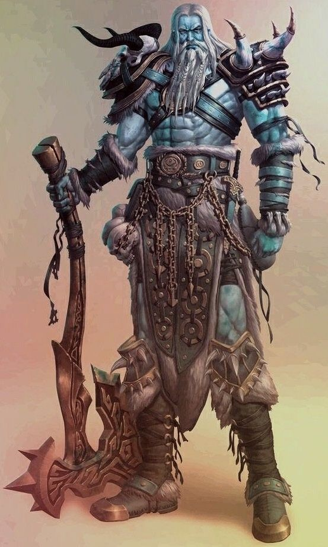
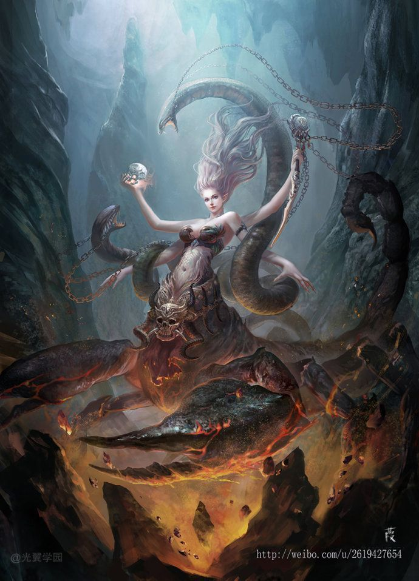

-
- A partir del nivel 3, puedes desarrollar alas grandes y retorcidas de carne mutada. Obtienes la siguiente Adaptación: Alas: como acción adicional, puedes manifestar un par de alas carnosas y distorsionadas. Obtienes una velocidad de vuelo igual a tu velocidad actual. Estas alas retroceden después de 10 minutos. Puedes reabsorberlos como una acción adicional en tu turno, y se reabsorben automáticamente si quedas inconsciente. Puedes manifestar tus alas mientras llevas una armadura media o ligera si está hecha para acomodarlas. No puedes manifestar tus alas mientras llevas una armadura pesada. Una vez que uses esta Adaptación, no podrás volver a usarla hasta que completes un breve descanso.
-
- Requisito Previo: Zarcillos de otro mundo
- Puedes hacer crecer un zarcillo adicional. En turnos posteriores, podrás usar una acción adicional para atacar con cada zarcillo que hayas cultivado. Todos los zarcillos pueden atacar al mismo objetivo o a otros diferentes. Haz una tirada de ataque separada para cada zarcillo. Cuando alcanzas el cuarto nivel de esta transformación, la cantidad de zarcillos que puedes manifestar aumenta a tres.
-
- Puedes tirar un d8 en lugar del daño normal para ataques sin armas. Los dados de daño base para tus adaptaciones, como Efficient Killer y Otherworldly Zarcillos, se vuelven un dado base más alto. Por ejemplo, una adaptación que causa 2d6 de daño se convertiría en 2d8 de daño.
-
- Tu cuerpo segrega una sustancia altamente ácida. Puedes escupir un proyectil de ácido (alcance 30 pies) como acción de ataque a distancia, infligiendo 4d6 de daño por ácido. Puedes usar esta habilidad un número de veces igual a tu modificador de Constitución por descanso largo.
-
-
La naturaleza de la magia está comenzando a desentrañar vuestra forma material. Cada vez que obtienes un 1, 2 o 3 natural en una tirada de salvación contra un hechizo o habilidad mágica, revelas tu Apariencia Horrible.
-
- A partir del nivel 4, cada vez que tiras para impactar a un objetivo y obtienes un 20 natural (o critico en caso de campeones), puedes causar 6d6 de daño adicional. Este daño es del mismo tipo que tu arma. Además, cada criatura de tu elección que esté a 30 pies de ti debe superar una tirada de salvación de Sabiduría o te tendrá miedo durante 1 minuto. Una criatura puede repetir la tirada de salvación al final de cada uno de sus turnos, finalizando el efecto sobre sí misma si tiene éxito.
-
-
- Requisito Previo: Zarcillos adicionales
- En tu turno como acción, puedes crecer rápidamente y lanzar cientos de pequeños zarcillos desde tu cuerpo. Cada criatura de tu elección a menos de 15 pies de ti debe superar una tirada de salvación de Destreza. Si falla la salvación, sufrirá uno de los siguientes efectos de su elección durante 1 minuto. Puedes elegir diferentes opciones de efectos para diferentes criaturas:
- ► El o los objetivos adquieren el estado de envenado
- ► La velocidad de los objetivos se vuelve 0
- ► Los ataques contra los objetivos tienen ventaja
- Una vez que use esta función, no podrá volver a usarla hasta que complete un descanso corto o largo.
-
- A partir del nivel 4, tu cuerpo ha aprendido a adaptarse a condiciones extremas, permitiéndote sobrevivir donde la mayoría moriría. En tu turno, como acción, puedes utilizar la siguiente Adaptación.
- Metamorfosis: cambia rápidamente la composición biofísica y química de su cuerpo en reacción a su entorno. Elija una de las siguientes opciones:
- ► Eres resistente al daño contundente, perforante y cortante. Al determinar el daño por caída, recibes 1 daño contundente por cada 10 pies caídos en lugar del daño normal (máximo de 20 daños contundentes).
- ► Eres resistente al daño por fuego, rayos y ácido. Eres inmune a los efectos de los climas extremadamente cálidos.
- ► Eres resistente al daño del Frío, el Trueno y el Veneno. Eres inmune a los efectos de los climas extremadamente fríos.
- Esta adaptación dura hasta que vuelvas a utilizar esta adaptación.
- Puedes manifestar tentáculos grotescos que surgen de tu espalda o brazos. Como acción, puedes realizar dos ataques adicionales con estos tentáculos (alcance 15 pies, 2d8 daño necrótico cada uno). Además, si impactas a una criatura con ambos ataques en el mismo turno, debe hacer una tirada de salvación de Fuerza (DC 8 + tu modificador de Constitución + tu competencia) o quedar restrained hasta el final de tu siguiente turno. Puedes usar esta habilidad un número de veces igual a tu modificador de Constitución por descanso largo.
- La esencia misma de la magia agrava la naturaleza inestable de tu cuerpo aberrante. Siempre que falles una tirada de salvación de un hechizo o habilidad mágica, tira en la tabla de Mutación inestable. Si el resultado es menor que su efecto de mutación inestable actual, reemplácelo con el nuevo resultado.
-
-
- Los Dioses del mundo ejercen un poder insondable, capaz de remodelar el tejido mismo de la realidad dentro de los planos materiales. Impulsados por la ferviente creencia de sus seguidores, ascienden a alturas cada vez mayores de fuerza e influencia, y su esencia divina se sostiene indefinidamente por la fe de los mortales.
Sin embargo, este poder divino no está exento de riesgos. Si una deidad flaquea ante los ojos de sus adoradores, corren el riesgo de perder su nueva fuerza. En las circunstancias más espantosas, si toda creencia en ellos se desvanece, se enfrentan al destino final de la disipación, condenados al sueño eterno y su existencia olvidada por los mortales.
Convertirse en un Divino es una tarea casi imposible. Aquellos que logran alcanzar este estado ya tenían mucho poder.
- Requisitos previos:
- Puntuaciones de habilidad:
Una puntuación de habilidad de al menos 22.
- Nivel:
Tienes que tener al menos el nivel 20 para convertirte en esta transformación.
- Transformación Guardar DC
= 8 + Tu bonificación de competencia + Tu nivel de transformación + Tu modificador de puntuación de habilidad más alto
- Hitos de nivel
- Los siguientes son los únicos hitos para lo Divino:
- Gana tus primeros 100 seguidores.
- Gana tus primeros 1000 seguidores.
- Gana 10000 seguidores.
-
-
- Los teólogos requieren adoración para alimentar su esencia vital y sus poderes. Obtienes una cantidad de puntos de fervor (FP) equivalente a 100 x tu nivel de transformación, que se reponen por completo cada amanecer. Los puntos de fervor son los que potencian tus habilidades divinas, cada habilidad cuesta una cantidad de puntos de fervor que restas de tu reserva total (FP). Puedes gastar puntos de Fervor para usar las siguientes habilidades. las entradas a continuación detallan sus nombres, (FP) costo:
- Guía celestial (1-10 FP)
- Requisito previo: Bueno
- Como reacción, cada vez que veas que una criatura realiza una prueba de habilidad, una tirada de ataque o una tirada de salvación, puedes gastar hasta 10 FP para agregar una bonificación a esa tirada igual a la cantidad gastada.
- Ruina celestial (1-10 FP)
- Requisito previo: Maldad
- Como reacción, cada vez que veas que una criatura realiza una prueba de habilidad, una tirada de ataque o una tirada de salvación, puedes gastar hasta 10 FP y restar una cantidad de puntos a la tirada igual a la cantidad de FP que gastaste.
- Reprimenda amable (10-90 FP)
- Como reacción, cuando una criatura que puedes ver lanza un hechizo, obligas a tu poder Divino a deshacer el hechizo de la existencia. Gasta una cantidad de FP igual a 10 x el nivel del hechizo para evitar que se lance el hechizo.
- Ira Divina (30 FP)
- Como acción, infundes tu poder Divino en un golpe divino. Creando un cono de 30 pies de tu energía originándose en ti en cualquier dirección que elijas. Cualquier criatura dentro del área debe realizar una tirada de salvación de Constitución igual a tu CD de salvación de transformación o recibir 4d8 de daño de fuerza o la mitad en una salvación fallida. El daño aumenta en 4d8 por nivel de transformación.
-
- Tienes 10 puntos que puedes asignar a cualquier puntuación de habilidad de tu elección. De esta manera no se puede aumentar una puntuación de habilidad más allá de 26. También te conviertes en un Celestial además de cualquier otro tipo de criatura que seas. Dejas de envejecer. eres inmune a un efecto que te haría envejecer y no puedes morir de vejez. No necesitas aire, comida, bebida ni dormir.
- Además, debes elegir ser un Divino alineado con el Bien o el Mal, esto cambia algunas de las habilidades que recibes.
-
- Como Divino, eres visto como un ser inmortal; sin embargo, a pesar de todas tus invencibilidades, albergas un defecto importante: tus seguidores. Si pierdes a todos tus seguidores, caes en la apatía y te dejan a la deriva durmiendo en el plano astral hasta que alguien complete un ritual para traerte de regreso.
- Además, como Divino, eres susceptible al cambio si participas en actos extremos de Bien o Maldad cuando, en el alineamiento opuesto, tu alineamiento cambiará para adaptarse a tus acciones (a discreción de GM). Perderás el acceso a todas tus habilidades Divinas asociadas con tu alineación anterior y obtendrás las asociadas con tu nueva alineación actual.
-
-
- Puedes usar tu fervor para aumentar tu poder, otorgándote más acceso a tus habilidades. Siempre que uses una habilidad que tiene una recarga de un descanso corto, puedes usar 30 FP para usarla y 60 FP para una habilidad que usa un descanso largo, también puedes hacer esto incluso si no te quedan cargas restantes.
- Además puedes utilizar el fervor para lanzar hechizos que ya conoces y tienes preparados. Cada hechizo cuesta una cantidad de FP igual al nivel del hechizo multiplicado por 20. Además, puedes elegir cualquier tipo de daño. Siempre que infliges este daño, ignoras las inmunidades y resistencias contra él.
-
- Tu poder divino te protege incluso en las peores situaciones. Cada vez que fallas una tirada de salvación, puedes gastar 60 FP para tener éxito automáticamente.
-
- Como acción por 35 FP, puedes teletransportarte a cualquier ubicación en el plano de existencia actual en el que resides. Por 5 FP adicionales puedes elegir llevarte una criatura adicional, la criatura debe estar a menos de 20 pies de ti.
-
- Has aprendido a extender tu poder divino como un regalo. Como acción, puedes gastar 40 FP para otorgarte a ti mismo o a cualquier aliado cualquier hazaña o bendición legendaria de tu elección o, en su lugar, puedes optar por aumentar cualquier puntuación de habilidad en 2. Este regalo dura una hora o hasta que lo disipes.
- Sin embargo, dependiendo de tu alineación, la criatura también obtiene un efecto adicional:
- Benveloance
- Requisito previo: Bueno
- Siempre que una criatura obtenga tu don, podrás eliminar un efecto de tu elección.
- Malevolencia
- Requisito previo: Maldad
- Siempre que una criatura que no eres tú obtiene tu don, también obtiene 1 nivel de agotamiento.
-
- Tu cuerpo tiene tanto poder que constantemente quiere escapar. Tienes desventaja en los tiros de salvación de muerte mientras tu poder intenta abrirse camino a través de tu forma. Además, siempre que tengas 0 puntos de vida, cualquier criatura que comience su turno a menos de 20 pies debe realizar una tirada de salvación de constitución. Si tienen éxito, reciben 2d8 daños de fuerza y el doble si fallan.
-
-
- Tu vínculo con tus seguidores y tu poder se ha extendido hasta el punto de que incluso puede salvarte de la muerte. Obtienes la siguiente característica dependiendo de tu alineación:
- Uno para todos
- Requisito previo: Bueno
- Siempre que bajes a 0 puntos de vida, puedes optar por gastar una cantidad de FP. Por cada 20 FP que gastas, ganas 10 puntos de vida.
- Todos para uno
- Requisito previo: Maldad
- Siempre que bajes a 0 puntos de vida, puedes elegir matar automáticamente a varios de tus propios seguidores. Por cada seguidor que elijas sacrificar, recuperas 1 punto de vida.
-
- Ahora puedes usar tus energías divinas para sanar. Sin embargo, esta curación se manifiesta de diferentes maneras dependiendo de tu Alineación:
- Convalecencia
- Requisito previo: Bueno
- Como acción, puedes gastar 40 FP para crear una avalancha de energías curativas que emanan de ti. Restauras hasta 700 puntos de vida, divididos a tu elección entre cualquier cantidad de criaturas que puedas ver. Las criaturas curadas también se curan de todas las enfermedades y puedes elegir poner fin a cualquier condición que esté afectando actualmente a la criatura.
- Ingurgitar
- Requisito previo: Maldad
- Como acción, puedes gastar 40 FP para crear un campo de energía de sifón en cualquier punto que puedas ver. Cada criatura en una esfera de 20 pies de radio centrada en ese punto debe realizar una tirada de salvación de constitución igual a tu CD de salvación de transformación. Un objetivo sufre 12d6 de daño de fuerza si falla la salvación, o la mitad de daño si tiene éxito. Una vez infligido el daño, puedes restaurar puntos de vida iguales a la cantidad máxima de daño infligido, divididos como elijas entre cualquier cantidad de criaturas que puedas ver.
-
- Obtienes la capacidad de darle una gracia a una criatura con tu poder divino. Como acción, puedes otorgar una de las Tres gracia a una criatura de tu elección. Una criatura sólo puede tener una gracia a la vez. Además sólo puedes tener un número de Gracias activas igual a tu Nivel de transformación. Las Gracias son las siguientes:
- Gracia de la velocidad
- La velocidad al caminar de la criatura se duplica y obtiene una acción adicional que solo puede usar para realizar la acción de Atacar (solo un ataque con arma), Correr, Retirarse, Ocultarse o Usar un Objeto.
- Gracia del casting
- Siempre que la criatura lance un hechizo de nivel 6 o superior, puede usar su acción adicional para lanzar un hechizo adicional que debe ser de nivel 5 o inferior.
- Gracia de la resistencia
- La criatura gana competencia en cada tirada de salvación y puede añadir el doble de su bonificación de competencia a la salvación.
-
- Tu poder divino ahora puede afectar el tejido mismo de la realidad. Como acción puedes gastar 80 FP para lanzar el hechizo Deseo. Sin embargo, nunca puedes perder la capacidad de lanzar deseos durante más de una semana.
-
- Tus energías Divinas te han otorgado una cantidad exuberante de poder que te recorre. Sin embargo, esto no está exento de desventajas: eres tan poderoso que los hechizos simples tienen más dificultades para ayudarte. Siempre que te cura una característica que no es tuya, solo te curas la mitad de la cantidad total de puntos de vida y no puedes ser objetivo de ninguna forma de magia de resurrección.
-
-
- Has obtenido el poder de ejercer tu voluntad en un área a tu alrededor. Como acción, puedes gastar 100 FP para crear un campo de energía divina a 100 pies a tu alrededor. Todas las criaturas que elijas obtienen ventaja en las tiradas de salvación, tiradas de ataque y pruebas de habilidad siempre que estén en el área. El Dominio dura 1 minuto, sin embargo debes concentrarte en esta habilidad como lo harías con un hechizo. Sin embargo, dependiendo de su alineación, el Dominio tiene características adicionales que se muestran a continuación:
- Tierra Sagrada
- Requisito previo: Bueno
- Cualquier criatura de tu elección cuando esté en el Dominio gana 20 puntos de vida al comienzo de su turno.
- Hueco sombrío
- Requisito previo: Maldad
- Cualquier criatura de tu elección dentro del Dominio pierde 20 puntos de vida al comienzo de su turno.
-
- Tu poder Divino ha surgido permitiéndote liberarlo en un solo acto de fuerza monumental. Esta demostración de poder es diferente dependiendo de tu alineación:
- Sentencia (180 FP)
- Requisito previo: Bueno
- Como acción, puedes enviar una ola de bondad divina en un radio de 100 pies a tu alrededor que enferma visiblemente a cualquier criatura malvada. Una criatura malvada en el área debe realizar una tirada de salvación de sabiduría igual a tu CD de salvación de transformación. Si falla la salvación, la criatura gira durante 1 minuto o hasta que reciba algún daño.
- Una criatura convertida debe pasar sus turnos intentando alejarse lo más posible de ti y no puede moverse voluntariamente a un espacio a menos de 30 pies de ti. Tampoco puede soportar reacciones. Para su acción, puede utilizar únicamente la acción Dash o intentar escapar de un efecto que le impide moverse. Si no hay ningún lugar a donde moverse, la criatura puede usar la acción de Esquivar. Mientras la criatura está girada, sufre 2d10 de daño de fuerza al comienzo de sus turnos.
- Una criatura puede repetir la tirada de salvación al final de su turno. Además, cualquier criatura maligna con un Cr de 5 o menos se destruye instantáneamente y se convierte en polvo fino.
- Aniquilación (220 FP)
- Requisito previo: Maldad
- Como acción creas una columna de pura erradicación desenfrenada. Cualquier criatura dentro de un radio de 30 pies y un cilindro de altura infinita centrado en ti, debe realizar una tirada de salvación de constitución igual a tu CD de salvación de transformación o sufrir 800 de daño o la mitad si tiene éxito. Cada 30 pies después del radio inicial de 30 pies causa la mitad del daño de la cantidad anterior hasta que desaparece y llega a 0 después del radio total de 300 pies. Esta característica causa 4 veces más daño a las estructuras y destruye por completo todo lo que mata.
-
- Tu poder divino fortalece tu cuerpo otorgándote resistencias que no se vinculan con ninguna otra. Obtienes inmunidad al daño contundente, perforante y cortante de armas no mágicas y resistencia a todas las formas de daño. Además, tus puntos de vida máximos aumentan según tu nivel de transformación x diez y puedes agregar tu nivel de transformación a cualquier tirada de salvación que realices.
-
- Como acción, puedes gastar 50 FP para adivinar el futuro de una acción que estás a punto de realizar. Entonces sabrá el resultado más probable de esa acción que ocurrirá dentro de la próxima hora. Si la pregunta no puede responderse fácilmente, no pasa nada. Además, obtienes una visión real de hasta 120 pies. Por último, siempre eres el primero en Iniciativa, sin importar qué tan bajo obtengas y no te sorprenderán.
-
- Tu poder ha llegado a un punto en el que las Deidades del mundo han comenzado a notar tu presencia y la amenaza que podrías representar para ellas. Esto puede manifestarse en una deidad que envía a sus secuaces para intentar matarte a ti o a tus seguidores. Esto lo determina el DJ.
-
-
- Los Kitsune, seres etéreos de alegría y picardía sin límites, suelen manifestarse en forma de zorro o de un cautivador híbrido zorro-humano. Su naturaleza caprichosa los lleva a deleitarse con el engaño, tejiendo planes que van desde bromas inocentes hasta esfuerzos más astutos y tortuosos. Con cada truco realizado, Kitsune aprovecha la energía generada, mejorando sus poderes innatos y su vitalidad.
- Inmortal y sin edad, Kitsune existe más allá de las limitaciones mortales del tiempo. En cambio, marcan el paso de los años con el crecimiento de colas adicionales, un símbolo de su sabiduría y fuerza acumuladas. A medida que aumenta el número de colas, también aumenta su potencia, lo que convierte a los Kitsune mayores en entidades formidables en el reino de los espíritus.
- Convertirse en un kitsune: Hay muchas maneras de convertirse en Kitsune, la mayoría de las personas son elegidas por los espíritus para traer alegría y travesura al mundo, completando la ascensión a través de un acto como bañarse en un río o arroyo mágico, otra forma es pasar el poder del Kitsune. abajo a través de la herencia. O alguna otra razón plausible para convertirte en Kitsune. Discute con tu GM cómo puedes lograr esto en tu historia de fondo o en el juego.
- Requisitos previos:
- Puntuaciones de habilidad: Puntuación de carisma de 13.
- Transformación Guardar DC
= 8 + tu bonificación de competencia + tu nivel de transformación + tu modificador de Carisma
- Hitos de nivel
- Los siguientes son ejemplos de posibles hitos de nivel para Kitsune:
- Haz una gran trabesura que te genere una gran cantidad de TP (Puntos por Trabesura, una trabesura puede generar 9 TP por ejemplo).
- Engaña a 13 personas provocando que se pierdan.
- Argega una trampra a un juego que no lo tenga
- Haz que alguien se vuelva paranoico o loco debido a tus bromas.
-
-
- Tu propia naturaleza ha cambiado dejándote con un aburrimiento insaciable y un deseo natural de caos y trucos inocentes. Usar este deseo para manipular la esencia misma del mundo de maneras útiles. Obtienes la capacidad de almacenar la esencia de los trucos, puedes usar estos puntos de truco (TP) para gastarlos en habilidades.
- Obtendrá las siguientes características que se enumeran a continuación:
- Travesura: Como reacción al ser objetivo de un ataque, puedes darle al objetivo desventaja en la tirada de ataque. Si el objetivo falla, ganas 1 TP.
- Protección Como reacción al recibir daño, puedes usar 2 TP para reducir la cantidad de daño recibido en una cantidad de d8 igual a tu nivel de transformación + tu modificador de Carisma.
- Correr Como acción adicional por 1 TP, puedes elegir una criatura a 30 pies de ti incluyéndote a ti mismo, esa criatura tiene doble movimiento hasta el comienzo de tu siguiente turno.
- Además, el DM puede recompensarte por cualquier acto que involucre engaño, engaño o payasada en general, donde cuanto mayor sea el acto, más TP se pueden recompensar a discreción del DM.
-
- Tu puntuación de Carisma aumenta en 2 y tu puntuación de Inteligencia aumenta en 1. Una puntuación de habilidad no puede aumentar más allá de 20 de esta manera. Te conviertes en Celestial o Fey, los hechizos y habilidades que indican efectos o condiciones específicamente relacionados con Celestial o Fey de un determinado CR no tienen ningún efecto en ti.
- Además, obtienes garras como las de un zorro que puedes usar para realizar ataques desarmados. Cuando golpeas con ellos, el golpe causa 1d6 + tu modificador de Carisma de daño cortante, en lugar del daño contundente normal para un golpe desarmado.
-
- Tu cuerpo y tu alma están ligados a uno de los reinos espirituales. Tienes desventaja en las tiradas de salvación de muerte mientras el reino intenta atraerte de regreso a él. Si te matan, tu alma regresa a un plano de existencia elegido por el DJ. Este avión es tu nuevo hogar y te conviertes en un NPC bajo el control del DJ. Si estás en el reino de las hadas responsable de tu transformación, este defecto no tiene ningún efecto.
-
-
- Como acción adicional por 2 TP, puedes invocar una manifestación pura de engaño a 5 pies de ti, que aparecen como motas de llamas de color azul claro que flotan suavemente sobre ti y emiten 10 pies de luz tenue. Invocas una cantidad de motas igual a tu nivel de transformación.
- Como acción después de convocarlos, puedes optar por disparar cualquier cantidad que elijas, a cualquier objetivo dentro de un radio de 60 pies de ti. Haz una tirada de ataque con hechizos a distancia usando tu modificador de Carisma. Con un golpe, el objetivo recibe 1d6 + tu modificador de carisma de daño radiante por mota.
-
- Puedes utilizar la esencia del engaño tanto para ayudar a tus aliados como para obstaculizar a tus enemigos. Como acción por 4 TP, eliges un aliado y un enemigo a 30 pies de ti. Puedes elegir un aliado para recuperar una cantidad de puntos de vida igual a una cantidad de d4 igual a tu nivel de transformación o otorgarle una bonificación en su siguiente tirada igual a tu nivel de transformación.
- >Además, al hacer esto, elige un enemigo dentro de 30 pies, lo que le hace realizar una tirada de salvación de Carisma, si falla, recibe daño necrótico igual a una cantidad de d4 igual a tu nivel de transformación o le otorga un negativo en su siguiente tirada igual a tu nivel de transformación.
- Además, puedes optar por mejorar esta habilidad con tu TP. Las mejoras son las siguientes.
- Al usar esta función por 2 TP adicionales, puedes afectar a otro aliado y enemigo.
-
- Posees sentidos intensificados que te permiten percibir cosas que podrían estar ocultas a los demás. Obtienes competencia en Engaño y Percepción. Si ya tienes competencia en estas habilidades, entonces tu bonificación de competencia se duplica al realizar pruebas de habilidad de Engaño y Percepción, y si ya está duplicada, obtienes un +2 a estas habilidades.
- Además, puedes optar por mejorar esta habilidad con tu TP. Las mejoras son las siguientes.
- Como acción por 2 TP adicionales, obtienes la capacidad de escuchar falsedades durante 1 minuto. Lo sabes si escuchas a una criatura mentir voluntariamente. Una criatura oculta a la magia de adivinación no revela nada.
- Como acción por 1 TP adicional, obtienes la capacidad de ver criaturas y objetos invisibles durante 1 minuto.
-
- Como acción, puedes polimorfarte en un pequeño zorro o volver a tu forma kitsune. Mientras estás en forma de zorro, obtienes las siguientes características:
- ► Su velocidad al caminar es de 40 pies.
- ► Obtienes un +10 en todas las pruebas de destreza (Sigilo).
- ► Puedes realizar la acción de carrera como acción adicional mientras estés en esta forma.
- ► Mientras estás en forma de Fox, no puedes hablar. Cualquier objeto que sostengas o armadura que lleves puesta se fusiona con tu forma humana o cae inmediatamente al suelo. El DJ puede decidir si cree que el objeto no puede fusionarse.
- ► Si pierdes el conocimiento en forma de Zorro, vuelves a tu forma Kitsune.
- Además, puedes optar por mejorar esta habilidad con tu TP. Las mejoras son las siguientes.
- ► Como parte de la acción de ataque, por 1 TP adicional puedes usar tus mandíbulas como arma natural, que puedes usar para realizar ataques desarmados. Si golpeas con ellos, causan 1d4 + tu modificador de carisma y 2d6 de daño radiante. Las tiradas de ataque realizadas con las mandíbulas utilizan tu modificador de Carisma en lugar de Fuerza.
- ► Como acción adicional por 1 TP adicional, puedes teletransportarte a cualquier lugar que puedas ver a menos de 30 pies de ti, siempre y cuando estés actualmente en tu forma Fox.
-
- Debido a tu naturaleza espiritual tienes aversión a la sal y al hierro. Las líneas de sal actúan como límites contra ti, donde no puedes atravesarlas voluntariamente y cuentan como una línea de visión detenida cuando usas magia de teletransportación.
- Además, cuando una criatura te daña con un arma de hierro el ataque causa el doble de daño.
-
-
- Profundizando en el arte del engaño, si alguna vez tienes 0 TP mientras tomas un descanso prolongado, obtienes una cantidad igual a tu nivel de transformación después de completar un descanso prolongado.
- Además, puedes optar por mejorar esta habilidad con tu TP. Las mejoras son las siguientes.
- ► Como reacción por 2 TP adicionales, al fallar una tirada de ataque, puedes volver a tirar el d20 y debes realizar la nueva tirada.
- ► Al usar una habilidad de Kitsune por 4 TP adicionales, puedes aumentar el alcance a la mitad o la duración al doble.
-
- Como acción por 3 TP, creas una esfera de 40 pies de radio en un punto que puedes ver dentro de un radio de 120 pies. Creas la imagen de un objeto, una criatura o algún otro fenómeno visible que no es más grande que el área. La imagen aparece en un lugar que puedes ver dentro del alcance y dura 1 minuto. Parece completamente real, incluidos sonidos, olores y temperatura apropiados para lo representado. Si tuvieras que crear un escenario en el que una criatura sufre daño, en su lugar inflige 2d8 + tu modificador de carisma de daño radiante. Si una criatura tiene interacción física con la ilusión, se ve obligada a realizar una tirada de salvación de inteligencia igual a tu CD de salvación de transformación. Si tienen éxito, determinan que es una ilusión. Si una criatura discierne la ilusión tal como es, la criatura puede ver a través de la imagen, y sus otras cualidades sensoriales se vuelven débiles para la criatura, además, reciben 2d8 + tu modificador de carisma de daño radiante.
- Además, puedes optar por mejorar esta habilidad con tu TP. Las mejoras son las siguientes.
- ► Al usar esta característica por 2 TP adicionales, otorgas desventaja a todas las criaturas de tu elección dentro del área en todas las tiradas para determinar si es una ilusión.
- ► Al usar esta función por 2 TP adicionales, otorgas desventaja a todas las criaturas de tu elección dentro del área en las tiradas de ataque.
- ► Como acción por 1 TP adicional puedes cambiar la ilusión dentro del área.
-
- Como reacción por 2 TP al ser objetivo de un ataque, puedes teletransportarte a cualquier punto que puedas ver dentro de 30 pies de ti y te vuelves invisible hasta el final de tu siguiente turno.
- Además, puedes optar por mejorar esta habilidad con tu TP. Las mejoras son las siguientes.
- ► Al usar esta función por 1 TP adicional, te lanzas el hechizo de Invisibilidad con la misma reacción.
- ► Al usar esta función por 3 TP adicionales, te lanzas el hechizo de Mayor Invisibilidad con la misma reacción.
-
- Como acción por 3 TP, invocas el poder del robo para tomar sutilmente un objeto aleatorio de una criatura a 60 pies de ti. La criatura debe realizar una tirada de salvación de Carisma con una CD igual a tu CD de salvación de transformación. Cuando una criatura falla la tirada 1d100, esto determina la calidad del objeto que tomas. Cuanto mayor sea el número, mayor será la calidad o importancia del artículo que tomes, a discreción del DM. El objeto se teletransporta a una mano libre, si no tienes una mano libre la habilidad falla (por ejemplo, si obtienes un número alto, puedes tomar elementos como una espada mágica, un bastón o unas bragas si eres un otaku japonés reencarnado en un mundo nuevo con una diosa inútil).
- Además, puedes optar por mejorar esta habilidad con tu TP. Las mejoras son las siguientes.
- ► Al usar esta función por 1 TP adicional, puedes tirar un d100 adicional tomando la tirada más alta.
- ► Al usar esta función por 2 TP adicionales, puedes optar por robar uno de sus sentidos en lugar de un objeto. Esa criatura gana la condición de ciego o ensordecido durante 1 minuto. La criatura puede repetir la tirada de salvación al final de cada turno posterior para terminar la condición antes de tiempo.
- ► Al usar esta función por 4 TP adicionales, puedes elegir robar su capacidad para lanzar hechizos hasta el final de tu próximo turno en lugar de un objeto.
-
- Los kitsunes eligen sus palabras con cuidado porque están obligados a ellas, y tú también. Cuando das tu palabra a una criatura humanoide (por ejemplo, al hacer una promesa o promesa, celebrar un contrato o llegar a un acuerdo verbal), el compromiso se hace cumplir mágicamente. Si no cumples con tu parte del acuerdo, perderás el beneficio de todas tus ventajas de transformación Kitsune hasta que realices un gran acto de engaño con la criatura con la que rompiste tu palabra.
- Es importante destacar que usted está obligado por la letra de cualquier acuerdo que haga, no por el espíritu. Si prometes que no pondrás tu mano encima del príncipe, por ejemplo, no habrá consecuencias si lo pateas (siempre que tu mano no lo toque en el proceso). Todo esto depende de la discreción del DM.
-
-
- Como acción de 6 TP durante el siguiente minuto, liberas el espíritu desatado del Kitsune dentro de una línea de 30 pies de ancho y 60 pies de largo. Cualquier criatura aliada dentro del área obtiene los beneficios del hechizo de prisa, sin los perjuicios siempre que permanezca dentro del área.
- Además, puedes optar por mejorar esta habilidad con tu TP. Las mejoras son las siguientes.
- ► Al usar esta característica por 2 TP adicionales, cualquier criatura bajo el efecto del hechizo de prisa tiene éxito en una tirada de salvación realizada contra un hechizo o efecto mágico que le permite realizar una tirada de salvación para recibir solo la mitad del daño; en cambio, no recibe daño si tiene éxito en los tiros de salvación.
- ► Al usar esta característica por 2 TP adicionales, cualquier criatura bajo el efecto del hechizo de prisa recupera 5 puntos de vida al comienzo de cada uno de sus turnos siguientes.
-
- Por 75 TP, invoca los grandes aspectos del engaño para transformar la realidad según tu voluntad. Obtienes la habilidad de lanzar Deseo (Wish) una vez.
- Además, puedes elegir mejorar esta habilidad usando tus TP. Las mejoras son las siguientes:
- ► Al usar esta característica por un costo adicional de 10 TP, las probabilidades de que no puedas lanzar Deseo nuevamente disminuyen al 10%.
-
- Como acción, por 4 TP obtienes la habilidad de lanzar el hechizo Ethereal.
- Además, puedes elegir mejorar esta habilidad usando tus TP. Las mejoras son las siguientes:
- ► Al usar cualquier habilidad o característica de Kitsune por un costo adicional de 5 TP, puedes hacer que afecte el plano en el que estabas anteriormente.
-
- Como acción por 6 TP, puedes infundir las energías reparadoras del Kitsune en una criatura a 30 pies de ti. Si la criatura está dispuesta, puede entrar en un sueño profundo, adquiriendo la condición de inconsciente durante 2 rondas, luego, si no es atacada ni despierta de ninguna otra manera, obtiene los beneficios de un breve descanso.
- Además, puedes optar por mejorar esta habilidad con tu TP. Las mejoras son las siguientes.
-
Al usar esta función por 4 TP adicionales, puedes hacer que una criatura quede inconsciente durante 1 minuto en lugar de 2 rondas, donde en cambio obtiene los beneficios de un descanso prolongado.
-
- Tu nuevo plano nativo intenta atraerte hacia él, reclamando tu forma. Cada vez que obtienes un 1 natural en una tirada de salvación contra un hechizo o habilidad mágica, sufres 1d6 de daño de fuerza por cada 2 niveles de clase, además de cualquier otro daño o efecto que sufrirías, ya que tu plano nativo intenta desvincularte del plano material. . Por ejemplo, un luchador de sexto nivel recibiría 3d6 de daño de fuerza. Este daño ignora las resistencias y las inmunidades.
-
-
- Ser elegido por un Archiserafín es convertirse en un
recipiente de los principios que defienden. Este es un
cargo que no debe tomarse a la ligera, y aquellos que
mostrar justicia con la intención de
convertirse en un serafín generalmente se pasa por alto por este motivo.
razón. Al convertirse en Serafín, considere por qué
Tu personaje fue elegido. ¿Se muestra oculto?
¿mérito? ¿Estás dedicado a una causa que valorarán?
- Un Serafín tiene la siguiente
características de transformación
- Requisito previo:
- Puntuaciones de habilidad: Sabiduría 13
- El DC de tiro se calcula de la siguiente manera:
Transformación Guardar DC = 8 + tu competencia
bonificación + tu modificador de Sabiduría
- Hitos de nivel
- ► Derrotar a una poderosa fuerza de la oscuridad.
- ► Crear un hito sagrado para los peregrinos.
- ► Establecer una parroquia de fieles que defiendan tu virtud.
- ► Establecer un portal entre el Plano Material y el Empyrium.
- ► Redimir un alma que era considerada más allá de la redención
-
-
- Tu puntuación de Sabiduría aumenta en 2 y tu puntuación de Constitución aumenta en 1. Una puntuación de habilidad no puede aumentar más allá de 16 de esta manera. Te conviertes en un Celestial además de cualquier otro tipo de criatura que seas. Los hechizos y habilidades que afectan a Celestiales de un CR específico no tienen ningún efecto sobre ti.
-
- Has manifestado alas emplumadas. Tienes una velocidad de vuelo igual a tu velocidad normal. No puedes usar armaduras o ropa que no haya sido modificada para acomodar tus alas.
-
- Tu cuerpo y alma están atados a un plano divino de existencia. Tienes desventaja en las tiradas de salvación de muerte cuando el avión intenta llevarte de regreso a él. Si te mataran, tu alma habría sido devuelta a un plano de existencia elegido por el DJ. Este avión es tu nuevo hogar y te conviertes en un NPC bajo el control del DJ.
- Si estás en el plano divino responsable de tu transformación, este defecto no tiene ningún efecto.
-
-
- Cuando tú o una criatura aliada que puedas ver a menos de 30 pies realizas la acción de ataque, puedes usar tu reacción para imbuirlos de celo sagrado. Inmediatamente después de que el objetivo completa la acción de ataque, puede realizar un ataque adicional como acción adicional. Con un golpe, el objetivo golpeado sufre 1d8 de daño radiante adicional. Puedes usar esta característica una cantidad de veces igual a tu modificador de Sabiduría (mínimo de 1). Recuperas todos los usos de esta función cuando finalizas un descanso prolongado.
-
- Cuando tú o una criatura que puedas ver a menos de 60 pies sufras daño, puedes usar tu reacción para lanzar un hechizo de nivel 1 o superior. Este hechizo debe apuntar a la criatura dañada y restaurarle los puntos de vida. Puedes usar esta característica una cantidad de veces igual a tu modificador de Sabiduría (mínimo de 1). Recuperas todos los usos de esta función cuando finalizas un descanso prolongado.
-
- Al comienzo del turno de otra criatura, puedes usar tu reacción para moverte a tu velocidad o permitir que un aliado que puedas ver, dentro de 60 pies, se mueva a su velocidad. El movimiento realizado de esta manera no provoca ataques de oportunidad. Puedes usar esta característica una cantidad de veces igual a tu modificador de Sabiduría (mínimo de 1). Recuperas todos los usos de esta función cuando finalizas un descanso prolongado.
-
- Cuando tú o una criatura aliada que puedas ver a menos de 30 pies seas objetivo de un ataque, puedes usar tu reacción para protegerlos con luz sagrada. El objetivo obtiene una bonificación de +4 a la CA contra el ataque. Puedes usar esta característica una cantidad de veces igual a tu modificador de Sabiduría (mínimo de 1). Recuperas todos los usos de esta función cuando finalizas un descanso prolongado.
-
- Tu apariencia se ha transformado radicalmente. Tu cuerpo irradia un brillo divino, mientras que tus alas son apéndices prominentes y poderosos. Puedes contener esta forma y presentar la apariencia del humanoide que alguna vez fuiste, pero esto es agotador y requiere concentración. Es probable que los momentos de estrés revelen su verdadera naturaleza. En las siguientes situaciones, se revela tu verdadera forma:
- ► Concentrarse en un hechizo.
- ► Adquiriendo la condición inconsciente.
- ► Entrando en tierra sagrada.
- ► Elegir revelarte a ti mismo.
- En eventos de estrés emocional o físico extremo, un DJ puede solicitar una tirada de salvación de Constitución con una CD de su elección para ver si mantienes tu forma humanoide.
- Las malvadas criaturas humanoides que presencian o escuchan acerca de tu verdadera forma se vuelven instantáneamente hostiles hacia ti y se ven obligadas por malicia a destruirte, a menos que el DJ decida lo contrario.
- Si la criatura te tiene miedo o decide que eres demasiado poderoso para luchar, intentará hacerte daño de otra manera, pero no dejará de destruirte.
-
-
- Cada vez que golpeas a un objetivo con un ataque cuerpo a cuerpo, le infliges 1d6 de daño radiante adicional. Este daño aumenta a 2d6 si el objetivo es un demonio, un hada o un no-muerto.
-
- Cuando lanzas un hechizo que restaura los puntos de vida de un aliado, también puedes eliminar una condición que le inflige un hechizo o habilidad.
-
- Puedes usar una acción adicional para invocar un poderoso arco hecho de luz divina. El arco es igual que un arco largo, excepto que los ataques realizados con él causan daño radiante y:
- ► El arco no utiliza munición. En cambio, cuando el portador tira de la cuerda del arco, se forma una flecha etérea de luz radiante.
- ► Los ataques con el arco causan 1d8 de daño radiante adicional. Contra demonios, hadas y muertos vivientes, el arco inflige 2d8 de daño radiante adicional.
- ► La forma radiante del arco emite luz brillante en un radio de 5 pies y luz tenue en 5 pies adicionales.
- Puedes desactivar el arco en cualquier momento con el uso de una acción. Si retiras el arco, se cancelará inmediatamente.
-
- Puedes usar tu acción para fortalecerte contra las tácticas de tus adversarios más odiados, obteniendo uno de los siguientes beneficios:
- ► Enfréntate a lo infernal: Obtienes resistencia al daño por fuego.
- ► Limpia a los no-muertos: Obtienes resistencia al daño necrótico.
- ► Ignora el engaño de los Fey: Eres inmune a las condiciones encantadas y asustadas.
- Este efecto dura hasta que utilices esta función nuevamente.
-
- Te has convertido en un Serafín de notable virtud y divinidad. Esto te ha convertido en un objetivo para todo lo que hay de oscuro en el mundo. Siempre que tú o un aliado en un radio de 30 pies cometas un acto de maldad mayor, como asesinar a un inocente indefenso, una pequeña cantidad de oscuridad se adhiere a ti y ganas 1 punto de corrupción (hasta un máximo de 5). El DJ determina si el acto constituye un mal mayor. Siempre que hagas una tirada de ataque contra una criatura malvada, o hagas una tirada de salvación contra un hechizo o habilidad de una criatura malvada, resta de la tirada el número de puntos de corrupción que tienes. Siempre que completes un descanso corto o largo y hayas orado durante al menos 1 hora, podrás reducir en 1 el número de puntos de corrupción que tienes.
-
-
- Emites un aura de justo fervor. Esta aura irradia hasta 20 pies de ti mientras estás consciente. Cuando tú o un aliado dentro del alcance de tu aura golpean a una criatura hostil, pueden elegir que ese golpe sea un golpe crítico. Una vez que una criatura se ha beneficiado de esta característica, no puede volver a beneficiarse de ella hasta que haya completado un descanso prolongado.
-
- Emites un aura de vigorización y fortaleza. Esta aura irradia hasta 20 pies de ti mientras estás consciente. Cuando tú o un aliado dentro del alcance de tu aura se reducen a 0 puntos de vida, en su lugar se reducen a 1 punto de vida. Una vez que una criatura se ha beneficiado de esta característica, no puede volver a beneficiarse hasta que haya completado un descanso prolongado.
-
- Emites un aura de rapidez y valentía. Esta aura irradia hasta 20 pies de ti mientras estás consciente. Cuando tú o un aliado dentro del alcance de tu aura haces una prueba de habilidad de Destreza para determinar la iniciativa, pueden sumar +5 al resultado. Además, en el turno de esa criatura obtienen ventaja en las tiradas de ataque contra cualquier criatura que aún no haya tomado un turno en el combate. Una vez que una criatura se ha beneficiado de esta característica, no puede volver a beneficiarse hasta que haya completado un descanso prolongado.
-
- Emites un aura de convicción incondicional. Esta aura irradia hasta 20 pies de ti mientras estás consciente. Cuando tú o un aliado dentro del alcance de tu aura fallan una tirada de salvación, pueden elegir tener éxito en su lugar. Una vez que una criatura se ha beneficiado de esta característica, no puede volver a beneficiarse de ella hasta que haya completado un descanso prolongado.
-
- Tu nuevo plano nativo intenta atraerte hacia él, reclamando tu forma. Cada vez que obtienes un 1 natural en una tirada de salvación contra un hechizo o habilidad mágica, sufres 1d6 de daño de fuerza por cada 2 niveles de clase, además de cualquier otro daño o efecto que sufrirías, ya que tu plano nativo intenta desvincularte del plano material. . Por ejemplo, un luchador de sexto nivel recibiría 3d6 de daño de fuerza. Este daño ignora las resistencias y las inmunidades.
-
-
- Las almas huérfanas, liberadas de los vasos mortales, buscan refugio en formas físicas en busca de seguridad y agencia. Estas formas varían ampliamente, desde armas y armaduras hasta joyas ornamentadas. Conocidos como Artefactos, estos elementos sirven como recipientes para las almas desplazadas, otorgándoles una apariencia de existencia en el reino material. Cuando surge la necesidad, pueden manifestar cuerpos humanoides para interactuar con el mundo que los rodea. El vínculo simbiótico entre el alma y el artefacto confiere a la entidad poderes únicos. Cada tipo de elemento ofrece un conjunto distinto de habilidades, mejorando las armas para causar mayor daño y dotando a las armaduras de cualidades protectoras mejoradas. Sin embargo, esta nueva fortaleza viene acompañada de una vulnerabilidad; susceptibilidad a hechizos que interrumpen o niegan propiedades mágicas.
- Para convertirse en un Artefacto, tu alma debe poseer y quedar atrapada dentro de un objeto, a través de rituales, accidentes arcanos o por desesperación.
- Requisitos previos:
- Puntuaciones de habilidad:
- Puntuación de Constitución de 13.
- Transformación Guardar DC = 8 + tu bonificación de competencia + tu nivel de transformación + tu modificador de Constitución.
- Hitos de nivel
- ► Toma la forma de un artículo raro.
- ► Tome la forma de un artículo muy raro.
- ► Toma la forma de un objeto legendario.
-
-
- Tu cuerpo es reemplazado por un objeto mágico de tu elección, dependiendo de la forma del objeto que elijas obtendrás ciertos beneficios. (Además, si alguna criatura te usa o te usa, obtiene estos beneficios adicionales).
- ► Arma: Cuando infliges daño, infliges daño adicional igual a tu nivel de transformación.
- ► Armadura: Tu CA aumenta según tu nivel de transformación y obtienes resistencia a cualquier tipo de daño de tu elección.
- ► Bastón/Varita: Cada vez que haces una tirada de ataque, obtienes una bonificación al golpe igual a tu nivel de transformación.
- ► Joyería: Obtienes una bonificación en todas tus tiradas de salvación igual a tu nivel de transformación.
- ► Maravilloso: Obtienes una bonificación en todas las habilidades competentes igual a tu nivel de transformación.
- Al completar un descanso prolongado, puedes cambiar tu forma a cualquier objeto que tengas en tu poder; si el objeto requiere sintonización, debes sintonizarte con él.
-
- Tu puntuación de Constitución aumenta en 2 y tu puntuación de Carisma aumenta en 1. Una puntuación de habilidad no puede superar 16 de esta manera. Te conviertes en un Constructo y eres inmune a cualquier hechizo o efecto que altere tu forma. Toda tu forma es reemplazada por el objeto de tu elección a partir de la característica Transfiguración. Si cualquier hechizo o habilidad, aparte de los tuyos, hace que recuperes puntos de golpe, obtendrás esa cantidad como puntos de golpe temporales en su lugar. Si eres reducido a 0 puntos de golpe y quedas inconsciente como resultado, cualquier curación que recibas te estabilizará, dejándote con 1 punto de golpe e inconsciente. Sin embargo, si se lanza el hechizo Reparar (Mending) sobre ti, sanas 2d6 puntos de golpe.
- Dejas de envejecer, eres inmune a cualquier efecto que te haría envejecer y no puedes morir de vejez. No necesitas aire, comida, bebida ni sueño.
- Además, puedes manifestar un cuerpo espectral hecho de pura energía mágica para manipular objetos en el mundo y sostenerlos. Este cuerpo espectral tiene un aspecto de otro mundo, pero mantiene las mismas proporciones y forma que tu cuerpo anterior. (Nota: Puedes permanecer en tu Forma de Artefacto indefinidamente si lo deseas, y puedes ser llevado o utilizado por otros mientras estás en esta forma).
-
- Si entras en un campo de antimagia, quedas bajo los efectos del hechizo Lentitud mientras permanezcas dentro del campo. Además, si se lanza Disipar Magia sobre ti, recibes daño igual a un número de dados d8 equivalente a tu nivel de transformación.
-
-
- Generas un aura con un radio de 15 pies, cualquier criatura de tu elección dentro del radio obtiene los beneficios de tu función Transfigurar.
-
- Aprendes a pseudo-sintonizarte con una criatura. Como acción, puedes vincularte con una criatura voluntaria que se encuentre a 20 pies de ti. Una vez que estés pseudo-sintonizado con una criatura, esta obtiene los beneficios de tu característica Transfiguración.
- Además, obtienes un grupo de mejoras en las puntuaciones de habilidad igual a tu nivel de transformación, que puedes distribuir entre las puntuaciones de habilidad de la criatura conectada como desees. Esta característica dura 1 minuto o hasta que quedes inconsciente. Puedes usar esta característica una vez por descanso largo.
-
- Obtienes competencia en Percepción y Arcana. Si ya tienes competencia en estas habilidades, tu bonificador de competencia se duplica al realizar chequeos de habilidad con ellas. Si tu bonificador ya está duplicado, obtienes un +2 adicional a estas habilidades.
- Además, puedes lanzar Identificar como acción a voluntad y sin necesidad de componentes materiales.
-
- Obtienes la habilidad de reponer cargas en objetos mágicos. Como acción, puedes restaurar una sola carga de un objeto mágico. Puedes usar esta característica un número de veces igual a tu modificador de Constitución, recuperando todos los usos expandidos después de un descanso largo.
- Además, adquieres la habilidad de fabricar y encantar objetos mágicos en la mitad del tiempo y costo en oro que normalmente tomaría crearlos.
-
- Si pasas 10 horas sin realizar un descanso largo, obtienes 1 nivel de agotamiento. Además, si realizas un descanso corto, su duración aumenta en 1 hora.
-
-
- Los objetos cobran vida bajo tu mando como una acción. Elige hasta diez objetos no mágicos dentro del alcance que no estén siendo usados o transportados. Los objetivos medianos cuentan como dos objetos, los grandes cuentan como cuatro objetos y los enormes cuentan como ocho objetos. No puedes animar ningún objeto más grande que enorme. Cada objeto animado se convierte en una criatura bajo tu control hasta que el efecto termine o sea reducido a 0 puntos de golpe.
- Como acción adicional, puedes comandar mentalmente a cualquier criatura que hayas creado con esta habilidad, siempre que se encuentre a 500 pies de ti. Si controlas múltiples criaturas, puedes comandarlas todas al mismo tiempo, dándoles la misma orden. Decides qué acción tomará la criatura y a dónde se moverá en su próximo turno, o puedes emitir un comando general, como proteger una sala o un pasillo específico. Si no das ninguna orden, la criatura solo se defenderá de las criaturas hostiles. Una vez que recibe una orden, la criatura la seguirá hasta completarla.
- Detalles del Objeto Animado:
- Un objeto animado es un constructo con CA, puntos de golpe, ataques, Fuerza y Destreza determinados por su tamaño:
- Constitución: 10
- Inteligencia: 3
- Sabiduría: 3
- Carisma: 1
- Velocidad:
- 30 pies.
- Si carece de patas u otros apéndices para moverse, tiene una velocidad de vuelo de 30 pies y puede flotar.
- Si está firmemente sujeto a una superficie o a un objeto más grande (como una cadena atornillada a una pared), su velocidad es 0.
- Sentidos:
- Visión ciega: Radio de 30 pies.
- Más allá de esta distancia, el objeto es ciego.
- Forma Original:
- Si el objeto animado cae a 0 puntos de golpe, vuelve a su forma original, y cualquier daño restante se transfiere a esta forma original.
- Ataques:
- Si ordenas al objeto atacar, puede realizar un único ataque cuerpo a cuerpo contra una criatura a 5 pies de distancia.
- Ataque de golpe: Usa un bonificador de ataque y causa daño contundente determinado por su tamaño.
- El DM puede decidir que un objeto específico cause daño cortante o perforante, dependiendo de su forma.
- Usos:
- Puedes usar esta característica una vez por descanso largo.
-
- Ahora puedes pseudo-sintonizarte con una criatura adicional, otorgando a cada criatura las mismas bonificaciones.
-
- Puedes sintonizarte con un número adicional de objetos mágicos igual a la mitad de tu bonificador de competencia (redondeado hacia abajo).
- Además, obtienes un bonificador de +1 a todas las tiradas de salvación por cada objeto mágico con el que estés actualmente sintonizado.
-
- Tienes acceso a un pequeño Demi-Plano. Como acción, puedes guardar o recuperar objetos inanimados de su interior. Esta dimensión puede contener hasta 500 libras, sin exceder un volumen de 64 pies cúbicos.
- Además, puedes lanzar el hechizo Catapulta sobre cualquier objeto dentro de tu Demi-Plano, como si el objeto estuviera en el mismo punto que tú, utilizando tu tirada de salvación de transformación.
-
- El tiempo que te toma adquirir un nivel de agotamiento se reduce a cada 8 horas.
-
-
- Tu habilidad para potenciar objetos mejora, otorgándote beneficios adicionales para cada tipo de objeto. (Además, si alguna criatura te usa o te lleva puesto, obtiene estos beneficios adicionales).
- ► Arma: Una vez por descanso largo, cuando realices la acción de atacar, puedes elegir que ese golpe sea un golpe crítico en su lugar.
- ► Armadura: Una vez por descanso largo, cuando recibas daño de cualquier fuente, puedes reducir ese daño a 0.
- ► Bastón/Varita: Una vez por descanso largo, cuando obligues a una criatura a hacer una tirada de salvación, puedes forzarla a tirar automáticamente un 1 en su tirada.
- ► Joyería: Una vez por descanso largo, cuando te veas obligado a hacer una tirada de salvación, puedes elegir tener éxito en su lugar.
- ► Maravilloso: Una vez por descanso largo, cuando hagas una tirada de habilidad o chequeo de atributo, puedes elegir tener éxito en su lugar.
-
- Recuperas 10 puntos de golpe al inicio de tu turno si tienes al menos 1 punto de golpe restante.
-
- Has forjado una conexión más profunda con los objetos mágicos a los que estás sintonizado, hasta el punto en que puedes sacrificarlos para escapar de la muerte. Al morir, te ves obligado a des-sintonizar un objeto mágico de tu elección, debido a que el objeto es destruido y explota en un radio de 10 pies alrededor de ti. Cualquier criatura dentro del radio debe hacer una tirada de salvación de Destreza igual a tu DC de salvación de transformación. Si falla la tirada, la criatura recibe 5d12 de daño de fuerza, o la mitad si tiene éxito en la tirada.
- Después de esto, serás salvado de la muerte y recuperarás una cantidad de puntos de golpe dependiendo de la rareza del objeto mágico destruido:
- ► Común: Recuperas 5 puntos de golpe.
- ► Poco común: Recuperas 25 puntos de golpe.
- ► Rara: Recuperas 50 puntos de golpe.
- ► Muy rara: Recuperas 75 puntos de golpe.
- ► Legendaria: Recuperas 100 puntos de golpe.
- ► Artefacto: Recuperas tus puntos de golpe máximos
-
- Como acción, puedes extender una fuerza de control sobre todos los objetos mágicos dentro de un radio de 20 pies centrado en ti. Todos los objetos mágicos de nivel legendario y por debajo en esta área dejan de funcionar y se vuelven no mágicos hasta que salgan del área. El campo dura un minuto. Puedes usar esta característica una vez por descanso largo.
-
- Cuando entras en el área de un campo de antimagia, te vuelves inconsciente hasta que seas retirado del área del campo. Además, el daño de Dispel Magic aumenta a dado de 12 (d12).
-
-
- Autómatas, ya sean completamente o parcialmente convertidos, son entidades formidables conocidas por su resistencia y fuerza. Generalmente fabricados de hierro o madera para servir a sus creadores, a veces estos seres desafían su propósito original, forjando sus propias identidades y aspiraciones.
- Esta nueva autonomía les permite equiparse con una variedad de mejoras, que van desde cañones ofensivos para facilitar el combate, hasta alas para maniobrar en el aire, además de otras modificaciones adaptadas a sus necesidades individuales. Adaptables y ingeniosos, los autómatas evolucionan para enfrentar una multitud de situaciones con destreza y eficiencia.
- Convertirse en un Autómata: Puedes ser creado como un Autómata o convertirte lentamente en uno con el tiempo mediante diversas mejoras cibernéticas.
- Requisitos previos:
- Puntuaciones de habilidad: Puntuación de Fuerza de 13.
- Transformación Guardar DC
= 8 + tu bonificación de competencia + tu nivel de transformación + tu modificador de Fuerza
- Hitos de nivel
- Los siguientes son ejemplos de posibles hitos de nivel para el Autómata:
- Crear o tener un cuerpo avanzado nuevo diseñado para ti.
- Encontrar una gran fuente de poder mágico y tomarla.
- Perder tu humanidad.
- Ganar un mayor sentido de humanidad.
- Convertir a otro humanoide en un constructo.
-
-
- Los autómatas se dividen en tres clasificaciones principales: Ágil, Guerrero y Coloso. Estos modelos ofrecen características únicas a los autómatas. Las características son las siguientes:
- ► Modelo Ágil: Tu velocidad de movimiento aumenta en 10 pies y obtienes un bono a tus tiradas de salvación de Destreza igual a tu nivel de transformación.
- ► Modelo Guerrero: Obtienes ventaja en todas las tiradas de ataque cuando tienes un aliado a 5 pies de ti. Además, al tirar el daño de cualquier ataque, sumas tu nivel de transformación al total.
- ► Modelo Coloso: Tu CA se establece en 19 y obtienes un bono a tus tiradas de salvación de Constitución igual a tu nivel de transformación.
-
- Tu puntuación de Fuerza aumenta en 2 y tu puntuación de Constitución aumenta en 1. Ninguna puntuación de habilidad puede superar 20 de esta forma. Te conviertes en un Constructo y eres inmune a cualquier hechizo o efecto que altere tu forma.
- Cuando tomas un descanso prolongado, debes pasar al menos 4 horas en un estado inactivo y sin movimiento, en lugar de dormir. En este estado, pareces inerte, pero no estás inconsciente, y puedes ver y oír con normalidad.
-
- Si entras en un campo de antimagia, quedas bajo los efectos del hechizo ralentizar hasta que salgas del campo.
- Disipar magia te inflige un número de dados de daño (d8) igual a tu nivel de transformación.
- Además, eres inmune a cualquier hechizo o efecto que altere tu forma.
-
-
- uando recibes daño, puedes usar tu reacción para tirar un 1d12, sumar tu modificador de Fuerza al resultado y reducir el daño en ese total. Por cada nivel de transformación superior a 2, obtienes un d12 adicional en la tirada.
- Puedes usar esta característica un número de veces igual a tu bonificación de competencia.
-
- Ganas un número de puntos de golpe igual a tu nivel de personaje, y este aumenta en 1 cada vez que subes de nivel.
- Además, puedes tomarte 1 minuto para repararte. Al final de este minuto, puedes tirar tu dado de golpe y recuperar puntos de golpe como si hubieras tomado un descanso corto.
-
- Como acción, puedes entrar en un modo de baluarte defensivo. Hasta que uses una acción adicional para terminar esta característica, tu velocidad se reduce a 0.
- Mientras permanezcas en el baluarte, reduces a 0 cualquier daño que sea igual o menor a 5 × tu nivel de transformación.
-
- En tu turno, puedes realizar una acción adicional además de tu acción regular
- Además, hasta el inicio de tu próximo turno, tus ataques cuerpo a cuerpo infligen un d8 de daño de rayo adicional por cada nivel de transformación (redondeado hacia abajo).
- Una vez que uses esta característica, debes completar un descanso corto o largo antes de poder usarla nuevamente.
-
- Si pasas 10 horas sin tomar un descanso prolongado, ganas 1 nivel de agotamiento.
- Además, si tomas un descanso corto, el tiempo necesario para completarlo se incrementa en 1 hora.
-
-
- Tu armadura natural es tan resistente que, siempre que recibas daño, puedes reducir el daño total en 4.
-
- Mientras tengas la mitad o menos de tus puntos de golpe máximos, recuperas 10 puntos de golpe al inicio de cada uno de tus turnos hasta que alcances la mitad de tus puntos de golpe máximos. Esta característica no funciona cuando tienes 0 puntos de golpe.
-
- Ganas una velocidad de vuelo igual a tu velocidad de movimiento.
-
- Has aprendido a adaptar mejor tu cuerpo a tu equipo. Después de completar un descanso largo, puedes elegir incorporar uno de los siguientes objetos en tu cuerpo: una arma, un escudo o un bastón / varita mágica. Tras incorporar un objeto, este gana nuevas características, las cuales son las siguientes:
- ► Arma: Infliges un dado de daño adicional con tus armas. Además, el alcance de las armas cuerpo a cuerpo aumenta en 5 pies y el alcance de las armas a distancia se duplica.
- ► Escudo: Como reacción, al recibir daño de un ataque, puedes obligar a la criatura a hacer una tirada de salvación de Destreza igual a tu CD de salvación de transformación. En caso de fallo, la criatura recibe la mitad del daño
- ► Bastón/Varita: Como acción, disparas un rayo de energía arcana chisporroteante desde tu brazo hacia una criatura dentro de 120 pies de ti. Realizas un ataque a distancia contra el objetivo usando tu modificador de Fuerza. Si impactas, el objetivo recibe 1d12 de daño de fuerza. A medida que ganes niveles de transformación, obtendrás un rayo adicional. Además, en lugar de usar tu acción para disparar el rayo, puedes optar por cargar el rayo en un rayo destructivo de energía pura. En cada una de tus acciones posteriores, puedes elegir descargar el rayo, causando d12s de daño iguales a tu nivel de transformación en una línea de 60 pies de largo y 5 pies de ancho en la dirección que elijas. Al final de la línea de 60 pies, hay una esfera de 15 pies de diámetro. Cada criatura dentro de la línea o esfera debe superar una tirada de salvación de Destreza igual a tu CD de salvación de transformación. También puedes optar por seguir cargando el rayo como acción, obteniendo 1d12 de daño adicional por carga, hasta un máximo de 5 cargas.
- Solo puedes tener un armamento arcano a la vez
-
- El tiempo que te toma ganar un nivel de agotamiento se ha reducido a cada 8 horas./li>
-
-
- Tu cuerpo de autómata te otorga una defensa natural contra la magia, dependiendo del modelo que tengas actualmente. Las características son las siguientes:
- ► Modelo Ágil: Tienes ventaja en las tiradas de salvación contra hechizos y efectos mágicos.
- ► Modelo Guerrero: Ganas inmunidad a tres hechizos de tu elección. Puedes cambiar estos hechizos después de completar un descanso largo.
- ► Modelo Coloso: Ganas resistencia al daño de hechizos.
-
- Te conviertes en un conducto y batería para hechizos, pudiendo almacenar un número de hechizos cuyo nivel combinado sea igual a tu nivel de transformación. Como acción, puedes lanzar cualquier hechizo almacenado dentro de ti. El hechizo utiliza el nivel de ranura, la CD de salvación de hechizo, el bono de ataque de hechizo y la habilidad de lanzamiento de hechizos del lanzador original, pero de lo contrario se trata como si tú hubieras lanzado el hechizo. El hechizo lanzado desde ti ya no está almacenado, liberando espacio para más hechizos.
-
- Invocas todo el poder arcano dentro de tu núcleo, permitiéndole volverse inestable y explotar, lo que causa tu muerte. Cualquier criatura dentro de un radio de 20 pies centrado en ti debe realizar una tirada de salvación de Destreza igual a tu CD de salvación de transformación o recibir 20d8 de daño de fuerza, o la mitad de ese daño en caso de una salvación exitosa.
- Después de 8 horas, tu núcleo se estabiliza y tu cuerpo comienza a reconstruirse. Tras este tiempo, resucitas con 1 punto de golpe.
- Cualquier objeto que sea de rareza muy rara o inferior dentro del área de la explosión es completamente destruido, siendo el hechizo Deseo la única manera de repararlos.
-
- Al elegir este don, debes escoger uno de los siguientes tipos de daño: frío, fuego, relámpago, psíquico o trueno.
- Siempre que recibas daño del tipo de daño seleccionado, obtienes una cantidad de puntos de golpe temporales igual a la mitad del daño recibido. Además, puedes optar por gastar una cantidad de puntos de golpe temporales igual al doble de tu modificador de Constitución para infligir daño adicional con un ataque cuerpo a cuerpo igual a la cantidad de puntos de golpe temporales gastados.
- Además, puedes optar por trabajar durante una semana completa para cambiar el tipo elemental de tu bobina. Este proceso tiene un costo de 1000 gp.
-
- Cuando entras en el área de un campo antimágico, te vuelves inconsciente hasta que seas removido del área del campo. Además, el daño de Dispel magic aumenta a d12.
-
-
- Estos seres son implacables en su búsqueda de crear a los seres más poderosos a través de la fusión de implantes mecánicos o necrosos, ya sea en ellos mismos o en otros. Su experimentación implacable da como resultado criaturas que amalgaman diversas mejoras tecnológicas, transformándose en manifestaciones vivientes de la innovación.
- Este proceso desbloquea el potencial completo de cada criatura, con mejoras que van desde tendones reforzados que funcionan como armadura hasta chips neuronales implantados para detectar y responder rápidamente a las amenazas. Sin embargo, esta búsqueda incesante de perfección conlleva su propio conjunto de desafíos, ya que cada mejora requiere nuevas modificaciones para mantener y superar sus capacidades recién adquiridas.
- Convertirse en una Fábrica: A través de tu inteligencia, has dado un paso hacia tu "Evolución", cambiando tu cuerpo a acero y creando nuevos miembros y partes del cuerpo para hacerte a ti mismo y a quienes te rodean más fuertes, convirtiéndote en la propia fábrica de innovación.
- Puntuaciones de habilidad: Inteligencia de 13
- El DC de tiro se calcula de la siguiente manera:
Transformación Guardar DC = 8 + tu competencia
bonificación + tu modificador de Inteligencia
- Hitos de nivel
- ► Rellenar completamente las 4 regiones con mejoras.
- ► Mejorar ocho criaturas por separado.
- ► Descubrir o crear una nueva mejora.
- ► Crear un taller donde las mejoras sean regularmente vendidas o investigadas.
-
-
- La evolución no puede avanzar lo suficientemente rápido, por lo que ahora has tomado el control y puedes crear mejoras que pueden ser colocadas en tu cuerpo, otorgándote nuevas características y efectos. Al final de un reposo corto, puedes optar por instalar una nueva mejora o cambiar una mejora que ya tengas. Para hacerlo, debes gastar 100 gp por mejora en diversos componentes.
- Puedes incorporar mejoras dentro de 4 regiones en el cuerpo: la cabeza (donde solo puedes tener 1 mejora), el cuerpo (donde solo puedes tener 3 mejoras), y los brazos y piernas (donde solo puedes tener 2 mejoras en cada uno). Las mejoras disponibles son las siguientes:
- ☼ Cabeza
- ► Mejorar Sentidos: Ganas ventaja en las tiradas de percepción.
- ► Reflejos Mejorados: Ganas un bono a tu puntuación de iniciativa igual a tu modificador de inteligencia.
- ► Colmillos Implantados: Ganas un ataque de mordisco. Tu mordisco es un arma natural, que cuenta como un arma cuerpo a cuerpo simple con la que eres proficiente. Puedes añadir tu modificador de Inteligencia en lugar de tu modificador de Fuerza a las tiradas de ataque y daño al atacar con este mordisco. Inflige 2d4 de daño perforante al impactar. Además, cuando una criatura es dañada por tu mordisco, debe realizar una tirada de salvación de Constitución contra tu DC de salvación de transformación o adquiere la condición de sangrado. Si tienes la mejora Sangre Venenosa, tus colmillos infligen 1d4 de daño por veneno adicional.
- ► Implantes Neurológicos: Ganas un bono a una tirada de salvación de tu elección igual a tu modificador de inteligencia.
- ☼ Cuerpo
- ► Biomonitor: Cuando tus puntos de golpe se reducen a la mitad de tu máximo, usas automáticamente una poción de curación que esté en tu inventario.
- ► Sangre Venenosa: Una criatura que te golpee con un ataque cuerpo a cuerpo que cause daño perforante o cortante y se encuentre dentro de 5 pies de ti recibe daño por veneno igual a tu nivel de transformación, y ganas ventaja contra la condición de envenenado.
- ► Pulmones Reforzados: Puedes aguantar la respiración indefinidamente mientras no estés incapacitado.
- ► Espalda Fuerte: Cuentas como una talla más grande cuando se determina tu capacidad de carga y el peso que puedes empujar, arrastrar o levantar.
- ► Armadura Subdural: Tu AC base se convierte en 13 + tu modificador de Destreza.
- ► Bien Descansado: Puedes completar un descanso largo en 4 horas en lugar de 8.
- ☼ Brazos
- ► Puños de Gorila: Tus ataques sin armas infligen daño adicional igual a tu modificador de inteligencia. Además, si tienes la mejora Espalda Fuerte, el daño aumenta en 1.
- ► Hojas de Mantis: Ganas un ataque de arma oculta. Tu arma es un arma natural, que cuenta como un arma cuerpo a cuerpo simple con la que eres proficiente. Puedes añadir tu modificador de Inteligencia en lugar de tu modificador de Fuerza a las tiradas de ataque y daño al atacar con esta arma oculta. Inflige 2d6 de daño cortante al impactar. Además, si tomas la acción de atacar en tu turno, puedes realizar un ataque adicional como acción bonus con estas armas.
- ► Brazos Reforzados: Cuando golpeas a una criatura con un ataque cuerpo a cuerpo, esa criatura es empujada 10 pies hacia atrás. Además, si tienes la mejora Espalda Fuerte, la criatura es empujada 5 pies adicionales.
- ► Llaves Esqueléticas: Tus dedos funcionan como herramientas de ladrón y puedes añadir tu modificador de Inteligencia cuando las uses.
- ► Dedos con Espinas: Ganas una velocidad de trepar igual a tu velocidad de movimiento.
- ☼ Piernas
- ► Suela Amortiguada: Tienes ventaja en las pruebas de sigilo que dependen de moverte en silencio.
- ► Tobillos Reforzados: Tu distancia de salto se duplica.
- ► Pies Dactilados: Adquieres la capacidad de moverte por superficies verticales y a través de líquidos durante tu turno sin caer durante el movimiento.
- ► Tendones Potenciados: Tu velocidad de caminata aumenta en 10 pies.
- ► Piernas Reforzadas: Eres resistente al daño de caídas.
- Incorporación en Otros Seres
- Además, puedes incorporar una mejora al final de un reposo corto a una criatura que esté dispuesta. Cualquier criatura que no sea tú solo puede tener una mejora a la vez. Finalmente, las criaturas usan tu modificador cuando sea necesario.
-
- Tu puntuación de Inteligencia aumenta en 2 y tu puntuación de Fuerza o Destreza aumenta en 1. Ninguna puntuación de habilidad puede ser aumentada más allá de 20 de esta manera. Te conviertes en un Constructo o un No Muerto. Los hechizos y habilidades que afectan específicamente a constructos o no muertos de un CR específico no tienen efecto sobre ti.
-
- Después de haberte mejorado a ti mismo o a otra criatura por primera vez, has quedado atrapado por el placer del poder que otorgan esas mejoras. Si no has cambiado una mejora o proporcionado una nueva mejora a una criatura en las últimas 72 horas, tu mente se ve afectada, lo que te impide concentrarte en los hechizos y te otorga vulnerabilidad al daño psíquico.
-
-
- Cuando recibas daño que te reduzca a 0 puntos de golpe, debes realizar una tirada de salvación de Constitución con una dificultad de 5 + el daño recibido, a menos que el daño sea radiante o de un golpe crítico. Si tienes éxito, en lugar de caer a 0 puntos de golpe, caes a 1 punto de golpe.
-
- Tu maestría en la fabricación te ha llevado por un camino más grande, aprendiendo el arte de crear homúnculos que pueden ser tallados a partir de carne y hueso o de otros materiales compuestos.
- Al final de un descanso largo, puedes elegir crear un homúnculo a partir de 5 pies cúbicos de piedra, madera, arcilla o carne. El homúnculo tiene características diferentes dependiendo del material con el que se haya creado. El homúnculo obedece tus comandos verbales de la mejor manera posible y, durante el combate, tiene su propia iniciativa.
-
-
- Ganas una cantidad de puntos de golpe igual a tu nivel de personaje, y aumenta en 1 cada vez que subes de nivel.
- Además, puedes tomar 1 minuto para repararte, y al final del minuto, puedes tirar tu dado de golpe y recuperar puntos de golpe como si hubieras tomado un descanso corto.
-
- Al golpear a una criatura con un ataque cuerpo a cuerpo, puedes elegir infligir una cantidad adicional de daño de rayos igual a tu nivel de transformación en d8 a esa criatura.
- Luego, el rayo salta de ese objetivo a otros objetivos igual a tu nivel de transformación, cada uno de los cuales debe estar a 10 pies del objetivo anterior. Un objetivo puede ser una criatura u objeto, y puede ser alcanzado por solo uno de los rayos. El objetivo debe hacer una tirada de salvación de Destreza contra tu CD de salvación de transformación. El objetivo recibe una cantidad de daño por rayos igual a tu nivel de transformación en d8 si falla la salvación.
- Después de usar esta característica, al inicio de cada uno de tus turnos posteriores, tira un d6. Con un 6, puedes usar esta característica nuevamente.
-
- Tu verdadera forma es espantosa, debido a ser una amalgama de mejoras de diversos materiales y carne. Aunque tu apariencia no sea necesariamente aterradora, tu forma parece antinatural para las criaturas comunes. Sin importar tu verdadera forma, eres horrible de contemplar.
- Cómo reaccionan los observadores ante tu apariencia depende del DM. Pueden tratarte como un monstruo. La hostilidad y el miedo son reacciones probables, aunque algunas de las personas más profanas podrían idealizarte.
-
-
- A través de tus rigurosas pruebas, ahora puedes realizar aún más mejoras. Para hacer esto, debes gastar 200gp en estas mejoras específicas. Estas nuevas mejoras son las siguientes:
- ☼ Cabeza
- ► Furia Berserker: Tus ataques cuerpo a cuerpo con Fuerza causan daño adicional igual a tu modificador de Inteligencia. Además, si tienes la mejora Reflejos Mejorados, ganas ventaja en el primer ataque de cada uno de tus turnos.
- ► Cortafuegos: Si fallas una tirada de salvación de Inteligencia, Sabiduría o Carisma, puedes elegir tener éxito en ella una vez por descanso largo. Además, si tienes la mejora Implantes Neurológicos, ganas otro uso de la mejora Cortafuegos.
- ► Chip de Concentración: Obtienes ventaja en las tiradas para concentrarte en conjuros.
- ► Detección de Amenazas: Como acción, hasta el final de tu próximo turno, conoces la ubicación de cualquier criatura que no sea un constructo o muerto viviente dentro de un radio de 60 pies de ti. Además, si tienes la mejora Sentidos Mejorados, el área se incrementa en 20 pies.
- ☼ Cuerpo
- Piel Adamantina: Cualquier golpe crítico contra ti se convierte en un golpe normal. Además, si tienes la mejora Armadura Subdural, tu CA base se convierte en 15 + tu modificador de Destreza en su lugar.
- Duradero: Ganas un punto de golpe extra por cada 2 niveles de personaje que tengas.
- Sistema Inmunizante: Si fallas una tirada de salvación de Fuerza, Destreza o Constitución, puedes elegir tener éxito en ella en su lugar una vez por descanso largo
- Brazos Mecánicos: Tienes dos brazos secundarios ligeramente más pequeños debajo de tu par de brazos primarios. Los brazos secundarios pueden manipular un objeto, abrir o cerrar una puerta o contenedor, levantar o poner un objeto pequeño, o empuñar un arma que tenga la propiedad ligera. Además, si tienes la mejora Brazos Reforzados, los brazos secundarios pueden usarse como tus brazos normales.
- Injerto Resistente: Ganas resistencia a un tipo de daño de tu elección, excepto daño psíquico.
- Segundo Corazón. Como acción, puedes curar la mitad de tus puntos de golpe máximos.
- ☼ Brazos
- Recargador Automático: Ignoras la propiedad de recarga de las armas a distancia.
- Brazos Extensibles: El alcance de tus ataques cuerpo a cuerpo aumenta en 5 pies.
- Lanzador de Muñeca: Como acción adicional, puedes lanzar el conjuro Catapulta a voluntad. Sin embargo, el objeto debe originarse desde tus brazos y no puede ser más grande que tus brazos.
- ☼ Piernas
- Hiper Movilidad. Como reacción, cuando estés sujeto a un efecto que te permita hacer una tirada de salvación de Destreza para recibir solo la mitad de daño, en su lugar no recibirás daño si tienes éxito en la tirada de salvación, y solo la mitad de daño si fallas.
- Inmóvil. No puedes ser movido en ninguna dirección contra tu voluntad. Además, si tienes la mejora Armadura Subdural, no puedes ser derribado contra tu voluntad, volviéndote inmune a la condición derribado.
- Agilidad Mejorada. Tus reflejos y agilidad te permiten moverte con un estallido de velocidad. Cuando te mueves en tu turno durante el combate, puedes duplicar tu velocidad hasta el final del turno. Una vez que uses esta característica, no podrás usarla de nuevo hasta que no te muevas en ninguno de tus turnos.
- Además, ahora puedes incorporar mejoras dentro de las 4 regiones del cuerpo de otras criaturas dispuestas; la cabeza donde solo pueden tener 1 mejora, el cuerpo donde solo pueden tener 3 mejoras, y los brazos y piernas donde solo pueden tener 2 mejoras cada uno.
-
- Requisito: Está Vivo
- Has adquirido un nuevo conocimiento sobre cómo mejorar aún más a tu Homúnculo. Ahora puedes crear un Homúnculo a partir de hierro o de una forma de cristal como vidrio o gemas. Estos nuevos materiales otorgan a tu Homúnculo nuevas características según se detalla a continuación:
- ☼ Hierro
- ► Cuerpo Caliente: Una criatura que toque al constructo o lo golpee con un ataque cuerpo a cuerpo mientras esté a 5 pies de él recibe 1d10 de daño por fuego.
- ► Su CA es igual a 15 + tu nivel de transformación.
- ► Tiene resistencia al daño por fuego.
- ☼ Cristal
- Invisibilidad: Como acción, el Homúnculo puede lanzar el conjuro Invisibilidad sobre sí mismo.
- Reflexión Divina: Si el Homúnculo recibe daño radiante, cada criatura dentro de 20 pies de él recibe ese mismo daño.
- Tiene resistencia al daño radiante.
-
- Mientras tengas la mitad o menos de tus puntos de vida máximos, recuperas 10 puntos de vida al inicio de cada uno de tus turnos hasta que llegues a la mitad de tus puntos de vida máximos. Esta habilidad no funciona cuando tienes 0 puntos de vida.
-
- Te vuelves resistente al daño por rayos.
- Además, como reacción cuando recibes daño por rayos, cada criatura dentro de un radio de 15 pies de ti debe hacer una tirada de salvación de Constitución contra tu DC de salvación de transformación. Si fallan, las criaturas reciben la misma cantidad de daño por rayos que recibiste.
-
- Tus mejoras no están tan perfeccionadas como crees. Al recibir daño por un golpe crítico, pierdes el acceso a todas tus mejoras otorgadas por la característica Fábrica de Innovación durante 1 minuto. Al final de cada uno de tus turnos posteriores, puedes hacer una tirada de salvación de Inteligencia igual a tu DC de salvación de transformación. Si tienes éxito, restauras tus mejoras y no ocurre nada en caso de fallo. Además, cualquier criatura que haya recibido mejoras de la característica Fábrica de Innovación también comparte este defecto.
-
-
- Tu camino hacia la evolución mecánica total nunca ha sido más fuerte. Obtienes aún más mejoras para perfeccionarte. Para hacerlo, debes gastar 200 gp en estas mejoras específicas. Además, puedes aumentar el número de mejoras que tienes en cada región de tu cuerpo en 1.
- ☼ Cabeza
- ► Intellect Drive: Cuando lances un hechizo que cause daño, puedes usar un espacio de hechizo adicional para hacer un daño extra de 1d6 por nivel del espacio de hechizo utilizado.
- ► Mind Dominator: Puedes lanzar el hechizo dominar persona una vez por descanso corto. Si tienes la mejora Focus Chip, el objetivo tiene desventaja en la tirada de salvación inicial.
- ► Second Mind: Si ya estás concentrado en un hechizo, puedes elegir lanzar otro hechizo que también requiera concentración sin perder la concentración en el primero. Mientras te concentras en dos hechizos de esta manera, realiza una tirada de salvación de Constitución para cada hechizo, como de costumbre, siempre que recibas daño para mantener la concentración. Cuando lo hagas, lanza el d20 para cada tirada de salvación en el orden en que lanzaste los hechizos.
- ☼ Cuerpo
- ► Chameleon Cloak: Puedes lanzar el hechizo invisibilidad a voluntad.
- ► Improved Constitution: Tu puntuación de Constitución y su máximo aumentan en 2.
- ► Magic Dampening: Una vez por turno, cuando seas objetivo de un hechizo de línea o un hechizo que requiera una tirada de ataque a distancia, puedes lanzar un d6. Con un resultado de 5 o 6, no serás afectado por el hechizo y esta característica no funcionará nuevamente hasta el comienzo de tu siguiente turno.
- ► Sandevestan: Puedes lanzar el hechizo prisa una vez por descanso corto, sin embargo, puedes usar la acción adicional como una acción normal. Por último, no necesitas concentrarte en este hechizo y no te vuelves letárgico después de que el hechizo termine.
- ☼ Brazos
- ► Strength Dampeners: Al golpear a una criatura con un golpe desarmado, la obligas a realizar una tirada de salvación de Constitución igual a tu DC de salvación de transformación. Si falla, la criatura pierde 1 en su puntuación de Fuerza.
- ► Improved Strength: Tu puntuación de Fuerza y su máximo aumentan en 2.
- ► Air Strikers: Puedes convertir cualquier ataque cuerpo a cuerpo en un ataque a distancia de 30 pies.
- ► Charged: Al golpear con un ataque cuerpo a cuerpo, puedes hacer un daño adicional de 1d10 de rayos.
- ☼ Piernas
- ► Air Treaders: Obtienes una velocidad de vuelo igual a tu velocidad de movimiento. Sin embargo, este beneficio solo funciona en ráfagas cortas; caerás si terminas tu turno en el aire y nada más te sostiene en el aire.
- ► Power Stompers: Como acción, puedes crear una onda de choque en la tierra. La onda de choque crea terreno difícil en un radio de 20 pies centrado en ti. Cualquier criatura dentro del área debe realizar una tirada de salvación de Fuerza igual a tu DC de salvación de transformación. Si falla, recibe 4d6 de daño contundente y es empujada 10 pies hacia atrás.
- ► Improved Dexterity: Tu puntuación de Destreza y su máximo aumentan en 2.
- ► Inertial Chargers: Cada 5 pies que te muevas en una dirección, haces 1 punto de daño adicional en un ataque cuerpo a cuerpo.
-
- Requisito previo: Descenso con Modificación
- Has obtenido conocimiento absoluto sobre cómo crear tu Homúnculo. Ahora puedes crear un Homúnculo hecho de Adamantina y Mithril. Estos nuevos materiales le otorgan a tu Homúnculo nuevas características, según se indica a continuación:
- ☼ Adamantina:
- ► Su CA es igual a 20 + tu nivel de transformación.
- ► Cualquier golpe crítico contra el homúnculo se convierte en un golpe normal.
- ► Sus puntos de golpe son 60 + 10 por cada nivel de transformación por encima del nivel 2.
- ☼ Mithril
- ► Magic Dampening: Una vez por turno, cuando el homúnculo sea objetivo de un hechizo de línea o un hechizo que requiera una tirada de ataque a distancia, puede lanzar un d6. Con un resultado de 5 o 6, no se ve afectado por el hechizo y esta característica no funcionará nuevamente hasta el comienzo de su siguiente turno.
- ► Evasion: Cuando el homúnculo se ve afectado por un efecto que le permite hacer una tirada de salvación de Destreza para recibir solo la mitad de daño, en su lugar no recibe daño si tiene éxito en la tirada de salvación, y solo recibe la mitad de daño si falla.
- ► Lightweight Frame: La velocidad del homúnculo aumenta en 10 pies.
- Adicionalmente, si alguna vez mueres y todavía tienes algún homúnculo con vida, puedes usar una reacción para mover tu conciencia al cuerpo de ese homúnculo. Sin embargo, mantienes las estadísticas del homúnculo hasta que tomes un descanso largo, momento en el cual reconstruirás el cuerpo de vuelta a tu forma original. Solo puedes hacer esto una vez cada 7 días.
-
- Te vuelves resistente al daño por veneno, así como al daño por golpe, perforación y corte de ataques no mágicos. Además, no puedes ser asustado, envenenado, paralizado ni aterrorizado.
-
- No hay verdad en la carne, solo traición. No hay fuerza en la carne, solo debilidad. No hay constancia en la carne, solo descomposición. No hay certeza en la carne, solo muerte. Eleva tu existencia por encima de la fragilidad de la biología, supera tanto la carne como el metal y metamórfoseate en energía viva, aunque brevemente.
- Como acción, puedes entrar en un estado de energía viva dejando tu cuerpo atrás. El cuerpo que dejas atrás queda inconsciente y en un estado de animación suspendida.
- Mientras estés en esta forma, retienes todas tus estadísticas, incluso los ítems y mejoras otorgadas por tu primer don. Puedes permanecer en esta forma durante 1 hora y moverte tan lejos como desees. Sin embargo, si te mueves a otro plano, tu cuerpo quedará en 0 puntos de golpe, lo que hará que esta característica termine. Cuando esta habilidad termine, regresarás a tu cuerpo.
- Mientras estés en esta forma, obtienes las siguientes características:
- ► Tienes resistencia a todo el daño y eres inmune al daño por rayos.
- ► Eres inmune a las condiciones de veneno y agarre.
- ► Obtienes una velocidad de vuelo igual a tu velocidad de movimiento y puedes flotar.
- ► Cualquier criatura que te golpee con un ataque cuerpo a cuerpo recibe 1d10 de daño por rayos.
- ► Puedes moverte a través de huecos no menores de 1 pulgada de ancho.
- ► Puedes lanzar el hechizo rayo de relámpagos a voluntad. Usas tu DC de salvación de transformación al usar este hechizo.
- ► Puedes lanzar el hechizo dominar monstruo a voluntad. Sin embargo, solo puedes afectar a constructos. Usas tu DC de salvación de transformación al usar este hechizo.
- Una vez que uses esta habilidad, no podrás hacerlo de nuevo hasta 1d6 descansos largos.
-
- Tu descenso hacia la adicción se ha profundizado; ahora necesitas una constante sensación de euforia que solo las mejoras pueden brindar. El tiempo que tarda en entrar en efecto el defecto de Adicto se reduce a 24 horas. Además, cuando estás bajo los efectos de tu defecto de Adicto, obtienes los siguientes defectos adicionales:
- ► Tienes desventaja en todas las tiradas de ataque y en las tiradas de salvación.
-
-
-
- La sangre de los dragones corre por tus venas, otorgándote un poder legendario que crece con cada momento que pasa. A medida que asciendes con poder, comienzas a encarnar la esencia de los antiguos dragones que una vez gobernaron el mundo, con magníficas alas y escamas dracónicas que brillan con energía primordial. Con este poder impresionante, controlas los mismos elementos, moldeándolos a tu voluntad con una maestría inigualable. Sin embargo, junto a este extraordinario poder viene un anhelo insaciable de oro y tesoros preciosos, un anhelo instintivo arraigado en lo más profundo de tu herencia dracónica. Impulsado por este impulso primordial, te embarcas en misiones y aventuras en busca de riquezas relucientes, siempre atraído por el encanto de las riquezas opulentas y los tesoros antiguos.
- Como convertirse en un dragón
- Requisitos previos
- Puntuación de habilidad: Constitución 16
- Niveles de personaje: Debes tener al menos el nivel 13 para realizar esta transformación.
- Transformación DC = 8 + tu bonificación de competencia + tu modificador de Constitución.
- Hitos de nivel
- Crea un tesoro por valor de al menos 100.000 de oro.
- Roba el tesoro de otro poderoso dragón
- Ser exaltado por un dios dragón.
- Establece una guarida protegida.
-
-
-
-
-
Tu nueva sangre y poder dracónicos te llevarán a la poderosa arma de aliento elemental de los verdaderos dragones. Obtienes una reserva de d6 que gastas para exhalar el arma de aliento. La cantidad de dados en la reserva es igual al nivel de tu personaje. Como acción, puedes exhalar esta arma de aliento en un área, gastando dados de la reserva para hacerlo. Cada criatura en el área de respiración debe realizar una tirada de salvación de Destreza contra tu CD de salvación de transformación. Un objetivo sufre un daño igual a la cantidad de dados que tiraste en una salvación fallida, o la mitad de daño en una tirada exitosa. El área y el tipo de daño están determinados por tu raza dracónica.
- • Cromático. Tu arma de aliento es una línea de 60 pies y 5 pies de ancho.
- • Metálico. Tu arma de aliento es un cono de 30 pies.
- • Joya. Tu arma de aliento es un cono de 30 pies.
-
-
Tu puntuación de Constitución aumenta en 4 y tu puntuación de carisma aumenta en 2. Una puntuación de habilidad no puede aumentar más allá de 22 de esta manera. Te conviertes en un dragón además de cualquier otro tipo de criatura que seas. Los hechizos y habilidades que indican efectos o condiciones específicamente relacionados con los no-muertos de un CR específico no tienen ningún efecto sobre ti. Además, debes elegir una raza y un tipo de dragón. Esto afecta el tipo y el daño de tu arma de aliento.
- ☼ Cromático
- ► Rojo = Fuego
- ► Azul = Relámpago
- ► Verde = Veneno
- ► Blanco = Frío
- ► Negro = Ácido
- ☼ Metálico
- ► Oro = Fuego
- ► Plata = Frío
- ► Bronce = Relámpago
- ► Latón = Fuego
- ► Cobre = Ácido
- ☼ Joya
- ► Amatista = Fuerza
- ► Cristal = Radiante
- ► Esmeralda = Psíquica
- ► Zafiro = Trueno
- ► Topacio = Necrótico
-
-
Has ganado la fuerza de los poderosos dragones, sin embargo, también has ganado su necesidad de materiales y riquezas. Siempre que intentes regalar un artículo de valor monetario (esto incluye dinero), debes realizar una tirada de salvación de sabiduría CD 16. Si falla al guardar, no podrá deshacerse del elemento. En caso de éxito, esto no le afecta. Sin embargo, si cambiara un artículo y recuperara más riqueza en comparación con el artículo original, no necesita realizar este ahorro.
-
-
- Partes de tu piel están cubiertas por una fina capa de escamas parecidas a las de un dragón. Cuando no llevas armadura, tu CA es igual a 13 + tu modificador de Destreza y Carisma.
Bendición de la transformación.
-
- Obtienes competencia en la percepción. Si ya tienes competencia en percepción, entonces tu bonificación de competencia se duplica al realizar pruebas de capacidad de percepción. Además, obtienes visión verdadera hasta 30 pies.
-
- Tu vínculo con la magia del dragón ha mejorado ofreciendo nuevos poderes basados en tu raza dracónica:
- ►Cromático. Como acción adicional, puedes cubrir tu cuerpo con el color de tu elemento. Durante 1 minuto o hasta que lo finalices como acción adicional. Cada criatura que te golpea con un ataque cuerpo a cuerpo dentro de 5 pies recibe un daño igual a tu modificador de constitución, el daño es el mismo que el color de tu dragón.
- ►Metálico. Como acción, puedes liberar gas de tu boca en un cono de 15 pies. Cada criatura en esa área debe realizar una tirada de salvación de Constitución contra tu CD de salvación de transformación. Si falla la salvación, la criatura queda inconsciente durante 1 minuto. El objetivo se despierta cuando recibe daño, o alguien usa una acción para sacudir o abofetear a la criatura para despertarla. Si la criatura realiza una salvación exitosa, no pasa nada.
- ►Joya. Como acción, puedes apuntar a cualquier número de criaturas u objetos que puedas ver en un radio de 30 pies. Ningún objetivo puede pesar más de 1000 libras y no se pueden apuntar objetos si se usan o se transportan. Cada criatura objetivo debe superar una tirada de salvación de Fuerza contra tu tirada de salvación de transformación o quedar restringida por tu agarre telequinético. Al final del turno de una criatura, puede repetir la tirada de salvación, finalizando el efecto sobre sí misma si tiene éxito. Al final de tu turno, puedes mover cada criatura u objeto en tu control telequinético hasta 15 pies en cualquier dirección, pero no más allá de 30 pies de ti mismo.
Puede utilizar esta función una vez cada descanso corto o largo.
-
- Como acción, sueltas un bramido dracónico en una esfera de 20 pies centrada en ti. El grito tiene diferentes efectos determinados por tu raza dracónica.
- ►Cromático: cualquier criatura hostil dentro del radio de la esfera debe superar una tirada de salvación de Sabiduría igual a tu CD de salvación de transformación o soltar lo que sea que esté sosteniendo y asustarse durante un minuto. Las criaturas afectadas pueden repetir la salvación al final de cada uno de sus turnos.
- ►Metálico: Hasta el comienzo de tu siguiente turno, tú y tus aliados dentro del radio de la esfera tenéis ventaja en vuestra próxima tirada de ataque.
- ►Gema: Tú y tus aliados dentro del radio de la esfera obtienen una cantidad de puntos de vida temporales igual al nivel de tu personaje, estos puntos de vida temporales duran hasta que se eliminan o hasta que termines un descanso prolongado.
Puedes usar esta función un número de veces igual a tu modificador de constitución.
-
- Tu apariencia se ha transformado grotescamente. Tu piel se ha endurecido hasta convertirse en escamas y cuerno patrón de tu cabeza. Puedes suspender esta forma y manifestar la apariencia del humanoide que alguna vez fuiste, pero esto es agotador y requiere concentración. Esta forma no es permanente y es probable que los momentos de estrés revelen su verdadera naturaleza. Tu verdadera forma se revela en las siguientes situaciones: Concentrarte en un hechizo. Adquiriendo la condición inconsciente. Elegir revelarte a ti mismo. En eventos de estrés emocional o físico extremo, un DJ puede solicitar una tirada de salvación de Constitución con una CD de su elección para ver si mantienes tu forma humanoide. Las criaturas no malvadas que son testigos de tu verdadera forma se vuelven instantáneamente hostiles hacia ti a menos que el DJ decida lo contrario.
-
- Te crece un gran par de alas dracónicas. Obtienes una velocidad de vuelo igual a tu velocidad actual. No puedes usar armaduras o ropa que no haya sido modificada para acomodar tus alas.
-
- Tu evolución hacia un dragón ha impulsado el crecimiento de las armas naturales que tienen todos los dragones. Tus manos y tu boca se transforman para estar más cerca de un dragón:
- ►Garras. Tus garras son armas naturales que puedes usar para realizar ataques desarmados. Si golpeas con ellos, infliges un daño cortante igual a 2d6 + tu modificador de Fuerza, en lugar del daño contundente normal para un golpe desarmado.
- ►Morder. Tu mordida con dientes es un arma natural que puedes utilizar para realizar ataques desarmados. Si golpeas con él, infliges un daño penetrante igual a 1d8 + tu modificador de Fuerza, en lugar del daño contundente normal para un golpe desarmado. Además, cada vez que golpeas a una criatura con tu ataque de mordisco, pierde cualquier resistencia que tenga al tipo de daño de tu elemento hasta el final de tu siguiente turno.
-
Siempre que uses tu arma de aliento, puedes gastar 5 dados de golpe para obligar a cualquier objetivo a realizar una tirada de salvación de Constitución adicional contra tu CD de salvación de transformación. En una salvación fallida, el objetivo gana vulnerabilidad al tipo de daño de tu arma de aliento hasta el final de tu siguiente turno.
- Como acción, puedes usar y tirar varios dados de aliento y crear un sirviente a partir del elemento que exudas. Creas una respiración animada en un espacio desocupado a menos de 15 pies de ti. El aliento animado está aliado contigo y escucha tu orden verbal lo mejor que puede. El Aliento Animado tiene un número de puntos de Vida igual a la tirada del dado de Aliento lanzado. Los Alientos animados causan el mismo tipo de daño que tu raza dracónica. El aliento animado dura 1 hora o hasta que muere o si esta función se usa nuevamente.
-
- Te has vuelto tan parecido al verdadero dragón que te has adaptado a sus patrones de descanso. Siempre que hagas un descanso prolongado, deberás dormir al menos 10 horas para terminar el descanso. Además, deberás dormir sobre un montón de tus dudosas riquezas.
-
-
Ahora puedes alterar tu propio cuerpo para adoptar la forma de un verdadero dragón. Puedes usar una acción para lanzar el hechizo Cambio de forma que solo puede seleccionar criaturas del tipo dragón, sin gastar un espacio de hechizo.
Una vez que lanzas el hechizo usando esta bendición, no podrás volver a hacerlo hasta que termines un descanso prolongado.
-
-
Tu arma de aliento ha evolucionado para ser más fuerte. El alcance de tu arma de aliento se duplica. Además, puedes agregar d6 adicionales en tu reserva de aliento igual a tu nivel de transformación.
-
-
Obtienes inmunidad al tipo de daño de tu arma de aliento. Además, como acción durante 1 minuto, puedes inundar tu cuerpo con un fino velo de luz que te protege.
Obtienes resistencia al daño de los hechizos mientras dura y emites luz brillante hasta 10 pies y luz tenue durante 10 pies adicionales.
Puedes usar esta bendición una vez cada descanso prolongado.
-
-
Si te reducen a 0 puntos de vida, no mueres ni caes inconsciente. En cambio, tus escamas brillan con energía, recuperando la mitad de tus puntos de vida.
Puedes volver a utilizar esta función cuando completes un descanso prolongado.
-
-
Tus deseos y necesidades se han acercado tanto a los de los dragones que no puedes desprenderte de ningún artículo de valor monetario, y te ves obligado a guardarlo contigo o en un lugar seguro conocido.
-
-
- Emerges como una mujer de los antiguos bosques, envuelta en el misticismo de mitos y cuentos populares ancestrales. Alguna vez veneradas por su sabiduría, las brujas se han transformado en seres retorcidos de intenciones perversas y origen ancestral, sus formas deformadas por las energías malignas que manejan.
- Maestras de la maldición, las brujas tejen maleficios con una habilidad nacida de siglos de depravación. Sus visiones grotescas son un reflejo de sus almas corruptas, moldeadas tanto por sus entornos como por su insaciable malicia.
- Para sostener su existencia prolongada de manera antinatural, las brujas codician la sangre de la juventud mortal, extrayendo sustento de su vitalidad para alimentar indefinidamente sus oscuros poderes. Así, acechan los reinos, siempre en busca de su próxima víctima para saciar sus necesidades eternas.
- El proceso de convertirse en una bruja es difícil. Implica el patrocinio de una bruja poderosa ya establecida u otra entidad poderosa. Además, las personas pueden convertirse en brujas mediante el uso de un antiguo ritual.
- Requisitos previos:
- Puntuaciones de habilidad:
- Puntuación de Carisma de 13.
- Transformación Guardar DC = 8 + tu bonificación de competencia + tu nivel de transformación + tu modificador de Carisma
- Hitos de nivel
- ► Establecer un aquelarre.
- ► Maldecir a una persona de renombre
- ► Engañar a un niño y consumirlo.
- ► Matar a otra bruja y robar su poder.
-
-
- Con tus nuevos poderes embrujados, obtienes la habilidad de tejer rápidamente maldiciones para infligir a tus enemigos. La maldición tiene diferentes efectos dependiendo del tipo de bruja que hayas elegido. Como acción, puedes infligir una maldición a un objetivo. El objetivo debe realizar una tirada de salvación de Sabiduría contra la CD de salvación de tu transformación. Si falla la tirada, queda maldito y sufre los efectos de la maldición de tu tipo de bruja durante 1 minuto, o hasta que sea objeto de un conjuro quitar maldición o uno con un efecto similar.
- La naturaleza de la maldición depende de tu tipo de bruja:
- ► Carmesí: El objetivo recibe 1d4 + tu nivel de transformación de daño adicional cada vez que es dañado.
- ► Nocturna: Cada vez que el objetivo realiza una tirada de ataque o una tirada de salvación, debe tirar un dado d4 + tu nivel de transformación y restar el resultado de su tirada de ataque o de salvación.
- ► Verde: El objetivo queda encantado por ti durante la duración. Además, cada vez que el objetivo realiza una tirada de daño, debe restar un d4 + tu nivel de transformación de su tirada de daño.
- ► Marina: El objetivo está asustado de ti durante la duración. Además, el objetivo pierde un d4 + tu nivel de transformación de su puntuación de CA.
- Puedes usar esta característica un número de veces igual a tu modificador de Carisma, recuperando todos los usos gastados al completar un descanso prolongado.
-
- Tu puntuación de Carisma aumenta en 2 y tu puntuación de Inteligencia aumenta en 1. Ninguna puntuación de habilidad puede aumentarse más allá de 20 de esta manera. Además, te conviertes en un ser feérico en adición a cualquier otro tipo de criatura que ya seas. Sin embargo, si eres una Bruja Nocturna, eres considerada un ser infernal. Los conjuros que afectan a humanoides todavía te afectan. No obstante, eres inmune a efectos que solo afectan a criaturas de tu nuevo tipo con un CR específico.
- Cuando obtienes esta habilidad, debes elegir también qué tipo de Bruja alimenta tu transformación. Escoge uno de los siguientes:
- ► Carmesí: Estas Brujas usan el poder de la sangre y disfrutan del caos de la batalla.
- ► Nocturna: Estas Brujas utilizan el poder de las pesadillas para afectar a sus objetivos y robar sus almas cuando eventualmente mueren.
- ► Verde: Estas Brujas emplean el poder de encantamientos y la sutileza para acabar con sus víctimas.
- ► Marina: Estas Brujas usan su furia y apariencia aterradora para asustar a sus víctimas, y son impulsadas a ataques de ira debido a la belleza.
-
- Tu cuerpo y alma están vinculados a uno de los reinos de las Brujas. Tienes desventaja en las tiradas de salvación contra la muerte, ya que el reino intenta atraerte de regreso a él. Si fueras a morir, tu alma sería llevada a un plano de existencia elegido por el DM. Este plano se convierte en tu nuevo hogar, y te conviertes en un PNJ bajo el control del DM.
- Si te encuentras en el reino feérico responsable de tu transformación, este defecto no tiene efecto.
-
-
- Obtienes la capacidad de usar una Maldición de Bruja adicional junto con tu maldición original. No obtienes el tipo de Bruja asociado con esta segunda maldición, pero sí puedes utilizar su efecto.
-
- La magia de la bruja ha transformado tu cuerpo. Obtienes resistencia al daño contundente, perforante y cortante de ataques no mágicos, y no puedes morir de vejez. Además, eres inmune a las maldiciones y obtienes características adicionales según tu tipo de bruja:
- ► Carmesí: Obtienes resistencia al daño necrótico y radiante.
- ► Nocturna: Obtienes resistencia al daño por frío y fuego.
- ► Verde: Ganas la habilidad de imitar perfectamente los sonidos de animales y humanoides. Una criatura que escuche estos sonidos puede darse cuenta de que son imitaciones si tiene éxito en una prueba de Sabiduría (Perspicacia) contra la CD de salvación de tu transformación.
- ► Marina: Obtienes una velocidad de nado igual a tu velocidad al caminar y puedes respirar tanto aire como agua.
-
- Requisito previo: La capacidad de lanzar conjuros
- Tu conocimiento en el arte de la brujería se ha expandido. Obtienes competencia con utensilios de alquimista. Además, el tiempo y el costo en oro necesarios para crear pociones se reducen a la mitad.
- Adicionalmente, obtienes la habilidad de crear conjuros embotellados. El tiempo y el costo en oro para crear un conjuro embotellado son equivalentes a la mitad del tiempo y precio de crear un pergamino de conjuro del mismo nivel.
-
- Tus poderes de bruja han avanzado hasta el punto de poder leer el destino lanzando huesos al suelo y observando sus patrones. Al finalizar un descanso largo, lanza un d20 y anota el número obtenido. Puedes reemplazar cualquier tirada de ataque, tirada de salvación o prueba de habilidad realizada por ti o por una criatura que puedas ver con este número predicho. Debes decidir hacerlo antes de la tirada, y solo puedes reemplazar una tirada de esta manera una vez por turno.
- Cuando alcanzas el nivel 4 en la transformación de bruja, obtienes un d20 adicional para lanzar y registrar.
-
- Tu apariencia se ha transformado grotescamente. Tu piel se ha endurecido y tu cuerpo se ha deformado. Puedes suspender esta forma y manifestar la apariencia del humanoide que fuiste una vez, pero esto es agotador y requiere concentración. Esta forma no es permanente, y momentos de estrés pueden revelar tu verdadera naturaleza.
- Tu verdadera forma se revela en las siguientes situaciones:
- ► Concentrar un conjuro: Si mantienes concentración en un hechizo.
- ► Caer inconsciente: Al adquirir la condición de inconsciencia.
- ► Revelarte intencionalmente: Decidiendo mostrar tu verdadera forma.
- ► Estrés extremo: En eventos de estrés emocional o físico extremo, el DM puede pedir una tirada de salvación de Constitución con una CD que elija para determinar si mantienes tu forma humanoide.
- Las criaturas no malvadas que presencien tu verdadera forma se vuelven instantáneamente hostiles hacia ti, a menos que el DM determine lo contrario.
-
-
- Requisito previo: Maldición Gemela
- Tu vínculo con tu magia se ha profundizado aún más. Obtienes una maldición de bruja adicional, alcanzando un máximo de tres maldiciones.
-
- (Requisito previo: Brujería Alquímica)
- Adquieres el conocimiento sobre cómo crear un caldero de bruja. Este caldero requiere 4 semanas de trabajo ininterrumpido para ser creado, y cuesta 500 piezas de oro en materiales. Una vez creado, puedes usar el caldero como un enfoque arcano, y si se usa para crear conjuros embotellados, el costo y el tiempo de creación se reducen a una cuarta parte del costo y tiempo que tomaría crear un pergamino de conjuro.
- Además, obtienes la habilidad de espiar a cualquier objetivo utilizando el caldero, siempre que tengas una parte de su cuerpo (uña, cabello, trozos de piel). Esa parte del cuerpo será destruida durante el proceso, y la ritualización toma 1 hora para completarse.
-
- Obtienes la habilidad de maldecir rápidamente a un enemigo en medio del combate. Obtienes una reserva de dados de Maldición igual a tu modificador de Carisma, siendo estos dados de tipo d6.
- Puedes usar estos dados de dos maneras:
- ► Daño extra: Cuando golpeas a un objetivo con un ataque, puedes lanzar un dado de Maldición y el objetivo recibe daño adicional igual al número que obtuviste.
- ► Reducción de tiradas de salvación: Siempre que obligues a un objetivo a realizar una tirada de salvación, puedes lanzar un dado de Maldición y restar el número que obtuviste de su tirada de salvación.
-
- Como acción, durante un minuto, puedes crear dobles ilusorios de ti misma que imitan perfectamente tu forma de bruja. Al usar esta habilidad, revelas tu apariencia horrenda. Puedes crear un número de clones ilusorios igual a tu nivel de transformación.
- Puedes invocar estos clones ilusorios en cualquier lugar dentro de un radio de 40 pies centrado en ti. Estos clones no pueden moverse más allá de este radio inicial. Además, al usar esta habilidad, puedes teletransportarte a cualquier lugar dentro de un radio de 40 pies.
- Cada clon tiene 1 punto de golpe, y puedes dividir tus acciones y movimientos entre estos clones. Debes concentrarte en esta habilidad como si estuvieras concentrando un hechizo.
-
- Tu vínculo con los Reinos de las Hadas se ha fortalecido y has adquirido muchos de sus poderes, pero también sus necesidades y apetito. Ahora debes capturar y consumir un niño no mayor de 13 años cada mes. Si no lo haces, pierdes la capacidad de ocultar tu apariencia horrenda y recibes desventaja en todas las tiradas de habilidad, tiradas de salvación y ataques.
- Además, si logras cocinar al niño como una forma de alimento (pan, estofado, pastel, etc.), no necesitarás hacerlo nuevamente durante los siguientes 2 meses.
-
-
- Requisito: Maldición
- Con una afinidad aún mayor por las maldiciones y los hechizos de azar, tu magia se ha potenciado. Siempre que una criatura falle una tirada de salvación debido a uno de tus hechizos de 1er nivel o superior, puedes gastar uno de tus dados de maldición para darle a tu hechizo un efecto adicional, que puede ser uno de los siguientes:
- ► Vulnerabilidad: Puedes darle al objetivo vulnerabilidad a un tipo de daño que elijas durante 1 minuto. El objetivo puede hacer una tirada de salvación de Carisma contra tu DC de salvación de transformación. Si tiene éxito, el efecto termina para el objetivo.
- ► Enloquecer: Puedes hacer que un objetivo pierda la cordura. Al inicio de cada uno de sus turnos, debe usar su acción para hacer un ataque cuerpo a cuerpo contra la criatura más cercana. Si no puede alcanzarla, debe usar su velocidad para llegar al objetivo. Este efecto dura 1 minuto. El objetivo puede hacer una tirada de salvación de Carisma contra tu DC de salvación de transformación. Si tiene éxito, el efecto termina para el objetivo.
- ► Parálisis: El objetivo queda paralizado durante 1 minuto. Al final de cada uno de sus turnos, el objetivo puede hacer una tirada de salvación de Carisma contra tu DC de salvación de transformación. Si tiene éxito, el efecto termina para el objetivo.
-
- Puedes crear una muñeca de una criatura. La muñeca requiere materiales por un valor de 500 gp y toma una semana completa de trabajo para ser creada. Cuando se crea la muñeca, el objetivo debe hacer una tirada de salvación de Carisma. Si falla la tirada, la muñeca se activa; si tiene éxito, la muñeca no tiene efecto. El objetivo tiene un penalizador de -5 en su tirada de salvación si la muñeca fue creada con al menos una parte del objetivo (uñas, cabello, piel). Este penalizador aumenta dependiendo de cuántas piezas tengas del objetivo.
- La muñeca tiene 50 puntos de golpe. Cualquier daño que reciba la muñeca se transfiere al objetivo. Además, si se lanza un hechizo sobre la muñeca, el objetivo también se ve afectado por el hechizo. Puedes tener un número máximo de muñecas igual a tu modificador de Carisma. Finalmente, un objetivo solo puede tener una muñeca de sí mismo a la vez.
-
- Puedes usar tu acción para invocar una Escoba Animada en tus manos. Esta escoba es amigable contigo y tus compañeros. Actúa inmediatamente después de ti en el orden de iniciativa. Obedece cualquier orden verbal que le des (no se requiere acción por tu parte). Si no le das órdenes, se defenderá de las criaturas hostiles, pero de lo contrario, no tomará ninguna acción.
- Si se reduce a 0 puntos de golpe, explota en una nube de astillas. Cada criatura dentro de un radio de 10 pies centrado en el punto de la explosión debe hacer una tirada de salvación de Destreza igual a tu DC de salvación por transformación. Un objetivo recibe 5d6 de daño mágico perforante si falla la tirada de salvación, o la mitad de ese daño si tiene éxito. Puedes usar la escoba como una escoba voladora.
-
- Aprendes una maldición mayor. Siempre la tienes preparada y no cuenta para el número de hechizos que puedes preparar cada día.
- Si lanzas el hechizo durante una luna nueva, por cada humanoide de alineamiento bueno que sacrifiques como parte del lanzamiento, puedes reducir el valor en piezas materiales requerido por 200 GP (o 500 GP si el humanoide es un downcast). Si los componentes materiales que tienes para el hechizo no son lo suficientemente valiosos después de restar el valor por cada humanoide sacrificado, el hechizo falla, y habrás gastado el espacio de hechizo.
-
- Tu nuevo plano nativo intenta atraerte hacia él, reclamando tu forma. Siempre que saques un 1 natural en una tirada de salvación contra un hechizo o habilidad mágica, recibirás 1d6 de daño de fuerza por cada dos niveles de personaje, además de cualquier otro daño o efecto que sufrirías, mientras tu plano nativo intenta separarte del Plano Material. Por ejemplo, un personaje de nivel 6 recibiría 3d6 de daño de fuerza. Este daño ignora resistencias e inmunidades.
-
-
- Le Fey son seres maleables de gran poder y igualmente peligrosos. Ninguna Fey es igual a otra, pero su conexión con el mundo natural es universal. Los mortales no pueden comprender el verdadero nivel de libertad de estas criaturas fatales.
- Convertirse en una Fey requiere una conexión directa con el reino feérico. Muchas de las criaturas que se transforman en Fey son forzadas a hacerlo cuando son secuestradas del plano material siendo niños. Estos niños se transforman rápidamente, en tan solo unos pocos días. La transformación es dolorosa y extraña; el niño no tiene la opción de elegir qué tipo de Fey será. Una criatura que elija voluntariamente convertirse en Fey puede intentar hacer un pacto con un Arch Fey o solicitarlo en la corte de una de las reinas feéricas. Estos caminos son peligrosos, ya que atravesar el reino de las hadas requiere astucia y sentidos desarrollados para encontrarse únicamente con lo mejor de las Fey.
- Requisitos previos:
- Puntuaciones de habilidad: Puntuación de Carisma de 13.
- Rol de Juego: Debes haber jurado lealtad a una de las cortes feéricas, haber sido criado por las Fey o tener alguna otra razón plausible por la cual te hayas convertido en una Fey. Discute con el DM cómo alcanzar este objetivo en el juego o en tu trasfondo.
- Transformación Guardar DC
= 8 + tu bonificación de competencia + tu nivel de transformación + tu modificador de Carisma
- Hitos de nivel
- Los siguientes son ejemplos de posibles hitos de nivel para el Hada:
- Establecer un trato con un Fey mayor.
- Realizar una gran hazaña en nombre de una de las reinas feéricas.
- Establecer un nuevo círculo de hadas o puente hacia los reinos feéricos.
- Derrotar a un poderoso agente de tu corte rival.
- Ganar un dominio o título en el reino de las hadas.
-
-
- Tu puntuación de Carisma aumenta en 2 y tu puntuación de Destreza aumenta en 1. Una puntuación de habilidad no puede ser aumentada más allá de 16 de esta manera. También te conviertes en un Fey además de cualquier otro tipo de criatura que ya seas. Los hechizos que afectan a los humanoides todavía te afectan a ti. Sin embargo, eres inmune a los efectos que solo afectan a una criatura de tu nuevo tipo con un CR específico. Cuando obtienes esta habilidad, también debes elegir qué corte Fey alimenta tu transformación
- Elige una de las siguientes:
- ► La Corte de Verano: La corte de verano encarna la abundancia y el calor de la temporada de crecimiento. Los fey de verano tienden hacia la jovialidad, la inconstancia y la vanidad. Las criaturas de verano a menudo ocultan sus crueles intenciones.
- ► La Corte de Invierno: La corte de invierno encarna la quietud y la oscuridad de la temporada más fría. Los fey de invierno tienden a ser serios, crueles y reflexivos. Las criaturas de invierno suelen ser aterradoras a la vista, pero son muy directas con sus intenciones.
-
- Como acción adicional, puedes teletransportarte mágicamente hasta 30 pies a un espacio desocupado que puedas ver. Tu paso del crepúsculo también obtiene una característica adicional dependiendo de la corte que elegiste para tu habilidad de Forma Fey.
- ► Verano: Inmediatamente después de usar tu Paso del Crepúsculo, una criatura de tu elección que puedas ver dentro de 5 pies de ti recibe daño por fuego igual a tu modificador de Carisma (mínimo de 1 daño).
- ► Invierno: Inmediatamente después de usar tu Paso del Crepúsculo, una criatura de tu elección que puedas ver dentro de 5 pies de ti recibe daño por frío igual a tu modificador de Carisma (mínimo de 1 daño).
- Puedes usar la característica de Paso del Crepúsculo un número de veces igual a tu modificador de Carisma (mínimo una vez). Recuperas todos los usos gastados cuando terminas un descanso largo.
-
- Tu cuerpo y alma están atados a uno de los reinos de las hadas. Tienes desventaja en las tiradas de salvación contra la muerte, ya que el reino intenta arrastrarte de nuevo hacia él. Si fueras asesinado, tu alma es llevada a un plano de existencia elegido por el DM. Este plano será tu nuevo hogar y te conviertes en un NPC bajo el control del DM. Si estás en el reino de las hadas responsable de tu transformación, este defecto no tiene efecto.
-
-
- Puedes elegir transformar tu rostro en una visión de encantadora belleza o en una horrible fealdad. Cualquier criatura no-fey que se encuentre dentro de 30 pies de ti cuando transformes tu rostro debe realizar una tirada de salvación de Sabiduría o quedar afectada durante 1 minuto.
- ► Verano: Cualquier criatura que falle la tirada de salvación queda encantada. Este efecto termina antes de tiempo si tú o un aliado le causan daño a la criatura o realizan otras acciones perjudiciales contra ella.
- ► Invierno: Cualquier criatura que falle la tirada de salvación se asusta de ti. Este efecto termina antes de tiempo si la criatura afectada por esta habilidad termina su turno fuera de tu línea de visión.
- Puedes usar esta característica un número de veces igual a tu modificador de Carisma (mínimo una vez). Recuperas todos los usos gastados cuando terminas un descanso largo.
-
- Un sprite fey se vincula a tu servicio. El sprite es una esfera flotante de luz, considerada una criatura Pequeña que no puede ser dañada ni afectada de ninguna manera.
- El sprite tiene las siguientes características:
- ► El sprite tiene una velocidad de vuelo de 40 pies.
- ► El sprite no puede hablar verbalmente, pero puede comunicarse telepáticamente contigo mientras esté dentro de una milla de ti. El sprite entiende todos los idiomas que tú entiendas.
- ► El sprite puede volverse invisible a voluntad. De lo contrario, emite luz tenue en un radio de 3 metros. Como acción adicional, puedes ordenar al sprite que brille más intensamente. Al seguir esta orden, el sprite puede emitir luz brillante en un radio de 6 metros y luz tenue adicionalmente en otros 6 metros.
-
- Tu transformación te otorga poder innato, que se manifiesta en la capacidad de lanzar un pequeño número de hechizos. Aprendes un cantrip de ilusión o encantamiento. Además, elige un hechizo de ilusión o encantamiento de 1er nivel y uno de 2º nivel. Puedes lanzar cada uno de estos hechizos una vez sin gastar un espacio de hechizo. Recuperas la capacidad de lanzar estos hechizos de esta manera cuando terminas un descanso corto o largo. Carisma es tu habilidad para lanzar estos hechizos. Cuando terminas un descanso largo, puedes reemplazar uno de tus hechizos de 1er o 2º nivel por otro hechizo del mismo nivel, que también debe ser de ilusión o encantamiento
-
- Puedes usar tu voz para influenciar las emociones. Obtienes ventaja en tiradas de Persuasión y Engaño contra criaturas humanoides y feéricas.
-
- La corte fey te presta su poder y, a cambio, debes pagar un tributo regular para mantener tu libertad. Dos veces al año, durante el solsticio de invierno y el de verano, debes entregar un tesoro u otro tributo significativo a la reina de invierno o de verano (según la corte a la que estés leal). Si no entregas el tributo para el día señalado, tu reina te arrastra inmediatamente a su reino de hadas.
- Una vez que te arrastra de esta manera, debes permanecer en el reino de las hadas durante 100 años, o hasta que llegues a un acuerdo con la reina para permitirte regresar al plano mortal. El DM te indicará qué constituye un tributo adecuado para la corte. Algunas reinas fey prefieren objetos mágicos, mientras que otras desean secretos guardados durante mucho tiempo, la captura de criminales fey, o sirvientes humanoides.
-
-
- Puedes usar una acción para envolver tu ser en la majestad de las hadas durante 1 minuto. Durante este tiempo, proyectas un aura de deslumbrante belleza en un radio de 30 pies. Cuando las criaturas que elijas comienzan su turno o se mueven dentro de esta aura, deben realizar una tirada de salvación de Carisma o quedar cegadas durante 1 minuto. Una criatura cegada de esta manera puede repetir la tirada de salvación al final de cada uno de sus turnos, terminando la condición de ceguez con un éxito. Una vez que uses esta acción, no podrás hacerlo nuevamente hasta que termines un descanso largo.
-
- Tu transformación en un fey ha cambiado la naturaleza fundamental de tu cuerpo. Obtienes resistencia al daño causado por los hechizos.
- Además, cuando hagas una tirada de salvación contra un hechizo, puedes usar una reacción para obtener ventaja en la tirada. Una vez que uses esta reacción, no podrás hacerlo nuevamente hasta que termines un descanso corto o largo.
-
- Ganas competencia en dos habilidades determinadas por tu corte. Si ya eres competente en una o ambas habilidades, tu bono de competencia se duplica para las tiradas de habilidad que utilicen esa habilidad. Si alguna vez obtienes o ya tienes el doble de tu bono de competencia en una o ambas habilidades, obtienes un bono adicional de +2 en esa habilidad.
- Además, tu lealtad a una corte fey te ofrece protección contra ciertas emociones asociadas con la corte. Obtienes un beneficio basado en tu corte:
- ► Verano: Ganas competencia en Interpretación y Persuasión, y eres inmune a ser encantado.
- ► Invierno: Ganas competencia en Engaño e Intimidación, y eres inmune a ser asustado.
-
- Puedes usar tu acción para soltar una risa encantadora. Hasta 3 criaturas a 30 pies deben hacer una tirada de salvación de Sabiduría o quedar encantadas por 1 minuto.
-
- Los fey eligen sus palabras cuidadosamente, ya que están atados por ellas, y tú también lo estás. Cuando le das tu palabra a una criatura humanoide (como hacer una promesa o compromiso, entrar en un contrato o llegar a un acuerdo verbal), el compromiso se refuerza mágicamente. Si no cumples con tu parte del acuerdo, pierdes los beneficios de todos tus beneficios de transformación fey hasta que entregues un tributo adicional a la reina de verano o invierno, según lo descrito en el defecto "Orden de la Reina". Este tributo es adicional a los requeridos por ese defecto.
- Es importante resaltar que estás atado a la letra de cualquier acuerdo que hagas, no al espíritu del mismo. Si prometes no ponerle la mano al príncipe, por ejemplo, no habrá consecuencias si lo pateas (siempre que tu mano no lo toque en el proceso).
-
-
- Requisito: Trucos de Magia
- Elige un hechizo de encantamiento o ilusión de nivel 3, 4 y 5. Puedes lanzar cada uno de estos hechizos una vez sin gastar un espacio de hechizo y recuperas la capacidad de lanzarlos de esta manera cuando termines un descanso largo. Carisma es tu habilidad de lanzamiento para estos hechizos. Cuando termines un descanso largo, puedes reemplazar tu hechizo de nivel 3, 4 o 5 por otro hechizo del mismo nivel, que también debe ser un hechizo de encantamiento o ilusión.
- Además, puedes lanzar los hechizos de nivel 1 y 2 del Beneficio de Trucos de Magia dos veces por descanso corto o largo.
-
- La luz y la magia se curvan de manera extraña a tu alrededor, lo que te hace difícil de golpear. Todos los ataques contra ti tienen desventaja. Si eres golpeado por un ataque, esta característica se interrumpe hasta el final de tu próximo turno. Esta característica solo funciona mientras estés consciente
-
- Como acción, puedes volverte invisible. Todo lo que estés usando o llevando también se vuelve invisible. La invisibilidad termina si decides finalizarla, si atacas o si lanzas un hechizo. Una vez que la invisibilidad termine de esta manera, no podrás usar esta habilidad nuevamente durante 1 minuto. Esta característica solo funciona mientras estés consciente.
-
- Puedes tocar hasta una cantidad de criaturas igual a tu bonificador de Carisma y hacerlas invisibles por 10 minutos o hasta que ataquen o lancen un hechizo. Puedes usar esto una vez por descanso corto.
-
- Tu conexión con las cortes fey te ha otorgado un poder tremendo, pero también una fragilidad esotérica: sufres una debilidad ante el daño por frío si estás en la corte de verano, o ante el daño por fuego si estás en la corte de invierno.
- Si normalmente eres resistente a este tipo de daño, en su lugar te afectará normalmente. Si normalmente eres inmune a este tipo de daño, serás resistente en su lugar. Además, cada vez que recibas daño de este tipo, tus puntos de golpe máximos se reducen en una cantidad igual. Cuando tus puntos de golpe máximos se reduzcan por este efecto, regresarán a la normalidad después de que termines un descanso largo.
-
-
- El Demonio es un camino transformador que se origina al hacer pactos infernales o someterse a un ritual oscuro. Los Demonios son entidades de los planos infernales, que comercian con contratos, almas y destrucción. Sus poderes provienen de la manipulación de su propia magia infernal, a menudo usando fuego, corrupción y muerte como herramientas para lograr sus objetivos. Los Demonios son astutos, manipuladores y poseen vastos poderes destructivos que pueden usar para causar estragos en el mundo o ganar dominio sobre otros.
- Requisitos para Convertirse en un Demonio
- Puntuaciones de Habilidad: Carisma 13 o superior
- DC de Salvación de Transformación = 8 + tu bonificador de competencia + tu modificador de Carisma.
- Requisito de Juego de Rol: Tu personaje debe haber hecho un pacto con un Demonio, haberse sometido a un ritual infernal o tener otra razón plausible en el juego para convertirse en un Demonio. Esto puede implicar hacer un trato con un diablo, realizar un ritual oscuro o ser elegido como campeón de un Demonio. Habla con tu DM sobre cómo ocurre esta transformación dentro del contexto del mundo del juego.
- Hitos de Nivel para un Demonio
- ► Derrotar a un Demonio rival mayor y ocupar su lugar en la jerarquía: Con este logro, tu personaje desafía y destruye a un Demonio de mayor poder, ascendiendo en el orden jerárquico de los Demonios y ganando nuevos poderes.
- ► Atrapar el alma de un ser particularmente poderoso o influyente mediante un contrato: Aquí, tu personaje sella un contrato con una criatura de gran poder o influencia. Esto podría ser un líder de una nación, un héroe famoso, o cualquier otro ser cuya alma refuerce la posición de tu Demonio.
- ► Establecer un culto de adoradores que ofrezcan su fuerza a ti: Tu personaje tiene la capacidad de atraer seguidores devotos que veneran a tu ser como un líder oscuro. Estos seguidores pueden ser utilizados para ganar poder, realizar sacrificios o lograr que más almas sean entregadas a tu Demonio.
- ► Establecer un portal entre el plano material y el Mundo Infernal: Este hito permite a tu personaje abrir un portal permanente entre los planos, dando acceso a las fuerzas infernales y a ti mismo para invocar más Demonios o enviar criaturas infernales al mundo.
- ► Matar o corromper a un Serafín: Los Serafines son seres celestiales, generalmente opuestos a los Demonios. Matar o corromper a uno de ellos representa un triunfo monumental para un Demonio, ya que desafía directamente el orden celestial. Esta acción también podría otorgarte una gran cantidad de poder o influencia entre los Demonios y aquellos que siguen a tu causa.
-
-
- Eres una criatura de destrucción y el olor a sangre te embriaga, dejando solo destrucción a tu paso. Cuando atacas a una criatura que está por debajo de la mitad de sus puntos de golpe máximos, recibe un d4 adicional de daño.
- Ganas un d4 adicional de daño cada vez que subes de nivel de transformación.
-
- Tu puntuación de Carisma aumenta en 2 y tu puntuación de Inteligencia aumenta en 1. Ninguna puntuación de habilidad puede ser aumentada más allá de 20 de esta forma. Te conviertes en un Demonio, además de cualquier otro tipo de criatura que ya seas. Los hechizos y habilidades que afectan a los Demonios de un CR específico no tienen efecto sobre ti.
-
- Tu cuerpo y alma están atados a un plano demoníaco de existencia. Tienes desventaja en las tiradas de salvación de muerte, ya que el plano intenta arrastrarte de vuelta a él. Si fueras asesinado, tu alma será arrastrada de vuelta a un plano de existencia elegido por el DM. Este plano será tu nuevo hogar y te convertirás en un NPC bajo el control del DM.
- Si te encuentras en el plano demoníaco responsable de tu transformación, este defecto no tiene efecto.
-
-
- Como acción adicional en tu turno, puedes marcar a una criatura dentro de 60 pies de ti con una marca llameante que disminuye su resolución. La criatura objetivo debe realizar una tirada de salvación de Sabiduría, y si falla la salvación, queda marcada. Siempre que una criatura marcada de esta manera haga una tirada de salvación, debe lanzar un d6 y restar el resultado de su tirada de salvación.
- Una criatura permanece marcada de esta manera durante 1 minuto. La marca desaparece si la criatura queda inconsciente, entra en un terreno consagrado o es objetivo del hechizo remover maldición. Puedes usar esta característica un número de veces igual a tu modificador de Carisma (mínimo 1). Recuperas todos los usos de esta característica cuando terminas un descanso largo.
-
- Como acción adicional en tu turno, puedes marcar a una criatura dentro de 60 pies de ti con una marca llameante que emite fuego infernal. La criatura objetivo debe realizar una tirada de salvación de Carisma, y si falla la salvación, queda marcada. Siempre que golpees a una criatura marcada de esta manera con un ataque, infliges un adicional 1d6 de daño por fuego.
- Una criatura permanece marcada durante 1 minuto. La marca desaparece si la criatura queda inconsciente, entra en un terreno consagrado o es objetivo del hechizo remover maldición. Puedes usar esta característica un número de veces igual a tu modificador de Carisma (mínimo 1). Recuperas todos los usos de esta característica cuando terminas un descanso largo.
-
- Como acción adicional en tu turno, puedes marcar a una criatura dentro de 60 pies de ti con una marca llameante que distorsiona sus sentidos y perspectiva. La criatura objetivo debe realizar una tirada de salvación de Inteligencia, y si falla la salvación, queda marcada. Siempre que una criatura marcada de esta manera intente atacarte, debe lanzar un d6 y restar el resultado de su tirada de ataque.
- Una criatura permanece marcada de esta manera durante 1 minuto. La marca desaparece si la criatura queda inconsciente, entra en un terreno consagrado o es objetivo del hechizo remover maldición. Puedes usar esta característica un número de veces igual a tu modificador de Carisma (mínimo 1). Recuperas todos los usos de esta característica cuando terminas un descanso largo.
-
- Como acción, aparece un látigo llameante en tu mano y azotas a una criatura que puedas ver dentro de 10 pies de ti. Esa criatura debe realizar una tirada de salvación de Destreza contra tu DC de Salvación de Transformación. Si falla la salvación, la criatura recibe 2d4 de daño por fuego y queda marcada con una marca abrasadora.
- Mientras esté marcada de esta manera, la criatura está atada a ti con una correa de llamas y no puede usar su movimiento para alejarse más de 10 pies de ti. En tu turno, puedes usar una acción adicional para arrastrar a la criatura hasta 10 pies en cualquier dirección. También puedes usar tu reacción para evitar cualquier evento que intente sacar a la criatura del alcance. Por ejemplo, si la criatura marcada usa el hechizo paso brumoso para moverse fuera del radio de 10 pies, o un aliado de la criatura intenta arrastrarla físicamente fuera del alcance de la correa, el intento falla.
- Los hechizos que tienen la capacidad de teletransportar a varias personas, como puerta dimensional, funcionan como de costumbre para todos los involucrados, excepto para la criatura marcada.
- Una criatura permanece marcada de esta manera durante 1 minuto. La marca desaparece si la criatura queda inconsciente, entra en un terreno consagrado, es objetivo del hechizo remover maldición o si la criatura está a más de 10 pies de ti al final de cualquier turno.
-
- Tu apariencia ha sufrido una transformación grotesca. Tu piel se vuelve roja y coriácea, y terribles cuernos, dientes y garras brotan de la superficie de tu piel. Puedes suprimir esta forma y presentar la apariencia del humanoide que alguna vez fuiste, pero esto es agotador y requiere concentración. Los momentos de estrés probablemente revelarán tu verdadera naturaleza. En las siguientes situaciones, tu verdadera forma será revelada:
- ► Concentrando un hechizo.
- ► Ganando la condición de inconsciente.
- ► Entrando en terreno consagrado.
- ► Eligiendo revelarte.
- En momentos de estrés físico o emocional extremo, el DM puede pedir una tirada de salvación de Constitución con un DC a su elección para determinar si logras mantener tu forma humanoide.
- Las criaturas no malvadas que presencien tu verdadera forma se vuelven instantáneamente hostiles hacia ti, a menos que el DM decida lo contrario.
-
-
- Las masacres sangrientas se han convertido en una forma de arte para ti. Al lanzar tus dados de carnicería, se activan diferentes efectos dependiendo de la cantidad de daño que causes con ellos. Los efectos son los siguientes:
- ► 4+ Daño de Carnicería: La velocidad del objetivo se reduce a la mitad hasta el comienzo de tu próximo turno.
- ► 8+ Daño de Carnicería: El objetivo debe hacer una tirada de salvación de Constitución igual a tu DC de salvación de transformación o su máximo de puntos de golpe se reduce por el daño de carnicería que causaste hasta que tome un descanso largo.
- ► 12+ Daño de Carnicería: El objetivo debe hacer una tirada de salvación de Constitución igual a tu DC de salvación de transformación o quedar aturdido hasta el final de tu siguiente turno.
- ► 16+ Daño de Carnicería: Todo tu daño se duplica para este ataque.
-
- Adquieres una fortaleza imponente al invocar la energía del Otro Mundo. Si recibirías daño mágico de un hechizo, habilidad o arma, puedes usar tu reacción para reducir a la mitad la cantidad de daño recibido. No puedes usar esta característica contra el daño de armas de plata.
-
- Puedes usar una acción adicional para invocar una temida Espada del Inframundo. La espada toma la forma de un arma simple o marcial que inflige daño cortante a tu elección. Los ataques realizados con la espada infligen daño por fuego y ganan las siguientes características:
- ► Los ataques que hagas con la espada infligen 2d6 de daño por fuego adicional.
- ► La espada emite llamas que crean luz brillante en un radio de 1,5 metros y luz tenue hasta 1,5 metros adicionales.
- ► No puedes ser desarmado de la espada.
- Puedes desinvocar la espada en cualquier momento utilizando una acción. Si sueltas la espada, se desinvoca inmediatamente./li>
-
- Como acción, eliges a un número de criaturas igual a tu modificador de Carisma dentro de un radio de 60 pies de ti, forzándolas a entrar en un frenesí al rociarlas con llamas mágicas. Cada criatura debe hacer una tirada de salvación de Sabiduría igual a tu DC de salvación de transformación. Si la criatura falla, recibe 4d8 de daño por fuego y, en cada uno de sus turnos posteriores, la(s) criatura(s) deben usar su acción antes de moverse en cada uno de sus turnos para realizar un ataque cuerpo a cuerpo contra la criatura más cercana que no sea ella misma.
- Este efecto dura 1 minuto o hasta que la criatura tenga éxito en la tirada de salvación de Sabiduría, la cual puede repetir al final de cada uno de sus turnos posteriores. Puedes usar esta característica un número de veces igual a tu modificador de Carisma.
-
- u transformación demoníaca se ha completado y has renacido. Debes elegir un nuevo nombre para ti mismo, que se convertirá en tu verdadero nombre. Recibes un amuleto de azufre y latón con tu verdadero nombre inscrito en infernal. Una criatura dentro de 3 metros de ti que conozca tu verdadero nombre puede usar una acción para pronunciarlo en un intento por someterte a su voluntad. Si lo hace, debes realizar una tirada de salvación de Sabiduría con un DC de 20. Si fallas la tirada, quedas encantado por la criatura y debes completar todas las órdenes que te emita de la mejor manera posible. Permanecerás encantado durante 8 horas. Si la criatura que te vinculó muere, este efecto termina.
-
-
- Cuando tomas la acción de atacar, puedes elegir que ese golpe sea un golpe crítico en su lugar. Además, cualquier criatura que sea reducida a 0 puntos de golpe muere instantáneamente. Una vez que uses esta habilidad, no podrás usarla nuevamente hasta que completes un descanso largo.
-
- Cuando infliges daño por fuego a una criatura hostil y la reduces a 0 puntos de golpe, puedes inmolar a esa criatura y convertirla en una Estatua de Azufre.
- Estatua de Azufre. Una Estatua de Azufre es el cuerpo carbonizado de un cadáver cuya esencia ha sido quemada. La Estatua de Azufre tiene el mismo tamaño que la criatura antes de morir y usa las siguientes estadísticas:
- ► Clase de armadura: 10
- ► Puntos de golpe: 10
- ► Velocidad: 0
- ► Inmunidades a daño: veneno, psíquico
- Una Estatua de Azufre que sea reducida a 0 puntos de golpe se desmorona y es destruida. No detona.
- Detonar. En tu turno, como acción, puedes detonar una o más Estatuas de Azufre que hayas creado. Cuando una Estatua de Azufre detona, se destruye, y cada criatura distinta a ti dentro de 3 metros de la estatua debe hacer una tirada de salvación de Destreza. Un objetivo recibe 3d6 de daño por fuego si falla la tirada, o la mitad de ese daño si tiene éxito.
-
- Si mueres, puedes elegir explotar, y cada criatura dentro de 9 metros de ti debe hacer una tirada de salvación de Destreza igual a tu DC de salvación de transformación. Cada criatura recibe daño por fuego igual al total de todos tus dados de golpe máximos lanzados en una tirada fallida, o la mitad de ese daño en una tirada exitosa. La explosión enciende objetos inflamables.
-
- Como acción, puedes cubrirte con una corona de llamas, ganando una cantidad de puntos de golpe temporales igual a 5 x tu nivel de transformación. Durante la duración, cada vez que recibas un ataque cuerpo a cuerpo, la criatura atacante recibe daño por fuego igual a tu nivel de transformación.
- Esta corona dura 1 minuto o hasta que uses una acción para disiparla. Puedes usar esta característica una vez por descanso corto o largo.
-
- Tu nuevo plano natal intenta atraerte hacia él, reclamando tu forma. Cada vez que lances un 1 natural en una tirada de salvación contra un hechizo o habilidad mágica, recibes 1d6 de daño por fuerza por cada dos niveles de personaje, además de cualquier otro daño o efecto que sufras, mientras tu plano natal intenta deshacerte del Plano Material. Por ejemplo, un luchador de nivel 6 recibiría 3d6 de daño por fuerza. Este daño ignora resistencias e inmunidades.
-
-
- La Plaga, una vez víctima de la misma peste que ahora encarna, ha trascendido a una miserable encarnación de la muerte misma. Su forma es un testamento grotesco de su naturaleza pestilente, rezumando pus enfermo mientras esparce la enfermedad que una vez la consumió.
- Dotada de dominio sobre la enfermedad, la Plaga sirve como un presagio aterrador de la peste, una auténtica colmena de enfermedades malignas meticulosamente creadas para afligir a sus enemigos. Cada enfermedad está diseñada para explotar vulnerabilidades, desde debilitar defensas hasta paralizar los sentidos, asegurando que ningún adversario quede ileso. Sin embargo, el mundo se estremece ante la luz verde de la Plaga, pues su mera presencia es una afrenta al orden natural, una plaga sobre la tierra que pocos se atreven a enfrentar sin graves consecuencias.
- Existen muchas maneras de convertirse en una Plaga. Por ejemplo, un experimento mágico que cause que vivas una existencia "horrenda". O la forma más probable de lograrlo es ser otorgado con el poder sobre la enfermedad por un demonio de gran poder, como Orcus o Demogorgon.
- Requisitos:
- ► Puntaje de habilidad: Puntaje de Constitución 13.
- ► DC de la tirada de salvación de transformación: 8 + tu bono de competencia + tu nivel de transformación + tu modificador de Carisma.
- Hitos de nivel:
- ► Llevar una enfermedad a toda una civilización.
- ► Tentar a alguien a ceder libremente a una enfermedad.
- ► Infectarse con cinco enfermedades diferentes.
- ► Infectarse con una enfermedad ancestral.
-
-
- Has adquirido la habilidad de crear las enfermedades más atroces para infligir a tus enemigos. Como acción, elige una criatura dentro de 60 pies de ti. Esa criatura debe hacer una tirada de salvación de Constitución con una DC igual a tu DC de salvación de transformación. En caso de fallo, el objetivo queda infectado, lo que le otorgará la condición de envenenado. La criatura puede volver a tirar la salvación al final de cada uno de sus turnos subsiguientes para librarse de la enfermedad.
- Puedes usar esta habilidad un número de veces igual a tu modificador de Constitución, y todas las veces gastadas se recuperan después de un largo descanso. Además, eres inmune a tu propia habilidad de patógeno y puedes agregar una cantidad de efectos adicionales a tu enfermedad igual a tu nivel de transformación. Estos efectos duran mientras dure la enfermedad y son los siguientes:
- ► El objetivo recibe vulnerabilidad a un tipo de daño de tu elección.
- ► El objetivo tiene desventaja en una tirada de salvación de tu elección.
- ► El objetivo recibe una cantidad de daño necrótico igual a tu nivel de transformación al comienzo de su turno.
- ► El movimiento del objetivo se reduce a la mitad y, si volaba por medios no mágicos, cae al suelo y ya no puede volar.
- ► El cuerpo del objetivo comienza a pudrirse, causando que toda curación que reciba se vea reducida a la mitad.
- ► Los sentidos del objetivo son atacados, eligiendo entre ceguera o sordera.
- ► El objetivo adquiere la condición de aturdido
- ► El objetivo recibe un nivel de agotamiento.
-
- Tu puntaje de Constitución aumenta en 2 y tu puntaje de Fuerza aumenta en 1. Un puntaje de habilidad no puede incrementarse más allá de 20 de esta forma. Te conviertes en un Demonio o en un Muerto Viviente además de cualquier otro tipo de criatura que seas. Los conjuros y habilidades que afectan a Demonios o Muertos Vivientes de un CR específico no tienen efecto sobre ti. Además, ya no recibes los efectos negativos de las enfermedades.
-
- Tu cuerpo y alma están atados a un plano de existencia demoníaco. Tienes desventaja en las tiradas de salvación contra la muerte, ya que el plano intenta arrastrarte de vuelta a él. Si fueras a morir, tu alma es arrastrada de vuelta a un plano de existencia elegido por el DM. Este plano es tu nuevo hogar, y te conviertes en un NPC bajo el control del DM. Si estás en el plano demoníaco responsable de tu transformación, este defecto no tiene efecto.
-
-
- Cuando una criatura humanoide muere bajo los efectos de tu habilidad Patógeno, puedes usar una reacción para forzar a la enfermedad a tomar control de su cuerpo muerto, haciendo que luche a tu favor. La criatura tiene una estadística modificada de Husk Zombie Burster, sin la característica Maleficio de la Husk. El Pussling toma su turno inmediatamente después del tuyo y obedece tus órdenes lo mejor que pueda.
- Además, cada vez que una criatura daña con sus garras o acción de explosión, debe hacer una tirada de salvación de Constitución o se infecta con la misma enfermedad de antes.
-
- Como las enfermedades ya no te afectan negativamente, tu cuerpo ha encontrado una forma de aprovecharlas. Obtienes un +1 a cada tirada de salvación por cada enfermedad con la que estés infectado.
-
- Como acción, cuando atacas a una criatura, puedes infundir tu suciedad en el ataque. Al golpear, obligas a la criatura a hacer una tirada de salvación de Constitución con una DC igual a tu DC de salvación de transformación. En caso de fallo, la criatura gana 1 acumulación de Infección. Cada vez que la criatura reciba daño, sufrirá 1 daño necrótico adicional por cada acumulación de Infección. Si la criatura no ha recibido daño por al menos un turno, la infección es combatida y todas las acumulaciones de Infección se pierden.
-
- Tus enfermedades han crecido en poder, y ahora pueden infectar a criaturas que son inmunes a las enfermedades.
- Además, cualquier criatura dentro de 5 pies de una criatura infectada también debe hacer una tirada de salvación de Constitución con una DC igual a tu DC de salvación de transformación. En caso de fallo, también se infecta con tu habilidad Patógeno.
-
- Tu apariencia ha cambiado grotescamente. Puedes suspender esta forma y manifestar la apariencia de la humanoide que una vez fuiste, pero esto es agotador y requiere concentración. Esta forma no es permanente, y los momentos de estrés probablemente revelarán tu verdadera naturaleza. Tu verdadera forma se revela en las siguientes situaciones:
- ► Concentrándote en un hechizo.
- ► Adquiriendo la condición de inconsciente.
- ► Decidiendo revelarte.
- En eventos de estrés emocional o físico extremo, el DM puede solicitar una tirada de salvación de Constitución con una DC a su elección para ver si mantienes tu forma humanoide. Las criaturas no malvadas que presencian tu verdadera forma se vuelven inmediatamente hostiles hacia ti, a menos que el DM decida lo contrario.
-
-
- Como acción, puedes hacer que todas las criaturas infectadas por tu habilidad Patógeno exploten en un desfile de gloria cáustica. La explosión tiene un radio de 15 pies y causa un número de dados de 8 igual a tu nivel de transformación en daño ácido. Cualquier criatura dentro del área debe hacer una tirada de salvación de Constitución con una DC igual a tu DC de salvación de transformación. En caso de fallo, recibe todo el daño y se infecta con la misma enfermedad que el infectado que explotó. Las criaturas que explotan fallan automáticamente la tirada de salvación y la enfermedad todavía las afecta.
- Puedes usar esta habilidad una vez por descanso largo.
-
- Tu conexión con la esencia misma de la enfermedad ha aumentado, permitiéndote alimentarte del poder de una enfermedad. Como acción, sacrificas una enfermedad, perdiéndola hasta que te infectes nuevamente con ella. Hasta que tomes un descanso corto, los efectos de la enfermedad se polarizan. Por ejemplo, obtienes resistencia a todo daño y ventaja en las tiradas de Carisma si tienes Descomposición de Carne. Solo puedes tener una enfermedad activa a la vez.
-
- Obtienes una cantidad de puntos de golpe igual al doble de tu nivel de personaje, y se incrementa en 2 cada vez que subes de nivel.
- Además, conoces la ubicación exacta de cualquier criatura que esté infectada por tus habilidades Patógeno o Golpes Infectados, siempre y cuando estén en el mismo plano de existencia que tú.
-
- Como acción, creas una nube de vapores debilitantes en un radio de 20 pies en cualquier punto que puedas ver dentro de 60 pies de ti. Cualquier criatura dentro de la miasma debe hacer una tirada de salvación de Constitución con una DC igual a tu DC de salvación de transformación. En caso de fallo, la criatura queda envenenada y solo inflige la mitad del daño con ataques con armas que usen Fuerza hasta que termine el hechizo. Las criaturas afectadas pueden repetir la tirada de salvación al final de cada uno de sus turnos posteriores, siempre que estén fuera de la nube.
- Estos vapores duran un minuto o hasta que un viento de velocidad moderada o mayor (al menos 10 millas por hora) los disipe. Puedes usar esta habilidad una vez por descanso largo.
-
- Las enfermedades que habitan en tu cuerpo han comenzado a extenderse incluso cuando no quieres que lo hagan. Emite un aura enfermiza dentro de un radio de 5 pies a tu alrededor, que interfiere con tu interacción con el mundo. Cualquier criatura con la que estés hablando dentro de este aura se siente perturbada y nauseabunda a tu alrededor, lo que te causa desventaja en las tiradas de Carisma (persuasión) y (engaño) contra ellas.
- Además, cualquier alimento o poción consumible que haya estado dentro de esta aura se corrompe durante 24 horas. Cualquier criatura que coma o beba un objeto contaminado debe hacer una tirada de salvación de Constitución igual a tu DC de salvación de transformación. En caso de fallo, esa criatura se infecta con una enfermedad que tiene los mismos efectos que la última vez que usaste tu habilidad Patógeno.
-
-
- Como acción, reúnes una coalición de fuerzas repugnantes llenas de enfermedades. Cualquier criatura de tu elección dentro de un radio de 40 pies de ti debe hacer una tirada de salvación de Constitución con una DC igual a tu DC de salvación de transformación. En caso de fallo, las criaturas reciben 4d8 de daño por veneno y 4d8 de daño necrótico. Además, cualquier criatura que falle la tirada de salvación queda infectada por tu habilidad Patógeno. En caso de éxito, la criatura recibe la mitad del daño y no se infecta.
-
- Tu dominio sobre las enfermedades ha alcanzado su máximo nivel, lo que te permite crear enfermedades con un potencial destructivo. Obtienes estos efectos adicionales de los cuales puedes elegir al usar tu habilidad Patógeno:
- ► Los puntos de golpe máximos de un objetivo se reducen a la mitad.
- ► Un objetivo tiene una puntuación de habilidad a tu elección reducida en tu nivel de transformación.
- ► Un objetivo ya no puede usar resistencias o acciones legendarias.
- ► Un objetivo no puede purgar esta enfermedad por medios mágicos.
- ► Cada vez que el objetivo lance un hechizo, recibe un d6 de daño necrótico por cada nivel del hechizo lanzado.
-
- Requisito: Golpe Infectado
- Ahora tienes la capacidad de invocar enfermedades antiguas en un radio de 30 pies centrado en ti. Durante el siguiente minuto, cualquier criatura hostil que comience su turno dentro del área recibe 1 acumulación de infección.
- Puedes usar esta habilidad una vez por descanso largo.
-
- Te vuelves inmune al daño por veneno y resistente al daño necrótico. Además, no puedes ser envenenado, paralizado ni asustado.
-
-

-
- Los Gigantes son seres imponentes y formidables, descendientes del poderoso All-Father. Su enorme fuerza física no tiene igual entre los mortales. Famosos por su destreza atlética, utilizan su ira innata como un arma, capaz de cambiar el curso de cualquier batalla con puro poder.
- Empapado con la sangre de los gigantes, te elevas por encima de los demás, tu imponente estatura te otorga una ventaja decisiva en combate. Con cada golpe devastador y rugido atronador que resuena con el legado de tus ancestros, ordenas el campo de batalla con la autoridad de la estirpe del All-Father.
- Convertirse en un Gigante puede lograrse naciendo en una línea de gigantes o parcialmente gigante, o mediante un ritual ceremonial.
- Requisitos previos:
- Puntuaciones de habilidad:
- Puntuación de Fuerza de 20
- Nivel de clase de al menos level 10 en cualquier clase
- Transformación Guardar DC = 8 + tu bonificación de competencia + tu nivel de transformación + tu modificador de Fuerza
- Hitos de nivel
- ► Convertirse en el líder de una tribu de gigantes.
- ► Recuperar un artefacto de los gigantes.
- ► Esclavizar a una raza más pequeña.
- ► Forjar armaduras y/o armas personalizadas para ti mismo.
-
-
- Tu tamaño aumenta a grande, sin importar tu tamaño anterior, y cuando realizas un ataque con un arma cuerpo a cuerpo usando Fuerza, obtienes un bono al daño igual a tu nivel de transformación. Además, puedes añadir un bono a tus tiradas de Fuerza igual a tu nivel de transformación. También, obtienes un aumento de 5 pies al alcance de tus ataques cuerpo a cuerpo.
-
- Tu puntuación de Fuerza aumenta en 2 y tu puntuación de Constitución aumenta en 2. Ninguna puntuación de habilidad puede aumentar más de 16 de esta manera. Te conviertes en un Gigante.
-
- Debido a tu tamaño y fuerza aumentados, necesitas que se fabriquen armas y armaduras personalizadas para ti. Normalmente, esto duplica el precio inicial del objeto.
- Además, necesitas el doble de comida y raciones cuando tomas descansos.
-
-
- Te has convertido en algo parecido a los gigantes. En combate, tu fuerza te lleva a una rabia imparable. Obtienes un Punto de Rabia cada vez que causes daño con un arma basada en Fuerza. Solo puedes tener un máximo de 4 Puntos de Rabia en cualquier momento. Al completar un descanso corto o largo, la cantidad de Puntos de Rabia que tienes se restablece a 0. Estos puntos se utilizan para activar ciertas habilidades que puedes aprender a medida que subes de nivel en tu transformación. Puedes gastar Puntos de Rabia (PR) para usar las siguientes habilidades.
- Las entradas a continuación detallan sus nombres y el costo en (PR):
- ► Golpe Forzoso (1PR). Cada vez que uses un arma cuerpo a cuerpo, puedes hacer que una criatura realice una tirada de salvación de Fuerza con una CD igual a la CD de tu transformación. Si falla, empujas a esa criatura 3 metros hacia atrás y la dejas tumbada (prona).
- ► Postura Sólida (1PR). Como reacción, adoptas una postura más firme que te impide ser empujado en cualquier dirección hasta el final de tu siguiente turno.
- ► Lanzamiento de Roca (1PR). Como acción, introduces tus manos en el suelo y arrancas una roca. Luego la lanzas hacia cualquier criatura dentro de un rango de 60/120 pies. Cuando golpeas a una criatura, recibe 3d10 + tu modificador de Fuerza de daño por contusión. Si se utiliza esta habilidad, no se generan Puntos de Rabia para este ataque.
- ► Todo o Nada (3PR). Como acción, levantas tu arma intentando dar un golpe mortal. Si aciertas a una criatura con este ataque, esa criatura recibe 3 dados adicionales de daño.
-
- Al recibir daño, puedes usar una reacción para tirar una cantidad de tus dados de golpe, reduciendo la cantidad de daño que recibes por el total de lo que has sacado en los dados.
-
- Ganas competencia en las tiradas de salvación de Fuerza y Constitución. Si ya eres competente en estas tiradas de salvación, en su lugar, obtienes un bono de +2.
- >Además, tu distancia de salto se duplica.
-
- Como acción, dejas escapar un grito atronador. Cualquier criatura hostil dentro de un radio de 20 pies debe realizar una tirada de salvación de Constitución igual a la CD de tu transformación. En caso de fallar, las criaturas quedan asustadas y cualquier criatura que realice una tirada de ataque contra una criatura asustada tiene ventaja. Este efecto dura 1 minuto. Si una criatura tiene éxito en la tirada de salvación, se vuelve inmune a este efecto durante las siguientes 24 horas. Puedes usar esta habilidad una vez por descanso corto.
-
- Si recibes daño equivalente a una cuarta parte de tu salud total, debes hacer una tirada de salvación de Sabiduría con una CD igual a la CD de tu transformación. Si fallas, entras en una rabia enloquecedora. En esta rabia, debes usar tu próxima acción disponible para mover todo tu movimiento hacia la criatura más cercana que veas y usar tu acción para atacarla con un arma cuerpo a cuerpo.
-
-
- Debido a tu aumentada fuerza, infliges un dado adicional de daño con tus armas.
-
- Ganas una cantidad de puntos de golpe igual al doble de tu nivel de personaje, y esta cantidad aumenta en 2 cada vez que subes un nivel de personaje. Además, tu armadura natural mejora debido a tu piel más gruesa, por lo que tu Clase de Armadura base se convierte en 14.
-
- Ganas 10 pies adicionales a tu velocidad de movimiento. Como acción, durante 10 minutos, puedes aumentar tu tamaño en una categoría, obteniendo las siguientes características adicionales:
- ► Ganas resistencia al daño contundente, perforante y cortante no mágico.
- ► El alcance de tus ataques cuerpo a cuerpo aumenta en 5 pies.
- ► Cada vez que lances daño para un ataque cuerpo a cuerpo basado en Fuerza, agregas el doble de tu modificador de Fuerza.
-
- Tu linaje de Gigante te permite hacer oír tu voz, en cualquier momento puedes hacer que tu voz se escuche a una milla de distancia. Además, puedes forzar a tu voz a producir nuevos efectos.
- Como acción adicional, puedes tomar una gran respiración llenando tus pulmones con poder, obteniendo 1d4 puntos de Voz (PV), con un máximo de dos veces tu nivel de transformación. Después de 1 minuto sin hacer esto, pierdes todos los PV. No puedes usar esta habilidad si no puedes respirar aire. Puedes gastar PV para usar las siguientes habilidades. Las entradas a continuación detallan sus nombres y los costos de PV:
- ► Carrera Torbellino (1PV): Como acción adicional, haces que el thu’um te impulse hacia adelante, llevándote en su estela con la velocidad de un torbellino. Te mueves hasta tu velocidad sin gastar movimiento, y cualquier ataque de oportunidad realizado contra ti tiene desventaja hasta el final de tu turno.
- ► Fuerza Imparable (2PV): Como acción, proyectas tu voz en un cono de 60 pies. Cualquier criatura en el área debe hacer una tirada de salvación de Constitución. Si falla, las criaturas son empujadas hacia atrás una distancia igual a 10 x tu nivel de transformación. Cualquier criatura que esté en el aire con una velocidad de vuelo dentro del área que falle la tirada de salvación se ve forzada a caer, recibiendo el daño de caída correspondiente.
- ► Rugido de Protección (3PV): Cuando eres golpeado por un ataque, puedes usar tu reacción para hacerlo fallar. Usas la fuerza del rugido para protegerte del daño.
-
- Te has transformado en un gigante y, por lo tanto, te has adaptado a sus patrones de descanso. Siempre que tomes un descanso largo, debes dormir al menos 10 horas para completar el descanso.
-
-
- Logras un golpe crítico con una tirada de 19 a 20, y cada vez que logras un golpe crítico, ganas puntos de golpe temporales iguales al daño hecho.
-
- Si eres reducido a 0 puntos de golpe, no mueres ni caes inconsciente. En su lugar, estás demasiado enojado para morir y tiras tus dados de golpe al máximo, recuperando el total obtenido como puntos de golpe.
- Esto solo puede ocurrir una vez por descanso largo.
-
- Cualquier criatura enemiga dentro de un radio de 30 pies de ti debe hacer una tirada de salvación de Sabiduría con una DC igual a tu DC de transformación. Si fallan, quedan aterradas por ti durante 1 minuto; si tienen éxito, se vuelven inmunes al efecto durante 24 horas.
-
- Requisito: Thu'um de Gigante
- Has dominado el control de tu voz, lo que te otorga nuevos Thu'ums.
- ► Marcado para la Muerte (2VP): Como acción, puedes marcar a una criatura de tu elección que puedas ver dentro de un radio de 60 pies. Durante el próximo minuto, si la criatura lleva armadura, cualquier ataque contra la criatura marcada ignora cualquier bonificación a la CA proporcionada por el equipo. Además, cualquier ataque contra esa criatura inflige 1d6 de daño adicional.
- ► Ruptura del Mundo (2VP): Como acción, produces una gran onda de fuerza en un radio de 60 pies centrado en ti. Cada criatura en esa área debe hacer una tirada de salvación de Fuerza con una DC igual a tu DC de transformación. Si fallan, la criatura recibe 6d8 de daño de fuerza, es empujada 20 pies lejos de ti y cae al suelo. Si tienen éxito, la criatura recibe la mitad del daño y no es empujada.
- ► Llamado al Valor (4VP): Como acción, emites un grito que resuena a través del tiempo mismo, invocando guerreros del pasado antiguo. Eliges un espacio dentro de 15 pies de ti y convocas una cantidad de berserkers igual a tu nivel de transformación. Actúan en su propio conteo de iniciativa y son tus aliados bajo tu control. Debes mantener concentración en esta habilidad como si fuera un hechizo. Solo puedes concentrarte en Llamado al Valor a la vez.
-
- Al recibir daño de un golpe crítico, instantáneamente te encuentras bajo los efectos de tu defecto Rage Frenético. Además, cuando estés bajo los efectos de Rage Frenético, obtienes resistencia a todo el daño excepto el daño psíquico hasta el final de tu siguiente turno. Sin embargo, al final de tu turno, debes hacer una tirada de salvación de Constitución con una DC igual a 5 + el daño recibido. Si fallas, permaneces en tu estado de furia hasta que tengas éxito.
-
-
- Desprovistos de un alma verdadera, los Vacíos son la inquietante encarnación de la ausencia de magia, proyectando una sombra de incomodidad sobre quienes los encuentran. Su presencia antinatural y negativa se acentúa con ojos que parecen pozos de oscuridad líquida, atrayendo miradas de desconfianza. Los Vacíos acumulan incesantemente partículas de antimagia en sus cuerpos, transformándose en conductos de destrucción mágica. Sin embargo, esta habilidad formidable tiene un costo peligroso: si no se controla, el exceso de antimagia amenaza con consumirlos por completo, dejando solo un cascarón vacío.
- Convertirse en una herida en la magia, una cicatriz viviente de antimagia.
Prerrequisitos:
Puntuaciones de Habilidad:Puntuación de Constitución de 13 o más.
CD de Salvación de Transformación: 8 + tu bonificador de competencia + tu modificador de Constitución.
Hitos de nivel: Los siguientes son ejemplos de posibles hitos de nivel para el Caballero de la Muerte:
- ➟Matar a una criatura mágica poderosa.
- ➟Matar a un mago poderoso.
- ➟Destruir una fuente de magia.
-
-
- Tu alma arde con la esencia de la antimagia, otorgándote nuevos poderes únicos para destrozar el mundo mágico. Estas habilidades cuestan Cargas, que ganas a través de tu defecto "Alma Vacía". Obtienes tres nuevas habilidades:
➟Velo (2 Cargas): Al impactar con un ataque, puedes gastar 2 cargas para infligir daño de fuerza igual a un número de d6 equivalente a tu nivel de transformación.
➟Resistir (3 Cargas): Si debes realizar una tirada de salvación contra un hechizo o efecto mágico, puedes gastar 3 cargas para tirar un d20 adicional y tomar el resultado más alto.
➟Dispersar (Todas las Cargas Disponibles): Como acción adicional, dispersas todas tus cargas actuales, reduciéndolas a 0. Además, creas una fuerza dañina a tu alrededor. Cualquier criatura a 15 pies de ti debe realizar una tirada de salvación de Constitución contra la CD de tu transformación. Reciben daño de fuerza igual al número de cargas expulsadas o la mitad en caso de éxito.
-
- Tu puntuación de Constitución aumenta en 2 y tu puntuación de Sabiduría aumenta en 1. Ninguna puntuación de habilidad puede aumentar más allá de 16 de esta manera, ya que tu alma se ha entrelazado con la antimagia.
-
- Eres una herida en la magia, encarnando una distorsión en el tejido mágico. Generas 1 Carga de Antimagia (Carga) cada hora, acumulándose de manera continua. No hay límite para la cantidad de Carga que puedes acumular, pero existe un límite seguro. Si superas este límite, entras en un estado inestable. Las Cargas se usan para ciertas habilidades adquiridas a través de los niveles de transformación.
- Estado Inestable:
El estado inestable ocurre cuando acumulas demasiadas cargas y tu cuerpo ya no puede soportar sus efectos, haciendo que la antimagia choque con la magia ambiental y produzca varios efectos:
➟10+ Cargas: Si tienes 10 o más cargas y fallas una tirada de salvación contra un hechizo o efecto mágico, ganas un número de cargas igual al nivel del hechizo o al CR de la criatura. En caso de éxito, ganas un número de cargas igual a la mitad de esos valores.
➟20+ Cargas: Con 20 o más cargas, te vuelves incapaz de lanzar hechizos o usar efectos mágicos o ítems mágicos.
➟30+ Cargas: Con 30 o más cargas, recibes 1d6 de daño irresistible por cada acción o acción adicional que realices y que no consuma cargas.
-
-
- Por 6 Cargas, puedes causar fatiga a los lanzadores de conjuros que golpees. Después de impactar a un objetivo con un ataque cuerpo a cuerpo, puedes hacer que el lanzador de conjuros realice una tirada de salvación de Constitución con una CD igual a la CD de tu transformación. Si falla, tira 1d6 y el objetivo pierde espacios de conjuro, a tu elección, que sumen un nivel total igual al resultado del dado.
-
- Cualquier criatura dentro de un radio de 10 pies de ti no puede ser detectada mediante conjuros u otros medios mágicos. Además, cualquier aliado dentro de esta aura obtiene un bono a las tiradas de salvación igual a tu modificador de Constitución.
-
- Tu visión y el resto de tus sentidos se han afinado para detectar las trazas mágicas en el aire y las criaturas. Siempre estás bajo los efectos del conjuro Detectar Magia. Además, puedes lanzar el conjuro Identificar a voluntad, con los siguientes cambios:
➟El alcance del conjuro es de 60 pies.
➟Puedes lanzarlo instantáneamente.
➟Si lo lanzas sobre una criatura, sabes exactamente cuántos puntos de golpe y espacios de conjuro tiene actualmente.
➟Puedes usar estas características incluso si no tienes la capacidad de lanzar conjuros, como si estuvieras bajo los efectos de Campo Antimágico o los efectos de tu habilidad de primer nivel.
-
- Tus ataques perturban la concentración, lo que significa que cuando golpeas y haces daño a una criatura, esta tiene desventaja en sus chequeos de concentración para mantener conjuros u otros efectos mágicos. Además, el daño que infliges con este ataque atraviesa todas las barreras mágicas y puntos de golpe temporales debido a su naturaleza antimágica.
-
- Debido a que eres una herida en la magia, sintonizarte con objetos mágicos se ha vuelto más difícil. Al no poder establecer una conexión completa a través de tu alma fortificada, el tiempo de sintonización depende del nivel del objeto mágico. Para sintonizarte, debes concentrarte completamente en el objeto durante ese tiempo, y puedes dividir esta concentración en varios días.
Nivel del Objeto Mágico=Duración de la Sintonización (Concentración Total)
Común=1 día de concentración completa
Poco=Común 2 días de concentración completa
Raro=3 días de concentración completa
Muy Raro=4 días de concentración completa
Legendario=5 días de concentración completa
Artefacto=7 días de concentración completa
-
-
- Al usar una habilidad que requiera Cargas, puedes gastar 3 Cargas adicionales para dejar un residuo de antimagia. Elige una criatura a 60 pies de ti; durante el próximo minuto, cada vez que esa criatura lance un conjuro, se ve afectada por antimagia residual:
➟Sufre daño igual al nivel del conjuro.
➟Debe usar un espacio de conjuro de nivel superior al nivel original del conjuro para lanzarlo. Si no lo hace, el conjuro falla.
-
- Obtienes resistencia al daño de los conjuros gracias a la conexión de tu alma con la antimagia.
-
- Como reacción al ver a una criatura lanzar un conjuro a 60 pies de ti, puedes gastar un número de Cargas igual al doble del nivel del conjuro para anularlo por completo. Este efecto tiene un máximo de 10 Cargas gastadas.
-
- Por 8 Cargas, como reacción a ser objetivo de un conjuro, tienes la posibilidad de anular la magia que te afecta. Lanza 1d20: con un resultado de 11 o más, tienes éxito en la tirada de salvación, no recibes daño y la magia anulada se envuelve alrededor de ti.
-
- Cuando un aliado lanza un conjuro sobre ti o genera un efecto mágico que te afecta, y tienes 15 o más Cargas acumuladas, debes realizar una tirada de salvación de Constitución contra la CD de tu transformación para recibir los beneficios del conjuro o efecto mágico.
➟Los conjuros de regeneración o resurrección tienen un 33% de probabilidad de fallar.
-
-
- Por 10 Cargas, al golpear con éxito a una criatura con un ataque cuerpo a cuerpo, puedes obligarla a realizar una tirada de salvación de Constitución contra la CD de tu transformación. Si falla:
➟Queda rodeada de antimagia durante 1d4+1 rondas.
➟No puede lanzar conjuros.
➟Pierde concentración en cualquier conjuro que esté manteniendo.
➟Sus objetos mágicos se vuelven mundanos, salvo que sean de rareza Legendaria o Artefactos, hasta que el efecto termine.
Este rasgo se puede usar una vez por descanso prolongado.
-
- Cualquier enemigo en un radio de 10 pies que lance un conjuro debe lanzar 1d20. Si obtiene un 9 o menos, el conjuro falla.
-
- Como acción, por 15 Cargas, puedes lanzar el conjuro Campo Antimagia con un radio de 20 pies.
Puedes usar esta habilidad incluso si no tienes la capacidad de lanzar conjuros, como cuando estás bajo los efectos de un campo antimagia o del rasgo de transformación de nivel 1.
-
- Al golpear a una criatura con un ataque cuerpo a cuerpo, puedes gastar 10 Cargas para obligar a la criatura a realizar una tirada de salvación de Constitución contra la CD de tu transformación. Si falla:
➟Pierde acceso a un conjuro o característica mágica específica (por ejemplo, bola de fuego, contraconjuro, revivificar o habilidades mágicas como el aliento de dragón o la regeneración de una hidra).
➟No puede usar dicha habilidad de forma indefinida, a menos que vuelva a aprender el conjuro o que alguien lance el conjuro Quitar maldición sobre ella.
-
- Si fallas una tirada de salvación contra un conjuro o efecto mágico por 5 o más, se forma un área de inestabilidad en un radio de 20 pies a tu alrededor. Lanza un d4 para determinar el efecto del área:
1-Aparecen 4 Cazadores de Magos a través de una grieta de antimagia. Usan el bloque de estadísticas estándar de los Cazadores de Magos y se enfocan en la última criatura que utilizó un conjuro o efecto mágico.
2-Cualquier criatura que lance un conjuro sufre daño igual al nivel del conjuro lanzado.
3-Ninguna criatura dentro del área puede lanzar conjuros ni usar efectos mágicos.
4-Todas las criaturas dentro del área obtienen resistencia al daño de conjuros y efectos mágicos.
Por cada 10 Cargas que tengas acumuladas, lanza un efecto adicional y vuelve a tirar cualquier resultado duplicado, salvo que obtengas un 1; en ese caso, se invocan más Cazadores de Magos.
-
-
- Nacido de las profundidades de la sangre, te alzas como la encarnación misma del asesinato, destinado a inundar el multiverso en ríos de carmesí que manchan el tejido de la realidad. En el clímax de tu lúgubre camino, el acto final de violencia será la traición suprema: tu propia muerte.
Impulsado por un insaciable impulso oscuro, estás obligado a convertirte en la máquina de matar definitiva, perfeccionando tus habilidades con cada vida tomada. Como el Asesino, encarnas la muerte sangrienta, una fuerza de destrucción sin igual. Sin embargo, este incesante deseo de derramar sangre tiene un alto costo, purgando el mundo de pureza y bondad a cada paso.
- Caminos hacia la Transformación
Heredar la Maldición: Naces en un linaje manchado con la bendición—o maldición—del asesinato.
El Sabbat de la Muerte: Realiza un oscuro ritual para convertirte en la encarnación del asesinato. El conocimiento de este ritual puede encontrarse en antiguos textos prohibidos o mediante pactos infernales.
- Prerrequisitos:
Puntuaciones de habilidad: Fuerza o Destreza de 13 o superior.
CD de Salvación de Transformación:
Se calcula como:
8 + tu bonificador de competencia + tu nivel de transformación + tu modificador de Fuerza o destreza.
Hitos de Nivel:
A continuación, se presentan Ejemplos de hitos posibles para progresar como Murderspawn:
➟ Asesinar a un ser extremadamente puro y bueno.
➟ Ceder a tu impulso oscuro en tres ocasiones distintas.
➟ Crear una masacre de muerte y derramamiento de sangre innecesarios.
➟ Brutalizar a alguien que tenga un significado profundo para ti.
-
-
- Tu odio por la vida potencia tus golpes:
➟Cuando infliges daño a una criatura, esta gana una acumulación de Intención Asesina (IA).
➟Por cada acumulación de IA, infliges 1 punto adicional de daño a esa criatura.
➟Una criatura puede acumular un máximo de IA igual al doble de tu nivel de transformación.
➟Las acumulaciones de IA se eliminan cuando una criatura termina un descanso breve o prolongado.
-
- Tu forma está deformada por tu esencia asesina:
➟Aumenta tu puntuación de Fuerza o Destreza en 2 y tu puntuación de Constitución en 1.
➟No puedes aumentar una puntuación de habilidad por encima de 16 mediante esta característica.
-
- Tu insaciable necesidad de muerte te obliga:
➟Cuando estás a 20 pies o menos de una Criatura Pura, debes realizar una tirada de salvación de Sabiduría contra tu DC de Salvación de Transformación.
➟En caso de fallar, entras en un trance sin mente y debes intentar matar a la Criatura Pura. Puedes defenderte de otras amenazas, pero estás fijado en tu objetivo.
➟Este trance termina únicamente cuando:
➟La Criatura Pura es asesinada.
➟Quedas inconsciente o muerto.
Definición de una Criatura Pura:
Para propósitos del juego, las Criaturas Puras son seres no contaminados por la oscuridad del mundo. Esto incluye:
➟Criaturas dedicadas a ayudar a los demás y mejorar el mundo (p. ej., clérigos santos de deidades bondadosas).
➟Inocentes, como niños pequeños.
-
-
- Como acción adicional, adoptas el manto del asesinato, transformándote en una criatura de carnicería. Tu tipo de criatura cambia a Monstruosidad. Mientras estés en esta forma:
➟No puedes hablar, pero puedes usar equipo, portar armadura y revertir a tu forma normal como acción adicional.
➟Reviertes automáticamente a tu forma normal si quedas inconsciente o mueres.
Beneficios en esta forma:
➟Tu tamaño aumenta en una categoría.
➟Ganas dos brazos secundarios debajo de tu par principal. Estos brazos pueden manipular objetos, abrir/cerrar puertas o contenedores, levantar o colocar objetos, o empuñar armas igual que tus brazos principales.
➟Tu máximo de puntos de golpe aumenta en 10 x tu nivel de transformación.
➟ Obtienes garras en cada mano para ataques desarmados. Al golpear, infligen 2d8 + tu modificador de Fuerza o Destreza en daño cortante, en lugar del daño por golpe desarmado habitual. Este daño aumenta en 1d8 por cada nivel de transformación por encima del nivel 2.
➟Si atacas a una criatura que está prona, el ataque se considera un golpe crítico.
Puedes usar esta característica una vez por descanso largo.
-
- Como acción adicional, marcas a las criaturas cercanas con una señal siniestra, debilitándolas con dolor interno. Todas las criaturas en un radio de 30 pies deben hacer una tirada de salvación de Constitución contra tu DC de salvación de transformación.
➟Con un fallo, las criaturas reciben 1d4 de daño adicional cada vez que las golpeas con un ataque cuerpo a cuerpo y su velocidad de movimiento se reduce a la mitad durante un número de rondas igual a tu nivel de transformación.
➟Si una criatura muere mientras está bajo este efecto, ganas un +1 a la CA hasta que completes un descanso corto o largo.
Puedes usar esta característica una vez por descanso corto.
-
- Tu velocidad al caminar aumenta en 10 pies.
Además, al matar a una criatura con un ataque, puedes moverte a tu velocidad hasta otra criatura y realizar un ataque cuerpo a cuerpo adicional contra ella. Este ataque inflige el doble de daño.
-
- Al matar a una criatura, te vuelves invisible hasta el final de tu próximo turno o hasta que ataques o lances un conjuro.
-
- Empuñas el poder de infligir daño, no de soportarlo. Si recibes un golpe crítico o sufres daño igual o superior a la mitad de tus puntos de golpe actuales de una sola fuente, debes realizar una tirada de salvación de Sabiduría contra tu DC de salvación de transformación.
➟Con un fallo, entras en un estado de locura donde tus impulsos oscuros toman el control, forzándote a atacar a la criatura más cercana durante 1 minuto o hasta quedar inconsciente.
-
-
- Tu cuerpo no cede ante el dolor. Al recibir daño, reduces el daño que habrías recibido a 1 punto. Puedes usar esta característica un número de veces igual a tu nivel de transformación por descanso largo.
-
- Emanas un aura de muerte desatada. Cualquier criatura en un radio de 15 pies alrededor de ti es vulnerable al daño contundente, perforante o cortante (elige uno). Puedes cambiar el tipo de daño afectado al completar un descanso largo. Debes estar consciente para mantener esta aura.
-
- Tus instintos asesinos han agudizado tus reflejos:
➟Ganas un +10 de bonificación a las tiradas de iniciativa.
➟Puedes usar una reacción en cada turno de combate, en lugar de limitarte a una por ronda.
-
- Has aprendido a detectar las debilidades de las criaturas heridas. Cada vez que una criatura pierde una cuarta parte de sus puntos de golpe:
➟El número necesario para realizar un golpe crítico contra esa criatura se reduce en 1.
➟Este efecto se activa nuevamente cuando la criatura pierde la mitad y tres cuartos de su salud, reduciendo el número en un total de 3 puntos.
Este efecto se acumula con cualquier otra característica que reduzca el número necesario para lograr un golpe crítico.
-
- Los espíritus y recuerdos de tus víctimas te atormentan, apareciendo como apariciones fantasmales en tu mente. Solo puedes alejarlos con más muerte. Si no has matado a una criatura en las últimas 6 horas, tienes desventaja en todas las pruebas de habilidad.
-
-
- Requisito previo: Imparable
Si tus puntos de golpe se reducen a 0, no mueres ni caes inconsciente. En su lugar, tu cuerpo rechaza la muerte porque consideras que es tu derecho impartirla. Lanza todos tus dados de golpe y recupera puntos de golpe igual al total obtenido. Puedes usar esta característica nuevamente después de completar un descanso largo.
-
- Como acción, obligas a todas las criaturas con acumulaciones de Intención Asesina (IA) a realizar una tirada de salvación de Constitución contra tu DC de transformación, consumiendo todas las acumulaciones en las criaturas afectadas.
➟Fracaso: Reciben daño igual a un número de dados d12 por cada acumulación de IA que posean.
➟Éxito: Reciben la mitad de daño.
Si una criatura está concentrando en un hechizo y recibe daño de esta característica, pierde inmediatamente la concentración en dicho hechizo. Puedes usar esta característica una vez por descanso largo.
-
- Has dominado el arte de la carnicería. Cuando reduces a una criatura a un número de puntos de golpe igual a 5 x tu nivel de transformación o menos, la criatura muere inmediatamente.
➟Además, cuando usas esta característica, todas las criaturas en un radio de 20 pies de ti deben realizar una tirada de salvación de Sabiduría contra tu DC de transformación o quedar asustadas durante un minuto. Las criaturas pueden repetir la tirada de salvación al final de cada uno de sus turnos.
-
- Obtienes fuerza a través de la violencia. Cada vez que dañes a una criatura con un ataque cuerpo a cuerpo, recuperas 1d6 puntos de golpe.
-
- Tu oscuro impulso ha crecido en intensidad, intentando controlarte incluso mientras duermes.
➟La próxima vez que estés inconsciente después de resistirte a tu Oscuro Impulso, debes realizar una tirada de salvación de Sabiduría contra un DC 10.
➟Fracaso: Activas tu característica de Algofobia.
➟Éxito: La DC aumenta en 1 cada noche que resistas el impulso hasta que falles, momento en el cual se reinicia a 10.
-
-
- Un verdadero maestro de la mente, forjado a través de la adquisición de conocimientos esotéricos y alienígenas, los Psykers manejan habilidades a menudo malinterpretadas como magia por los no informados. Sin embargo, tales juicios no comprenden la profundidad de su poder y sus verdaderos orígenes.
Al recurrir a las complejidades de la mente, los Psykers dominan una amplia gama de habilidades, incluyendo telequinesis, telepatía, y el desatar de rayos psicoestáticos canalizados directamente desde las profundidades del hipocampo. Sin embargo, esta comunión íntima con la mente exige un precio, dejando a muchos que se adentran demasiado profundamente en sus poderes psíquicos destrozados y desquiciados, reducidos a amasijos de locura carentes de cordura.
- Convertirse en un Psyker:
El acto de convertirse en un Psyker generalmente implica encontrar y consumir un conocimiento abominable e incognoscible que tu mente guarda y manifiesta en nuevos poderes psíquicos. Este conocimiento se encuentra en archivos ocultos de civilizaciones perdidas o es otorgado por Seres Ancestrales del Lejano Reino.
- Puntuaciones de habilidad:Puntuación de Inteligencia de 13.
CD de salvacion de transformacion= 8 + tu bonificador de competencia + tu nivel de transformación + tu modificador de Inteligencia.
- A continuación,Los siguientes son ejemplos de posibles hitos de nivel para el Psyker:
➟ Encontrar nuevas fuentes de Conocimiento Abominable
➟ Tocar la mente del Lejano Reino
➟Romper la mente de una criatura psíquica
-
-
- Debido a tu despertar psíquico, obtienes una cantidad de Puntos Psíquicos (PP) igual a tu nivel + tu nivel de transformación. Cada 10 minutos que pasen recuperas 1 PP. Estos puntos se usan para ciertas habilidades que puedes aprender a través de tus niveles de transformación. Puedes gastar Puntos Psíquicos (PP) para usar las siguientes habilidades. Las entradas a continuación detallan sus nombres y costo en (PP):
➟Detectar Sentiencia (1 PP): Como acción, puedes abrir tu mente a fuerzas de intelecto al emitir un pulso de poder psíquico. Hasta el final de tu siguiente turno, conoces la ubicación exacta de cualquier criatura con una puntuación de Inteligencia de 7 o más, dentro de 30 pies de ti. Sin embargo, si la criatura es inmune a la lectura de su mente, es inmune a esta habilidad.
➟Agarre Telequinético (1 PP): Como acción, lanzas el hechizo mano mágica, pero es invisible y no puede ser detectada. Además, la mano no puede cargar más de 10 x tu nivel de transformación en libras. Finalmente, como la misma acción o una acción adicional en cada uno de tus siguientes turnos, puedes seleccionar una criatura dentro de 30 pies de la mano y hacer un ataque a distancia usando tu modificador de Inteligencia con el que eres competente. Si aciertas, el objetivo recibe 1d8 de daño de fuerza, el cual aumenta en 1d8 por cada nivel de transformación por encima del nivel 1.
➟Empático (2 PP): Como acción adicional, durante 1 hora, puedes abrir un vínculo mental con una criatura que puedas ver. Tú y la criatura pueden compartir emociones y sentimientos mutuamente. Tanto tú como el objetivo deben estar dentro de una cantidad de millas entre sí igual a tu nivel de transformación.
-
- Tu puntuación de Inteligencia aumenta en 2 y tu puntuación de Sabiduría aumenta en 1. Una puntuación de habilidad no puede ser aumentada por encima de 16 de esta manera, debido a tu despertar psíquico, como resultado de obtener un fragmento de Conocimiento Arcaico.
-
- Las voces resuenan constantemente en tu mente, interfiriendo con tus pensamientos y dificultando tu tiempo de reacción. Tienes desventaja en las tiradas de iniciativa. Además, siempre estás bajo los efectos del hechizo detect thoughts.
-
-
- Como reacción, al gastar 3 PP al ver a una criatura dentro de 60 pies de ti que está a punto de recibir daño, creas una barrera mental física hasta el final de tu siguiente turno. La criatura gana 1d10 puntos de golpe temporales + tu modificador de Inteligencia. El número de d10 lanzados aumenta en 1 por cada nivel de transformación por encima del nivel 2.
-
- Como acción, arrastras una porción de intelecto de una criatura que puedes ver dentro de 60 pies. La criatura debe hacer una tirada de salvación de Inteligencia igual a tu DC de salvación de transformación. En caso de fallo, la criatura recibe 2d10 + tu modificador de Inteligencia de daño psíquico. Además, obtienes una cantidad de PP igual a su modificador de Inteligencia. En caso de éxito, la criatura recibe la mitad del daño y no se le arranca el intelecto.
El daño aumenta en 1d10 por cada nivel de transformación por encima del nivel 2. Puedes usar esta habilidad un número de veces igual a tu modificador de Inteligencia, recuperando todos los usos gastados después de un largo descanso.
-
- Tu poder psíquico ha aumentado hasta el punto en que emanas poder físico. Como acción, al gastar 4 PP, liberas este poder dentro de un radio de 15 pies centrado en ti. Cada criatura dentro de esa área debe hacer una tirada de salvación de Inteligencia igual a tu DC de salvación de transformación. En caso de fallo, la criatura recibe 2d8 de daño de rayo y 2d8 de daño psíquico y queda aturdida y cegada hasta el inicio de tu siguiente turno. En caso de éxito, la criatura recibe la mitad del daño y no queda aturdida ni cegada.
El daño aumenta en 1d8 para ambos tipos de daño por cada nivel de transformación por encima del nivel 2.
-
- Como acción, al gastar 5 PP, ejerces tu voluntad sobre la mente de una criatura humanoide que puedas ver dentro de 60 pies de ti, dominándola. Debe realizar una tirada de salvación de Sabiduría o quedará Encantada por ti durante 1 minuto. Mientras la criatura esté encantada, tendrás un vínculo telepático con ella mientras ambos estén en el mismo plano de existencia. Puedes usar este vínculo telepático para dar órdenes a la criatura mientras estés consciente (no se requiere acción), y la criatura hará lo posible por obedecer. Puedes especificar un curso de acción simple y general, como “Ataca a esa criatura”, “Corre allí” o “Recoge ese objeto”. Si la criatura cumple la orden y no recibe más instrucciones de tu parte, se defenderá y preservará a sí misma de la mejor manera posible. Cada vez que la criatura reciba daño de tu parte, debe hacer una nueva tirada de salvación de Sabiduría contra el efecto. Si tiene éxito, el efecto termina.
Solo puedes tener 1 criatura dominada a la vez.
-
- Debido al estado fragmentado de tu mente, esta puede romperse si un ataque mental lo suficientemente poderoso la penetra. Si fallas una tirada de salvación de Inteligencia, Sabiduría o Carisma por 5 o más, tu mente se fragmenta aún más. Lanza en la tabla de locura a corto plazo y recibe el efecto que obtuviste. Este efecto dura de 1d10 minutos.
Además, si fallas otra tirada de salvación por 5 o más dentro de 1 hora de la anterior, lanza en la tabla de locura a largo plazo y recibe el efecto que obtuviste. Este efecto dura 1d10 x 10 horas.
Finalmente, si fallas otra tirada de salvación dentro de 1 hora de la anterior, lanza en la tabla de locura indefinida y recibe el efecto que obtuviste. Solo puedes tener una locura indefinida a la vez.
-
-
- Como acción, al gastar 7 PP, creas un aura de ilusiones durante 1 minuto que toma raíz en la mente de cualquier criatura dentro de un radio de 30 pies de ti. Cualquier criatura que entre en el área debe hacer una tirada de salvación de Inteligencia. En caso de fallo, creas un objeto, criatura u otro fenómeno visible de tu elección, el cual solo será percibido por las criaturas afectadas durante la duración. Por ejemplo, podrías afectar su percepción para volverte invisible ante ellos. Esta habilidad no tiene efecto sobre no muertos ni constructos.
El phantasma incluye sonido, temperatura y otros estímulos, también evidentes solo para las criaturas afectadas.
Las criaturas afectadas pueden usar su acción para examinar el phantasma con una tirada de Inteligencia (Investigación) contra tu DC de salvación de transformación. Si tienen éxito, la criatura se da cuenta de que el phantasma es una ilusión y el efecto termina.
Mientras una criatura esté afectada por esta habilidad, la tratará como si fuera real. La criatura racionaliza cualquier resultado ilógico al interactuar con el phantasma. Por ejemplo, si una criatura intenta caminar sobre un puente fantasmagórico que cruza un abismo, caerá al pisar el puente. Si sobrevive a la caída, todavía cree que el puente existe y encuentra alguna otra explicación para su caída: fue empujado, resbaló o una fuerte ráfaga de viento lo tiró.
Una criatura afectada está tan convencida de la realidad del phantasma que incluso puede recibir daño de la ilusión. Un phantasma creado para parecerse a una criatura puede atacar a la criatura. De forma similar, un phantasma creado para parecerse a fuego, un charco de ácido o lava puede quemar a la criatura. Cada ronda en tu turno, el phantasma puede causar 1d6 de daño psíquico a la criatura si se encuentra dentro del área del phantasma o a 5 pies del mismo, siempre que la ilusión sea de una criatura o peligro que lógicamente pueda hacer daño, como al atacar. La criatura percibe el daño como un tipo apropiado para la ilusión.
-
- Como acción, al gastar 4 PP, eliges una criatura dentro de 60 pies para crear una fuerza psíquica alrededor de su cuerpo, aplastándola. La criatura debe hacer una tirada de salvación de Fuerza igual a tu DC de salvación de transformación. En caso de fallo, la criatura queda restringida durante 1 minuto y recibe 2d10 de daño contundente. Si la criatura sigue restringida, puedes usar una acción en cada uno de tus turnos para hacerle 2d10 de daño contundente adicional. Al final de cada uno de los turnos posteriores de la criatura, puede hacer nuevamente la tirada de salvación para romper la restricción.
-
- Como acción, al gastar 6 PP, liberas una tormenta de estática hipocampal. Elige un número de criaturas igual a tu modificador de Inteligencia dentro de una esfera de 40 pies centrada en ti. Cada criatura elegida debe hacer una tirada de salvación de Inteligencia igual a tu DC de salvación de transformación. En caso de fallo, la criatura recibe 4d10 de daño de rayo y 4d10 de daño psíquico, y queda aturdida y cegada hasta el inicio de tu siguiente turno. En caso de éxito, la criatura recibe la mitad del daño y no queda aturdida ni cegada.
-
- Tu mente ha unido tu cuerpo físico al espacio mental. Como acción, al gastar 10 PP, atraviesas el velo entre los planos y entras en el espacio mental durante 1 minuto. Debes concentrarte en esta habilidad como si fuera un hechizo.
Durante este tiempo, puedes moverte en cualquier dirección. Si te mueves hacia arriba o hacia abajo, puedes moverte un número de pies igual a 10 x tu modificador de Inteligencia. Puedes ver y oír el plano del que provienes, pero todo se ve gris, y no puedes ver más allá de 60 pies.
Mientras estés en el Espacio Mental, solo podrás afectar y ser afectado por otras criaturas en el Espacio Mental. Sin embargo, una criatura aún puede dirigirse a ti si sabe de tu existencia. Inmediatamente tienes éxito en cualquier tirada de salvación física y solo puedes ser dañado por daño psíquico.
Cualquier criatura bajo los efectos del hechizo Detectar pensamientos puede detectarte como una entidad sin cuerpo.
Ignoras todos los objetos y efectos que no estén en el Plano del Espacio Mental, permitiéndote atravesar objetos que percibas en el plano del que provienes.
Cuando esta habilidad termine, regresas inmediatamente al plano del que provienes en el lugar donde te encuentras. Si ocupas el mismo lugar que un objeto sólido o una criatura cuando esto ocurra, serás trasladado inmediatamente al espacio desocupado más cercano que puedas ocupar y recibirás daño de fuerza igual al doble del número de pies que te hayas desplazado.
-
- Tu mente ha comenzado a afectar cómo funciona tu cuerpo de manera subconsciente. Ciertas emociones te afectan de manera diferente.
Las emociones negativas surgen cuando enfrentas una tarea difícil, un esfuerzo agotador o al recibir ciertas condiciones negativas (según el criterio del DM):
➟Miedo: Si recibes un golpe crítico, debes hacer una tirada de salvación de Sabiduría contra tu DC de salvación de transformación. Si fallas, obtienes la emoción de Miedo, lo que significa que todas tus características de Psyker cuestan el doble de PP. Además, si sacas un 6 o menos en un dado de 20, la acción que intentaste fallará, aunque el total haya tenido éxito. Obtienes esta emoción sin necesidad de tirada si alguna vez eres sujeto de la condición de miedo.
➟Melancolía: Si alguna vez recibes una condición negativa (como estar envenenado o aturdido), debes hacer una tirada de salvación de Sabiduría contra tu DC de transformación. Si fallas, obtienes la emoción de Melancolía, lo que significa que tu velocidad se reduce a la mitad y no puedes realizar un golpe crítico ni tener éxito crítico.
Como acción, puedes intentar amplificar o purgarte de estas emociones negativas. Cuando lo hagas, realiza una tirada de Inteligencia con dificultad 16. Si tienes éxito y posees la emoción de Miedo o Melancolía, se purgan y pierdes sus efectos. Si no las tienes, ganarás nuevas emociones beneficiosas: lanza un dado de 20 caras y, en un 1-10, ganarás la emoción de Ira, y en un 11-20, ganarás la emoción de Alegría, o una emoción que el DM considere adecuada para la situación y tu personaje.
➟Ira: El costo de PP de tus habilidades Psyker se reduce a la mitad y ganas puntos de golpe temporales iguales a tu puntuación de Inteligencia. Esto dura 1 minuto o hasta que obtengas una nueva emoción.
➟Alegría: Ganas velocidad de movimiento adicional igual a la mitad de tu velocidad base y puedes realizar un golpe crítico con una tirada de 19 o 20.
Si fallas la tirada y no tienes ninguna emoción, lanza un dado de 20 caras. En un 1-10, ganarás la emoción de Miedo, y en un 11-20, ganarás la emoción de Melancolía. Las emociones duran 1 minuto o hasta que adquieras una nueva emoción.
-
-
- Tu mente ahora puede atravesar las finas protecciones de aquellos que duermen. Como acción, por 9 PP, entras en un trance donde tu mente escapa de tu cuerpo e infiltra la mente de una criatura inconsciente a una distancia de hasta 1 milla de ti. Debes conocer la existencia de la criatura para hacerlo. La criatura debe realizar una tirada de salvación de Inteligencia contra tu DC de salvación de transformación. En caso de fallo, tú, la criatura y cualquier ser dispuesto a estar dentro de un radio de 5 pies entran en el paisaje onírico de la criatura. Puedes moldear el entorno del sueño creando paisajes, objetos y otras imágenes. La criatura recuerda el sueño perfectamente al despertar.
Todas las criaturas dentro del sueño pueden realizar todas las acciones, pero todo el daño es psíquico. Si la criatura pierde la mitad de sus puntos de golpe totales, despierta con los mismos puntos de golpe al salir del sueño. Además, si tú o cualquier otra criatura se reduce a 1 punto de golpe, seréis expulsados del sueño.
-
- Como acción, una vez por descanso largo, elige una criatura que puedas ver a 30 pies de ti. Intentas devorar su mente y personalidad para alimentar tu poder psíquico. La criatura recibe 4d8 de daño psíquico y debe hacer una tirada de salvación de Inteligencia contra tu DC de salvación de transformación.
En caso de fallo, las puntuaciones de Inteligencia y Carisma de la criatura se reducen a 1. La criatura no puede lanzar hechizos, activar objetos mágicos, comprender el lenguaje ni comunicarse de manera inteligible. Sin embargo, la criatura aún puede identificar a sus amigos, seguirlos e incluso protegerlos. Además, recuperas todos tus Puntos Psíquicos al absorber su mente.
Al final de cada 30 días, la criatura puede repetir su tirada de salvación. Si tiene éxito, recupera su Inteligencia y Carisma.
-
- Como acción, por 8 PP, puedes elegir cualquier número de criaturas u objetos que puedas ver dentro de un radio de 40 pies centrado en ti. Ningún objetivo puede pesar más de 1500 libras, y los objetos no pueden ser seleccionados si están siendo usados o transportados. Cada criatura debe realizar una tirada de salvación de Fuerza igual a tu DC de salvación de transformación o quedar restricto en tu agarre telequinético. Al final del turno de una criatura, puede repetir la tirada de salvación, terminando el efecto sobre ella si tiene éxito.
Al final de tu turno, puedes mover cada criatura u objeto que esté en tu agarre telequinético hasta 20 pies en cualquier dirección, pero no más allá de 40 pies de ti. Como acción adicional, puedes elegir terminar esta habilidad en cualquier número de criaturas u objetos restringidos de esta manera, quienes deben realizar una tirada de salvación de Fuerza o recibir 6d8 de daño por contusión. Puedes usar esta habilidad un número de veces por descanso largo igual a tu modificador de Inteligencia.
-
- Tu poder psíquico ha aumentado, dándote una fuerza mental sin igual. Cuando uses una habilidad que encante o asuste a una criatura, puedes ignorar cualquier inmunidad a estas condiciones. Además, cualquier criatura que no sea inmune tiene desventaja en la tirada de salvación contra el efecto. Por último, ignoras la resistencia al daño psíquico y tratas a aquellos que tienen inmunidad como si tuvieran resistencia en su lugar.
-
- Tu mente se ha vuelto aún más volátil y vulnerable al conocimiento abominable. Ahora adquieres locura siempre que falles una tirada de salvación de Inteligencia, Sabiduría o Carisma. Además, tus episodios de locura duran el doble de tiempo.
-
-
- La Presencia es un mago que ha renunciado a su propia alma en busca del poder supremo sobre la magia, convirtiéndose en un Señor de poder sobrenatural capaz de doblar la propia realidad a su voluntad. A través de este pacto sacrificial, desafían a la muerte misma, trascendiendo las limitaciones mortales.
Sin embargo, la Presencia existe en un estado perpetuo de inestabilidad, con su alma al borde de una erupción de energía arcana incontrolable. No obstante, de esta existencia precaria surge un poder mítico: la capacidad de drenar la magia de otros seres, otorgarla a otros, y resistir el abrazo de la muerte, rompiendo los límites convencionales de la mortalidad y ascendiendo a un reino de posibilidades infinitas.
- El acto de convertirse en la Presencia requiere que la criatura destruya su propia alma con poderosas magias sobrenaturales. Su cuerpo se mantiene vivo y alimentado por energía pura, expandiendo enormemente su poder.
- Prerrequisitos:
Puntuaciones de habilidad:Puntuación de Inteligencia de 16 o más
Nivel de Personaje: Debes tener al menos nivel 13.
CD de salvacion de transformacion =8 + tu bonificación por competencia + tu nivel de transformación + tu modificador de Inteligencia.
Hitos de nivel: Ejemplos de posibles hitos de nivel para la Presencia:
➟Acumular un total de 1,500 Puntos de Carga.
➟Acumular un total de 3,000 Puntos de Carga.
➟Acumular un total de 6,000 Puntos de Carga.
-
-
- Como acción, puedes intentar drenar la energía mágica de una criatura. Elige una criatura a 120 pies de ti. La criatura debe hacer una tirada de salvación de Constitución contra tu DC de transformación. Si falla, la criatura recibe 2d4+1 de daño de fuerza.
➟Si la criatura tiene espacios de conjuro, pierde un número de espacios de conjuro de nivel igual al daño recibido, comenzando por los de nivel más alto. Luego, puedes elegir recuperar espacios de conjuro usados con un nivel igual o menor a lo que perdió el objetivo, hasta un máximo de nivel 8.
➟Si el objetivo no tiene espacios de conjuro restantes o suficientes para cubrir el daño, recibe 10 veces la cantidad de daño en su lugar.
➟Si el objetivo no puede tener espacios de conjuro, falla automáticamente la tirada de salvación.
Por último, si reduces a una criatura a 0 puntos de golpe con esta característica, muere automáticamente, y toda su esencia te alimenta, otorgándote un año adicional de vida en el que no envejeces.
Puedes usar esta característica un número de veces igual a tu modificador de Inteligencia.
-
- Tu puntuación de Inteligencia aumenta en 4 y tu puntuación de Constitución aumenta en 2. Una puntuación de habilidad no puede superar 22 de esta manera.
-
- Al profundizar en la magia pura, tu necesidad de sustento físico ha sido reemplazada por un hambre eterna de magia y poder. Esta energía se conoce como Puntos de Fusión (PF), y gastas 20 puntos cada día para sobrevivir.
➟Al usar tu característica de Drenaje para matar a una criatura, no solo obtienes un año de vida, sino también un número de PF igual a 100 x el nivel más alto de espacio de conjuro de esa criatura.
➟Además, como acción, puedes destruir un objeto mágico para ganar un número de PF dependiendo de su rareza:
Rareza del Objeto Mágico===Cantidad de PF
Común=50
Poco Común=250
Raro=500
Muy Raro=750
Legendario=1000
Artefacto=1500
Si no consumes suficientes PF, tu cuerpo comienza a autodestruirse para sobrevivir. Por cada día que no consumas la cantidad adecuada de PF, pierdes permanentemente tu espacio de conjuro de nivel más alto hasta que vuelvas a sustentarte. Si pierdes todos los espacios de conjuro, mueres y no puedes ser resucitado. Además, ninguna característica, incluida "Persistir", puede salvarte.
-
-
- Tu esencia vital se ha adaptado tanto al poder sobrenatural que puedes desprender tu mente de tu cuerpo en el momento de la muerte.
Cuando caes a 0 puntos de golpe, puedes consumir un número de espacios de conjuro cuya suma sea igual a tu nivel de personaje. Si lo haces, tu mente se separa de tu ahora cadáver. En este estado obtienes las siguientes características:
➟ Eres completamente invisible e indetectable por cualquier medio.
➟Eres inmune a todo tipo de daño y condiciones.
➟Tienes una velocidad de vuelo igual a tu velocidad de caminata y puedes flotar. Puedes atravesar criaturas y objetos como si fueran terreno difícil.
➟No puedes causar daño.
Además, puedes usar una acción para intentar poseer a una criatura viva dentro de 30 pies. La criatura debe hacer una tirada de salvación de Sabiduría contra tu DC de salvación de transformación. Si falla, obtienes control total de su cuerpo usando sus estadísticas, pero su Inteligencia, Sabiduría y Carisma cambian para coincidir con las tuyas. También puedes usar cualquier característica de Presencia mientras estás en este cuerpo.
Si permaneces en el cuerpo de un humanoide durante un mes, este cambia para coincidir con tus estadísticas originales, permitiéndote usar tus hechizos y características de clase, terminando el efecto de "Persistir". Si el nuevo cuerpo muere antes de los 30 días, eres expulsado a un espacio a 5 pies de distancia de él. Si se lanza el hechizo Mind Blank con un espacio de nivel 9 sobre el cuerpo antes de que transcurran los 30 días, la criatura puede repetir la tirada de salvación.
-
- Como acción, puedes invocar un torbellino de energía arcana pura en una esfera de 30 pies centrada en un punto que puedas ver dentro de 60 pies.
Cuando una criatura, excepto tú, entra en el área de la tormenta por primera vez en su turno o comienza su turno allí, debe hacer una tirada de salvación de Constitución contra tu DC de salvación de transformación. :
➟Si falla, recibe 6d12 de daño de fuerza.
➟Si tiene éxito, recibe la mitad del daño.
La tormenta dura 1 minuto, pero termina antes si quedas inconsciente. En cada uno de tus turnos, puedes usar una acción para mover la tormenta hasta 60 pies en cualquier dirección.
Puedes usar esta característica un número de veces igual a tu modificador de Inteligencia. Además, al usar tu característica de Drenaje, puedes consumir 3 espacios de conjuro que hubieras recuperado para recuperar un uso de esta característica.
-
- Tus sentidos están afinados para percibir rastros de magia en el aire y en las criaturas. Estás siempre bajo el efecto del hechizo Detect Magic. Además, puedes lanzar el hechizo Identify a voluntad con los siguientes cambios:
➟El rango es de 60 pies.
➟Puedes lanzarlo de manera instantánea.
➟Si lo lanzas sobre una criatura, sabes exactamente cuántos puntos de golpe y espacios de conjuro tiene.
-
- Como acción, puedes eliminar la magia de una criatura que puedas ver dentro de 30 pies. La criatura debe hacer una tirada de salvación de Constitución contra tu DC de salvación de transformación.
➟Si falla, pierde todos sus espacios de conjuro y hechizos conocidos, pierde la capacidad de lanzar magia y recibe 2d8 de daño de fuerza más 1d8 adicional por tu nivel de transformación.
➟La criatura debe repetir la tirada de salvación al final de su siguiente turno. Si falla tres tiradas de salvación, pierde permanentemente la capacidad de lanzar magia.
Si la criatura tiene éxito, no es afectada o recupera sus espacios de conjuro y hechizos conocidos, y recibe la mitad del daño.
Una criatura que haya perdido su capacidad para lanzar magia puede recuperarla mediante el hechizo Wish o encontrando otra fuente de magia (a discreción del DM).
Puedes usar esta característica una vez por descanso prolongado.
-
- Tu cuerpo ha sufrido una transformación grotesca. Tus venas se oscurecen alrededor de tus ojos y tu piel se vuelve pálida, reflejando el poder que luchas por contener. Puedes suspender esta apariencia y adoptar la forma humanoide que tenías antes, pero esto requiere concentración y no es permanente.
Tu forma verdadera se revela en las siguientes situaciones:
➟Al concentrarte en un hechizo.
➟Al quedar inconsciente.
➟Al elegir revelarte.
➟En momentos de estrés emocional o físico extremo, el DM puede solicitar una tirada de salvación de Constitución para mantener tu forma humanoide.
Las criaturas no malignas que vean tu verdadera forma se vuelven automáticamente hostiles hacia ti, a menos que el DM decida lo contrario.
-
-
- Como acción, creas 11 dardos brillantes de energía mágica pura. Cada dardo impacta a una criatura de tu elección que puedas ver dentro de un rango de 120 pies.
➟Cada dardo inflige 1d12 + 1 de daño de fuerza a su objetivo.
➟Todos los dardos golpean simultáneamente, y puedes dirigirlos para que golpeen a una criatura o a varias.
Puedes aumentar el número de dardos gastando espacios de conjuro. Ganas un número adicional de dardos igual al nivel del espacio de conjuro gastado.
Puedes usar esta característica un número de veces igual a tu modificador de Inteligencia. Además, al usar tu característica de Drenaje, puedes consumir 4 espacios de conjuro que hubieras recuperado para recuperar un uso de esta característica.
-
- Requisito previo: Persistir
Has ganado un control mayor sobre tu forma espectral cuando usas la característica "Persistir".
Cuando usas tu acción para poseer una criatura viva, puedes elegir poseer un número de criaturas igual a tu nivel de transformación, colocando un fragmento de ti mismo en cada una.
➟Al poseer múltiples criaturas, renuncias al control total sobre ellas, anulando la cuenta regresiva de 30 días para tomar el control completo.
➟En lugar de controlarlas completamente, las manejas como si fueran marionetas hasta que mueran, se liberen o elijas terminar la característica.
-
- ➟Los conjuros que lanzas ignoran la resistencia al daño de fuerza.
➟Además, después de usar tu característica de Drenaje en una criatura, obtienes un +2 a tus tiradas de ataque de conjuros, a tu DC de salvación de conjuros y a todas tus tiradas de salvación durante 1 minuto.
-
- Una vez cada siete días, puedes realizar un ritual que fractura tu poder y lo concentra en otras formas. Este ritual te permite lanzar el hechizo Simulacrum sin costo.
➟Puedes tener un número de simulacros igual a la mitad de tu nivel de transformación (redondeado hacia abajo).
-
- Tu cuerpo ahora necesita más energía arcana para sostenerse, requiriendo que gastes 50 FP cada día para sobrevivir.
Sin embargo, si llegas a perder todos tus espacios de conjuro, no solo mueres:
➟Tu cuerpo y poder arcano explotan de forma catastrófica.
➟Todo dentro de un radio de millas igual a tu nivel de transformación es completamente erradicado. Esto incluye el terreno, las estructuras y las criaturas, dejando un cráter donde incluso la magia ha sido destruida.
-
-
- Al usar tu característica de Drenaje, puedes optar por drenar el poder de todas las criaturas dentro de un radio de 60 pies en lugar de un solo objetivo.
-
- Tu cuerpo se ha fusionado completamente con la magia, otorgándote las siguientes ventajas:
➟Resistencia a los conjuros.
➟Inmunidad a un número de conjuros de tu elección igual a la mitad de tu nivel de transformación (redondeado hacia abajo).
➟Puedes cambiar los conjuros a los que eres inmune durante un descanso prolongado.
-
- Como acción, creas una barrera mágica de fuerza a tu alrededor.
➟Esta barrera te otorga Puntos de Golpe Temporales equivalentes a tu nivel de transformación x 10.
➟Mientras tengas estos puntos de golpe temporales, eres inmune a conjuros de nivel 5 o inferior.
➟Cuando devoras un conjuro de nivel 5 o inferior, la barrera recupera 5 puntos de golpe temporales, y puedes recuperar espacios de conjuro gastados. Los espacios de conjuro recuperados pueden tener un nivel combinado igual o inferior al nivel del conjuro devorado (redondeado hacia arriba, mínimo 1).
Usos:
➟Puedes usar esta característica una vez por descanso prolongado.
➟Al usar tu característica de Drenaje, puedes consumir 8 espacios de conjuro que hubieras recuperado para obtener un uso adicional de esta característica.
-
- Requisito previo: Anulación
Como reacción, cuando una criatura falla la última tirada de salvación o muere bajo los efectos de tu característica "Anulación", puedes transferir el poder tomado a otra criatura dentro de 30 pies.
➟La criatura objetivo aprende todos los conjuros que conocía el objetivo original y adquiere todos sus espacios de conjuro.
➟Esta característica no tiene efecto si la criatura objetivo ya tiene igual o más espacios de conjuro.
➟Los espacios de conjuro y conjuros se mantienen hasta que sean eliminados mediante la característica "Anulación" o un conjuro Deseo.
➟El objetivo usa la puntuación de habilidad del objetivo original para lanzar estos conjuros y puede recuperar los espacios de conjuro durante un descanso prolongado.
-
- Al obtener un resultado natural de 1 en una tirada o al fallar una tirada de salvación por 5 o más:
➟Pierdes un fragmento de tu poder, recibiendo una cantidad de daño irresistible igual a d4s equivalentes a la mitad de tu nivel de transformación.
➟Además, pierdes un número de espacios de conjuro de tu elección cuya suma total de niveles sea igual al daño recibido.
-
-
- Una figura solitaria, revestida de acero ennegrecido, saluda a la infantería que carga en la brecha de los muros del castillo. En un destello de niebla negra, la figura aparece frente a los soldados, derribándolos con una velocidad inhumana.
- PLos vampiros son criaturas con sangre maldita y una existencia trágica. Una comida deliciosa, un verano cálido, envejecer junto a sus seres queridos... todas estas son lujurias que un vampiro nunca podrá permitirse. Incapaces de disfrutar los placeres de la vida, los vampiros suelen convertirse en seres amargados, llenos de odio hacia todo lo que alguna vez amaron.
- Cómo Transformarse: Los vampiros llegan al mundo cuando un mortal contrae la Maldición Sanguínea, muere y renace como no-muerto. Hay varias formas de contraer la maldición. Un vampiro puede haber ofrecido su sangre a un fiel servidor, a un poderoso aliado o a un ser querido al que no desea abandonar. Más comúnmente, un vampiro puede haberte mordido, liberado accidentalmente (o a menudo, deliberadamente) la enfermedad, y tú sobreviviste al ataque lo suficiente como para desarrollar tu condición antes de morir y renacer. Otros métodos incluyen antiguos y poderosos rituales oscuros. Sea cual sea el método, discute con el DM qué tipo de vampiro quieres ser y cómo implementar tu renacimiento en el juego o en tu trasfondo.
- Requisitos Previos:
- Puntajes de Habilidad: Destreza 13.
- Interpretación: Debes haber contraído la Maldición Sanguínea, ya sea a través de un mordisco cargado de la maldición o completando el ritual sanguíneo. Habla con el DM para discutir cómo lograr esto en el juego o como parte de tu trasfondo.
- Algunas de tus habilidades requieren que el objetivo realice una tirada de salvación para resistir sus efectos. El DC de las tiradas de salvación se calcula de la siguiente manera: DC de Salvación de Transformación = 8 + Bonificación por Competencia + Modificador de Destreza.
- Hitos de nivel:
- ► Establecer un aquelarre de progenies vampíricas.
- ► Beber la sangre de un monstruo legendario.
- ► Aprender los grandes secretos del vampirismo de un Señor Vampiro.
- ► Aprender a aceptar tu Forma Horrenda y perder la capacidad de ocultarla.
- ► Descubrir las criptas perdidas de un vampiro antiguo y consumir su esencia.
-
-
- Has sido poseído por la sed que consume a todos los vampiros. En combate, esta sed te impulsa a una frenética ansia de derramamiento de sangre. Siempre que causes daño en combate con un ataque desarmado o con un arma cuerpo a cuerpo/a distancia a un objetivo que pueda sangrar y no sea no-muerto o un constructo, obtienes un Punto de Furia. Puedes tener un máximo de 4 Puntos de Furia a la vez. Al completar un descanso corto o largo, el número de Puntos de Furia se reinicia a 0. Estos puntos se utilizan para ciertas habilidades que puedes aprender a través de tus niveles de transformación.
-
- Puedes gastar Puntos de Furia (FP) para usar las siguientes habilidades. A continuación, se detallan sus nombres, el costo en Puntos de Furia (entre paréntesis) y sus características:
- ► Mordida Afilada (1FP): En tu turno, inmediatamente después de realizar la acción de ataque, puedes usar tu acción adicional para realizar un ataque especial de mordida desarmada. Puedes usar tu modificador de Destreza en lugar de Fuerza para impactar con este ataque. Este ataque inflige daño perforante igual a 1d4 + tu modificador de Fuerza o Destreza. El objetivo debe tener éxito en una tirada de salvación de Constitución o recibir 2d6 de daño necrótico. Recuperas puntos de golpe iguales al daño necrótico causado de esta manera. Este ataque genera 1 Punto de Furia como es habitual. Si este ataque reduce a una criatura humanoide de tamaño Mediano o menor a 0 puntos de golpe, obtienes 3 Puntos de Furia en su lugar.
- ► Golpe Calculado (1FP): Cuando impactes con un ataque cuerpo a cuerpo con arma, puedes usar esta habilidad antes de que se inflija el daño. Si lo haces, puedes añadir 1d6 del mismo tipo de daño que tu arma al resultado del daño. Si usas esta habilidad, no se generan Puntos de Furia por este ataque.
- ► Niebla Vampírica (2FP): Como acción adicional, puedes desaparecer en una nube de niebla sombría y teletransportarte hasta 30 pies a un espacio desocupado que puedas ver.
- ► Reflejos Antinaturales (1FP): Después de realizar una tirada de salvación de Destreza, pero antes de que el GM determine el resultado, puedes usar tu reacción para recibir la mitad del daño si fallas, y ningún daño si tienes éxito.
- ► Horror Mortal (3FP): Como acción adicional, puedes emitir una distorsión fantasmal de tu verdadera forma. Una criatura de tu elección a 30 pies debe realizar una tirada de salvación de Sabiduría o quedar Aterrorizada por ti durante 1 minuto. La criatura puede repetir la tirada de salvación al final de cada uno de sus turnos, terminando el efecto sobre sí misma si tiene éxito. Una criatura que tenga éxito en su tirada es inmune a esta habilidad durante 24 horas.
-
- Tu puntuación de Destreza aumenta en 2 y tu puntuación de Carisma aumenta en 1. Una puntuación de característica no puede aumentar más allá de 20 de esta manera.
- Tu tipo de criatura cambia a no-muerto. Los hechizos y habilidades que afectan específicamente a los no-muertos con un CR específico no tienen efecto sobre ti.
- Si un hechizo o habilidad (que no sea propia) te causa ganar puntos de golpe, en su lugar ganas esa cantidad como puntos de golpe temporales.
- Si caes a 0 puntos de golpe y quedas inconsciente como resultado, cualquier curación que recibas te estabiliza y te deja con 1 punto de golpe, pero inconsciente.
- No puedes morir de vejez y no necesitas aire, comida ni bebida.
-
- La maldición sanguínea te ha atrapado. Como resultado, obtienes las siguientes características:
- ► No puedes entrar en una residencia que no sea tuya sin la invitación de uno de los ocupantes. Si entras involuntariamente (como si fueras arrastrado), recibes 1d10 de daño psíquico al comienzo de tu turno mientras permanezcas dentro.
- ► Ganas Visión en la Oscuridad (60 pies) si no la tienes ya.
- ► Mientras estés bajo la luz solar, tienes desventaja en las tiradas de ataque y en las pruebas de habilidad.
- ► Debes alimentarte al menos cada 7 días.
-
-
- Te conviertes en un experto en las artes marciales de los Caballeros del Terror. Como acción adicional, puedes entrar, salir o cambiar de postura de combate. Mientras estés en una postura de combate, obtienes las características de esa postura:
- ► Ofensiva. Mientras estés en esta postura, infliges un daño adicional con tus armas cuerpo a cuerpo igual al número de Puntos de Furia que poseas actualmente (mínimo de 1).
- ► Defensiva. Mientras estés en esta postura, obtienes un bono a tu CA igual a la mitad del número de Puntos de Furia que poseas actualmente (mínimo de 1).
- ► Precisión. Mientras estés en esta postura, obtienes un bono para golpear con tus ataques con armas igual a la mitad del número de Puntos de Furia que poseas actualmente (mínimo de 1).
- Además, puedes usar tu Destreza en lugar de tu Fuerza para las tiradas de ataque y daño de cualquier arma cuerpo a cuerpo que inflija daño cortante.
-
- Requisito: La capacidad de lanzar conjuros.
- Tu maldición corrompe la magia que lanzas. Siempre que inflijas daño no necrótico con un conjuro o truco, puedes optar por convertir ese daño en daño necrótico. Además, cada vez que inflijas daño con un conjuro o truco, ganas 1 Punto de Furia (máximo de 1 por turno).
- Además, obtienes las siguientes habilidades de Furia de Sangre:
- ► Lanzado en Sangre (1 PF). La próxima vez que lances un truco que inflija daño, puedes añadir tu modificador de Carisma al daño infligido.
- ► Vinculación Sanguínea (3 PF). La próxima vez que una criatura haga una tirada de salvación de Carisma, Inteligencia o Sabiduría contra un conjuro que hayas lanzado, tendrá desventaja. Si el conjuro afecta a múltiples criaturas al mismo tiempo, eliges a qué criatura afecta.
-
- Puedes usar una acción para transformarte en un murciélago diminuto o volver a tu forma normal. Mientras estés en forma de murciélago, obtienes las siguientes características:
- ► Tu velocidad de movimiento es de 5 pies, y tienes una velocidad de vuelo de 30 pies.
- ► Si tienes hipersensibilidad a la luz solar, esta se reduce a sensibilidad a la luz solar: mientras estés bajo la luz del sol, tienes desventaja en tiradas de ataque y pruebas de habilidad, pero no recibes daño por contacto directo con la luz solar.
- ► No puedes hablar en forma de murciélago. Cualquier objeto que sostengas o armadura que vistas se fusiona con tu forma de murciélago o cae al suelo inmediatamente. El DM puede decidir si un objeto no puede fusionarse.
- ► Si quedas inconsciente en forma de murciélago, vuelves a tu forma vampírica.
- Además, puedes usar una acción para transformarte en niebla. Mientras estés en forma de niebla, obtienes las siguientes características:
- ► No puedes realizar acciones, hablar ni manipular objetos.
- ► Eres ingrávido, tienes una velocidad de vuelo de 20 pies, puedes flotar y puedes entrar en el espacio de una criatura hostil y detenerte allí.
- ► Si el aire puede pasar por un espacio, tú también puedes. No puedes pasar a través de líquidos, y esta forma no te permite cruzar agua corriente.
- ► Tienes ventaja en tiradas de salvación de Fuerza, Destreza y Constitución, y eres inmune a todo daño no mágico, excepto el que recibas por la luz del sol.
- ► Cualquier objeto que sostengas o armadura que vistas se fusiona con tu forma de niebla o cae al suelo inmediatamente. El DM puede decidir si un objeto no puede fusionarse.
- ► Si quedas inconsciente en forma de niebla, vuelves a tu forma vampírica.
-
- Obtienes competencia en la habilidad Sigilo. Si ya tienes competencia en Sigilo, tu bonificador de competencia se duplica al hacer pruebas de esta habilidad.
- Además, puedes intentar esconderte incluso cuando estés ligeramente oculto, incluida la penumbra. También obtienes una velocidad de escalada igual a tu velocidad de movimiento. Puedes trepar superficies difíciles, incluso al revés en techos, sin necesidad de hacer una prueba de habilidad.
-
- Tu apariencia ha cambiado drásticamente desde tus rasgos originales. Los primeros signos fueron los colmillos que comenzaron a sobresalir de tu dentadura superior. No tienes reflejo en espejos ni en otras superficies reflectantes. Con piel pálida y reseca, y ocasionales quemaduras por el sol, puedes ocultar tu verdadera apariencia concentrándote en tu aspecto previo al vampirismo. Sin embargo, las siguientes situaciones pueden revelar tu verdadera apariencia:
- ► Estar concentrado en un conjuro.
- ► Ganar la condición de inconsciente.
- ► Entrar en un terreno consagrado.
- ► Elegir revelarte.
- En momentos de estrés emocional o físico extremo, el DM puede solicitar una tirada de salvación de Constitución con una CD a su elección para ver si mantienes tu forma humanoide.
-
-
- Cuando una criatura dentro de 5 pies de ti realiza un ataque contra ti, puedes usar tu reacción para realizar un ataque con arma cuerpo a cuerpo contra esa criatura atacante. Puedes usar esta característica un número de veces igual a tu modificador de Destreza (mínimo 1). Recuperas todos los usos gastados al completar un descanso largo.
-
- Una vez por descanso largo, puedes invocar mágicamente en tu ayuda 2d4 enjambres de murciélagos o 2d4 enjambres de ratas. Cuando estás al aire libre, puedes invocar 2d4 lobos en lugar de los enjambres de ratas. Estas criaturas llegan al final de tu próximo turno en un lugar elegido por el GM dentro de 30 pies de ti y están bajo tu control. Actúan directamente después de ti en el orden de iniciativa y permanecen durante 1 hora, hasta que mueras, o hasta que las despidas con una acción adicional. No puedes usar esta habilidad si estás expuesto a luz solar directa.
-
- Prerrequisito: Cambiaformas
- Cuando usas tu habilidad de Cambiaformas, también puedes adoptar la forma de un lobo terrible. Mientras estás en forma de lobo terrible, obtienes las siguientes características:
- ► Tu velocidad de movimiento cambia a 50 pies. Si tienes hipersensibilidad al sol, esta se reduce a sensibilidad al sol: mientras estás bajo la luz solar, tienes desventaja en tiradas de ataque y pruebas de habilidad, pero no recibes daño por contacto directo con la luz solar.
- ► En forma de lobo terrible, no puedes hablar. Cualquier objeto que estés sosteniendo o armadura que lleves puesta se fusiona con tu forma de lobo o cae al suelo de inmediato. El GM puede decidir si el objeto no puede fusionarse.
- ► Si quedas inconsciente en forma de lobo terrible, vuelves a tu forma vampírica.
- Además, puedes usar Mordida Colmilluda en forma animal. El daño perforante de tu Mordida Colmilluda cambia según tu forma: mientras estás en forma de murciélago, infliges 1 punto de daño perforante, y mientras estás en forma de lobo terrible, infliges 2d6 de daño perforante.
- Mientras estás en forma de niebla, puedes lanzar el conjuro Nube de Niebla una vez sin gastar un espacio de conjuro ni usar componentes verbales, somáticos o materiales. Recuperas la habilidad de lanzar este conjuro al finalizar un descanso largo.
-
- Obtienes competencia en Engaño y Persuasión. Si ya tienes competencia en una de estas habilidades, tu bonificador por competencia se duplica para las pruebas de habilidad que utilicen esa habilidad. Si tienes o llegas a obtener doble competencia en una o ambas habilidades, obtienes un +2 adicional en esa habilidad. Además, tus pensamientos no pueden ser leídos por ningún medio.
-
- Tu maldición ha tomado un control más fuerte sobre ti. Como resultado, obtienes las siguientes características:
- ► Recibes 1d10 de daño por ácido si terminas tu turno en agua corriente.
- ► Obtienes Visión en la Oscuridad superior (120 pies) si aún no la tienes.
- ► Recibes 1d10 de daño radiante al comienzo de tu turno si estás bajo la luz solar.
- ► Debes alimentarte cada 3 días.
-
-
- Prerrequisito: Entrenamiento en Combate de Caballero del Terror.
- Has dominado las técnicas marciales del Caballero del Terror. Siempre que consigas un golpe crítico con un arma cuerpo a cuerpo o a distancia, y el objetivo tenga 50 puntos de golpe o menos, lo matas de inmediato.
- Si el objetivo tiene más de 50 puntos de golpe, infliges 6d6 de daño adicional del mismo tipo que tu arma.
-
- Prerrequisito: Mirada Cautivadora.
- Una vez por descanso largo, puedes manipular la mente de un humanoide utilizando tu magia sanguínea. Como acción, puedes hacer que un humanoide incapacitado quede encantado por ti durante 24 horas o hasta que apuntes a otro humanoide con esta habilidad. Si utilizas esta habilidad en el mismo objetivo durante 30 días ininterrumpidos, el objetivo queda permanentemente encantado por ti.
- ► Puedes usar esta habilidad en otro humanoide una vez que hayas encantado permanentemente al anterior.
- ► Puedes tener un máximo de humanoides encantados igual a tu modificador de Carisma (mínimo 1).
- ► Si el número de humanoides encantados excede tu modificador de Carisma, pierdes la conexión con todos ellos.
- Este efecto de encantamiento puede ser eliminado con el conjuro Quitar Maldición o cualquier otro conjuro o habilidad con efectos similares.
-
- Prerrequisito: Magia Sanguínea.
- Conoces todos los conjuros de Sangromancia. Al lanzar un conjuro utilizando Sangromancia, puedes gastar Puntos de Sangre (FP) en lugar de gastar dados de golpe. Tratas estos FP como si fueran dados de golpe de 1d12.
- Al lanzar un conjuro de esta manera, no generas FP a través de Magia Sanguínea, pero puedes aplicar un único efecto al conjuro gastando FP adicionales:
- ► Conjuro Seductor (2 FP): Cuando una criatura falla su tirada de salvación contra este conjuro, también queda encantada por ti hasta el final de tu siguiente turno.
- ► Conjuro Sombrío (2 FP): Cuando una criatura falla su tirada de salvación contra este conjuro, no puede percibirte hasta el final de tu siguiente turno, excepto por medios mágicos.
- ► Conjuro Marchitador (3 FP): Cuando lanzas un conjuro que inflige daño necrótico, inflige 1d8 de daño necrótico adicional por nivel del conjuro. Una criatura dañada por este conjuro no puede realizar reacciones hasta el final de tu siguiente turno.
- ► Conjuro Vampírico (3 FP): Cuando lanzas un conjuro que inflige daño necrótico, te curas hasta la mitad del daño infligido.
-
- Recuperas 10 puntos de golpe al inicio de tu turno siempre que tengas al menos 1 punto de golpe restante y no estés expuesto a la luz solar ni sobre agua corriente.
- Si recibes daño radiante o daño por agua bendita, esta habilidad no se activa al inicio de tu siguiente turno.
-
- Siempre que una criatura te ataque con un arma de madera o plateada y obtenga un 20 natural en su tirada de ataque, si tienes 50 puntos de golpe o menos, logran clavar su arma en tu corazón. Esto te deja paralizado durante 1 hora o hasta que el arma sea retirada, lo que ocurra más tarde.
-
-
- Convertirse en Licántropo
- En Etharis, existen dos métodos documentados para contraer la maldición de la Licantropía. El primero es ser mordido por un licántropo y no curar la maldición antes de que se asiente. El segundo es completar un ritual druídico conocido como el Sacramento Lunar.
- Una vez que te conviertes en licántropo, considera cómo se siente tu personaje respecto a la maldición. ¿Desean curarse antes de que progrese demasiado? ¿Quieren entenderla y hacer las paces con la bestia que habita dentro de ellos?
- Un licántropo posee las siguientes características de transformación:
- Requisitos Previos
- ► Puntuación de Habilidad: Fuerza 13.
- ► Interpretación: Debes haber contraído la Maldición de la Licantropía. Esto usualmente ocurre al ser mordido por un licántropo y sobrevivir al encuentro. Alternativamente, puedes haber completado el Sacramento Lunar y haber sido imbuido con Licantropía. Discute con tu DM cómo puedes lograr esto en tu trasfondo o durante el juego.
- Algunas de tus habilidades requieren que el objetivo realice una tirada de salvación para resistir sus efectos. La CD de la tirada de salvación se calcula de la siguiente manera: CD de Salvación de Transformación = 8 + tu bonificador de competencia + tu modificador de Fuerza
- Hitos de Nivel
- ► Establecer una manada con otros licántropos.
- ► Matar a un licántropo alfa.
- ► Ganar control sobre tus impulsos animalísticos.
- ► Desatar la bestia interior y perder tu humanidad.
-
-
- Como acción, puedes transformarte en un híbrido monstruoso: mitad bestia, mitad ser consciente. Mientras estés en tu forma híbrida, se aplican las siguientes reglas:
- 1. Límites de habilidades:
- ► No puedes lanzar conjuros ni concentrarte en ellos.
- ► Tu capacidad para hablar se reduce a respuestas cortas, básicas y guturales.
- 2. Estadísticas:
- ► Tus estadísticas permanecen iguales a las de tu forma humanoide.
- 3. Armadura:
- ► Cualquier armadura que estés usando se fusiona con tu forma híbrida o cae al suelo inmediatamente. El DM puede decidir si la armadura es demasiado grande para fusionarse.
- ► Mientras estás transformado y no llevas armadura ni usas un escudo, tu CA es igual a 10 + tu modificador de Constitución + tu modificador de Destreza.
- 4. Uso de armas:
- ► Mientras estás transformado, puedes usar armas y equipo con normalidad, a menos que se especifique lo contrario.
- 5. Ataques desarmados:
- ► Lanzas un d6 en lugar del daño normal para tus golpes desarmados.
- ► Los ataques con tus garras infligen daño cortante en lugar de daño contundente.
- 6. Ataque de mordisco:
- ► Al realizar la acción de ataque, puedes sustituir uno de tus ataques por un ataque desarmado de mordisco. Si el ataque acierta, infliges daño perforante igual a 1d8 + tu modificador de Fuerza.
- ► Si haces un ataque de mordisco, no puedes realizar otro hasta el inicio de tu siguiente turno.
- 7. Acción adicional:
- ► Si realizas la acción de ataque, como acción adicional puedes realizar un ataque desarmado de mordisco, siempre que no hayas usado ya tu acción adicional.
- Duración y Finalización
- Tu forma híbrida dura un número de horas igual a tu modificador de Constitución (mínimo 1). Termina antes si quedas inconsciente o eres reducido a 0 puntos de golpe. Puedes finalizar tu forma híbrida usando una acción en tu turno.
-
- Tu puntuación de Fuerza aumenta en 2 y tu puntuación de Constitución aumenta en 1. Ninguna puntuación de habilidad puede ser aumentada por encima de 20 de esta manera.
- Tambien adquieres el rasgo de "Criaturas Imponentes"
- Criaturas Impotentes: Los indefensos y oprimidos son generalmente recibidos con una pizca de simpatía por la mayoría. Sin embargo, para el lado bestial de un Licántropo, estas criaturas representan presa. Esta Transformación hace referencia a las criaturas indefensas en múltiples instancias. A efectos del juego, una criatura indefensa es un humanoide que está inconsciente, restringido, cegado, paralizado o asustado. Además, criaturas que se encuentran en una situación tan vulnerable que están completamente indefensas también se consideran indefensas. Por ejemplo, un enemigo desarmado y derrotado, suplicando por misericordia. En estos casos, el DM decide si la criatura se considera indefensa o no.
-
- La naturaleza salvaje de tu maldición a veces te hace perder el control. Estas tendencias feroces son una lucha constante entre tu forma humana y la bestia que resides en ti. Cuando estés en tu forma híbrida, debes tener éxito en una tirada de salvación de Sabiduría DC 10 al comienzo de cada turno o perderás el control. Si estás bajo la luz de una luna llena, fallas automáticamente esta tirada de salvación. Si fallas esta tirada, estarás sometido a lo siguiente hasta que tengas éxito:
- ► Movimiento hacia la presa: Debes moverte hacia la criatura no aliada más cercana que puedas ver, oler u oír, priorizando a las criaturas indefensas. Si terminas tu movimiento y no hay una criatura no aliada dentro de 5 pies de ti, debes usar tu acción para correr hacia una.
- ► Ataques de melee: Si hay una criatura no aliada dentro de 5 pies de ti y no has usado tu acción, debes hacer un ataque cuerpo a cuerpo contra ella, priorizando a las criaturas indefensas.
- ► Ataques adicionales: Si realizas un ataque cuerpo a cuerpo contra una criatura y esta sigue viva, debes usar tu acción adicional para realizar un ataque desarmado con garras o mordisco contra la misma criatura.
- Además, si estás expuesto a la luz de una luna llena, debes tener éxito en una tirada de salvación de Sabiduría DC 20 o automáticamente te transformarás en tu forma híbrida y no podrás volver a tu forma original hasta el amanecer. Si tienes éxito en esta tirada de salvación, serás inmune a sus efectos durante 24 horas.
-
-
- Mientras estés en tu forma híbrida, puedes usar una acción adicional para emitir un fuerte aullido y marcar a una criatura dentro de 60 pies como tu presa. Una criatura permanece marcada de esta manera durante 1 hora, o hasta que muera. Mientras una criatura esté marcada como tu presa, obtienes los siguientes beneficios:
- ► Daño adicional: Cada vez que golpees a la criatura marcada con un ataque cuerpo a cuerpo, infliges 1d6 de daño adicional. Este daño es del mismo tipo que el ataque.
- ► Ventaja en rastreo: Tienes ventaja en cualquier chequeo de Sabiduría (Percepción) o Sabiduría (Supervivencia) que realices para rastrear a tu presa.
- Puedes usar esta habilidad un número de veces igual a tu modificador de Fuerza (mínimo de 1). Recuperas todos los usos gastados de esta habilidad tras un descanso corto o largo.
-
- Obtienes la habilidad de transformarte en la forma animal representativa de tu tipo de licantropía, conocida como tu Forma de Pariente. Sigues las mismas reglas que la habilidad de Transformación Híbrida y cualquier habilidad que especifique la transformación híbrida, a menos que se indique lo contrario. Solo puedes transformarte en la forma de pariente representativa de tu licantropía. Cada Forma de Pariente tiene las siguientes reglas:
- ► No puedes hablar.
- ► No puedes realizar acciones que requieran manos, excepto tus capacidades de Transformación.
- ► Solo puedes usar ataques desarmados con garras y mordiscos.
- ► Automáticamente tienes éxito en todas las tiradas de salvación relacionadas con el defecto "Lujuria por la Caza".
- Aparte de ser más grande, no eres diferente de un animal regular de tu Forma de Pariente.
- ☼ Forma de Pariente - Oso
- Tu forma de pariente toma la forma de un gran oso. Mientras estés en tu forma de pariente, obtienes las siguientes características adicionales:
- ► Hablas y entiendes a otros osos.
- ► Cuando realices una tirada de salvación, puedes agregar tu modificador de Constitución al resultado.
- ► Tu máximo de puntos de vida aumenta en 15 puntos.
- ☼ Forma de Pariente - Jabalí
- Tu forma de pariente toma la forma de un feroz lobo gigante. Mientras estés en tu forma de pariente, obtienes las siguientes características adicionales:
- ► Hablas y entiendes a otros lobos.
- ► Cuando realices un ataque contra una criatura, si un aliado está dentro de 5 pies de esa criatura y no está incapacitado, tienes ventaja en esa tirada de ataque.
- ► Tu velocidad aumenta en 20 pies, hasta un máximo de 60.
- ☼ Forma de Pariente - Tigre
- Tu forma de pariente toma la forma de un feroz tigre gigante. Mientras estés en tu forma de pariente, obtienes las siguientes características adicionales:
- ► Hablas y entiendes a otros tigres.
- ► Cuando realices un ataque contra una criatura, y no haya otra criatura dentro de 5 pies del objetivo, tienes ventaja en esa tirada de ataque.
- ► Tu velocidad aumenta en 20 pies, hasta un máximo de 60.
- ☼ Forma de Pariente - Tiburón
- Tu forma de pariente toma la forma de un tiburón gigante. Mientras estés en tu forma de pariente, obtienes las siguientes características adicionales:
- ► Hablas y entiendes a otros tiburones.
- ► Si te mueves más de 20 pies antes de un ataque contra una criatura, tienes ventaja en esa tirada de ataque.
- ► Pierdes tu velocidad de caminar. Obtienes 60 pies de velocidad de nado.
- ☼ Forma de Pariente - Rata
- Tu forma de pariente toma la forma de una enorme rata de alcantarillado. Mientras estés en tu forma de pariente, obtienes las siguientes características adicionales:
- ► Hablas y entiendes a otras ratas.
- ► Tienes ventaja en las tiradas de salvación de Destreza.
- ► Tu velocidad aumenta en 20 pies, hasta un máximo de 60.
-
- Los espíritus de la naturaleza te hablan a través de tu lado bestial, ofreciéndote orientación y conocimiento. Ahora puedes lanzar y concentrarte en hechizos en forma híbrida. Además, puedes hablar, leer y escribir en Sylvan, y tienes ventaja en las tiradas de Sabiduría y Carisma para interactuar con fey y bestias.
-
- Obtienes visión en la oscuridad hasta 60 pies si no la tenías ya. Si ya tienes visión en la oscuridad, su alcance aumenta en 30 pies.
-
- Has desarrollado una sensibilidad debilitante a la plata. Mientras estés en tu forma híbrida o de pariente, tienes vulnerabilidad a las armas plateadas. Además, no puedes tener resistencia a los ataques realizados con un arma plateada.
-
-
- Tu máximo de puntos de vida aumenta en una cantidad igual al doble de tu nivel de personaje, y aumenta en 2 cada vez que subas de nivel.
- Además, cuando estás en tu forma híbrida, obtienes 5 puntos de vida temporales al inicio de tu turno.
-
- Has abrazado el lado animal de tu transformación. Mientras estás en tu forma híbrida, obtienes los siguientes beneficios:
- ► Daño de ataques desarmados: Tus ataques desarmados infligen 1d8 de daño cortante y se consideran ataques mágicos.
- ► Aumento en la CA: Tu CA aumenta en 1.
- ► Inmunidad: Eres inmune a las condiciones de encantado y asustado.
-
- Requisito: Aullido del Cazador
- Cuando uses tu habilidad de Aullido del Cazador, hasta tres aliados que designes dentro de 60 pies del objetivo también ganan los beneficios. Tu Aullido del Cazador también otorga a esos aliados ventaja en las tiradas de ataque contra el objetivo si otro aliado afectado está dentro de 5 pies de la criatura y no está incapacitado.
- Además, cuando una criatura hostil afectada por tu Aullido del Cazador muere, recuperas puntos de vida igual a dos veces tu modificador de Fuerza.
-
- Tu distancia de salto se duplica.
- Además, en forma híbrida, si saltas más de 5 pies y aterrizas dentro de 5 pies de una criatura, puedes tomar inmediatamente la acción de ataque para atacar a esa criatura. Si aciertas, el objetivo debe hacer una tirada de salvación de Fuerza o quedar derribado en caso de fallo. Puedes optar por hacer un agarre automático sobre el objetivo si falla su tirada de salvación.
-
- Has comenzado a sufrir los efectos de compartir una mente con dos personalidades. Los recuerdos de menor importancia práctica se han perdido debido a nuevos recuerdos de cacerías nocturnas. Tienes desventaja en las tiradas de habilidad y habilidad de Inteligencia para recordar información o conocimiento.
-
-
- Has desarrollado una sed implacable de sangre y carnicería. Mientras estás en tu forma híbrida, si golpeas a una criatura con un ataque desarmado, y le faltan puntos de vida, el dado base de daño se incrementa a 1d12.
-
- Requisito: Característica de Transformación Forma del Pariente.
- Has alcanzado una verdadera armonía con tu Forma de la Estirpe, logrando un estado de paz que la mayoría de los licántropos nunca encuentran. Obtienes los siguientes beneficios mientras estás en tu Forma del Pariente:
- ► Hablar: Puedes hablar.
- ► Hechicería Mejorada: Puedes lanzar hechizos sin necesidad de componentes verbales o somáticos. Además, puedes lanzar hechizos sin necesidad de componentes materiales, siempre que no tengan un costo en oro.
- ► Ventaja para aliados cercanos: Las criaturas amigas dentro de un radio de 20 pies de ti tienen ventaja en las tiradas de salvación y habilidades de Sabiduría.
-
- Requisito: Savia Bestial
- El daño de tu ataque de mordisco aumenta a 2d8. Si golpeas a una criatura con un ataque de mordisco, puedes obligar a la criatura a hacer una tirada de salvación de Fuerza contra tu DC de Salvación de Transformación o ser agarrada. Mientras el objetivo esté atrapado de esta manera, tienes ventaja en las tiradas de ataque contra ella y causaras daño adicional con tus armas naturales igual a tu modificador de Fuerza.
-
- Te has convertido en una figura de carnicería inmortal y masacre que incluso otros licántropos temen. Cuando eres reducido a 0 puntos de vida y no eres muerto de inmediato, no quedas inconsciente. Puedes tomar tus turnos futuros como si no estuvieras a 0 puntos de vida y te afectan todos los hechizos, habilidades y características como de costumbre. Mientras tengas 0 puntos de vida, recibir daño causa fallos en las tiradas de salvación de muerte como es normal, y tres fallos en la tirada de salvación de muerte aún pueden matarte.
-
- Has comenzado a darte cuenta del verdadero costo de tu transformación. La bestia dentro de ti ha ganado más control sobre tu cuerpo que tú mismo. Aunque puedas controlarla en ocasiones, sabes que no puede ser contenida para siempre, y cuando se libere, se deleitará con cualquier masacre que pueda encontrar. Obtienes las siguientes características:
- ► Desventaja en tiradas de salvación de Sabiduría: Si puedes ver, oír o oler a una criatura indefensa, obtienes desventaja en todas las tiradas de salvación de Sabiduría.
- ► Transformación involuntaria: Al comienzo de tu turno, si puedes ver, oír o oler a una criatura hostil o indefensa, debes tener éxito en una tirada de salvación de Sabiduría DC 10 o ser transformado en tu Forma Híbrida. Si tienes éxito en esta tirada, te vuelves inmune a este efecto hasta el amanecer.
- ► Imposibilidad de volver a la forma humana tras matar: Cada vez que matas una criatura mientras estás en tu Forma Híbrida, no puedes transformarte de nuevo en tu forma humanoide hasta el amanecer del siguiente día. Sin embargo, puedes transformarte en tu Forma de la Estirpe.
-
-
- La madrea araña es una horripilante amalgama de araña y mortal, totalmente comprometida con la propagación de su monstruosa descendencia. Con la esencia de las arañas corriendo por sus venas, ha desarrollado innumerables métodos para despachar a sus presas. Desde arrojar ácido corrosivo y atrapar a las víctimas en telarañas hasta producir potentes venenos capaces de inducir parálisis, es una depredadora formidable. Sin embargo, su naturaleza monstruosa le inculca un miedo primario al fuego, una vulnerabilidad que no puede superar fácilmente.
- Para convertirse en madre araña, uno debe aprender sobre un extraño ritual asociado con las arañas y el dios oscuro. Lo que normalmente implica tratos con sus sirvientes y otros bichos espeluznantes.
Prerrequisitos:
Puntuaciones de habilidad:Puntuación de Constitución de 15.
Niveles de clase: Debes tener al menos 10 niveles en cualquier clase. Ahorro de Transformación DC= 8 + tu bonificación de competencia + tu modificador de Constitución.
Hitos de nivel: Los siguientes son ejemplos de posibles hitos de nivel para la Broodmother:
- ➟Haz una gran camada de arañas.
- ➟Atrapa y alimenta a tu engendro con una criatura poderosa. Intacto
- ➟Canibalismo de una criatura fuerte parecida a una araña.
- ➟renuncia a la capacidad de ocultar tu verdadera forma para siempre.
-
-
- Como acción, puedes poner una nidada de huevos que explotan inmediatamente liberando una horda de arañas. Puedes gastar 2 dados de golpe para invocar una araña gigante, que aparece en un espacio abierto a menos de 5 pies de ti. Estas arañas son de tamaño pequeño y tienen su DC reemplazado con su DC de salvación de transformación. Además, escuchan sus órdenes verbales y obedecen lo mejor que pueden.
-
- Tus puntuaciones de Constitución y Destreza aumentan en 2. De esta manera, una puntuación de habilidad no se puede aumentar más allá de 20. Te conviertes en una monstruosidad. Los hechizos y habilidades que establecen efectos o condiciones específicamente con respecto a una monstruosidad de un CR específico no tienen ningún efecto sobre ti.
-
- Tiene miedo al fuego y no puede moverse abiertamente hacia grandes áreas de fuego o grandes llamas abiertas.
-
-
- Cuando lanzas un hechizo, puedes lanzarlo como si lo lanzara una de tus arañas. Además, también puedes elegir sacrificar una de tus arañas para darte ventaja en cualquier tirada de ataque con hechizo contra una criatura elegida o darle desventaja a esa criatura en cualquier tirada de salvación con hechizo.
-
- Tu cuerpo comienza a imitar a una araña más de cerca.
➟Obtienes armadura natural quitinosa que da una CA base de 13.
➟Obtienes una velocidad de ascenso igual a tu velocidad al caminar.
➟Tienes grandes patas quitinosas que puedes usar para hacer ataques desarmados.Cuando golpeas con ellos, el golpe inflige 1d6 + tu daño perforante modificador de Fuerza, en lugar del daño contundente normal para un golpe desarmado.
-
- Como acción, crea un muro de la red en una superficie sólida dentro del alcance. Puede hacer la pared de hasta 60 pies de largo, 20 pies de alto y 1 pie de grosor. La pared es un objeto que puede dañarse y, por lo tanto, romperse. Tiene AC 10 y 15 puntos de vida por sección de 10 pies, y es vulnerable al daño por fuego. Reducir una sección de pared de 10 pies a 0 puntos de golpe lo destruye.
Si la telaraña se lanza en el espacio de una criatura, la criatura necesita tener éxito en una tirada de salvación de fuerza igual a tu CD de salvación de transformación, o ser restringida por la telaraña. La criatura puede usar una acción para repetir la tirada de salvación en cada uno de sus turnos.
Después de usar esta función al comienzo de cada uno de tus turnos subsiguientes, saca un d6, en un 6 puedes usar esta función nuevamente.
-
- Como parte de la acción de ataque, puedes disparar una pluma venenosa a un objetivo a menos de 60 pies de ti. Usas tu modificador de destreza para este ataque e inflige 1d6 de daño perforante más 1d6 de daño de veneno adicional. El objetivo debe tener éxito en una tirada de salvación de Constitución igual a tu CD de salvación de transformación o ser envenenado durante un minuto. El objetivo puede intentar volver a tirar la tirada de salvación al final de cada uno de sus turnos.
-
- Tu apariencia se ha transformado grotescamente. Su cuerpo está transformado, por ejemplo, con mandíbulas divididas, cubiertas quitinosas y patas de araña. Puedes suspender esta forma y manifestar la apariencia del humanoide que una vez fuiste, pero esto es agotador y requiere concentración. Esta forma no es permanente, y es probable que los momentos de estrés revelen tu verdadera naturaleza. Tu verdadera forma se revela en las siguientes situaciones:
➟Concentrarse en un hechizo.
➟Obtener la condición inconsciente.
➟Elegir revelarse a sí mismo.
En eventos de estrés emocional o físico extremo, un DJ puede pedir una tirada de salvación de Constitución con un DC de su elección para ver si mantienes tu forma humanoide. Las criaturas no malvadas que presencian tu verdadera forma se vuelven instantáneamente hostiles hacia ti a menos que el DJ decida lo contrario.
-
-
- Puedes dar a luz a arañas más fuertes, cada araña gigante que creas tiene una bonificación a sus tiradas de ataque y tiradas de daño igual a tu nivel de transformación.
-
- Siempre que recibas daño de un ataque cuerpo a cuerpo, la criatura atacante recibe una cantidad de daño de veneno igual a tu nivel de transformación.
Además, la criatura debe hacer una tirada de salvación de constitución igual a tu CD de salvación de transformación. En caso de fracaso, la criatura se envenena.
-
- (Prerrequisito: Spew Web) Como acción adicional, puede lanzar una corriente de telarañas en un lugar a menos de 90 pies de usted. Si esto golpea a una criatura, la criatura debe hacer una tirada de salvación de Destreza igual a tu transformación, salva CD o se restringe. Una criatura puede usar su acción para intentar liberarse de la telaraña haciendo una tirada de salvación de fuerza disputada contra tu CD de salvación de transformación, si tienen éxito ya no están restringidas. Si usas tu siguiente acción de bonificación en cada uno de tus próximos turnos, puedes tirar de una criatura restringida 15 pies hacia ti. Además, si apuntas a un espacio desocupado al menos a 10 pies por encima, puedes usar tu acción de bonificación posterior en cada uno de tus próximos turnos para arrastrarte 15 pies hacia ese lugar. El cable de red tiene 10 y 5 puntos de impacto de CA por sección de 10 pies, y es vulnerable al daño por fuego. Reducir una sección de pared de 10 pies a 0 puntos de golpe lo destruye.
-
- Como parte de un ataque, una vez por turno, puedes lanzar un chorro de ácido desde tu boca en una línea de 30 pies de largo y 5 pies de ancho en la dirección que elijas. Cada criatura en la línea debe tener éxito en una tirada de salvación de Destreza igual a tu CD de salvación de transformación o estar cubierta de ácido hasta que una criatura use su acción para raspar o lavar el ácido de sí misma o de otra criatura. Una criatura cubierta de ácido recibe daño de ácido al comienzo de cada uno de sus turnos igual a un número de d6s igual a tu nivel de transformación. Al final de la línea de 30 pies, hay un diámetro de 15 pies de ácido que inflige 1d6 de daño de ácido si una criatura lo pisa.
-
- Cuando recibes daño de fuego, tienes desventaja en las tiradas de salvación y las tiradas de ataque hasta el final de tu próximo turno. Si eres alcanzado por el fuego, tu verdadera apariencia se revela
-
-
- Al usar tu función Spawn Brood, puedes usar un dado de golpe adicional para aumentar aún más el poder de tu cría. Para un dado de golpe, puede elegir una de estas características para dársela a la araña, estas características son apilables y son las siguientes:
➟Sus puntos de vida aumentan el doble de tu modificador de constitución.
➟Aumenta su tamaño en una categoría, lo que les otorga un dado adicional de daño y les da ventaja en las pruebas de fuerza.
➟Aumente su velocidad en 10 pies.
➟Pueden atacar una vez más cuando realizan la acción de ataque.
-
- Una vez cada 1d4 días, cuando caes a 0 puntos de golpe, liberas una cantidad de enjambres de arañas igual a tu bonificación de competencia, estas arañas aparecen en un espacio vacío dentro de al menos 1o pies de ti y pueden beneficiarse de tus otras bendiciones para mejorar tus arañas gigantes. Los Enjambres atacan a todas las criaturas hostiles a la vista y duran una hora o hasta que los matan.
-
- Como acción, creas un imitador de ti mismo a partir de una telaraña que tiene un número de puntos de golpe igual a 10 veces tu modificador de constitución, cuando has creado el imitador, solo puedes controlarte a ti o al imitador a la vez. Durante este tiempo, puedes ver y sentir solo a través del Mímico, y tu cuerpo original se vuelve inmóvil. El mímico es vulnerable al daño de fuego y puede usar todas tus habilidades excepto las habilidades Engendrar camada y Mímico. Tras la muerte del imitador, puedes usar una reacción para hacer que explote en un radio de 20 pies, lo que obliga a todos en el radio a hacer una tirada de salvación de Constitución igual a tu transformación salva a DC, en caso de fallo reciben 6d10 de daño de ácido, o la mitad en un éxito.
-
- (Prerrequisito: Pluma venenosa)
El daño de veneno infligido por ti ignora la resistencia y, si son inmunes, se clasifica como resistencia. Además, ahora puedes envenenar criaturas con inmunidad a la condición de envenenado aunque tengan ventaja en la tirada de salvación. Cada vez que una criatura recibe la condición envenenada de ti, también queda paralizada durante el mismo tiempo.
-
- Al presenciar la muerte de uno de tus engendros de araña por parte de alguien que no seas tú, debes hacer una tirada de salvación de Sabiduría igual a tu CD de salvación de transformación, el CD aumenta en 2 por cada engendro que presencies morir. Tras un fallo, entras en cólera y debes atacar a la criatura que mató a tu engendro, incluidos los aliados, hasta que mueran o hasta que tengas éxito en la tirada de salvación en cada uno de tus turnos posteriores.
-

-
- Una amalgama de diversas criaturas y monstruos, te eriges como la encarnación de la autoperfección.
- Tu forma es un tapiz tejido con la esencia de una miríada de seres, cada uno de los cuales contribuye con sus habilidades únicas para que las ejerzas como si fueran tuyas. Desde el aguijón venenoso de un wyvern hasta el aliento ardiente de un dragón, e incluso el impenetrable caparazón acorazado de un tarrasque, posees un formidable arsenal de poderes. Sin embargo, en las profundidades de tu ser, los ecos de los instintos de las bestias que te componen persisten, dando forma a tus acciones y guiando tu camino.
- Para convertirte en una Quimera, debes someterte a un experimento o ser maldecido por un ser superior.
- Prerrequisitos:
Puntuaciones de habilidad:Puntuación de Constitución de 13.
Ahorro de Transformación DC= 8 + tu bonificación de competencia + tu nivel de transformación + tu modificador de Constitución.
Hitos de nivelLos siguientes son ejemplos de posibles hitos de nivel para la Quimera:
➟ Devora el cuerpo de una criatura legendaria
➟ Sobrevive a una experiencia cercana a la muerte
➟ Domina por completo a un Apex Predator en una pelea
➟ Sométete a un experimento mágico que estaba destinado a empoderarte
-
-
- Tu cuerpo es una colección de bestias y monstruos, cosidos para crear el espécimen perfecto. Obtienes características adicionales para ayudarte a convertirte en un ser perfecto. Obtienes un número de estas características igual a tu modificador de competencia, que puedes intercambiar después de terminar un descanso prolongado (cada una de estas características cambia tu forma de maneras únicas).
➟extremidades de los depredadores: Como acción adicional, puedes hacer un golpe desarmado, y cuando golpeas con él infliges 1d6 + tu modificador de constitución perforando, cortando o golpeando el daño. Obtienes un d6 adicional de daño por nivel de transformación.
➟Veneno del Grung:Cualquier criatura que te agarre o entre en contacto directo con tu piel debe tener éxito en una tirada de salvación de Constitución igual a tu salvación de transformación CD o ser envenenada durante 1 minuto. Una criatura envenenada que ya no esté en contacto directo contigo puede repetir la tirada de salvación al final de cada uno de sus turnos, terminando el efecto sobre sí misma en un éxito.
➟Bocinazo del ganso: Como acción, puedes tocar el claxon, cualquier criatura que pueda oírte tocar la bocina a menos de 10 pies debe hacer una tirada de salvación de lanzamiento de sabiduría igual a tu CD de salvación de transformación. En caso de fracaso, las criaturas se asustan hasta el final de tu próximo turno.
➟Caparazón de la tortuga. Obtienes 2 CA adicionales.
➟Resistencia del Oso. Ganas 1 punto de golpe extra por nivel de personaje.
➟Sentidos del lobo. Obtienes una ventaja en las pruebas de percepción que se basan en el sonido y el olfato.
➟Piel de la nutria. Eres inmune a los efectos de los climas extremadamente fríos.
➟Sangre del Lagarto. Eres inmune a los efectos de los climas extremadamente cálidos.
➟Velocidad del ariete. Tu velocidad de movimiento aumenta en 10 pies.
➟Salto de la liebre. Tu distancia de salto se triplica.
➟Reacción de la mosca. Puedes tomar una reacción adicional por ronda.
-
- Tu puntuación de Constitución aumenta en 2 y tu puntuación de Fuerza aumenta en 1. De esta manera, una puntuación de habilidad no se puede aumentar más allá de 16. Te conviertes en una monstruosidad, los hechizos y habilidades que establecen efectos o condiciones específicamente con respecto a las monstruosidades de un determinado CR no tienen ningún efecto sobre ti.
-
- Tu cuerpo se vuelve maleable y lucha por mantener cualquier forma física. Al completar un descanso largo, debes tirar 1d100 en la mesa de Abominación y aplicar los efectos del resultado, determinados por tu nivel de transformación. Estos efectos duran hasta que completes otro descanso largo. Si sacas el mismo resultado en la mesa más de una vez seguidas, vuelve a tirar hasta que salga un nuevo resultado.
-
-
- Elige una habilidad, en la que ahora adquieres competencia. Si ya tienes competencia en esta habilidad, entonces tu bonificación de competencia se duplica al hacer pruebas de habilidad con esta habilidad, y si ya está duplicada, obtienes un +2 a la habilidad.
Además, obtiene una de las siguientes funciones.
➟Ojos del Halcón: Obtiene ventaja en las comprobaciones de percepción realizadas con la vista, y puede ver claramente hasta a una milla de distancia.
➟Patas de la araña: Obtienes una velocidad de ascenso igual a tu velocidad al caminar y no puedes ser restringido por telarañas o efectos similares.
➟branquias de los peces: Obtienes la capacidad de respirar bajo el agua y obtienes una velocidad de natación igual a la velocidad de tu caminata.
-
- Has cultivado el aguijón de un wyvern para usarlo en combate. Como acción, haz una tirada de ataque usando tu modificador de Constitución. En un golpe, infliges 1d4 puntos de daño perforante y la criatura debe realizar una tirada de salvación de constitución igual a tu CD de salvación de transformación o recibir 4d6 puntos de daño de veneno y ser envenenada durante 1 minuto. La criatura puede rehacer la tirada de salvación al final de cada uno de sus turnos subsiguientes.
-
- Como acción cuando una criatura que puede ver tus ojos comienza su turno a menos de 30 pies de ti, puedes forzarla a hacer una tirada de salvación de Constitución igual a tu CD de salvación de transformación, si no estás incapacitado y puedes ver a la criatura. Una criatura que falla la salvación comienza a convertirse en piedra y es restringida. La criatura restringida debe repetir la tirada de salvación al final de su siguiente turno, quedando petrificada en un fallo o terminando el efecto en un éxito. La petrificación dura hasta que la criatura es liberada por el hechizo de restauración mayor u otra magia. A menos que sea sorprendida, una criatura puede desviar la mirada para evitar la tirada de salvación al comienzo de su turno. Si la criatura lo hace, no podrá verte hasta el comienzo de su próximo turno, cuando podrá desviar la vista de nuevo. Si la criatura te mira mientras tanto, debe hacer la salvación inmediatamente. Puede utilizar esta función una vez por cada breve descanso.
-
- Puedes lanzar el hechizo polimorfo sobre ti mismo. Además, puede transformar en objetos inanimados de gran tamaño o más pequeños (por ejemplo, cofres, sillas, lúgubres, carritos).
Puede usar esta función un número de veces igual a su modificador de constitución.
-
- Cuando una criatura intenta atacarte con un arma de bronce, tiene ventaja para golpearte y el ataque inflige el doble de daño. Además, tienes que hacer una Reserva guardar contra tu transformación salvar DC, o ser envenenado durante 1 minuto.
-
-
- Obtienes una resistencia a un tipo de daño de tu elección, que puedes cambiar después de terminar un largo descanso.
Además, tu máximo de puntos de vida aumenta en una cantidad igual al doble del nivel de tu personaje cuando obtienes esta función. Cada vez que subes de nivel a partir de entonces, tu máximo de puntos de vida aumenta en 2 puntos de golpe adicionales.
-
- Exhalas un cono de 30 pies de aliento elemental que inflige daño de fuego, frío, rayo, ácido o veneno, que eliges al recibir esta bendición. Cada criatura en esa área debe hacer una tirada de salvación de Destreza igual a tu CD de salvación de transformación, reciben 10d6 de tu tipo de daño elegido en una salvación fallida, o la mitad de daño en una exitosa.
-
- Como acción, emanas una llamada seductora a todas las criaturas dentro de un radio de 20 pies centrada en ti, las criaturas que son inmunes a ser encantadas y están sordas son inmunes a este efecto. Todas las criaturas dentro del área deben hacer una tirada de salvación de Sabiduría igual a tu tirada de salvación de transformación DC. En una partida fallida de guardado, las criaturas son encantadas por ti y deben usar cada una de sus acciones posteriores para moverse 10 pies hacia ti y terminar su turno. Un encantado puede repetir la tirada de salvación al final de cada uno de sus turnos.
Puede utilizar esta función una vez por cada breve descanso.
-
- Obtienes una velocidad de vuelo igual a tu velocidad al caminar.
-
- Los instintos residuales de la invención de monstruos que corren por tus venas, inducen ataques de salvajismo bestial al ver criaturas indefensas. Cuando cualquier criatura con sangre a menos de 60 pies de ti esté por debajo de la mitad de sus puntos de golpe máximos, debes hacer una tirada de salvación de Sabiduría igual a tu CD de salvación de transformación, que debes repetir al final de cada uno de tus turnos subsiguientes hasta que tengas éxito, o la criatura muera o supere la mitad de sus puntos de golpe máximos. En caso de fracaso, debes atacar a esa criatura mientras los instintos bestiales se hacen cargo, donde no tienes en cuenta la seguridad de tu aliado.
-
-
- Como acción, puedes elegir un objetivo a menos de 30 pies de ti, si el objetivo está dispuesto, puedes regalarle acceso a una de tus bendiciones de quimera durante 8 horas, donde usan su propio modificador de Constitución y tiempos de recarga.
Puede utilizar esta función una vez por cada descanso prolongado.
-
- Recuperas 10 puntos de golpe al comienzo de tu turno si te queda al menos 1 punto de golpe, esta regeneración te permite regenerar extremidades y tu cabeza. Además, no mueres si te decapitan. Si recibes daño de fuego, esta habilidad no funciona hasta el comienzo de tu próximo turno.
-
- Como acción, emites una ráfaga de relámpagos de tu cuerpo. Cualquier criatura de tu elección a menos de 20 pies de ti se ve obligada a hacer una tirada de salvación de Constitución contra tu CD de salvación de transformación. En caso de fallo, reciben 5d10 de daño de rayo y quedan aturdidos hasta el final de tu próximo turno. En un éxito, solo reciben la mitad del daño y no quedan aturdidos.
Puedes usar esta función un número de veces igual a tu modificador de constitución, recuperando todos los usos gastados después de terminar un largo descanso.
-
- Ganas resistencia al daño de los hechizos.
Además, cada vez que seas objetivo de un hechizo que requiera una tirada de ataque a distancia, tira un d6. En un 4 a 5, no se ve afectado. En un 6, no te afecta, y el efecto se refleja en el lanzador como si se originara en ti, convirtiendo al lanzador en el objetivo.
-
- La esencia misma de la magia agrava la naturaleza inestable de tu cuerpo quimérico. Siempre que falles una tirada de salvación a un hechizo o habilidad mágica, tira en la mesa de Mutación Inestable. Si el resultado es menor que el efecto de mutación inestable actual, reemplácelo con el nuevo resultado.
-
-
- Maldecida por un destino malévolo, la Medusa de cabello de serpiente infunde terror en los corazones de todos los que la contemplan, convirtiendo a los seres vivos en monumentos de piedra de su corrupción.
Transformada en un monstruo serpentino, encarna la esencia primigenia de las serpientes, su forma alterada para reflejar su naturaleza. Con colmillos venenosos y una cola serpentina en lugar de patas, es una depredadora formidable. Sin embargo, su naturaleza monstruosa viene con vulnerabilidades, reflejando los defectos de las criaturas de sangre fría. El toque de adamantina, veneno para su propio ser, sirve como una terrible amenaza para su existencia, una debilidad de la que debe protegerse constantemente.
- Convertirse en una Medusa se puede obtener enfureciendo a una deidad o siendo maldecida.
- Puntuaciones de habilidad:Puntuación de destreza de 13.
Ahorro de Transformación DC= 8 + tu bonificación de competencia + tu modificador de destreza
- Hitos de nivelLos siguientes son ejemplos de posibles hitos de nivel para la Medusa:
➟ Engaña a alguien con tu belleza.
➟ Defiéndete de los que buscan tu cabeza.
➟Crea un jardín de estatuas.
➟Mata al que te maldijo.
-
-
- Como acción cuando una criatura que puede ver tus ojos comienza su turno a menos de 30 pies de ti, puedes forzarla a hacer una tirada de salvación de Constitución igual a tu CD de salvación de transformación, si no estás incapacitado y puedes ver a la criatura. Una criatura que falla la salvación comienza a convertirse en piedra y es restringida. La criatura restringida debe repetir la tirada de salvación al final de su siguiente turno, quedando petrificada en un fallo o terminando el efecto en un éxito La petrificación dura hasta que la criatura es liberada por el hechizo de restauración mayor u otra magia. A menos que sea sorprendida, una criatura puede desviar la mirada para evitar la tirada de salvación al comienzo de su turno. Si la criatura lo hace, no podrá verte hasta el comienzo de su próximo turno, cuando podrá desviar la vista de nuevo. Si la criatura te mira mientras tanto, debe hacer la salvación inmediatamente. Puedes usar esta función un número de veces igual a tu modificador de Destreza (mínimo de 1). Cuando completes un descanso prolongado, recuperas todos los usos gastados de esta función.
-
- Tu puntuación de Destreza aumenta en 2 y tu puntuación de Constitución aumenta en 1. De esta manera, una puntuación de habilidad no se puede aumentar más allá de 16. Te conviertes en una monstruosidad, y ya no envejeces y, por lo tanto, eres inmune a los efectos del envejecimiento. Los hechizos y habilidades que establecen efectos o condiciones específicamente con respecto a las monstruosidades de un cierto CR no tienen ningún efecto sobre ti.
-
- Si te ves reflejado en una superficie pulida a menos de 30 pies de ti y en un área de luz brillante, te ves afectado por tu propia mirada debido a tu maldición.
-
-
- Como reacción cuando recibes daño, transformas temporalmente la capa exterior de tu piel en piedra. Obtienes 25 puntos de golpe temporales por nivel de transformación, que reciben la mayor cantidad posible de daño desencadenante. Después de recibir el daño, obtienes resistencia a todas las formas de daño y obtienes inmunidad al daño psíquico y al veneno cuando aún estás lapidado. tu velocidad se reduce a 0 y quedas petrificado. Todos estos efectos terminan cuando pierdes todos los puntos de vida temporales o cuando eliges terminar esta función al final de cualquier turno posterior.
-
- Una criatura que te golpea con un ataque cuerpo a cuerpo que inflige daño perforante o cortante y está a menos de 5 pies de ti recibe daño de veneno igual a tu modificador de constitución.
-
- Como acción, puedes hacer que las serpientes en tu cabeza ataquen a una criatura a menos de 10 pies de ti. Haz una tirada de ataque usando tu modificador de destreza. Este ataque inflige 1d4 + tu modificador de destreza de daño perforante y 6d4 de daño de veneno adicional.
-
- Obtienes competencia en las habilidades de sigilo y percepción. Si ya tienes competencia en estas habilidades, entonces tu bonificación de competencia se duplica al hacer pruebas de habilidad de Sigilo y Percepción, si has ganado o has ganado alguna vez el doble de tu bonificación de competencia en una o ambas de estas habilidades, obtienes un +2 adicional en estas habilidades. Además, nunca puedes sorprenderte debido a que una de las serpientes en tu cabeza siempre está despierta.
-
- Tu verdadera forma es horrible, ya sea debido a tu conexión con las maldiciones o a tus tenues lazos con otras realidades.
Aunque tu apariencia no es necesariamente aterradora, tu forma parece antinatural para las criaturas normales. Independientemente de tu verdadera forma, eres horrible de contemplar. Puedes suspender esta forma y manifestar la apariencia del humanoide que una vez fuiste, pero esto es agotador y requiere concentración. Esta forma no es permanente, y es probable que los momentos de estrés revelen tu verdadera naturaleza.
Tu verdadera forma se revela en las siguientes situaciones:
➟Usar la concentración, como si estuviera en un hechizo
➟Perder el conocimiento
➟Entrar en tierra sagrada
➟Eligiendo revelar tu horrible apariencia
-
-
- Como acción, obligas a una criatura a menos de 30 pies de ti a mirarte a los ojos. La criatura se ve obligada a hacer una tirada de salvación de Constitución igual a tu CD de salvación de transformación, en caso de fallo la criatura queda petrificada al instante. En un éxito, no pasa nada. Puede utilizar esta función una vez por cada descanso prolongado.
-
- Usted es inmune al daño por envenenamiento y a la condición envenenada.
Además, una vez por turno, infliges un d6 adicional de daño de veneno igual a tu transformación, de nivel cuando atacas con un ataque cuerpo a cuerpo.
-
- Como acción, seleccionas a una criatura mediana o más pequeña, y el objetivo se enfrenta a una CD de escape igual a la de tu CD de salvación de transformación. Hasta que este agarre termine, el objetivo queda restringido y como acción en cada uno de tus próximos turnos puedes empezar a constreñir a la criatura que recibe 3d10 + daño aporreador del modificador de destreza al comienzo de cada uno de sus turnos, y no puedes constreñir a otro objetivo. Cuando una criatura está constreñida y restringida y usas tu Mirada Petrificante sobre ella, tiene desventaja en la salvación mientras intentas obligarla a mirarte a los ojos.
-
- Como acción, haces que los picos de piedra broten del suelo en un radio de 30 pies centrados en ti. La zona se convierte en terreno difícil hasta el inicio de tu próximo turno. Cualquier criatura, que no seas tú, recibe 2d8 puntos de daño perforante por cada 5 pies que se mueve sobre esos picos. Puedes usar esta función un número de veces igual a tu modificador de Destreza (mínimo de 1). Cuando completes un descanso prolongado, recuperas todos los usos gastados de esta función.
-
- Tu naturaleza maldita te da una debilidad al adamantino. Tienes vulnerabilidad a las armas adamantinas y no puedes tener resistencia a los ataques realizados por las armas adamantinas.
-
-
- Como acción, dejas escapar un grito violento mientras las serpientes en tu cabeza miran en todas direcciones y liberas una ráfaga petrificante en un centro de esfera de 15 pies de radio hacia ti. Cada criatura en esa área debe hacer una tirada de salvación de Constitución igual a tu CD de salvación de transformación, o comenzar a petrificarse con el mismo efecto que tu característica de Mirada Petrificante Además, todos los materiales en el área se convierten en piedra.
Puede utilizar esta función una vez por cada breve descanso.
-
- Siempre que una criatura abandone el área de ataque de un monstruo que hayas petrificado y que esté en tu línea de visión, puedes hacer que la criatura petrificada realice un ataque de oportunidad contra ella usando las estadísticas originales de la criatura. Puedes usar esta función un número de veces igual al de tu modificador de Destreza.
-
- Como acción, puedes devorar el poder de una criatura petrificada a menos de 5 pies. Cuando haces esto, la criatura muere automáticamente y su cuerpo se desmorona en fragmentos. Cuando usas esta función, recuperas un número de puntos de vida igual al doble del CR de la criatura.
Además, durante el próximo minuto, la primera criatura que uses tu Mirada Petrificadora tiene un -5 a todas las tiradas de salvación de constitución realizadas contra esa característica.
-
- Recuperas 10 puntos de golpe al comienzo de tu turno si te queda al menos 1 punto de golpe. Si recibes daño de hielo o si estás en entornos helados, esta habilidad no funciona hasta el comienzo de tu próximo turno.
-
- Tu naturaleza maldita te ha otorgado un tremendo poder, pero también una fragilidad esotérica, ganas una debilidad hacia el daño por frío. Si normalmente eras resistente a este tipo de daño, en cambio te afecta normalmente. Si normalmente eres inmune a un daño de ese tipo, eres resistente. Además, cada vez que recibes daño de ese tipo, tus puntos de golpe máximos se reducen en la misma cantidad. Cuando tus puntos de golpe máximos se reducen por este efecto, vuelven a la normalidad después de que termines un largo descanso.
-
-
- Encantadora y seductora, la Sirena es una criatura cautivadora, en parte humana y en parte pez, con una presencia fascinante que hechiza a todos los que se encuentran con ella. Su mitad superior es la de un humano seductor, mientras que su mitad inferior brilla con la lujosa cola de un pez, una vista que atrae a los marineros a sus costas rocosas, atrayéndolos a un destino rocoso.
Poseyendo dominio sobre su propia voz melodiosa, la Sirena teje canciones que tienen el poder de alterar el tejido mismo de la realidad. Bendecida por los mares, domina los elementos con delicadeza, empuñando el rayo y el agua como sus instrumentos preferidos. Sin embargo, su curiosidad innata a menudo resulta ser su perdición, lo que la lleva a situaciones peligrosas y conflictos con aquellos con los que se encuentra, arriesgándose finalmente a su propia caída.
- Convertirse en una sirena generalmente implica que una deidad o entidad poderosa te maldiga, debido a que los provoca de alguna forma, o puedes ser bendecido por el mar.
- Prerrequisitos:
Puntuaciones de habilidad:Puntuación de carisma de 13.
Ahorro de Transformación DC= 8 + tu bonificación de competencia + tu nivel de transformación + tu modificador de Carisma
Hitos de nivelLos siguientes son ejemplos de posibles hitos de nivel para la sirena:
➟Atrae un barco a su perdición.
➟Atrae a un poderoso humanoide y aliméntate de su cadáver.
➟Recoge varios opalescentes
➟Reclama una isla como tuya
➟Establece un bajío.
-
-
- Como acción, emanas una llamada seductora a todas las criaturas dentro de un radio de 20 pies centrada en ti, las criaturas que son inmunes a ser encantadas y están sordas son inmunes a este efecto. Todas las criaturas dentro del área deben hacer una tirada de salvación de Sabiduría igual a tu tirada de salvación de transformación DC. En una partida fallida de guardado, las criaturas son encantadas por ti y deben usar cada una de sus acciones posteriores para moverse 10 pies hacia ti y terminar su turno. Una criatura encantada puede repetir la tirada de salvación al final de cada uno de sus turnos.
Puedes usar esta función un número de veces igual a tu modificador de carisma
-
- Tu puntuación de Carisma aumenta en 2 y tu puntuación de Destreza aumenta en 1. De esta manera, una puntuación de habilidad no se puede aumentar más allá de 16. Te conviertes en una monstruosidad, los hechizos y habilidades que establecen efectos o condiciones específicamente con respecto a las monstruosidades de un determinado CR no tienen ningún efecto sobre ti.
-
- Debes sumergirte en el agua durante al menos 1 hora durante el día, si no lo haces, sufres un nivel de agotamiento al final de ese día. Solo puedes recuperarte de este agotamiento a través de la magia o sumergiéndote en el agua durante una hora más. Además, obtienes una velocidad de natación de 30 pies y puedes respirar bajo el agua.
-
-
- Como acción, puedes cambiar tu apariencia y tu voz. Usted determina los detalles de los cambios, incluida la coloración y la longitud del cabello. También puedes ajustar tu altura y peso, pero no tanto como para que cambie tu talla. Puedes hacer aparecer como miembro de otra raza, aunque ninguna de tus estadísticas de juego cambie. No puedes duplicar la apariencia de una criatura que nunca has visto, y debes adoptar una forma que tenga la misma disposición básica de extremidades que tú, excepto que puedes ocultar tus rasgos de acuario (por ejemplo, tus colas y aletas). Este rasgo no cambia tu ropa y equipo.
Permaneces en la nueva forma hasta que usas una acción para volver a tu verdadera forma o hasta que mueres.
Incluso para los observadores más astutos, su artimaña suele ser indiscernible. Si despiertas sospechas, o si una criatura cautelosa sospecha que algo anda mal, tienes ventaja en cualquier prueba de Carisma (Engaño) que hagas para evitar ser detectado.
-
- Como acción adicional, puedes controlar el agua como si estuvieras usando el hechizo Controlar agua cuando estás cerca del agua. También puedes moldear el agua en una pared de agua como si estuvieras usando el hechizo Muro de agua.
-
- Como acción, dejas escapar un grito sónico que rompe los tímpanos de todas las criaturas dentro de un cono de 30 pies. Cualquier criatura dentro del área debe hacer una tirada de salvación de Constitución igual a tu CD de salvación de transformación. En caso de fallo, la criatura recibe 2d8 + tu daño de trueno del modificador de Carisma y queda ensordecida durante 1 minuto. Todas las criaturas ensordecidas pueden rehacer la tirada de salvación al final de cada turno subsiguiente.
Aumenta el daño en 1d8 por cada nivel de transformación por encima de 2. Puedes usar esta función un número de veces igual a tu modificador de carisma.
-
- Como acción, puedes lanzar una chispa de relámpago a un objetivo a menos de 60 pies de ti. Realizas un ataque especial a distancia apuntando a una criatura en un radio de 60 pies. Eres competente con este ataque, que usa tu modificador de carisma. Al golpear, este ataque inflige 2d12 + tu modificador de Carisma de daño de rayo. La criatura seleccionada debe hacer una tirada de salvación de Constitución igual a tu CD de salvación de transformación o quedar aturdida. La criatura puede repetir la tirada de salvación al final de cada uno de sus turnos subsiguientes. La criatura queda aturdida hasta que logra salvar.
Aumenta el daño en 1d12 por cada nivel de transformación por encima de 2. Puedes usar esta función un número de veces igual a tu modificador de Carisma.
-
- Cada vez que encuentres un tesoro brillante o un objeto brillante, debes hacer una tirada de salvación de Sabiduría igual a tu DC de salvación de transformación. Si fallas, te encantarán el tesoro y estarás obligado a usar tus acciones para acercarte e inspeccionar el objeto o los objetos que despertaron tu curiosidad, encontrando alegría en su belleza.
-
-
- Obtienes una velocidad de mosca igual a tu velocidad de natación
-
- Como acción, proyectas una visión en las mentes de criaturas a menos de 30 pies de ti que no son construcciones o muertos vivientes, mostrando a cada criatura logrando lo que más desea. Una criatura afectada debe tener éxito en una tirada de salvación de Sabiduría igual a tu CD de salvación de transformación, o soltar lo que tenga en sus manos y quedar paralizada hasta el final de su próximo turno.
Solo puede usar esta función una vez por descanso prolongado.
-
- Tus escamas iridiscentes húmedas te otorgan una mayor protección contra la magia. Tienes ventaja en las tiradas de salvación contra hechizos y otros efectos mágicos.
Además, si recibes daño radiante, cada criatura a menos de 10 pies de ti también recibe ese daño.
-
- Prerrequisito: Rayo de aturdimiento
Cada vez que uses tu función de rayo impresionante, puedes elegir hacer que se arquee a un número de criaturas adicionales igual a tu nivel de transformación, cada una de las cuales debe estar a menos de 20 pies del último objetivo. Por cada objetivo adicional golpeado, el daño aumenta en 1d12. Cada criatura debe hacer que la tirada de salvación de Constitución sea igual a tu CD de salvación de transformación o quedar aturdida también. Cada criatura puede repetir la tirada de salvación al final de cada uno de sus turnos subsiguientes. La criatura queda aturdida hasta que logra salvar.
-
- Ahora debes sumergirte en el agua durante al menos 4 horas durante el día, si no lo haces, sufres un nivel de agotamiento al final de ese día. Solo puedes recuperarte de este agotamiento a través de la magia o sumergiéndote en el agua durante 2 horas más. Además, su velocidad de natación aumenta a 50 pies.
-
-
- Como acción, deletreas la perdición de cualquier criatura dentro de un radio de 30 pies centrada en ti, a través de tus canciones. Cualquier criatura dentro del área que escuche la canción debe hacer una tirada de salvación de Sabiduría igual a tu CD de salvación de transformación. En caso de fallo, reciben 15d6 de daño psíquico, o la mitad en una salvación exitosa, sin embargo, si una criatura tiene 60 puntos de golpe o menos, cae instantáneamente a 0 puntos de golpe y muere.
Solo puede usar esta función una vez por descanso prolongado.
-
- Como acción, dejas escapar un gran coro que inspira a todos tus aliados dentro de un radio de 30 pies centrado en ti. Cualquier aliado dentro del área que escuche la canción está cargado de inspiración, cada vez que lanza una tirada de salvación, una tirada de ataque o una prueba de habilidad, pero antes de saber el resultado puede elegir tener éxito. La carga solo dura una hora.
Solo puede usar esta función una vez por descanso prolongado.
-
- Como acción, cantas una melodía restauradora a todos los aliados dentro de un radio de 30 pies centrado en ti. Restauras un número de puntos de golpe igual a 100 veces tu nivel de transformación, dividido a tu elección entre cualquier número de criaturas dentro del área en la que puedas escucharte. Esta característica no tiene ningún efecto sobre los muertos vivientes o los constructos.
Solo puede usar esta función una vez por descanso prolongado.
-
- Como acción, dejas escapar una resonancia torrencial que convoca una tempestad oscura que provoca lluvia y truenos. Esta tormenta tiene un radio de 300 pies, centrada hacia ti. Solo puede usar esta función cuando esté al aire libre. Puedes seleccionar un número de criaturas igual a tu modificador de Carisma que esté dentro del área. Cada objetivo debe realizar una tirada de salvación de Destreza igual a tu CD de salvación de transformación. En caso de fallo, el objetivo recibe 4d12 de daño de rayo o la mitad de daño si se guarda con éxito.
Usas tu acción en cada uno de tus turnos posteriores para recuperar los relámpagos, y debes concentrarte en esta característica como si fuera un hechizo. Solo puede usar esta función una vez por descanso prolongado.
-
- Cuando una criatura intenta atacarte con un arma de bronce, tiene ventaja para golpearte. Sin embargo, si el arma de bronce está cubierta con la sangre de alguien que ha estado bajo los efectos de tu tentadora función de llamada y ha sobrevivido al ataque, inflige el doble de daño.
-
-
- Las esfinges son seres celestiales bendecidos por lo divino, que encarnan la esencia del tiempo y sirven como árbitros de la voluntad de los dioses. Con el majestuoso cuerpo de un león adornado con pieles doradas y resplandecientes alas angelicales, exudan un aura de gracia de otro mundo.
Maestras de la magia arcana y divina, los dioses confían a las esfinges ejercer los poderes que atan el tiempo mismo. Como guardianes de secretos inescrutables para las mentiras, tienen la autoridad suprema para actuar según los planes divinos de los dioses e impartir justicia con una determinación inquebrantable.
Convertirse en una Esfinge implica ser elegido y exaltado por un Dios como un gran protector y juez.
- Prerrequisitos: Puntuaciones de habilidad:Puntuación de inteligencia o sabiduría de 16.
Clase:Debes tener al menos el nivel 13.
Ahorro de Transformación DC= 8 + tu bonificación de competencia + tu nivel de transformación + tu modificador de Inteligencia o Sabiduría
- Hitos de nivelLos siguientes son ejemplos de posibles hitos de nivel para la Esfinge:
➟Llevar a una gran persona ante la justicia.
➟Defiende tu cargo y gana el favor de tu Dios.
➟Entra en un juego de ingenio y gana contra un oponente muy superior.
➟Abandonar a tu Dios y mantener tu poder a través de caminos arcanos.
-
-
- Eres un ser que puede acceder a las profundidades mismas del tiempo, hasta un punto en el que puedes darte un sentido de previsión en el pasado a través de los acontecimientos que has vivido. Cuando termine un descanso largo, saque un número de d20 igual a su nivel de transformación y anote los números obtenidos. Puedes reemplazar cualquier tirada de ataque, tirada de salvación o prueba de habilidad hecha por ti o por una criatura que puedas ver con una de estas tiradas de predicción. Debes elegir hacerlo antes de la tirada, y puedes reemplazar una tirada de esta manera solo una vez por turno.
Cada tirada de predicción solo se puede usar una vez. Cuando terminas un descanso largo, pierdes las tiradas de predicción que no hayas utilizado.
-
- Tu puntuación de Inteligencia y Sabiduría aumenta en 3. De esta manera, una puntuación de habilidad no se puede aumentar más allá de 22. Te conviertes en una monstruosidad, y ya no envejeces y, por lo tanto, eres inmune a los efectos del envejecimiento. Los hechizos y habilidades que establecen efectos o condiciones específicamente con respecto a las monstruosidades de un cierto CR no tienen ningún efecto sobre ti.
Tu cuerpo comienza a reflejar el de una Esfinge, te brotan grandes alas emplumadas, obtienes una velocidad de vuelo igual a tu velocidad al caminar.
-
- Tu cuerpo y tu alma están unidos a uno de los reinos de las brujas. Tienes desventaja en las tiradas de salvación de la muerte, ya que el reino intenta llevarte de vuelta a él. Si te matan, tu alma es llevada de vuelta a un plano de existencia elegido por el DJ. Este avión es tu nuevo hogar, y te conviertes en un NPC bajo el control del DJ. Si estás en el reino de las hadas responsable de tu transformación, este defecto no tiene ningún efecto.
-
-
- Obtienes ventaja en las tiradas de iniciativa y nunca puedes ser sorprendido.
Además, tienes un bono a todas tus tiradas de salvación igual a tu nivel de transformación.
-
- Obtienes visión verdadera hasta 120 pies
-
- Eres inmune a cualquier efecto que permita que tus emociones sean percibidas o tus pensamientos sean leídos, así como a cualquier hechizo de adivinación que rechaces. Las tiradas de Sabiduría (Perspicacia) realizadas para determinar tus intenciones o sinceridad tienen desventaja.
-
- Tu transformación te otorga poder innato, que se manifiesta como la capacidad de lanzar un pequeño número de hechizos de Clérigo y Mago.
Aprendes dos trucos. Además, elige un hechizo de nivel 1, uno de nivel 2 y uno de nivel 3. Puedes lanzar cada uno de estos hechizos una vez sin gastar un espacio de conjuro. Recuperas la capacidad de lanzarlos de esta manera cuando terminas un descanso corto o largo. Puedes elegir Sabiduría o Inteligencia como tu habilidad de lanzamiento de conjuros para estos hechizos. Cuando termines un descanso largo, puedes reemplazar tus hechizos por otro hechizo del mismo nivel, que también debe estar en la lista de hechizos de Mago o Clérigo.
-
- Has recibido una carga divina por parte del dios al que sirves. Esta carga puede ser cualquier cosa, desde proteger un objeto hasta impartir juicio divino. Sin embargo, esto significa que si alguna vez vas en contra de tu tarea o fallas de alguna manera, podrías recibir la ira de tu dios. Esta ira puede manifestarse de muchas formas (determinadas por el DM). Por ejemplo, podrías perder la capacidad de usar tus dones de esfinge u otro tipo de castigo.
-
-
- Puedes usar tu acción para sobrecargar a alguien con tiempo potencial. Elige a una criatura que puedas ver dentro de un rango de 60 pies. Esa criatura puede tomar un turno adicional de acciones al final de la ronda de iniciativa.
Puedes usar esta característica un número de veces igual a la mitad de tu nivel de transformación, redondeado hacia abajo.
-
- Como acción, puedes soltar un rugido poderoso en un radio de 30 pies centrado en ti. Cualquier criatura dentro del área debe realizar una tirada de salvación de Sabiduría contra la CD de salvación de tu transformación. Si falla, la criatura queda aterrorizada y recibe 4d10 de daño por trueno. Una criatura aterrorizada está paralizada y puede repetir la tirada de salvación al final de cada uno de sus turnos, terminando el efecto sobre sí misma con un éxito. Además, puedes elegir que cualquier criatura dentro del área tenga éxito automáticamente en la tirada de salvación.
Puedes usar esta característica un número de veces igual a tu modificador de Sabiduría o Inteligencia.
-
- Como acción adicional, puedes distorsionar el tiempo a tu alrededor y aparecer en un punto que puedas ver dentro de 120 pies de ti.
-
- Requisito previo: Arcanum Divino
Elige un hechizo de Clérigo o Mago de nivel 4, 5 y 6. Puedes lanzar cada uno de estos hechizos una vez sin gastar un espacio de conjuro, y recuperas la capacidad de lanzarlos de esta manera cuando terminas un descanso largo. Puedes elegir Sabiduría o Inteligencia como tu habilidad de lanzamiento de conjuros para estos hechizos. Cuando terminas un descanso largo, puedes reemplazar tu hechizo de nivel 4, 5 o 6 por otro del mismo nivel, que también debe ser un hechizo de Mago o Clérigo
-
- Puedes desafiar o ser desafiado por una criatura a un juego de acertijos. Debes realizar una prueba enfrentada de Inteligencia contra esa criatura. Si fallas, quedas aturdido por tu derrota durante una hora y obtienes un nivel de agotamiento. Si tienes éxito en la prueba o la criatura se retira sin ganar, obtienes los beneficios de un descanso corto y un punto de inspiración (a discreción del DM).
-
-
- Tu dominio del tiempo te ha otorgado la capacidad de hacer que las personas se enfrenten al destino. Como acción, obligas a una criatura a realizar una tirada de salvación de Sabiduría contra la CD de salvación de tu transformación. Si falla, el objetivo envejece hasta el punto en que solo le quedan 30 días antes de morir de vejez. En este estado envejecido, el objetivo tiene desventaja en las tiradas de ataque, pruebas de habilidad y tiradas de salvación, y su velocidad de caminata se reduce a la mitad. Solo el hechizo Deseo o Restauración Mayor lanzado con un espacio de conjuro de nivel 9 pueden finalizar estos efectos y restaurar al objetivo a su edad anterior.
Puedes usar esta característica una vez por descanso largo.
-
- Como acción, eliges hasta tres criaturas que puedas ver dentro de un rango de 90 pies. Cada objetivo debe superar una tirada de salvación de Inteligencia contra la CD de salvación de tu transformación o eliges una acción para ese objetivo: Atacar, Lanzar un Hechizo, Correr, Retirarse, Esquivar, Ayudar, Esconderse, Preparar, Buscar o Usar un Objeto. El objetivo afectado no puede realizar esa acción durante 1 minuto. Una criatura objetivo puede repetir la tirada de salvación al final de cada uno de sus turnos para finalizar el efecto.
Un objetivo que tenga éxito en la tirada de salvación se vuelve inmune a tu Autoridad Suprema durante 24 horas. Puedes usar esta característica una vez por descanso largo.
-
- Te vuelves inmune al daño Psíquico, así como al daño contundente, perforante y cortante de ataques no mágicos. Además, no puedes ser hechizado ni asustado.
-
- Requisito previo: Dominio del Arcanum Divino
Elige un hechizo de Clérigo o Mago de nivel 7, 8 y 9. Puedes lanzar cada uno de estos hechizos una vez sin gastar un espacio de conjuro, y recuperas la capacidad de lanzarlos de esta manera cuando terminas un descanso largo. Puedes elegir Sabiduría o Inteligencia como tu habilidad de lanzamiento de conjuros para estos hechizos. Cuando terminas un descanso largo, puedes reemplazar tu hechizo de nivel 7, 8 o 9 por otro del mismo nivel, que también debe ser un hechizo de Mago o Clérigo.
-
- Tu nuevo plano nativo intenta reclamarte, tratando de llevarte a él. Cada vez que saques un 1 natural en una tirada de salvación contra un hechizo o habilidad mágica, recibes 1d6 de daño de fuerza por cada dos niveles de personaje, además de cualquier otro daño o efecto que sufras, ya que tu plano nativo intenta desvincularte del Plano Material. Por ejemplo, un personaje de nivel 6 recibiría 3d6 de daño de fuerza. Este daño ignora resistencias e inmunidades.
-
-
- Los Myconidos, también conocidos como los pueblos del hongo o gente hongo, son una raza de criaturas ambulantes de hongos, conocidas por su naturaleza pacífica y su preferencia por la soledad en los oscuros rincones del mundo. A diferencia de otras razas, los Myconidos se comunican y se defienden liberando esporas, una habilidad que los distingue de otras criaturas.
- Rasgos Físicos y Sociales:
- Aunque los Myconidos evitan el conflicto, no son indefensos. Sus esporas pueden ser utilizadas para una variedad de propósitos, incluyendo la defensa, el ataque e incluso la curación. Las esporas que liberan pueden disuadir a los enemigos, encantar a individuos o infligir daño. Algunas esporas de Myconido tienen el poder de resucitar a los muertos o curar a los heridos, lo que demuestra su naturaleza versátil. El rasgo más destacado de los Myconidos es su mentalidad comunal: están dispuestos a recibir daño por el bien de su colonia, anteponiendo el bienestar de su comunidad al suyo propio. Esta generosidad es un sello distintivo de su especie.
- ELa transformación en un Myconido puede ocurrir de diversas maneras, generalmente a través de medios místicos o naturales significativos. Estas transformaciones suelen iniciarse mediante:
- ► Un ritual druídico ancestral: Un rito para transformar a alguien en un ser más conectado con los hongos de la naturaleza.
- ► Una maldición: Un Archfey, bruja o deidad poderosa puede maldecir a una persona, transformándola en un Myconido.
- ► Magia salvaje: La magia caótica de la naturaleza puede causar que un individuo se convierta en Myconido.
- Requisitos previos:
- Puntuaciones de habilidad:
- Puntuación de Constitucion de 13.
- Transformación Guardar DC = 8 + tu bonificación de competencia + tu nivel de transformación + tu modificador de Constitucion
- Hitos de nivel
- ► Establecer una colonia: Un paso importante en la vida de un Myconido es la creación de una nueva colonia. Este acto de establecimiento comunal suele estar ligado a su crecimiento como especie.
- ► Reproducirse mediante la liberación de esporas: Los Myconidos se reproducen a través de la liberación de esporas, continuando su legado y expandiendo sus colonias.
- ► Realizar un acto desinteresado de gran importancia: Como parte de su naturaleza comunal y desinteresada, se espera que un Myconido realice un acto de gran importancia, incluso a costa de su propio bienestar, demostrando la fuerza de su carácter y su compromiso con su comunidad.
-
-
- El micelio y las esporas provenientes de los rincones oscuros del mundo brotan de tu carne y se endurecen alrededor de tu cuerpo. Como reacción, cuando entras en una zona de plantas o hongos, puedes tomar la acción de esconderte. Debido a que el hongo envuelve tu cuerpo, te ha dejado casi ciego. Sin embargo, esto ha hecho que tus otros sentidos se vuelvan extremadamente sensibles, otorgándote una percepción de temblores de 90 pies.
- Además, eres capaz de liberar esporas cuando te encuentras en peligro. Como reacción al recibir daño, puedes alertar a cualquier aliado y a los Myconidos que no sean hostiles hacia ti, dentro de un radio de 100 pies, para que sientan brevemente tu dolor.
-
- Tu puntuación de Constitución aumenta en 2 y tu puntuación de Sabiduría aumenta en 1. Ningún puntaje de habilidad puede aumentarse más allá de 20 de esta manera. Te conviertes en una planta, y ya no necesitas comer. Hechizos y habilidades que especifican efectos o condiciones relacionadas con plantas de cierto CR no tienen efecto sobre ti.
-
- Tienes una aversión al comportamiento violento, intentando evitar la violencia a toda costa. Nunca puedes atacar abiertamente a una criatura a menos que superes una tirada de salvación de Sabiduría con una dificultad igual a tu DC de salvación de transformación. Sin embargo, si una criatura te ataca primero, puedes defenderte.
-
-
- Las esporas comienzan a crecer en tu cuerpo, y puedes liberarlas como una acción adicional, eligiendo uno de los siguientes efectos. Puedes usar esta habilidad un número de veces igual a tu modificador de Constitución (mínimo 1). Cuando completes un descanso largo, recuperas todos los usos gastados de esta habilidad.
- ► Esporas de Rapport: Una zona de esporas con un radio de 15 pies se extiende desde ti, siguiéndote mientras te mueves. Estas esporas pueden rodear esquinas y afectan únicamente a criaturas con una Inteligencia de 2 o mayor que no sean muertos vivientes, constructos o elementales. Las criaturas afectadas pueden comunicarse telepáticamente entre sí mientras estén dentro de 30 pies una de la otra. El efecto dura un número de horas igual a tu nivel de transformación.
- ► Esporas Feromonas: Has aprendido a bañar a las amenazas en esporas aromáticas a la vista, para que tus aliados puedan rastrearlas y destruirlas. Puedes cubrir con estas esporas a una criatura que puedas ver a una distancia de hasta 60 pies de ti. Durante 1 minuto, tú y tus aliados tienen ventaja en las tiradas de ataque contra esa criatura.
- Además, cualquier criatura cubierta por las esporas puede gastar una acción para removerlas.
-
- Ganas competencia en las habilidades de Naturaleza y Supervivencia. Si ya eres competente en una de estas habilidades, obtienes experiencia en ellas. Si ya tienes experiencia, obtienes un bono de +2 en ambas habilidades.
- Además, durante un descanso largo, puedes crear pociones fúngicas con varios efectos, similares a las pociones normales. Puedes crear un número de estas pociones durante un descanso largo igual a la mitad de tu modificador de competencia.
- ► Poción de Curación: Cuando una criatura bebe esta poción, recupera 2d4 + tu nivel de transformación en puntos de golpe.
- ► Poción de Envejecimiento: Cuando una criatura bebe esta poción, su edad física aumenta en 1d4 + tu nivel de transformación años.
- ► Poción de Crecimiento: Cuando una criatura bebe esta poción, obtiene el efecto "agrandar" del hechizo Aumentar/Reducir durante 1d4 horas (sin requerir concentración).
- ► Poción de Veneno: Si una criatura bebe esta poción, recibe 3d6 de daño por veneno y debes hacer una tirada de salvación de Constitución con una dificultad igual a tu DC de transformación o quedarás envenenado. Al comienzo de cada uno de sus turnos, mientras esté envenenado, la criatura recibe una cantidad de daño por veneno igual a tu bono de competencia. Al final de cada uno de sus turnos, la criatura afectada puede repetir la tirada de salvación. Si tiene éxito, el daño por veneno recibido en los turnos posteriores disminuye en 1d6. El veneno termina cuando el daño disminuye a 0.
-
- Como acción adicional, puedes absorber los nutrientes de criaturas muertas dentro de un radio de 15 pies de ti. Por cada criatura que absorbas, sanas una cantidad de puntos de golpe igual a 5 x tu nivel de transformación. Si sanas por encima de tu máximo de puntos de golpe con esta habilidad, esa sanación se convierte en puntos de golpe temporales para ti. Puedes usar esta habilidad un número de veces igual a tu modificador de Constitución (mínimo 1). Cuando completes un descanso largo, recuperas todos los usos gastados de esta habilidad.
-
- Ganas una velocidad de excavación igual a tu velocidad de caminata.
-
- Te has adaptado a la oscuridad, lo que hace que la luz solar te convierta en cenizas. Mientras estés bajo la luz del sol, tienes desventaja en las tiradas de habilidad, tiradas de ataque y tiradas de salvación, y por cada hora que pases bajo la luz del sol, ganas 1 nivel de agotamiento. Cada 2 horas que pases fuera de la luz solar, pierdes un punto de agotamiento, y los descansos largos no tienen efecto sobre los puntos de agotamiento ganados de esta manera.
- ► Esporas Curativas: Una zona de esporas con un radio de 15 pies se extiende desde ti. Estas esporas pueden rodear esquinas y afectar únicamente a criaturas vivas y plantas. Las criaturas afectadas recuperan un número de d6 puntos de golpe igual a tu nivel de transformación.
- ► Esporas Animadoras: Apuntas a un cadáver de un humanoide o una bestia Grande o más pequeña dentro de 5 pies de él y liberas esporas sobre el cadáver. El cadáver se levanta como un sirviente espora. El cadáver permanece animado durante 1 hora o hasta ser destruido, y no puede ser animado nuevamente de esta forma.
- Las criaturas no malvadas que presencien tu verdadera forma se vuelven instantáneamente hostiles hacia ti, a menos que el DM determine lo contrario.
-
-
- Las esporas ahora rodean tu cuerpo, y puedes liberarlas como una acción, eligiendo uno de los siguientes efectos. Puedes usar esta habilidad un número de veces igual a tu modificador de Constitución (mínimo 1). Cuando completes un descanso largo, recuperas todos los usos gastados de esta habilidad.
- ► Esporas Curativas: Una zona de esporas con un radio de 15 pies se extiende desde ti. Estas esporas pueden rodear esquinas y afectar únicamente a criaturas vivas y plantas. Las criaturas afectadas recuperan un número de d6 puntos de golpe igual a tu nivel de transformación.
- ► Esporas Animadoras: Apuntas a un cadáver de un humanoide o una bestia Grande o más pequeña dentro de 5 pies de él y liberas esporas sobre el cadáver. En 24 horas, el cadáver se levanta como un sirviente espora. El cadáver permanece animado durante 1 hora o hasta ser destruido, y no puede ser animado nuevamente de esta forma.
- ► Esporas Dormilonas: Eyectas esporas a una criatura que puedas ver dentro de 5 pies de ti. La criatura debe realizar una tirada de salvación de Constitución igual a tu DC de salvación de transformación o quedar envenenada durante 1 minuto. La criatura envenenada queda incapacitada mientras duerme. La criatura puede repetir la tirada de salvación al final de cada uno de sus turnos, finalizando el efecto sobre ella con un éxito.
- ► Esporas Apaciguadoras: Eyectas esporas a una criatura que puedas ver dentro de 5 pies de ti. La criatura debe realizar una tirada de salvación de Constitución igual a tu DC de salvación de transformación o quedar aturdida durante 1 minuto. La criatura puede repetir la tirada de salvación al final de cada uno de sus turnos, finalizando el efecto sobre ella con un éxito.
-
- Puedes pasar una hora liberando esporas que crean criaturas hechas de micelio. Puedes tener un número de estos sirvientes espora igual a tu nivel de transformación. Los sirvientes espora tienen las estadísticas de un Myconid adulto. Escuchan tus órdenes verbales y obedecen lo mejor que pueden. Los sirvientes espora duran hasta que son destruidos o hasta que los disuelves. Puedes usar esta habilidad una vez por descanso largo.
-
- Al ver a un aliado recibir daño dentro de un rango de 60 pies de ti, puedes usar tu reacción para evitar que la criatura aliada reciba daño, eligiendo en su lugar recibir la mitad del daño total como daño necrótico tú mismo, mientras rediriges la otra mitad del daño hacia otra criatura que puedas ver dentro del rango. La criatura objetivo debe realizar una tirada de salvación de Constitución igual a tu DC de salvación de transformación. En caso de fallar, la criatura objetivo recibe el resto del daño total. Puedes usar esta habilidad un número de veces igual a tu modificador de Constitución (mínimo de 1).
- Cuando completes un descanso largo, recuperas todos los usos gastados de esta habilidad.
-
- Requisito: Cosecha Abundante. Cuando tengas puntos de golpe temporales debido a la sanación adicional de tu habilidad Cosecha Abundante, ganas un bono a las tiradas de ataque y daño igual a tu nivel de transformación mientras los puntos de golpe temporales permanezcan.
-
- Estás perdiendo tu conexión con las normas sociales. Las necesidades de la civilización, la comunidad y la moral palidecen en comparación con la calma salvaje que se agita dentro de ti. Cada vez que completes un descanso largo, si estás dentro de una civilización, no recuperas dados de golpe ni pierdes niveles de agotamiento. En estas circunstancias, el DM decide si un lugar se considera civilizado o no. De forma alternativa, el DM puede decidir que un parque o un bosque dentro de una ciudad es suficiente.
-
-
- Rodeado de micelio, más hongo que carne, decorado con una variedad de esporas vibrantes y potentes, algunas de las cuales pueden afectar la mente de las criaturas. Puedes elegir liberarlas de ti como una acción, eligiendo uno de los efectos. Puedes usar esta habilidad un número de veces igual a tu modificador de Constitución (mínimo 1). Cuando completes un descanso largo, recuperas todos los usos gastados de esta habilidad.
- ► Esporas Enloquecedoras: Una zona de esporas con un radio de 15 pies se extiende desde ti. Estas esporas pueden rodear esquinas y no afectan a los Constructos ni a los muertos vivientes. Las criaturas afectadas deben tener éxito en una tirada de salvación de Sabiduría igual a tu DC de salvación de transformación, o alucinarán viendo a todos como sus enemigos durante 1 minuto. Mientras dure este estado, la criatura infectada debe usar su acción para moverse y atacar a la criatura más cercana en sus turnos posteriores. El objetivo puede repetir la tirada de salvación al final de cada uno de sus turnos, finalizando el efecto sobre él con un éxito.
- ► Esporas del Miedo: Una zona de esporas con un radio de 15 pies se extiende desde ti. Estas esporas pueden rodear esquinas y no afectan a los Constructos ni a los muertos vivientes. Las criaturas afectadas deben tener éxito en una tirada de salvación de Sabiduría igual a tu DC de salvación de transformación, o se asustarán de ti, obligándolas a usar todo su movimiento en sus turnos siguientes para huir de ti. El objetivo puede repetir la tirada de salvación al final de cada uno de sus turnos, finalizando el efecto sobre él con un éxito.
- ► Esporas Alucinógenas: Una zona de esporas con un radio de 15 pies se extiende desde ti. Estas esporas pueden rodear esquinas y no afectan a los Constructos ni a los muertos vivientes. Las criaturas afectadas deben tener éxito en una tirada de salvación de Sabiduría igual a tu DC de salvación de transformación, o percibirán todo como hilarante y caerán en ataques de risa durante 1 minuto. Las criaturas afectadas pueden repetir la tirada de salvación al final de cada uno de sus turnos, finalizando el efecto sobre ellas con un éxito.
- ► Esporas de Petrificación: Una zona de esporas gruesas con un radio de 15 pies se extiende desde ti. Estas esporas pueden rodear esquinas y no afectan a los Constructos ni a los muertos vivientes. Las criaturas afectadas deben realizar una tirada de salvación de Constitución igual a tu DC de salvación de transformación, o serán consumidas por el hongo y quedarán restringidas. La criatura restringida debe repetir la tirada de salvación al final de su siguiente turno, quedando petrificada en caso de fallar, o terminando el efecto con un éxito. La petrificación dura hasta que la criatura sea liberada por el hechizo restauración menor u otra magia.
-
- Como acción, haces que un anillo de hongos de 15 pies de radio florezca en cualquier punto que puedas ver dentro de 90 pies de ti. Cualquier criatura que elijas dentro del área sana una cantidad de puntos de golpe igual a tu modificador de Constitución por ronda. Además, obtiene un bono a sus tiradas de ataque y daño, tiradas de salvación de habilidad y DCs de tiradas de salvación igual a la mitad de tu nivel de transformación. Esta habilidad dura 1 minuto y debes concentrarte en ella como si estuvieras lanzando un hechizo. Puedes usar esta habilidad un número de veces igual a tu modificador de Constitución (mínimo de 1). Cuando completes un descanso largo, recuperas todos los usos gastados de esta habilidad.
-
- Recuperas 10 puntos de golpe al comienzo de tu turno si tienes al menos 1 punto de golpe restante. Si recibes daño por fuego o necrótico, esta habilidad no funciona hasta el inicio de tu siguiente turno.
-
- Como acción, haces brotar un número de hongos igual a tu nivel de transformación, cada uno brotando en cualquier punto que elijas dentro de 90 pies de ti.
- Como reacción, puedes elegir detonar cualquier número de esporas que elijas. Cuando se detonan, el hongo florece en una explosión de esporas venenosas que se extiende alrededor de las esquinas. Cada criatura dentro de una esfera de radio 10 pies centrada en ese punto debe hacer una tirada de salvación de Constitución. En caso de fallo, la criatura queda envenenada y recibe daño por veneno igual al daño acumulado total en una tirada fallida, o la mitad del daño en una tirada exitosa.
- El daño base de la habilidad es 4d8. Si al final de tu turno, la cápsula no ha detonado, el daño aumenta en 1d8. Si el daño alcanza los 10d8, las esporas explotan por sí solas.
- Si el hongo es tocado antes de que haya transcurrido el intervalo, la criatura que lo toque debe hacer una tirada de salvación de Constitución. En caso de fallo, las esporas se liberan. En caso de éxito, el daño se reduce a la mitad.
- Puedes usar esta habilidad un número de veces igual a tu modificador de Constitución (mínimo 1). Cuando completes un descanso largo, recuperas todos los usos gastados de esta habilidad.
-
- Tu conexión con la naturaleza te ha otorgado un poder tremendo, pero también una fragilidad esotérica, lo que te otorga una debilidad frente al daño por fuego. Si normalmente eres resistente a este tipo de daño, ahora te afecta de manera normal. Si normalmente eres inmune a este tipo de daño, ahora eres resistente. Además, siempre que recibas daño de fuego, tu puntuación máxima de puntos de golpe se reduce en una cantidad igual al daño recibido. Cuando tu puntuación máxima de puntos de golpe se ve reducida por este efecto, se recupera normalmente después de que completes un descanso largo.
-
-
- La Planta es una criatura profundamente sintonizada con los ritmos de la naturaleza, que actúa como guardiana de los bosques y protectora del gran verdor. Su piel, similar a la corteza, adornada con flores en flor y un follaje exuberante, refleja su conexión íntima con el mundo natural.
- Con el poder de comandar la furia de la naturaleza y a las bestias que habitan en ella, las Plantas son defensores inquebrantables de su dominio forestal. Están siempre listas para proteger su territorio, invocando las fuerzas de la naturaleza para ayudarlas en su defensa. Sin embargo, como toda flora, las Plantas son vulnerables a los estragos del fuego, una debilidad que amenaza con consumir su forma salvaje y disminuir su poder verde.
- Convertirse en una Planta puede lograrse al completar un antiguo ritual druídico, ser maldecido por un poderoso Arconte feérico, una bruja o una deidad, o como efecto de magia salvaje.
- Requisitos previos:
- Puntuaciones de habilidad: Puntuación de Sabiduria de 13.
- Transformación Guardar DC
= 8 + tu bonificación de competencia + tu nivel de transformación + tu modificador de Sabiduria
- Hitos de nivel
- Los siguientes son ejemplos de posibles hitos de nivel para el Planta:
- Establecer un bosque sagrado.
- Recibir ofrendas de círculos druídicos.
- Proteger una fuente natural de un desastre devastador.
- Reproducirse liberando esporas.
-
-
- Tu cuerpo ha desarrollado una variedad de helechos y otro tipo de follaje. Como reacción, cuando entras en una zona con plantas, puedes realizar la acción de esconderte.
- Además, como acción adicional, puedes transformar la madera que proviene de tu cuerpo para crear armas o armaduras simples. Sin embargo, si alguna vez te quitas la armadura o dejas caer el arma, estas se marchitan instantáneamente:
- ► Armas: Puedes crear un garrote o un bastón sencillo. El objeto que creas es mágico y obtiene un bono a las tiradas de ataque y daño igual a tu nivel de transformación.
- ► Armadura: Creas una capa de madera a tu alrededor que te otorga un bono a la CA igual a la mitad de tu nivel de transformación redondeado hacia abajo, con un mínimo de 1.
-
- Tu puntuación de Sabiduría aumenta en 2 y tu puntuación de Destreza aumenta en 1. Ninguna puntuación de habilidad puede aumentar más allá de 20 de esta manera. Te conviertes en una planta y ya no necesitas comer. Los conjuros y habilidades que mencionen efectos o condiciones específicas relacionadas con plantas de un cierto CR no te afectan.
-
- Necesitas luz solar para sobrevivir, debiendo estar en contacto con la luz del sol al menos una hora al día, o ganas un punto de agotamiento. La fotosíntesis solo elimina un punto de agotamiento, y los descansos largos no tienen efecto sobre los puntos de agotamiento adquiridos de esta manera.
-
-
- Obtienes competencia en las habilidades de Naturaleza y Manejo de Animales. Si ya tienes competencia en alguna de estas habilidades, obtienes especialización. Si ya tienes especialización, obtienes un bono adicional de +2 en ambas habilidades. Además, ahora puedes comunicarte con plantas y animales como si estuvieras bajo los efectos de los conjuros Hablar con Plantas y Hablar con Animales.
-
- Tu transformación te otorga un poder innato que se manifiesta como la capacidad de lanzar un número limitado de conjuros:
- ► Aprendes un truco de druida a tu elección.
- ► Además, elige un conjuro de nivel 1 y un conjuro de nivel 2 de la lista de conjuros de druida. Puedes lanzar cada uno de estos conjuros una vez sin gastar un espacio de conjuro. Recuperas la capacidad de lanzarlos de esta manera al finalizar un descanso corto o largo. La Sabiduría es tu característica de lanzamiento para estos conjuros.
- ► Cuando termines un descanso largo, puedes reemplazar uno de los conjuros de nivel 1 o nivel 2 con otro conjuro del mismo nivel de la lista de conjuros de druida.
-
- Como acción, puedes transformarte en una bandada de cuervos y teletransportarte, junto con cualquier equipo que lleves puesto o cargues, hasta 120 pies a un espacio desocupado que puedas ver. Puedes usar esta característica un número de veces igual a tu modificador de Sabiduría (mínimo de 1). Recuperas todos los usos gastados al finalizar un descanso largo.
-
- Ganas una velocidad de excavación igual a tu velocidad de desplazamiento.
-
- Tu poder derivado de la naturaleza tiene un efecto duradero en el entorno. Cuanto más tiempo permanezcas en un área, más afecta a las plantas circundantes:
- ► Si realizas un descanso largo en un área tres veces consecutivas, todas las plantas dentro de un radio de 100 pies centrado en ti se vuelven espesas y crecen demasiado. Las criaturas que se muevan por el área deben gastar 4 pies de movimiento por cada pie que se desplacen. Este efecto persiste durante un mes después de que te vayas y no regreses.
- ► Si permaneces en el mismo lugar durante un mes o más, el área comienza a enriquecerse gradualmente. Esta riqueza desaparece un año después de que dejes el área por un período prolongado. Durante este tiempo, todas las plantas producen el doble de la cantidad normal de alimentos y materiales al ser cosechadas.
- Además, debido a tu estrecha conexión con la naturaleza, no puedes usar ni portar objetos hechos de plantas que no provengan de ti mismo.
-
-
- Tu conexión con el bosque ha crecido hasta un estado en el que puedes controlar a sus habitantes. Una vez por descanso largo, puedes elegir entre:
- ► Lanzar el conjuro Despertar.
- ► Lanzar el conjuro Dominar Bestia sobre todas las bestias dentro de un radio de 100 pies centrado en ti, cuya suma de Clasificación de Desafío (CR) combinada sea igual a tu nivel.
-
- Requisito: Señor de los Bosques
- Tu conexión con la naturaleza ha crecido, permitiéndote controlar el entorno circundante:
- ► Puedes lanzar el conjuro Controlar el Clima una vez por descanso largo.
- ► Como acción, puedes invocar el poder destructivo de la naturaleza, cuya forma depende de las condiciones climáticas actuales:
-
Clima Habitual: (Cielos despejados, lluvia, interiores)
- ► Invocas torrentes de viento en un área de 30 pies de largo por 15 pies de ancho desde ti.
- ► Las criaturas dentro del área deben realizar una tirada de salvación de Fuerza contra tu CD de transformación.
- ☼ Fallo: 3d8 de daño contundente y son empujadas 20 pies.
- ☼ Éxito: Mitad de daño, no son empujadas.
- ► El daño aumenta en 1d8 por nivel de transformación.
-
Tormenta: (Condiciones tormentosas al aire libre)
- ► Invocas un rayo para golpear a una criatura.
- ► El objetivo debe estar a 60 pies o menos de ti.
- ► Realiza una tirada de salvación de Destreza contra tu CD de transformación.
- ☼ Fallo: 5d12 de daño por rayo.
- ☼ Éxito: Mitad de daño.
-
Tormenta de Nieve/Ola de Calor:
- ► Puedes intensificar temperaturas extremas.
- ► Cualquier criatura (excepto tú) dentro de un radio de 30 pies debe realizar una tirada de salvación de Constitución contra tu CD de transformación.
- ☼ Fallo: 3d10 de daño frío (tormenta de nieve) o daño de fuego (ola de calor) y adquiere 1 nivel de agotamiento.
- ☼ Éxito: Mitad de daño, sin niveles de agotamiento.
-
- Requisito: Bandada de Cuervos
- En lugar de teletransportarte con tus cuervos, puedes comandarlos para acosar a tus enemigos.
- ► Elige un número de criaturas igual a tu nivel de transformación.
- ► Las criaturas seleccionadas deben realizar una tirada de salvación de Fuerza o Destreza.
- ☼ Éxito: Reciben 2d6 de daño perforante y el efecto termina.
- ☼ Fallo: Los cuervos continúan atacando, y la criatura debe repetir la tirada de salvación al inicio de su turno hasta superarla.
-
- Ganas la habilidad de entrar en un árbol y moverte dentro de él hacia otro árbol en un radio de 5 millas.
- ► Ambos árboles deben estar vivos y ser al menos del mismo tamaño que tú.
- ► Usa una acción para entrar en un árbol.
- ► Apareces en un lugar de tu elección a 5 pies del árbol de destino.
- ► Puedes llevar a una criatura dispuesta de tu tamaño o menor con su equipo.
- ► Puedes usar esta habilidad una vez por descanso corto o largo.
-
- Estás perdiendo tu conexión con las normas sociales. Las necesidades de la civilización, la comunidad y la moral carecen de importancia en comparación con la calma salvaje que surge dentro de ti.
- ► Siempre que completes un descanso largo dentro de una civilización, no recuperas dados de golpe ni pierdes niveles de agotamiento.
- ► El GM decide si un lugar se considera civilizado o no. Alternativamente, puede determinar que un parque o arboleda dentro de una ciudad sea suficiente.
-
-
- Tu conexión con la naturaleza te permite plantar semillas de tu fuerza vital en otros como medida de seguridad. Una vez por descanso corto, como acción, puedes tocar a un humanoide y darle una marca oculta del bosque. La criatura debe realizar una tirada de salvación de Sabiduría contra la CD de salvación de tu transformación. Si falla, la criatura queda marcada. Mientras tengas al menos una criatura marcada, no puedes morir. Siempre que caigas a 0 puntos de golpe, puedes quedarte con 1 punto de golpe en su lugar. Cuando lo haces, una criatura que hayas marcado pierde su marca.
- Puedes marcar a un número de criaturas igual a tu nivel de transformación.
- Además, si una criatura que has marcado muere, recibes una cantidad de daño necrótico irresistible (en d6) igual a la mitad de tu nivel de personaje.
-
- Requisito: Trucos Mágicos
- Elige un conjuro de druida de nivel 3, 4 y 5. Puedes lanzar cada uno de estos conjuros una vez sin gastar un espacio de conjuro, y recuperas la capacidad de lanzarlos de esta manera cuando completes un descanso largo. La Sabiduría es tu habilidad de lanzamiento para estos conjuros.
- Cuando completes un descanso largo, puedes reemplazar tu conjuro de nivel 3, 4 o 5 por otro conjuro del mismo nivel, que también debe ser un conjuro de druida.
- Además, puedes lanzar los conjuros de nivel 1 y 2 del Don de Magia Druídica dos veces por descanso corto o largo.
-
- Recuperas 10 puntos de golpe al inicio de tu turno si tienes al menos 1 punto de golpe restante. Si recibes daño de fuego o necrótico, esta habilidad no funciona hasta el inicio de tu siguiente turno.
-
- Como reacción, cuando reduces a una criatura a 0 puntos de golpe, puedes incrustarla con espinas crecientes. Como acción en cada turno subsiguiente, puedes elegir detonar el cadáver. Cada criatura en un radio de 20 pies del cadáver debe realizar una tirada de salvación de Destreza o recibir 4d8 de daño perforante en caso de fallo, o la mitad en caso de éxito.
- Sin embargo, si decides no detonar el cadáver, el daño aumenta en 1d8 por cada ronda que no se haya detonado. Si el daño alcanza 10d8, el cadáver explota automáticamente.
-
- Tu conexión con la naturaleza te ha otorgado un gran poder, pero también una fragilidad esotérica. Obtienes debilidad al daño por fuego. Si normalmente eres resistente a este tipo de daño, te afecta de forma normal. Si eres inmune, ahora eres resistente.
- Además, siempre que recibas daño de este tipo, tus puntos de golpe máximos se reducen en la misma cantidad. Los puntos de golpe máximos reducidos por este efecto vuelven a la normalidad después de completar un descanso largo.
-
-
- Los Primordiales nacen cuando un humanoide absorbe la chispa del caos primordial. Estas fuerzas primordiales son los bloques fundamentales de la creación, y una chispa bien cuidada puede convertirse rápidamente en un fuego capaz de consumirlo todo.
- Existen varios métodos mediante los cuales un mortal puede consumir una chispa primordial, pero convertirse en un verdadero elemental requiere concentración y dedicación. Un mortal puede haber nacido con la chispa, recibirla como un don o conquistarla consumiendo el poder de un elemental. Una vez adquirida, la persona debe pasar mucho tiempo contemplando y estudiando la chispa para desbloquear su verdadero poder.
- El proceso es peligroso: un solo error puede llevar a perder el control y desatar una devastación de gran escala. Por esta razón, los individuos más aislados de Etharis, como los druidas, ermitaños o monjes, tienen mayores probabilidades de completar con éxito esta transformación.
- Requisitos previos:
- Puntuaciones de habilidad: Puntuación de Constitucion de 13.
- Interpretación: Completar un ritual tras haber desbloqueado una chispa primordial.
- Transformación Guardar DC
= 8 + tu bonificación de competencia + tu nivel de transformación + tu modificador de Constitucion
- Hitos de nivel
- Los siguientes son ejemplos de posibles hitos de nivel para aumentar tu nivel de primordial:
- Derrotar y absorber el poder de un elemental mayor
- Reclamar un nodo elemental
- Hacer una alianza con un ser de uno de los planos elementales
- Usar tus poderes para derrotar a una civilización invasora
- Liberar a una criatura elemental prisionera o sometida
-
-
- Si bien puedes controlar todos los elementos, tu nacimiento primordial fue desencadenado por un elemento en particular: tu Afinidad Primordial. Tu cuerpo está infundido con energía elemental maleable. Debes elegir uno de los elementos a continuación y ganar todos los beneficios de ese elemento:
- ► Aire. Tienes resistencia al daño de rayo. Además, puedes canalizar las corrientes de aire a tu alrededor para guiar un ataque a distancia. Una vez en cada uno de tus turnos, cuando hagas un ataque con arma a distancia o hechizo a distancia, puedes hacer ese ataque con ventaja. Si te encuentras en un lugar sin corriente de aire, como bajo el agua, esta característica no tiene efecto.
- ► Tierra. Tienes resistencia al daño por veneno. Además, siempre que ganes puntos de golpe temporales, obtienes esa cantidad más tu bonificación de competencia en su lugar.
- ► Fuego. Tienes resistencia al daño de fuego. Además, siempre que causes daño de fuego, puedes agregar tu modificador de Constitución al daño infligido.
- ► Agua. Tienes resistencia al daño por frío. Además, siempre que una criatura recupere puntos de golpe debido a un hechizo o característica que controles, puedes infundirla con energía elemental curativa. La criatura recupera puntos de golpe adicionales iguales a 1d6 + tu modificador de Constitución.
-
- Tu Constitución aumenta en 2 y tu Sabiduría en 1. Un puntaje de habilidad no puede aumentar más de 20 de esta manera. Te conviertes en un Elemental además de cualquier otro tipo de criatura que ya seas. Los hechizos y habilidades que afectan a los Elementales de un CR específico no te afectan.
-
- Tu cuerpo y alma están atados a un plano primordial de existencia. Tienes desventaja en las tiradas de salvación contra la muerte, ya que el plano intenta arrastrarte de vuelta hacia él. Si fueras asesinado, tu alma es llevada a un plano de existencia elegido por el DM. Este plano es tu nuevo hogar, y te conviertes en un PNJ bajo el control del DM.
- Si te encuentras en el plano primordial responsable de tu transformación, este defecto no tiene efecto.
-
-
- Puedes elegir agregar una segunda fuente elemental del Boon de Afinidad Primordial a tu forma. Al hacerlo, obtienes los beneficios asociados con el nuevo elemento.
-
- Puedes canalizar energía elemental pura en un rayo concentrado de un elemento de tu elección. En tu turno, como acción, puedes elegir una de las siguientes opciones:
- ► Impacto Relámpago. Puedes hacer un ataque a distancia especial dirigido a una criatura dentro de 60 pies. Tienes competencia con este ataque, que usa tu modificador de Constitución. Si el ataque tiene éxito, inflige 3d8 + tu modificador de Constitución de daño por rayos. Luego, puedes usar una acción adicional para atacar a otra criatura a 30 pies del primer objetivo con el mismo ataque. Aumenta el daño en 1d8 por cada nivel de transformación por encima del 2.
- ► Fragmento de Tierra. Puedes forzar a una criatura dentro de 30 pies a hacer una tirada de salvación de Constitución. Si falla la salvación, la criatura recibe daño contundente igual a 3d6 + tu modificador de Constitución, o la mitad si tiene éxito. Aumenta el daño en 1d6 por cada nivel de transformación por encima del 2. También ganas puntos de golpe temporales iguales a la mitad de esta cantidad.
- ► Onda de Llama. Cada criatura dentro de un cono de 15 pies que origina desde tu casilla debe hacer una tirada de salvación de Destreza. Si falla, las criaturas en el área reciben daño por fuego igual a 2d8 + tu modificador de Constitución. Aumenta el daño en 1d8 por cada nivel de transformación por encima del 2.
- ► Rejuvenecimiento Acuático. Elige una criatura que puedas ver dentro de 60 pies de ti. La criatura recupera un número de puntos de golpe igual a 2d8 + tu modificador de Constitución. Aumenta la cantidad de puntos de golpe recuperados en 1d8 por cada nivel de transformación por encima del 2.
- Puedes usar esta característica un número de veces igual a tu modificador de Constitución, recuperando todos los usos gastados después de realizar un descanso largo.
-
- Puedes usar tu acción para invocar o repeler fuerzas elementales a tu alrededor, causando uno de los siguientes efectos a tu elección:
- ► Creas una esfera de aire respirable de 15 pies de radio alrededor de ti. Las criaturas pueden pasar libremente dentro o fuera de la esfera, pero otros elementos como agua o fuego no pueden. Alternativamente, puedes elegir expulsar todo el aire dentro de la esfera. Esta esfera dura 10 minutos, y debes concentrarte en ella (como si estuvieras concentrado para mantener un hechizo).
- ► Puedes conjurar hasta 50 libras de tierra suelta en un punto dentro de 30 pies de ti. Alternativamente, puedes dar forma a la tierra y la piedra dentro de 15 pies de ti. Si afecta tierra o piedra en el suelo, puedes hacer que se convierta en terreno difícil.
- ► Todos los objetos inflamables no portados ni empuñados dentro de 30 pies de ti estallan en llamas. Alternativamente, todas las llamas no mágicas dentro de 30 pies de ti se extinguen inmediatamente.
- ► Puedes conjurar hasta 10 galones de agua en un punto dentro de 30 pies de ti o hacer que el agua caiga como lluvia en un área de 30 pies. Alternativamente, puedes elegir repeler el agua dentro de 15 pies de ti. Esta habilidad no afecta a criaturas vivas, pero repele la niebla, la lluvia y crea bolsas de aire si estás sumergido en agua.
-
- Tu velocidad no puede ser reducida por terrenos difíciles ni efectos mágicos, y eres inmune a ser ralentizado.
-
- Tu apariencia ha sufrido una transformación grotesca. Tus ojos pueden ser brasas incandescentes, el agua podría salir continuamente de tu boca o nariz, tus extremidades podrían desmoronarse como arena o parches de tu piel podrían volverse transparentes. Independientemente de tu forma verdadera, eres espantoso a la vista. Puedes suspender esta forma y manifestar la apariencia del humanoide que eras antes, pero esto es agotador y requiere concentración.
- Esta forma no es permanente, y momentos de estrés probablemente revelarán tu verdadera naturaleza. Tu verdadera forma se revela en las siguientes situaciones:
- ► Concentras en un hechizo.
- ► Adquieres la condición de inconsciente.
- ► Eliges revelarte.
- ► En momentos de estrés emocional o físico extremo, el DM puede pedirte una tirada de salvación de Constitución con un DC a su elección para ver si mantienes tu forma humanoide.
- Las criaturas no caóticas que presencian tu verdadera forma se vuelven hostiles hacia ti, a menos que el DM decida lo contrario.
-
-
- Tu transformación a una forma elemental ha cambiado completamente tu cuerpo. Ya no necesitas dormir, respirar ni comer. Además, obtienes resistencia al daño contundente, perforante y cortante de ataques no mágicos.
-
- Emites un aura de poder que despierta las fuerzas elementales en tus compañeros. Cuando obtienes esta característica por primera vez, elige una de las opciones a continuación. Puedes cambiar el aura que emites después de completar un descanso largo.
- ► Ligero como el Aire. Siempre que tú o una criatura amiga dentro de 10 pies de ti realice una tirada de salvación de Destreza, la criatura recibe un bono igual a tu modificador de Constitución. Debes estar consciente para conceder este bono.
- ► Forjado en Fuego. Mientras estés consciente, siempre que tú o una criatura amiga dentro de 10 pies de ti inflija daño con un ataque de arma cuerpo a cuerpo, inflige daño adicional por fuego igual a tu modificador de Constitución. Debes estar consciente para conceder este bono.
- ► Corazón de Piedra. Al comienzo de tu turno, tú y cada criatura que elijas dentro de 10 pies de ti ganan puntos de golpe temporales iguales a tu modificador de Constitución. Mientras una criatura tenga puntos de golpe temporales ganados de esta manera y no esté incapacitada, no puede ser movida ni derribada, a menos que decida hacerlo. Debes estar consciente para conceder este bono.
- ► Manantial de Vida. Cada criatura inconsciente que elijas dentro de 10 pies de ti recupera 1 punto de golpe al comienzo de su turno. Debes estar consciente para conceder este bono.
-
- Requisito: Naturaleza Dual
- Puedes elegir agregar una tercera fuente elemental a tu forma. Al hacerlo, obtienes los beneficios asociados con tu nuevo elemento del Boon de Afinidad Primordial además de los beneficios de tu fuente actual.
-
- Puedes adoptar un aspecto más elemental. Como acción bonus, puedes alterar temporalmente tu cuerpo para ganar resistencia al daño mágico durante 1 minuto. Esta Habilidad solo puede usarse una vez por descanso largo.
-
- Estás perdiendo tu conexión con las normas sociales. Las necesidades de la civilización, la comunidad y la moralidad palidecen en comparación con el caos elemental que arde dentro de ti. Siempre que completes un descanso largo, si te encuentras dentro de una civilización, no recuperas dados de golpe ni pierdes niveles de agotamiento. En estas circunstancias, el DM decide si un lugar se considera civilizado o no. Alternativamente, el DM puede decidir que un parque o un bosque dentro de una ciudad es suficiente.
-
-
- Las criaturas de tu elección dentro de 10 pies de ti obtienen resistencia al daño por rayos, fuego, veneno y frío.
-
- Como acción adicional, puedes estallar en una lluvia de material elemental y luego materializarte en otro lugar. Te teletransportas mágicamente hasta 30 pies a un espacio desocupado que puedas ver, junto con cualquier equipo que estés usando o llevando. Moverte de esta manera no provoca ataques de oportunidad. Después de teletransportarte, puedes elegir uno de los siguientes efectos:
- ► Asalto Rápido. Puedes hacer inmediatamente un ataque con arma. Si realizas un ataque a distancia, no tienes desventaja si una criatura hostil está dentro de 5 pies.
- ► Tormenta de Chispas. Cada criatura dentro de 10 pies de ti debe realizar una tirada de salvación de Destreza. En caso de no superar la tirada, las criaturas reciben 2d6 de daño por fuego.
- ► Piel de Roca. Elige un tipo de daño. Hasta el inicio de tu siguiente turno, tienes resistencia a ese tipo de daño.
- ► Atadura de la Madre del Mar. Un delgado lazo de agua te conecta con una criatura dentro de 30 pies. Mientras estés atado, si la criatura recibiera daño, puedes elegir recibir ese daño en su lugar. Además, si vas a recibir daño, la criatura atada puede elegir recibir ese daño en su lugar. Este daño no puede ser reducido ni prevenido de ninguna manera.
- Puedes usar esta habilidad un número de veces igual a tu modificador de Constitución. Recuperas todos los usos al final de un descanso largo.
-
- Requisito: Maestro de Muchos
- Obtienes la cuarta fuente elemental para tu forma. Al hacerlo, obtienes los beneficios asociados con tu nuevo elemento del Boon de Afinidad Primordial.
- Además, puedes invocar los cuatro elementos para envolverte en poder. Siempre que una criatura te golpee con un ataque cuerpo a cuerpo, puedes usar tu reacción para obligarla a hacer una tirada de salvación de Destreza, recibiendo 8d6 de daño de un tipo de tu elección: frío, fuego, rayos o contundente, o la mitad de ese daño si tiene éxito en la tirada. Hasta el final de tu siguiente turno, tu característica Afinidad Primordial tiene las siguientes adiciones:
- ► Aire. Tienes ventaja en todos los ataques a distancia con armas y hechizos a distancia, en lugar de solo uno.
- ► Tierra. Al inicio de tu turno, obtienes una cantidad de puntos de golpe temporales igual a tu nivel de personaje.
- ► Fuego. Al inicio de tu turno, cada criatura que elijas dentro de 5 pies de ti recibe 2d6 de daño por fuego.
- ► Agua. Siempre que una criatura recupere puntos de golpe debido a un hechizo o característica que controles, esa criatura recupera una cantidad adicional de puntos de golpe igual a tu nivel de personaje.
- Puedes usar esta característica un número de veces igual a tu modificador de Constitución, recuperando todos los usos al completar un descanso largo.
-
- Emitiendo pura energía natural, las criaturas hostiles a 10 pies de ti tienen desventaja en sus ataques contra ti. Dura 1 minuto y puedes activarlo una vez por descanso largo.
-
- Tu nuevo plano nativo intenta atraerte hacia él, reclamando tu forma. Siempre que saques un 1 natural en una tirada de salvación contra un hechizo o habilidad mágica, recibes 1d6 de daño por fuerza por cada dos niveles de personaje, además de cualquier otro daño o efecto que sufras, ya que tu plano nativo intenta deshacerte de la Realidad Material. Por ejemplo, un personaje de nivel 6 recibiría 3d6 de daño por fuerza. Este daño ignora resistencias e inmunidades.
-
-
- El Caballero de la Muerte se alza como el mariscal de legiones inmortales, comandando ejércitos de esqueletos con una voluntad férrea forjada en el crisol de la traición y el odio. Alguna vez un noble paladín que cumplía fielmente sus juramentos, ahora consumido por el rencor hacia los dioses y los poderes que una vez obedeció.
Habiendo vertido su alma en el arma que blandía en vida, el Caballero de la Muerte ahora la usa como un conducto para las negras llamas del odio, alimentando sus poderes nigrománticos para levantar a los muertos y someterlos a su voluntad. Poseedor de una agudeza estratégica inigualable, el Caballero de la Muerte convierte a sus esqueléticos siervos en instrumentos implacables de muerte, orquestando batallas con una precisión escalofriante.
- Convertirse en un Caballero de la Muerte requiere ser un individuo poderoso que haya hecho un juramento a un dios o concepto. Un Caballero de la Muerte puede ser creado ya sea por una maldición de un dios o mediante un pacto con aquellos que conocen el oscuro secreto de la caballería de la muerte.
Prerrequisitos:
Puntuaciones de Habilidad: Carisma 15
Habilidad de Lanzamiento de Conjuros: Debes tener la capacidad de lanzar conjuros de nivel 4.
Niveles de Clase: Debes tener al menos 10 niveles en la clase de Paladín.
CD de Salvación de Transformación: 8 + tu bonificación por competencia + tu modificador de Carisma
Hitos de nivel: Los siguientes son ejemplos de posibles hitos de nivel para el Caballero de la Muerte:
- ➟Reclamar un territorio y proclamarte como señor
- ➟Asesinar a un poderoso paladín.
- ➟Domar una pesadilla y montarla.
- ➟Ser maldecido por un dios benevolente o un agente sagrado
- ➟Conseguir un escudero y enseñarle tus métodos.
-
-
- Tu arma está imbuida con el poder de la muerte destinada. Cada vez que dañes a una criatura con tu Arma de Caballero de la Muerte, esta acumula una Carga de Muerte (CD), hasta un máximo de seis cargas. Los no muertos y los constructos son inmunes a las CD. Cuando un objetivo acumula suficientes CD, su alma comienza a desgarrarse, sufriendo los siguientes efectos según la cantidad de cargas acumuladas:
➟1 CD: Al final del turno de la criatura, debe realizar una tirada de salvación de Constitución contra la CD de tu transformación. Si falla, sufre daño necrótico igual a tu bonificación por competencia mientras tenga alguna CD.
➟3 CD: Cuando una criatura muere, al inicio de su siguiente turno se levanta como un esqueleto bajo tu control hasta que sea destruido.
➟4 CD: Elige uno de los puntajes de habilidad de la criatura; ese puntaje se reduce en un valor igual a la cantidad de CD acumuladas, hasta un mínimo de 5.
➟6 CD: Los puntos de golpe máximos de la criatura se reducen a la mitad.
Cuando una criatura recupera puntos de golpe, pierde 1 Carga de Muerte.
-
- ➟Tus puntajes de Carisma y Fuerza aumentan en 2, sin superar 20 de esta forma.
➟Te conviertes en un no muerto. Los hechizos y habilidades que afectan específicamente a no muertos de un CR determinado no te afectan.
➟Si algún hechizo o habilidad que no sea tuya te permite recuperar puntos de golpe, obtienes puntos de golpe temporales en su lugar.
➟Si llegas a 0 puntos de golpe y caes inconsciente, cualquier curación que recibas te estabiliza, dejándote con 1 punto de golpe e inconsciente.
➟ Dejas de envejecer, eres inmune a cualquier efecto que te haría envejecer y no puedes morir de vejez.
➟No necesitas aire, comida, bebida ni sueño.
-
- Has atado tu alma al arma que blandías en vida. Tu alma no puede liberarse de este recipiente, lo que te otorga gran poder pero también se convierte en tu mayor debilidad.
➟El arma que has convertido en tu Ancla se convierte en un arma +3 si no lo era ya.
➟Tus Golpes Divinos ahora infligen daño necrótico y hacen daño adicional a celestiales en lugar de a demonios y no muertos.
Sin embargo:
➟Si te separas de tu Ancla, pierdes acceso a todos tus Dones de Caballero de la Muerte excepto Forma de No Muerto.
Si estás separado de tu Ancla por más de un día, ganas 1 nivel de agotamiento que no puede eliminarse hasta que recuperes tu Ancla. Por cada día adicional sin tu Ancla, ganas un nivel adicional de agotamiento.
-
-
- Como acción, una vez por descanso corto, puedes liberar una espesa niebla negra desde tu boca en un área de 15 pies cuadrados. Puedes elegir dónde colocar este cuadrado, pero debe estar en contacto contigo y la niebla se expande alrededor de esquinas.
➟ Las criaturas que comiencen su turno dentro de la niebla deben realizar una tirada de salvación de Constitución contra la CD de tu transformación.
➟ En una falla, ganan 1 Carga de Muerte (CD).
➟ El área dentro de la niebla se considera fuertemente oscurecida.
-
- Tus ataques con armas cuerpo a cuerpo infligen 1d8 de daño necrótico adicional cada vez que dañes a una criatura.
➟ Este daño aumenta a 2d8 cuando alcanzas el nivel 4 de transformación.
-
- Puedes comandar los cadáveres de humanoides que hayan muerto en la última hora
➟ Como acción, puedes tocar un cadáver y gastar 10 puntos de tu característica Manos Curativas para levantarlo como un esqueleto bajo tu control.
➟ El esqueleto tiene su propio conteo de iniciativa y sigue tus órdenes verbales lo mejor que pueda.
-
- Has aprendido a evitar la muerte verdadera creando un objeto que imita la filacteria de un liche.
➟ Si mueres mientras tu memento permanece intacto y en el mismo plano de existencia, tu cuerpo se reconstruye dentro de 5 pies del memento en 2d4 días, recuperando todos tus puntos de golpe y volviendo a la actividad.
➟ Las estadísticas del memento son las siguientes:
➟ Clase de Armadura: 14
➟ Puntos de Golpe: 40
➟ Velocidad: 0
➟ Inmunidades al Daño: Veneno, Psíquico
➟ Si tu memento es destruido antes de que te rejuvenezcas, no puedes regresar a la vida.
-
- Tu apariencia se ha transformado grotescamente, dejando tu piel podrida y exponiendo tus huesos.
➟ Puedes suspender esta forma y manifestar la apariencia humanoide que tuviste en vida, pero hacerlo requiere concentración. Esta forma no es permanente, y momentos de estrés pueden revelar tu verdadera naturaleza.
➟ Tu verdadera forma se revela en las siguientes situaciones:
➟ Concentrando en un hechizo.
➟ Al ganar la condición de inconsciencia.
➟ Al elegir revelarte voluntariamente.
➟ En momentos de estrés emocional o físico extremo, el DM puede requerir una tirada de salvación de Constitución (CD determinada por el DM) para mantener tu forma humanoide.
➟ Las criaturas no malignas que presencien tu verdadera forma se vuelven automáticamente hostiles hacia ti, a menos que el DM decida lo contrario.
-
-
- Tu transformación en no muerto ha alterado la naturaleza mágica de tu cuerpo:
➟Tienes ventaja en las tiradas de salvación contra conjuros y otros efectos mágicos.
➟Cuando lanzas un conjuro que inflija daño no necrótico, puedes elegir cambiar el tipo de daño del conjuro a daño necrótico.
-
- Cuando tienes la mitad de tus puntos de golpe máximos o menos, recuperas 10 puntos de golpe al comienzo de cada uno de tus turnos. Este don solo funciona si tienes al menos 1 punto de golpe.
-
- Como acción, puedes conjurar llamas negras de la muerte en un cilindro de 20 pies de radio y 100 pies de altura centrado en ti.
Efecto:
Cualquier criatura que comience su turno dentro de las llamas negras, excepto tú y los no muertos bajo tu control, debe realizar una tirada de salvación de Constitución contra la CD de tu transformación.
Al fallar, recibe 3d8 de daño por fuego y 3d8 de daño necrótico; la mitad de este daño si tiene éxito.
Cualquier criatura mediana o más pequeña que muera dentro del área, así como cualquier cadáver de tales criaturas, se levanta como un esqueleto bajo tu control.
Duración: 1 minuto.
Mientras estés dentro del cilindro, puedes clavar tu arma en el suelo como acción adicional, aumentando el radio del Crisol de la Muerte en 10 pies hasta un máximo de 100 pies.
Puedes usar esta habilidad una vez por descanso prolongado.
-
- Puedes levantar esqueletos con especializaciones específicas que les otorgan nuevas habilidades:
Artillero:
➟Ganan un arco largo que inflige 1d8 de daño (alcance 150/160).
➟Realizan un golpe crítico con un 18 o más.
Zapador:
➟Ganan una acción para explotar en un radio de 15 pies.
➟Las criaturas en el radio deben realizar una tirada de salvación de Destreza. Al fallar, reciben 4d8 de daño por fuego (mitad al tener éxito).
➟El esqueleto es destruido tras usar esta habilidad.
Guerrero:
➟Ganan una espada grande que inflige 2d6 de daño.
➟Obtienen un ataque adicional por turno.
Defensor:
➟Como reacción, cuando un aliado dentro de 10 pies sea objetivo de un ataque, pueden moverse junto al aliado y dar desventaja en la tirada de ataque.
Asesino:
➟Obtienen competencia en pruebas de sigilo y pueden usar la acción de esconderse como acción adicional.
➟Si tienen ventaja en una tirada de ataque o un aliado está a 5 pies del objetivo, infligen 2d6 de daño adicional.
-
- Tu cuerpo es un conducto para vastas cantidades de energía negativa, lo que incrementa tu poder, pero trae desventajas:
➟Al recibir daño de una criatura celestial, daño radiante o un arma bendecida, recibes 1d6 de daño adicional por nivel de transformación.
-
-
- Puedes canalizar tu odio y poder necrótico en una esfera devastadora.
Efecto:
Elige un punto que puedas ver en un radio de 120 pies.
Cada criatura en una esfera de 20 pies de radio centrada en ese punto debe realizar una tirada de salvación de Destreza contra la CD de tu transformación.
Al fallar, reciben 10d6 de daño por fuego y 10d6 de daño necrótico. La mitad de daño si tienen éxito.
Las criaturas medianas o más pequeñas que mueran debido a este daño, así como los cadáveres de estas criaturas en el área, se levantan como esqueletos bajo tu control.
Usos: Puedes usar esta habilidad dos veces, recuperando los usos después de un descanso prolongado.
-
- Irradias un aura de maldad aterradora.
Efecto:
El aura tiene un radio de 20 pies mientras estás consciente.
Aliados no muertos dentro del aura tienen ventaja en las tiradas de salvación.
Los aliados no muertos recuperan 1d6 puntos de golpe al comienzo de su turno dentro del aura.
-
- Tu arma de Caballero de la Muerte puede desatar una fuerza letal.
Efecto:
➟Cuando realices la acción de ataque con tu arma, puedes elegir que uno de los ataques sea un golpe crítico automáticamente.
➟Cualquier criatura reducida a 40 puntos de golpe o menos por este ataque muere instantáneamente.
➟Los humanoides asesinados de esta manera se levantan como esqueletos bajo tu control.
➟Usos: Una vez por descanso prolongado.
-
- Eres el campeón encarnado de la muerte, capaz de consumir la esencia de tus enemigos.
Efecto Base:
➟ Como acción, puedes absorber todo el SD (Puntos de Suerte del Destino) de las criaturas en un radio de 40 pies.
➟Recuperas 1d8 puntos de golpe por cada punto de SD absorbido.
Forma Encarnada de la Muerte:
Si absorbes un mínimo de 6 SD, te transformas en un avatar de la muerte durante 1 minuto, ganando:
Forma aumentada:
➟Creces en tamaño y tu alcance con armas cuerpo a cuerpo aumenta 5 pies.
➟ Alas esqueléticas: Obtienes velocidad de vuelo igual a tu velocidad de caminata.
➟Resistencia: Obtienes resistencia a todo tipo de daño.
➟Daño extra: Infliges 2d8 de daño necrótico adicional con tu arma de Caballero de la Muerte.
Consumo de los condenados: Como reacción al matar a una criatura viviente con tu arma, puedes consumir su alma y lanzar el conjuro dedo de la muerte una vez como acción adicional.
-
- Tu vínculo con tu alma y tu arma se ha vuelto una carga insoportable.
Si tu ancla (tu memento o arma) está a más de 5 pies de ti:
➟Ganas 1 nivel de agotamiento inmediatamente.
➟Ganas niveles adicionales de agotamiento por cada hora posterior sin tu ancla, que no puedes perder hasta recuperarla.
Si no tienes tu arma:
➟Obtienes 1 nivel de agotamiento inmediatamente.
➟Obtienes niveles adicionales de agotamiento por cada día sin tu arma.
Aumento de daño radiante:
➟Recibes 1d8 de daño radiante adicional por nivel de transformación de criaturas sagradas, armas bendecidas y armas plateadas.
Desventajas adicionales:
➟Tienes desventaja en tiradas de ataque y salvación contra celestiales y humanoides bendecidos por lo divino.
-
-
- Guerreros sin cabeza impulsados por una insaciable sed de venganza, los Dullahans fueron alguna vez caballeros o guerreros malvados, condenados por los dioses debido a su malevolencia.
- Dominando sus oscuros poderes, los Dullahans poseen la capacidad de someter las mentes de criaturas menores, utilizándolas como monturas de guerra para llevar a cabo sus actos vengativos. Además, pueden canalizar su sed de venganza en un voto solemne, marcando a un objetivo y convirtiéndolo en una presa más fácil para su despiadada retribución. Sin embargo, si una criatura logra eludir la ira del Dullahan y escapar de su venganza, este queda debilitado y marchito, incapaz de cumplir su recién jurado voto y sufriendo las consecuencias de su insaciada sed de venganza.
- Puedes convertirte en un Dullahan al ser maldecido por un ser superior, ya sea bueno o malvado, o al albergar tal odio hacia una criatura o persona que trasciende incluso la muerte, dando lugar a tu nueva forma no muerta.
- Prerrequisitos:
Puntuaciones de habilidad: Necesitas una puntuación de Constitución de al menos 13.
CD de Salvación de Transformación:
Se calcula como:
8 + tu bonificador de competencia + tu nivel de transformación + tu modificador de Fuerza.
Hitos de Nivel:
A continuación, se presentan ejemplos de posibles hitos de nivel que pueden marcar tu progreso como Dullahan:
➟ Tomar un Trofeo: Reclama un trofeo de una criatura poderosa que hayas jurado matar
➟ Cumplir un Juramento Quebrado: Completa con éxito un juramento roto que te hayas propuesto cumplir
➟ Participar en una Gran Cacería: Únete y emerge victorioso de una cacería legendaria
➟ Reclamar una Bestia Valiosa: Domina y haz tuya una bestia preciada o excepcional
-
-
- Como acción adicional, puedes pronunciar el nombre de una criatura dentro de un radio de 60 pies y marcarla con tu rencor. La criatura permanece marcada hasta que muera. Mientras esté marcada:
➟ Infliges un dado adicional del daño de tu arma cuando la golpeas con un ataque de arma.
➟ Siempre sabes dónde está la criatura.
No puedes usar esta característica nuevamente hasta que tomes un descanso largo después de que la criatura marcada haya muerto.
-
- Te conviertes en un no muerto. Las siguientes características aplican a tu nueva forma:
➟ Hechizos y habilidades que afectan específicamente a no muertos de un CR particular no tienen efecto en ti.
➟ Si un hechizo o habilidad, excepto los tuyos, te otorgan puntos de golpe, en su lugar, ganas puntos de golpe temporales equivalentes.
➟ Si eres reducido a 0 puntos de golpe y quedas inconsciente, cualquier curación que recibas te estabiliza, dejándote con 1 punto de golpe e inconsciente.
➟ Dejas de envejecer. Eres inmune a efectos que te harían envejecer y no puedes morir de vejez.
➟ No necesitas aire, comida, bebida o sueño.
➟ Tu cabeza se desprende debido a la maldición de convertirte en un Dullahan, pero puedes controlarla y a tu cuerpo sin importar dónde esté.
-
- Si la criatura afectada por tu Juramento del Cazador sigue viva más de 24 horas después de usar esta característica, eres afectado por una horrible decadencia:
➟ Tu máximo de puntos de golpe se reduce en una cantidad igual al CR de la criatura más tu nivel de transformación.
➟ Todas tus tiradas de salvación se reducen en una cantidad igual a tu nivel de transformación.
La única manera de eliminar estos perjuicios es matar a la criatura marcada.
-
-
- Con tus perversas magias, dominas la mente de una criatura débil.
➟ Como acción, tocas una criatura a 5 pies de ti y dominas la mente de una criatura grande o más grande con una puntuación de inteligencia de 5 o menos.
➟ La criatura no puede tener un CR mayor a la mitad de tu nivel.
➟ La criatura debe estar incapacitada o aterrorizada para que este rasgo surta efecto. Si la criatura es inmune al encantamiento, este rasgo no tiene efecto.
Este control dura indefinidamente hasta que el corcel sea destruido. La criatura obedecerá tus órdenes lo mejor que pueda. Mientras estés montado en ella, resistes todo daño excepto el daño radiante.
Puedes controlar un número de criaturas débiles igual a tu modificador de Fuerza o Carisma (mínimo 1).
-
- Obtienes visión verdadera en un rango de hasta 120 pies.
-
- Como parte de la acción de ataque una vez por turno, puedes usar uno de tus ataques para conjurar un cráneo llameante hacia un lugar.
➟ Elige un punto dentro de 90 pies. Cada criatura en un radio de 20 pies centrado en ese punto debe realizar una tirada de salvación de Destreza contra tu DC de salvación por transformación.
➟ En una tirada fallida, el objetivo recibe 8d6 de daño por fuego. En una tirada exitosa, recibe la mitad.
➟ El fuego se extiende alrededor de las esquinas.
➟ Si fallan la tirada, los objetivos también arden, emitiendo luz brillante en un radio de 30 pies y luz tenue por 30 pies adicionales. Al final de cada turno, deben repetir la tirada de salvación. En caso de fallar, reciben 1d6 de daño por fuego. Las llamas mágicas no pueden extinguirse por medios no mágicos.
Si el daño de este rasgo reduce a un objetivo a 0 puntos de golpe, el objetivo se convierte en cenizas.
-
- Gracias a tu furia persistente, cuando caes a 0 puntos de golpe, debes realizar una tirada de salvación de Constitución con una DC de 5 + el daño recibido. Agregas tu nivel de transformación al resultado, a menos que el daño sea radiante. En caso de éxito, quedas a 1 punto de golpe en lugar de caer.
-
- Tu verdadera forma es grotesca, una abominación sin cabeza de carne y hueso.
Aunque no necesariamente inspires miedo, tu forma parece antinatural para las criaturas normales. Puedes suprimir esta apariencia y adoptar temporalmente la forma del humanoide que fuiste, pero esto es agotador y requiere concentración.
Tu verdadera forma se revela en las siguientes situaciones:
➟ Usar concentración, como si estuvieras concentrándote en un hechizo.
➟ Quedar inconsciente.
➟Entrar en terreno consagrado.
➟ Elegir revelar tu apariencia espantosa.
➟ En momentos de estrés emocional o físico extremo, el DM puede pedir una tirada de salvación de Constitución (DC a discreción) para determinar si revelas tu verdadera naturaleza.
Cuando revelas tu apariencia espantosa, las reacciones de los observadores dependen del DM. Es probable que te traten como un monstruo disfrazado, reaccionando con hostilidad o miedo
-
-
- Como acción, puedes invocar 3 Cabezas de la Muerte (consulta el Capítulo 5 de la Guía de Van Richten para Ravenloft).
➟ Las Cabezas de la Muerte aparecen en un espacio desocupado a 5 pies de ti.
➟ Estas duran 1 minuto.
Puedes usar esta característica una vez por descanso prolongado.
-
- Como acción, emites un chillido resonante desde tu cuello decapitado.
➟ Cada criatura de tu elección en un radio de 10 pies debe realizar una tirada de salvación de Sabiduría contra tu DC de salvación por transformación.
➟ En caso de fallar, recibe 3d10 de daño psíquico. Si tiene éxito, recibe la mitad del daño.
➟ Ganas puntos de golpe temporales iguales a tu nivel de transformación por cada criatura que falle la tirada de salvación.
Puedes usar esta característica una vez por descanso corto.
-
- Requisito previo: Cráneos Llameantes
➟Puedes fijar tu mirada en el alma de una criatura que veas.
➟La criatura debe realizar una tirada de salvación de Sabiduría contra tu DC de salvación por transformación. Si falla, queda asustada y en llamas.
➟El objetivo ardiendo emite luz brillante en un radio de 30 pies y luz tenue por otros 30 pies adicionales.
➟Al final de cada turno, el objetivo repite la tirada de salvación. Si falla, recibe 1d8 de daño por fuego; si tiene éxito, las llamas se apagan. Estas llamas mágicas no pueden extinguirse por medios no mágicos.
Si el daño de esta característica reduce al objetivo a 0 puntos de golpe, este se convierte en cenizas.
Debes concentrarte en esta característica como si fuera un hechizo. Puedes usarla un número de veces igual a tu modificador de Constitución.
-
- Tu voluntad domina incluso más allá de la muerte.
➟Como acción, puedes comunicarte con los espíritus de los muertos.
➟Puedes hacer hasta tres preguntas que puedan ser respondidas con "sí" o "no". Las preguntas deben hacerse antes de que termine el efecto.
➟Recibirás respuestas correctas, pero los espíritus no son omniscientes; podrías recibir "no claro" si la pregunta excede su conocimiento. En caso de respuestas confusas, el DM puede proporcionar una breve frase aclaratoria.
Puedes usar esta característica una vez por descanso prolongado.
Además, como acción, puedes lanzar el hechizo enviar, obligando a un espíritu no muerto a entregar un mensaje dentro del mismo plano de existencia.
-
- Tus votos rotos drenan aún más tu poder. Mientras estés bajo los efectos de Voto Roto, obtienes estas penalizaciones:
➟Tu máximo de puntos de golpe se reduce a la mitad.
➟Solo puedes realizar la mitad del número de ataques que normalmente podrías hacer en un turno.
-
-
- Cuando ataques a una criatura que tenga al menos una cabeza con esta arma y saques un 20 en la tirada de ataque, la criatura debe hacer una tirada de salvación de Constitución con una DC igual a tu DC de salvación de transformación. Si falla, cortas una de las cabezas de la criatura. La criatura muere si no puede sobrevivir sin la cabeza perdida. Una criatura es inmune a este efecto si es inmune al daño por cortadura, no tiene ni necesita cabeza, tiene acciones legendarias, o el DM decide que la criatura es demasiado grande como para cortar su cabeza con esta arma. En su lugar, la criatura recibe un daño adicional de 6d8 por cortadura con el golpe.
-
- Tu conexión con el mundo de los no-muertos ha mejorado enormemente, hasta el punto de que puedes sobrevivir a las peores lesiones. Tu cuerpo obtiene 20 pies de visión ciega, y además, cuando tus puntos de golpe se reducen a 0 pero tu cabeza sigue intacta, recuperas todos tus puntos de golpe 48 horas después, y tu cuerpo se reconstituye en un espacio desocupado dentro de los 5 pies de tu cabeza.
-
- Requisito: Mirada Inmoladora
Cada vez que golpees a una criatura que no esté a plena salud con un ataque cuerpo a cuerpo, infliges 1d6 puntos adicionales de daño por fuego. La criatura debe hacer una tirada de salvación de Constitución con una DC igual a tu DC de salvación de transformación. Si falla, el máximo de puntos de golpe de la criatura se reduce en la cantidad del daño por fuego causado.
-
- Tu poder sobre la muerte ha crecido. Como acción, por la noche puedes envolver la tierra en una niebla maldita. Sabes la ubicación de todas las criaturas dentro de la niebla, su máximo de puntos de golpe y su tamaño. La niebla tiene un radio de 2 millas centrado en ti.
Puedes usar esta habilidad una vez por descanso largo. Esta habilidad dura hasta el amanecer.
-
- Entresas un pacto oscuro y perverso. Debido a que tu cabeza es tu principal vínculo con el plano mortal, es una de tus debilidades más perjudiciales. Si alguna criatura obtiene tu cabeza, obedeces uno de sus mandatos lo mejor que puedas como si estuvieras bajo el efecto del hechizo Geass. No puedes dañar al portador de tu cabeza si cumples con el mandato. El mandato solo termina si lo cumples, el portador de tu cabeza muere o tú mueres. Mientras este pacto esté activo, ignoras todos los defectos previos si el portador de tu cabeza es la criatura sobre la que has usado tu juramentos
-
-
- Antaño venerados como clérigos devotos a su deidad, los Señores Momia son ahora ecos retorcidos de sus antiguos yo, habiendo alcanzado la inmortalidad mediante un ritual blasfemo que corrompió sus sagrados poderes con la no-muerte.
Dominando su recién adquirida maestría sobre la muerte, los Señores Momia poseen la capacidad de invocar antiguas tumbas llenas de no-muertos, sometiéndolos a su voluntad y mando. Además, sus palabras están imbuidas de una potente energía negativa, capaces de maldecir a las criaturas con terribles aflicciones y sembrar el terror en toda la tierra.
- Para transformarte en un Señor Momia, debes completar un antiguo ritual de embalsamamiento y no-muerte proporcionado por una entidad o dios oscuro.
- Puntuaciones de habilidad:Sabiduría 15 o superior.
CD de salvacion de transformacion= 8 + tu bonificador de competencia + tu modificador de Sabiduría.
Capacidad de Conjuro: Debes ser capaz de lanzar conjuros de nivel 5
Clase: Debes tener al menos 10 niveles en la clase de Clérigo.
- A continuación, se muestran ejemplos de posibles hitos de nivel para convertirte en un Señor Momia:
➟ Construir un templo o tumba en tu honor.
➟ Matar a un clérigo poderoso de un dios opositor.
➟Expandir la no-muerte.
➟Cometer una atrocidad impía.
➟Renunciar a tu dios y conservar tu poder divino.
-
-
- Como acción cuando una criatura que puede ver tus ojos comienza su turno a menos de 30 pies de ti, puedes forzarla a hacer una tirada de salvación de Constitución igual a tu CD de salvación de transformación, si no estás incapacitado y puedes ver a la criatura. Una criatura que falla la salvación comienza a convertirse en piedra y es restringida. La criatura restringida debe repetir la tirada de salvación al final de su siguiente turno, quedando petrificada en un fallo o terminando el efecto en un éxito La petrificación dura hasta que la criatura es liberada por el hechizo de restauración mayor u otra magia. A menos que sea sorprendida, una criatura puede desviar la mirada para evitar la tirada de salvación al comienzo de su turno. Si la criatura lo hace, no podrá verte hasta el comienzo de su próximo turno, cuando podrá desviar la vista de nuevo. Si la criatura te mira mientras tanto, debe hacer la salvación inmediatamente. Puedes usar esta función un número de veces igual a tu modificador de Destreza (mínimo de 1). Cuando completes un descanso prolongado, recuperas todos los usos gastados de esta función.
-
- ➟Tu puntuación de Sabiduría y tu puntuación de Fuerza aumentan en 2. Ninguna puntuación puede superar 20 de esta manera.
➟Te conviertes en un no-muerto. Conjuros y habilidades que afectan específicamente a no-muertos de un CR particular no tienen efecto sobre ti.
➟Si cualquier conjuro o habilidad, aparte de los tuyos, te otorgan puntos de golpe, ganas la misma cantidad como puntos de golpe temporales.
➟Si eres reducido a 0 puntos de golpe y quedas inconsciente, cualquier curación que recibas te estabiliza y te deja con 1 punto de golpe, aunque sigues inconsciente.
➟Dejas de envejecer, eres inmune a cualquier efecto que cause envejecimiento y no puedes morir de vejez.
➟No necesitas aire, comida, bebida ni sueño.
-
- Como parte del ritual que te transforma en un Señor Momia, tu corazón y vísceras son extraídos del cuerpo y colocados en Vasijas Canópicas. Estas vasijas suelen estar hechas de piedra caliza o cerámica, grabadas o pintadas con jeroglíficos religiosos.
Mientras una Vasija Canópica permanezca intacta, obtienes una habilidad adicional dependiendo del tipo de vasija. Sin embargo, si una Vasija Canópica es destruida, tu máximo de puntos de golpe se reduce en 10 por cada vasija destruida, y este efecto no puede deshacerse, ni siquiera con el conjuro Deseo.
Cada Vasija Canópica tiene CA 5, 25 puntos de golpe, e inmunidad a todo daño excepto el daño por fuego.
➟Corazón: Mientras tu corazón marchito permanezca intacto, no puedes ser destruido permanentemente. Si caes a 0 puntos de golpe, te conviertes en polvo y te reformarás a plena fuerza 24 horas después, emergiendo del polvo cerca de la vasija que contiene tu corazón. Si tu corazón es destruido, mueres instantáneamente.
➟Hígado: Mientras tu hígado cuajado permanezca intacto, cuentas como un humanoide para todos los efectos que afectan negativamente a los no-muertos.
➟Cerebro: Mientras tu cerebro sin pensamientos permanezca intacto, las criaturas tienen desventaja en todas las tiradas de salvación contra tus conjuros de necromancia.
➟Pulmones: Mientras tus pulmones sin aliento permanezcan intactos, no puedes ser silenciado por medios mágicos ni no mágicos.
-
-
- Como acción, puedes elegir una criatura que puedas ver a 18 metros (60 pies). Si el objetivo puede verte, debe superar una tirada de salvación de Sabiduría contra la CD de tu transformación o quedar atemorizado durante 1 minuto y recibir 4d10 puntos de daño necrótico. El objetivo puede repetir la tirada al final de cada uno de sus turnos. Si falla la tirada por 5 o más, también queda paralizado por la misma duración y sufre 2d10 puntos de daño necrótico adicionales.
Puedes usar esta característica un número de veces igual a tu modificador de Sabiduría. Recuperas todos los usos expendidos al completar un descanso largo.
-
- Como acción, puedes transformarte mágicamente en un torbellino de arena y desplazarte hasta 18 metros (60 pies). Vuelves a tu forma normal al inicio de tu siguiente turno. Mientras estás en forma de torbellino:
➟Eres inmune a todo tipo de daño.
➟No puedes ser asido, petrificado, derribado, restringido ni aturdido.
➟El equipo que llevas permanece en tu posesión.
Puedes usar esta característica un número de veces igual a tu bonificador de competencia. Recuperas todos los usos expendidos al completar un descanso largo.
-
-
➟Ganas competencia en las habilidades Religión y Arcano.
➟Si ya tienes competencia en estas habilidades, tu bonificador de competencia se duplica al realizar chequeos de habilidad con ellas.
➟Si ya aplicas el bonificador de competencia duplicado a una o ambas habilidades, obtienes un +2 adicional en estas.
➟Los no-muertos de un CR igual o menor a la mitad de tu nivel de transformación (redondeado hacia abajo) no te perciben como una amenaza y no te atacarán a menos que tomes acciones dañinas contra ellos.
-
- Tu vínculo divino con la no-muerte ahora permite que tus conjuros de sanación afecten a los no-muertos, incluso cuando las descripciones de los conjuros indiquen lo contrario.
-
- Tu apariencia se ha transformado grotescamente: tu piel se ha podrido y solo quedan tus huesos. Puedes suspender esta forma y manifestar la apariencia del humanoide que una vez fuiste, pero esto requiere concentración y es agotador. Esta forma no es permanente, y momentos de estrés pueden revelar tu verdadera naturaleza. Tu verdadera forma se revela en las siguientes situaciones:
➟Mientras te concentras en un conjuro.
➟Si caes inconsciente.
➟Si eliges revelarte.
➟En eventos de estrés emocional o físico extremo, el GM puede solicitar una tirada de salvación de Constitución con una CD a su elección para mantener tu forma humanoide.
Las criaturas no malvadas que presencien tu verdadera forma se vuelven instantáneamente hostiles hacia ti, a menos que el GM decida lo contrario.
-
-
- Tus poderes blasfemos te protegen del daño. Cuando una criatura te cause daño mientras está bajo los efectos de tu característica Palabra Blasfema, puedes usar tu reacción para obtener inmunidad contra todo daño de esa fuente.
-
- Como acción, puedes conjurar no muertos, invocando tantos como puedas dividir entre 250 puntos de golpe, con cada no muerto teniendo puntos de golpe promedio. Los no muertos no pueden tener un CR mayor al doble de tu nivel de transformación.
Los no muertos se levantan mágicamente del suelo o de un espacio desocupado dentro de 15 metros (50 pies) de ti y obedecen tus órdenes hasta que sean destruidos o hasta que pasen 8 horas, momento en el cual colapsan en pilas inanimadas de huesos o cadáveres.
Una vez que uses esta característica, no podrás usarla de nuevo hasta que completes un descanso largo.
-
- Creas un santuario de poder divino que puedes manifestar en un lugar dentro de 9 metros (30 pies) de ti. El santuario irradia un aura profana con un radio de 9 metros.
➟Las criaturas hostiles dentro del aura reciben 1d8 de daño necrótico adicional cada vez que son dañadas.
➟Siempre que una criatura muera dentro del aura, puedes robar un fragmento de su poder y guardarlo en el santuario.
➟Como reacción, al ver que una criatura aliada recibe daño dentro del aura del santuario, puedes sanarla una cantidad de puntos de golpe igual al doble del CR de la criatura previamente muerta.
➟Alternativamente, al ver que una criatura es dañada, puedes aumentar el daño infligido en una cantidad igual al doble del CR de la criatura previamente muerta.
El santuario dura 10 minutos o hasta que decidas disiparlo. Esta característica se puede usar una vez por descanso largo.
-
- Como acción, puedes liberar una ola de energía negativa. Las criaturas en un radio de 18 metros (60 pies) alrededor de ti, incluidas aquellas detrás de barreras o esquinas, deben realizar una tirada de salvación de Constitución contra la CD de salvación de tu transformación.
➟En una tirada fallida, reciben 10d10 de daño necrótico y, en una exitosa, la mitad.
➟Además, los objetivos no pueden recuperar puntos de golpe hasta el final de su siguiente turno, y su máximo de puntos de golpe se reduce por la cantidad de daño recibido.
-
- Tus acciones y tu rechazo a los dioses han llamado su atención, maldiciéndote y volviéndote débil ante el fuego purificador.
➟Ganas debilidad al daño por fuego. Siempre que recibas daño por fuego, tu máximo de puntos de golpe se reduce por una cantidad igual al daño recibido. Este máximo vuelve a la normalidad después de completar un descanso largo.
➟Si normalmente eres resistente a este tipo de daño, ahora te afecta de manera normal. Si eres inmune, ahora eres resistente.
-
-
- Te vuelves inmune al daño por veneno, así como al daño contundente, perforante y cortante de ataques no mágicos. Además, no puedes ser hechizado, envenenado, paralizado ni asustado.
-
- Posees un tenue aura de viento y arena flotando a tu alrededor, impregnada de energía necrótica. El aura se extiende hasta 3 metros (10 pies) y puede adoptar dos formas diferentes, las cuales puedes cambiar tras completar un descanso corto. Las dos formas son las siguientes:
Defensiva:
➟Cualquier ataque a distancia tiene desventaja para golpearte.
➟Las criaturas enemigas dentro del área tienen desventaja en las tiradas de ataque.
Ofensiva:
➟Al inicio de tu turno, tú y cada aliado no muerto de tu elección ganan puntos de golpe temporales iguales a tu modificador de Sabiduría.
➟Mientras una criatura tenga puntos de golpe temporales obtenidos de esta forma:
➟No puede ser volteada mediante efectos que afecten a los no muertos.
➟Tiene ventaja en las tiradas de ataque y de salvación.
-
- Requisito previo: Santuario de Poder.
Tu dominio se expande, transformando tu Santuario en un Templo. Tu Templo conserva las habilidades del Santuario de Poder, pero su radio aumenta a 15 metros (50 pies).
➟Además, cualquier criatura dentro del templo puede usar su acción adicional para realizar una pequeña oración. Si decides aceptarla, puedes otorgarles un dado equivalente a uno de tus dados de golpe.
➟El dado puede sumarse a una tirada de salvación, tirada de ataque, tirada de daño o prueba de habilidad cuando lo elijan.
➟Esta bendición dura 1 minuto o hasta que la criatura use el dado
-
- Tus puños se convierten en armas mágicas que puedes usar para realizar ataques desarmados. Si golpeas con ellos, infliges daño contundente igual a 3d6 + tu modificador de Fuerza.
➟Además, puedes gastar espacios de conjuro para infligir 1d6 de daño necrótico adicional por nivel del espacio de conjuro usado.
➟Si el objetivo es una criatura, debe superar una tirada de salvación de Constitución contra la CD de salvación de tu transformación o quedar maldito con Putrefacción de Momia:
➟El objetivo maldito no puede recuperar puntos de golpe, y su máximo de puntos de golpe disminuye en 3d6 por cada 24 horas que pasen.
➟Si la maldición reduce el máximo de puntos de golpe del objetivo a 0, muere y se levanta como una momia bajo tu control.
➟La maldición dura hasta que sea eliminada mediante el conjuro Eliminar Maldición o magia similar.
-
- Tu necesidad de poder divino ha crecido tanto que ahora necesitas sacrificar una criatura humanoide para mantenerlo.
➟Una vez cada 7 días, debes completar un ritual de sacrificio sobre una criatura humanoide.
➟Si no lo haces, pierdes acceso a todos tus hechizos y características de clérigo, así como a todos los Dones de Transformación de Señor de las Momias, hasta que completes el ritual.
-
-
- Los Wendigos son seres malditos de la noche impulsados por un hambre insaciable nacida de las profundidades de la avaricia humana, encarnando las oscuras consecuencias de los deseos antinaturales.
Al alimentarse de la carne de sus presas, los Wendigos obtienen poder de sus macabras comidas, potenciando sus habilidades hasta convertirse en depredadores supremos. Con fuerza, velocidad y sentidos mejorados, acechan y cazan a sus víctimas con aterradora eficacia. Sin embargo, si un Wendigo pasa demasiado tiempo sin alimentarse, corre el riesgo de sucumbir a sus instintos primarios, descendiendo a un estado salvaje donde el hambre consume toda razón y control.
- El estado de Wendigo se puede obtener al cometer canibalismo sobre otro humano, ser maldecido por una entidad o deidad poderosa, o como efecto de una ráfaga de magia salvaje oscura.
- Prerrequisitos:
Puntuaciones de habilidad:Puntuación de Constitución de 13.
CD de salvacion de transformacion =8 + tu bonificación por competencia + tu modificador de Constitución.
Hitos de nivel: Ejemplos de posibles hitos de nivel para el Wendigo:
➟Festín sobre una criatura poderosa.
➟Aprender a convivir con tu hambre.
➟Matar a otro Wendigo.
➟Establecer un territorio.
-
-
- Puedes dedicar 10 minutos a devorar el cadáver de una criatura comestible de tamaño mediano o menor, dejando solo huesos rotos y pequeños restos de carne, junto con cualquier equipo que tuviera. Esta acción puede realizarse como parte de un descanso corto o largo.
Al usar esta característica, ganas una cantidad de puntos de golpe temporales igual a 1d8 + tu nivel de transformación + tu modificador de Constitución y potencias aún más tus otras características.
➟Potenciado: Mientras tengas puntos de golpe temporales de esta característica, cuando dañes a un objetivo con una de tus armas naturales, puedes añadir 1d6 de daño necrótico al resultado.
-
- ➟Tu puntuación de Constitución aumenta en 2 y tu puntuación de Fuerza aumenta en 1. Ninguna puntuación puede superar 16 de esta manera.
➟Te conviertes en un no muerto. Los hechizos y habilidades que afectan específicamente a los no muertos de un CR determinado no te afectan.
➟Ganas un par de astas, dientes puntiagudos y garras afiladas, los cuales cuentan como armas naturales con las que eres competente. Puedes realizar ataques desarmados que infligen 1d6 + tu modificador de Fuerza de daño perforante o cortante, según elijas.
➟Si cualquier hechizo o habilidad (excepto los tuyos) te otorgaría puntos de golpe, obtienes puntos de golpe temporales en su lugar.
➟Si eres reducido a 0 puntos de golpe y caes inconsciente, cualquier curación que recibas te estabiliza y te deja con 1 punto de golpe e inconsciente.
➟Dejas de envejecer. Eres inmune a efectos que te harían envejecer y no puedes morir de vejez. No necesitas aire, comida, bebida ni sueño.
-
- Debes alimentarte del cadáver de un humanoide consciente de al menos tamaño mediano que haya muerto en las últimas 24 horas usando tu característica Devorar una vez por semana, o ganas un punto de agotamiento.
➟Cada día que pase sin alimentarte, ganas otro punto de agotamiento hasta que mueras.
➟Los descansos largos no tienen efecto sobre los puntos de agotamiento adquiridos de esta manera, pero consumir un humanoide consciente de al menos tamaño mediano elimina instantáneamente un nivel de agotamiento.
➟Si alguna vez alcanzas 6 niveles de agotamiento de esta manera, no mueres. En su lugar, tu alma es devorada instantáneamente por el espíritu del Wendigo dentro de ti, que se reinvigorará, destruyéndolo en el proceso y convirtiéndote en un monstruo PNJ bajo el control del DM.
➟Solo magia poderosa a nivel de un conjuro Deseo puede restaurar tu alma y devolverte a la vida si esto ocurre.
-
-
- ➟Obtienes 10 pies adicionales de velocidad de movimiento y una velocidad de escalada igual a tu velocidad de caminata.
➟Puedes imitar sonidos que hayas escuchado, incluidas voces. Una criatura que escuche los sonidos que haces puede darse cuenta de que son imitaciones con una prueba exitosa de Sabiduría (Perspicacia) enfrentada a tu prueba de Carisma (Engaño).
Potenciado: Mientras tengas puntos de golpe temporales de tu característica Devorar, puedes usar las acciones de Desengancharse y Correr como acciones adicionales.
-
- ➟Ganas competencia en Sigilo.
➟Si ya tienes competencia en Sigilo, tu bonificación de competencia se duplica al realizar pruebas de habilidad en Sigilo. Si ya está duplicada, ganas un +2 adicional en Sigilo.
Potenciado: Mientras tengas puntos de golpe temporales de tu característica Devorar, puedes intentar esconderte como una acción adicional incluso cuando solo estés ligeramente oscurecido, incluidas áreas de luz tenue.
-
- ➟Puedes lanzar Salto sobre ti mismo a voluntad, sin gastar un espacio de conjuro ni componentes materiales.
Potenciado: Mientras tengas puntos de golpe temporales de tu característica Devorar, después de saltar a menos de 5 pies de una criatura enemiga, puedes usar tu acción adicional para realizar un ataque con tus armas naturales.
-
- Ganas ventaja en pruebas de Percepción que dependan del sentido del olfato.
-
- Tu verdadera forma es espantosa: tus astas son imponentes, tus dientes y garras están listos para desgarrar a tus presas, y tu aspecto es cada vez más pálido, alto y famélico.
Aunque tu apariencia no necesariamente inspire miedo, tu forma parece antinatural para las criaturas normales. Puedes suprimir esta forma y manifestar la apariencia del humanoide que alguna vez fuiste, pero esto es agotador y requiere concentración. Esta forma no es permanente, y momentos de estrés pueden revelar tu verdadera naturaleza.
Tu verdadera forma se revela en las siguientes situaciones:
➟Usar concentración (como en un conjuro).
➟Quedar inconsciente.
➟Entrar en terreno consagrado.
➟Decidir revelar tu apariencia horrenda.
➟En eventos de estrés emocional o físico extremo, el GM puede pedir una tirada de salvación de Constitución con una CD que elijan para determinar si revelas tu verdadera apariencia.
Reacciones:
Cuando reveles tu apariencia horrenda, cómo reaccionen los demás depende del GM. Podrían tratarte como un monstruo disfrazado. Hostilidad y miedo son reacciones probables en estos casos.
-
-
- ➟Puedes imitar sonidos que hayas escuchado, incluidas voces. Una criatura que escuche los sonidos que haces puede darse cuenta de que son imitaciones con una prueba exitosa de Sabiduría (Perspicacia) enfrentada a tu prueba de Carisma (Engaño).
➟Cuando imitas la voz de una criatura que has consumido con tu característica Devorar, tienes ventaja en la tirada de Engaño.
➟Obtienes competencia en Engaño. Si ya tienes competencia, tu bonificación de competencia se duplica en pruebas de Engaño, y si ya está duplicada, obtienes un +2 adicional en Engaño.
Potenciado: Mientras tengas puntos de golpe temporales de tu característica Devorar, las criaturas que intenten hacer tiradas de Perspicacia contra tus imitaciones lo hacen con desventaja.
-
- ➟Como acción, puedes teletransportarte entre sombras hasta una distancia de 120 pies, apareciendo a 5 pies del espacio objetivo. Puedes usar esta acción un número de veces igual a tu nivel de transformación por descanso largo.
Potenciado: Mientras tengas puntos de golpe temporales de tu característica Devorar, puedes realizar una prueba de Sigilo inmediatamente después de teletransportarte para intentar esconderte.
-
- ➟Puedes usar una acción sobre el cadáver de una criatura comestible que haya muerto en la última hora para devorar un trozo de carne. Alternativamente, cuando hagas un ataque con tus armas naturales contra un enemigo comestible, puedes elegir causar 2d6 de daño necrótico adicional en un golpe exitoso.
➟Cuando usas esta característica, obtienes inmediatamente 1d8 puntos de golpe temporales. Estos puntos pueden potenciar tus habilidades según la característica Devorar, pero no satisfacen el hambre de tu defecto Hambre Inagotable.
➟Puedes usar esta característica un número de veces igual a tu nivel de transformación por descanso largo.
-
- Cuando atacas con un arma cuerpo a cuerpo, infliges un dado adicional de daño contra criaturas que no estén a su máximo de puntos de golpe.
-
- ➟Tu corazón se ha vuelto frío como el hielo, silenciando todos tus sentimientos excepto tu hambre.
➟Ahora debes alimentarte cada 3 días para satisfacer el defecto Hambre Inagotable, y el cadáver no puede haber muerto hace más de 1 hora.
-
-
- ➟Una vez por descanso largo, como acción, puedes hacer que las sombras de las criaturas se eleven en cualquier lugar a 60 pies de ti como clones perfectos y sombríos de ti mismo. Puedes tener un número de estos clones igual a tu modificador de Constitución.
➟Los clones actúan inmediatamente después de ti en la iniciativa, tienen puntos de golpe iguales a tu nivel, y usan tu hoja de estadísticas, pero no tienen equipo, no pueden recuperar puntos de golpe, y solo pueden moverse y atacar con sus armas naturales. El espacio que ocupan cuenta como cubierto de oscuridad.
➟Puedes intercambiar tu conciencia con cualquiera de tus clones como una acción adicional, usando todos sus sentidos mientras eres ciego y sordo respecto a los tuyos. Regresas a tu cuerpo al descartar la conexión o cuando el clon sea disipado.
➟Los clones duran hasta 1 hora o hasta que sean disipados.
Potenciado: Mientras tengas puntos de golpe temporales de tu característica Devorar, puedes cambiar de posición con cualquiera de tus sombras al final de tu turno, pero antes de que estas actúen.
-
- ➟Ganas la habilidad de robar las formas de aquellos que has consumido, permitiéndote lanzar Polimorfar sobre ti mismo una vez por descanso largo.
➟Cuando lanzas Polimorfar de esta manera, puedes asumir la forma de cualquier bestia o humanoide mediano o más pequeño que hayas consumido con tu característica Devorar, pero al elegir la forma de un humanoide, no obtienes habilidades raciales ni características especiales que este poseía. Las otras limitaciones del hechizo siguen aplicando.
Potenciado: Justo después de usar tu característica Devorar en una criatura que cumpla las limitaciones mencionadas, puedes elegir transformarte instantáneamente en esa criatura en lugar de ganar puntos de golpe temporales.
-
- ➟Al usar tu característica Devorar, puedes lanzar 2d8 para determinar los puntos de golpe temporales, repitiendo cualquier resultado de 1 o 2 en los dados.
Potenciado: Mientras tengas puntos de golpe temporales de tu característica Devorar, tienes ventaja en ataques con armas naturales contra objetivos comestibles que no estén a su máximo de puntos de golpe. Al acertar, ganas 5 puntos de golpe temporales, hasta un máximo de 20.
-
- ➟Como acción, emites un aullido aterrador. Cada enemigo en un radio de 60 pies que pueda escucharlo debe realizar una tirada de salvación de Sabiduría contra tu CD de salvación de transformación. Si falla, recibe 5d10 de daño psíquico y queda asustado durante 1 minuto.
➟Un objetivo asustado que comience su turno dentro de 30 pies de ti debe usar todo su movimiento para alejarse lo más posible, usando la ruta más directa, incluso si hay peligros en el camino. Puede repetir la tirada de salvación al final de cada turno, terminando el efecto en sí mismo si tiene éxito.
➟Un objetivo que supere la tirada es inmune a tu Aullido Aterrador por las próximas 24 horas.
-
- ➟Cada vez que uses tu característica Devorar para satisfacer tu defecto Hambre Inagotable, debes realizar una tirada de salvación de Carisma contra tu CD de salvación de transformación. Si fallas, debes moverte hacia el cadáver comestible más cercano que puedas ver y comenzar a alimentarte de él. Si no hay cadáveres, debes atacar a la criatura viva comestible más cercana hasta reducirla a 0 puntos de golpe, para luego usar Devorar en su cadáver.
➟Puedes repetir esta tirada cada hora o al inicio de tu turno si has recibido daño. Si tienes éxito, automáticamente superas esta tirada durante los próximos 2 días.
➟Ahora debes alimentarte cada día para satisfacer tu defecto Hambre Inagotable, y el cadáver no puede haber muerto hace más de 10 minutos.
-
-
- Convertirse en un Liche: A través del Multiverso, existen muchas formas de convertirse en un Liche, cada una determinando el tipo de Liche en que el mortal se transforma. Sin embargo, en Etharis solo existe un tipo de Liche, ya que solo hay un método conocido para ascender a la Licheidad: el Ritual del Pavor.
- El proceso de este ritual es un secreto celosamente guardado, confiado únicamente a un puñado de mortales en cualquier momento. El ritual implica varios actos despreciables, incluyendo el asesinato, la preparación de una repugnante pócima e incluso la propia muerte. Sin embargo, el aspecto más aborrecible es el proceso de arrancar el alma del cuerpo, ya que requiere el sacrificio de algo verdaderamente querido para el mortal, sin aceptar sustitutos.
- Para algunos, esto significa la muerte de un ser amado profundamente. Para otros, la pérdida de un legado familiar. Independientemente del sacrificio, a menos que los espíritus del Paisaje del Pavor lo consideren digno, no se concederá la Licheidad.
- Requisitos Previos
- Puntajes de Habilidad: Inteligencia 16
- Habilidad de Lanzamiento de Conjuros: Debes tener la capacidad de lanzar conjuros de nivel 7.
- Interpretación: Debes completar el Ritual del Pavor. El proceso de este ritual se describe parcialmente, pero se deja deliberadamente vago para que pueda adaptarse a tu escenario y campaña. Discute con tu DM cómo puedes lograr esto dentro del juego.
- Algunas de tus habilidades requieren que tu objetivo realice una tirada de salvación para resistir sus efectos. La CD de la tirada de salvación se calcula de la siguiente manera: CD de Salvación de Transformación = 8 + tu bonificador de competencia + tu modificador de Inteligencia
- Hitos de Nivel
- Los siguientes son ejemplos de posibles hitos de nivel para el Liche:
- ► Descubrir conocimientos arcanos antiguos y oscuros.
- ► Consumir el alma de un hechicero excepcionalmente poderoso.
- ► Construir un monumento a tu poder que sirva como un gran foco arcano.
- ► Crear un ejército de no-muertos.
- ► Matar a un dios.
-
-
- Has obtenido la capacidad de arrancar las almas de las criaturas que matas y consumirlas para obtener efectos vigorizantes.
- ► Almas capturadas: Siempre que reduzcas a 0 puntos de golpe a una criatura, si estás en el mismo plano de existencia que tu filacteria, su alma es capturada y tu filacteria se carga.
- ► Consumir cargas: En tu turno, como acción, puedes consumir cualquier cantidad de cargas de tu filacteria para recuperar una ranura de conjuro. El nivel de la ranura de conjuro recuperada es igual a un tercio de las cargas consumidas, redondeado hacia abajo.
-
- Tu cuerpo se transforma y adquiere las propiedades de los no-muertos.
- ► Incrementos en las puntuaciones de habilidad: Tu puntuación de Inteligencia aumenta en 4, y tu puntuación de Sabiduría aumenta en 2 (ninguna puntuación puede superar 22 de esta forma).
- ► Tipo de criatura: Te conviertes en un no-muerto además de cualquier otro tipo de criatura. Los hechizos y habilidades que afectan específicamente a los no-muertos con un CR determinado no te afectan.
- ► Curación y puntos de golpe temporales: Si un hechizo o habilidad, salvo los tuyos, te otorgaría puntos de golpe, obtienes esa cantidad como puntos de golpe temporales en su lugar.
- ► Reducción a 0 puntos de golpe: Si tus puntos de golpe llegan a 0 y quedas inconsciente, cualquier curación te estabiliza y te deja con 1 punto de golpe, aunque sigues inconsciente.
- ► Inmunidad al envejecimiento: Dejas de envejecer, eres inmune a efectos que te harían envejecer y no puedes morir de vejez.
- ► Sustento: No necesitas aire, comida, bebida ni sueño.
-
- Tu alma ha sido arrancada de tu cuerpo y encerrada en un objeto adecuado, conocido como filacteria.
- ☼ Características de la filacteria:
- ► Tamaño: Un objeto pequeño (no mayor a 1 pie cúbico).
- ► Clase de armadura: 18
- ► Puntos de golpe: 90
- ► Inmunidades al daño: Veneno, psíquico, daño contundente, perforante y cortante de fuentes no mágicas.
- ► Resistencias al daño: Necrótico, frío, trueno, rayo, fuerza y fuego.
- ☼ Carga de la filacteria:
- ► Mientras almacene un alma, la filacteria está cargada. Su nivel de carga equivale al CR total de las criaturas cuyas almas has capturado.
- ► Las almas de criaturas con CR menor a ¼ no aportan carga.
- ► El nivel máximo de carga de la filacteria es 27.
- ☼ Destrucción de la filacteria:
- ► Si tu filacteria es reducida a 0 puntos de golpe, tu alma se pierde, te desintegras en polvo y mueres definitivamente.
- ► Si eres asesinado y tu filacteria está cargada en el mismo plano de existencia, consume su carga y tu cuerpo se reconstruye a 5 pies de la filacteria después de 7 días.
- ► Si mueres y tu filacteria no tiene carga, resucitas como un Demilich 7 días después, bajo el control del DM.
-
-
- Eres un maestro absoluto de los no-muertos de menor poder.
- ► Control permanente: Las criaturas no-muertas con CR 1 o menor que animes con hechizos o habilidades quedan permanentemente bajo tu control.
- ► Protección contra robo de control: Otras criaturas no pueden tomar el control de los no-muertos que tú hayas levantado.
-
- Los hechizos que usas para acabar con tus enemigos dejan un impacto mágico adicional basado en el tipo de daño infligido.
- ☼ Efectos por tipo de daño:
- ► Fuego: El objetivo se vaporiza en una nube de cenizas y humo. El espacio donde murió la criatura, y cada espacio a 5 pies de ella, se considera fuertemente oscurecido por 1 minuto. Vientos de al menos 10 mph dispersan la nube.
- ► Necrótico: Absorbes parte de la fuerza vital del objetivo al morir. Recuperas puntos de golpe igual a tu modificador de Inteligencia (mínimo de 1) más tu nivel de personaje.
- ► Veneno: Puedes elegir una criatura a 10 pies del objetivo muerto. Esta debe realizar una tirada de salvación de Constitución o quedar envenenada durante 1 minuto.
- ☼ Limitaciones: No puedes usar esta habilidad al matar constructos, no-muertos o criaturas sin alma.
-
- Obtienes la capacidad de abrir un portal a los paisajes de pesadilla.
- ► Uso: Como acción, elige un punto a 5 pies de ti para abrir la grieta.
- ► Área de efecto: La grieta abarca una esfera con un radio de 20 pies.
- ► Efecto:
- ☼ Las criaturas que entren o comiencen su turno en el área deben hacer una tirada de salvación de Constitución contra tu DC de Transformación.
- ☼ Al fallar, sufren 10d10 de daño necrótico (mitad en caso de éxito).
- ☼ Los no-muertos son inmunes al daño de esta habilidad.
- ► Duración: La grieta permanece abierta por 1 minuto o hasta que quedes inconsciente.
- ► Recarga: Una vez usada, no puedes usarla de nuevo hasta completar un descanso largo.
-
- Tu conexión con tu filacteria es profunda, otorgándote beneficios adicionales.
- ► Forma de joya: Puedes forjar tu filacteria como amuleto, anillo, broche u otra joya.
- ► Inmunidad a un tipo de daño: Al finalizar un descanso corto o largo mientras usas tu filacteria, puedes elegir un tipo de daño (excepto radiante). Eres inmune a ese daño mientras lleves puesta tu filacteria.
- ► Fortalecimiento de la filacteria:
- ► CA: Aumenta a 20.
- ► Puntos de golpe: Aumentan a 120.
- ► Discreción: La verdadera naturaleza de tu filacteria está oculta. Un observador debe superar una prueba de Inteligencia (Arcana) contra tu DC de Transformación para identificarla.
-
- Tu transformación ha dejado marcas horribles en tu cuerpo, revelando tu verdadera naturaleza.
- ☼ Forma monstruosa
- ► Tu piel se ha podrido y pálido, tu figura es delgada y encorvada, irradiando una aura espeluznante.
- ► Puedes suprimir esta apariencia y mostrar una forma humanoide, pero esto requiere concentración.
- ☼ Revelación de forma verdadera: Tu apariencia grotesca se revela en las siguientes situaciones:
- ► Al concentrarte en un hechizo.
- ► Si quedas inconsciente.
- ► Al entrar en terreno consagrado.
- ► Si decides revelar tu forma.
- ► En momentos de estrés extremo, el GM puede pedirte una tirada de salvación de Constitución para mantener tu forma humanoide.
- ☼ Reacciones:
- ► Las criaturas no malvadas que presencien tu forma verdadera se vuelven instantáneamente hostiles hacia ti, a menos que el GM determine lo contrario.
-
-
- Tu control sobre los no-muertos les otorga un último acto de agresión antes de sucumbir.
- ► Última acción: Cuando una criatura no-muerta bajo tu control es reducida a 0 puntos de golpe, puede inmediatamente moverse hasta su velocidad máxima y realizar una acción de ataque antes de morir.
- ► Limitación: Esta habilidad no tiene efecto si la criatura fue reducida a 0 puntos de golpe por daño radiante.
-
- Tu maestría en la magia te permite mantener un segundo hechizo de concentración, pero a un costo.
- ☼ Efectos:
- ► Al lanzar un hechizo de concentración mientras ya mantienes otro, puedes continuar concentrándote en ambos.
- ► Por hacerlo, ganas un nivel de agotamiento.
- ☼ Limitaciones:
- ► Esta habilidad no tiene efecto si ya estás concentrando en más de un hechizo.
- ► Si lanzas un tercer hechizo de concentración, pierdes la concentración en uno de los dos anteriores.
- ☼ Recarga:
-
- ► Solo puedes usar esta habilidad una vez por descanso largo.
-
- Obtienes la capacidad de invocar un bastón de poder oscuro y corrupto.
- ☼ Invocación: A partir del nivel 3, puedes usar una acción para invocar un bastón hecho de hueso ennegrecido y madera podrida.
- ☼ Características:
- ► Funciona como un bastón de combate (quarterstaff).
- ► El daño necrótico que infliges ignora resistencias al daño necrótico.
- ► Tu DC de hechizos y tu DC de Transformación aumentan en +2.
- ► Cualquier alimento o planta no viviente que toque el bastón se marchita y decae.
- ☼ Desinvocación: Puedes desinvocar el bastón como una acción, o si lo sueltas, se desinvoca automáticamente.
-
- Requisito previo: Phylactery Bond
- Tu vínculo con tu filacteria se profundiza, otorgándote protección y poder adicionales.
- ☼ Mejora de la filacteria:
- ► Si no llevas armadura, tu CA base es 15 + tu modificador de Destreza.
- ► La CA de tu filacteria aumenta en +2.
- ► Tu DC de hechizos y tu bono de ataque con hechizos aumentan en +2.
- ☼ Resistencia mágica: Tú y tu filacteria tienen ventaja en tiradas de salvación contra hechizos y otros efectos mágicos.
-
- Tu cuerpo depende de consumir almas para evitar debilitarse y deteriorarse.
- ☼ Dependencia: Si no conviertes al menos 4 CR de almas en espacios de hechizo en un período de 24 horas, experimentas los siguientes efectos:
- ► No puedes usar las acciones de correr (dash), esquivar (dodge) o desenganche (disengage), ni como acciones principales ni como acciones adicionales.
- ► No puedes usar tu reacción para realizar ataques de oportunidad.
- ► No puedes ocultar tu forma grotesca mediante la característica Hideous Appearance.
- ☼ Recuperación: Al convertir la cantidad requerida de almas en espacios de hechizo, dejas de estar afectado por estos efectos.
-
-
- Al reducir a un humanoide a 0 puntos de golpe, adquieres el poder de levantarlo como un esclavo no-muerto.
- ► Reanimación: Cuando reduces a un humanoide a 0 puntos de golpe, puedes elegir reanimarlo. Si lo haces, la criatura se levanta como un zombi bajo tu control al comienzo de su siguiente turno, siguiendo las órdenes verbales que pueda entender.
- ► Condición: Este zombi permanece bajo tu control de manera permanente, hasta que muera o sea destruido.
-
- Has alcanzado la maestría en las artes arcanas, con un conocimiento casi infinito de los hechizos de los magos.
- ► Conocimiento absoluto: Conoces todos los hechizos de la lista de hechizos de mago y puedes preparar una cantidad de ellos igual a tu modificador de Inteligencia.
- ► Excepción: Los hechizos preparados de esta manera no cuentan hacia el máximo número de hechizos que puedes preparar.
- ► Cambio de preparación: Al completar un descanso corto, puedes cambiar uno o más de estos hechizos preparados por otros hechizos de la lista de hechizos de mago.
-
- Tu cuerpo ha trascendido las limitaciones mortales, otorgándote inmunidad a varios tipos de daño y efectos debilitantes.
- ☼ Inmunidades:
- ► Inmunidad al daño por veneno.
- ► Inmunidad al daño por ataques contundentes, perforantes o cortantes de ataques no mágicos.
- ☼ Resistencia adicional: No puedes ser encantado, envenenado, paralizado ni aterrorizado.
-
- Requisito anterior: Filacteria Mejorada
- Tu vínculo con tu filacteria te otorga la habilidad de reflejar hechizos hacia otros objetivos.
- ☼ Reflexión de hechizos: Mientras lleves puesta tu filacteria, cada vez que seas el único objetivo de un hechizo, puedes usar tu reacción para gastar una cantidad de cargas de tu filacteria igual al nivel del hechizo.
- ► Si lo haces, el hechizo se refleja y se dirige hacia un objetivo apropiado de tu elección dentro del alcance del hechizo, como si tú lo hubieras lanzado.
- ► Los cantrips se consideran hechizos de nivel 1 para el propósito de usar esta habilidad.
-
- El paso del tiempo ha comenzado a cobrar su precio en tu forma de lich, y solo el consumo de almas puede mitigar los efectos de este deterioro.
- ☼ Desgaste temporal: Si no conviertes al menos 8 CR de almas en espacios de hechizo dentro de un período de 24 horas, experimentas los siguientes efectos:
- ► No puedes realizar la acción de ataque.
- ► Si te mueves en tu turno, no puedes usar acción adicional ni reacción hasta tu próximo turno.
- ► Si usas una acción adicional en tu turno, tu velocidad se reduce a 0 hasta tu próximo turno.
- ☼ Recuperación: Al convertir la cantidad requerida de almas en espacios de hechizo, dejas de estar afectado por estos efectos.
-
-
- Convertirse en Espectro: Los métodos para convertirse en un espectro varían, y pocos lo hacen de manera voluntaria. El contacto con las fuerzas de la muerte es el más común: un aspirante a héroe se corrompe por la fuerza que deseaba combatir. Los rituales siniestros también pueden infundir a un cuerpo con los poderes de la descomposición. Junto a los seres y la magia de la muerte se encuentran entidades que existen en una realidad desligada del mundo material tal como lo entienden los mortales. Estos seres y sus esbirros, manifestaciones del caos de otro mundo, pueden infundir a una persona con dicho caos, convirtiendo el hogar final de la víctima en un sueño de horror cósmico.
- Un espectro, sin importar su origen, posee las siguientes características. Prerrequisitos: Destreza 13 o superior.
- Interpretación: Debes haber tenido contacto con el mundo de los muertos, ya sea a través de un encuentro con una criatura monstruosa e incorpórea no-muerta o mediante contacto con el más allá. Algunos rituales mágicos pueden infundir esta energía en los mortales. Alternativamente, has tenido contacto con una entidad o fuerza que ha comenzado a hacer que tu forma material se desvanezca de la existencia.
- DC de Salvación de Transformación: Algunas de tus habilidades de transformación requieren que un objetivo realice una tirada de salvación. Para estas habilidades, la DC de la tirada de salvación es 8 + tu bonificador de competencia + tu modificador de Destreza.
- Hitos de Nivel
- ► Derrota a un poderoso no-muerto fantasmal y absorbe su poder, o derrota a una aberración de poder similar que tenga dominio sobre el espacio, el tiempo o la muerte.
- ► Realiza un ritual que infunda tu cuerpo con las fuerzas de la muerte o del caos primordial.
- ► Sobrevive una experiencia cercana a la muerte causada por una criatura fantasmal no-muerta o una aberración, especialmente si tu máximo de puntos de golpe es reducido (como por el drenaje de vida de un espectro) o si llegas a 0 puntos de golpe.
- ► Mata a un enemigo significativo con daño necrótico o psíquico, o usando magia de nigromancia.
- ► Infunde a otras personas dispuestas con el poder que te corrompe.
- ► Interactúa con fantasmas y espíritus similares, o con seres de otras realidades, tal vez como un conducto entre ellos y otros mortales.
- ► Abre un portal o camino hacia los lugares de los muertos o los sueños de los Aether Kindred.
-
-
- Tu Destreza aumenta en 2 y tu Carisma aumenta en 1. Ninguna puntuación de habilidad puede superar 20 de esta manera.
- ► Si tu transformación se debe al contacto con el más allá, te conviertes en un No-muerto además de cualquier otro tipo de criatura que seas.
- ► Si tu transformación se debe a una anomalía con la realidad, te conviertes en una Aberración además de cualquier otro tipo de criatura que seas.
- Los hechizos que afectan a humanoides todavía te afectan. Sin embargo, eres inmune a los efectos que solo afectan a criaturas de tu nuevo tipo con un CR específico. Además, dejas de envejecer y no puedes ser envejecido mágicamente.
-
- Tu velocidad de desplazamiento aumenta en 10 pies. Además:
- ► Puedes moverte a través de otras criaturas y objetos sólidos como si fueran terreno difícil.
- ► Puedes atravesar terreno difícil como si fuera normal.
- ► Si terminas tu turno dentro de una criatura u objeto, eres empujado de regreso al punto donde entraste y recibes 1d6 de daño por fuerza por cada 10 pies (redondeado hacia arriba) que viajes de esta manera.
- Limitación: Los objetos que han estado en tu posesión menos de 1 minuto no pueden atravesar criaturas ni objetos contigo.
- Como beneficio final de esta bendición, debido a tu naturaleza incorpórea, durante tu turno tienes resistencia a todo daño contundente, cortante y perforante no mágico proveniente de fuentes que puedas ver.
-
- Tu cuerpo y alma tienen un agarre tenue sobre la existencia.
- ► Tienes desventaja en las tiradas de salvación contra la muerte, ya que la llamada de una muerte pacífica te atrae.
- ► Si fueras asesinado, el GM decide si mueres permanentemente (sin posibilidad de ser restaurado mágicamente) o te transformas en un no-muerto o aberración incorpórea bajo el control del GM.
- ► Si estás en el Plano Etéreo, este defecto no tiene efecto.
-
-
- uedes lanzar el conjuro parpadeo (blink) sin gastar un espacio de conjuro. Una vez que lances este conjuro utilizando esta bendición un número de veces igual a tu nivel de transformación, no podrás hacerlo nuevamente hasta que termines un descanso largo.
-
- Obtienes una velocidad de vuelo igual a tu velocidad de caminata.
-
- Como acción, puedes forzar a cada criatura de tu elección en un radio de 30 pies y que pueda verte a realizar una tirada de salvación de Sabiduría. Los objetivos que fallen la tirada quedan atemorizados durante 1 minuto.
- ► Un objetivo atemorizado puede repetir la tirada de salvación al final de cada uno de sus turnos, con desventaja si estás dentro de su línea de visión. Si tiene éxito, el efecto termina para él.
- ► Puedes usar esta bendición un número de veces igual a tu nivel de transformación. Recuperas todos los usos después de un descanso largo.
-
- Eres difícil de percibir. Obtienes ventaja en Sigilo en lugares con poca luz o penumbra.
-
- Tu verdadera forma es espectral y perturbadora, ya sea por tu conexión con la muerte o por tus frágiles lazos con la realidad material. Aunque tu apariencia no necesariamente inspira terror, tu forma espectral parece antinatural para las criaturas normales, quienes podrían creer que eres un fantasma u otro tipo de espíritu.
- Puedes manifestarte como el humanoide que una vez fuiste, pero hacerlo requiere concentración de tu parte. Momentos de estrés pueden revelar tu apariencia horrenda, como los siguientes:
- ► Usar concentración, como si estuvieras concentrándote en un conjuro.
- ► Perder la conciencia.
- ► Entrar en un terreno consagrado.
- ► Decidir revelar tu apariencia horrenda.
- ► En situaciones de estrés emocional o físico extremo, el GM puede pedir una tirada de salvación de Constitución con una DC que ellos determinen para ver si revelas tu apariencia horrenda.
- Cuando revelas tu apariencia horrenda, la reacción de los espectadores depende del GM. Podrían tratarte como un fantasma u otro monstruo disfrazado. La hostilidad y el miedo son reacciones probables en estos casos.
-
-
- Tu cuerpo se desvanece aún más en lo inmaterial, otorgándote ciertos beneficios y habilidades:
- ► Eres inmune a enfermedades, agotamiento y veneno.
- ► Cuando recibes daño que no sea por fuerza, puedes usar una reacción para ganar resistencia al daño desencadenante y revelar tu Apariencia Horrenda.
- ► Ya no necesitas aire, comida, agua ni sueño.
-
- Tu toque altera la fuerza vital de otros seres. Como acción, puedes elegir una criatura a 5 pies de ti para que realice una tirada de salvación de Constitución. Si falla:
- ► Recibe 8d8 de daño necrótico.
- ► Obtienes un número de puntos de golpe temporales igual a la mitad del daño infligido.
- Si este daño reduce a la criatura a 0 puntos de golpe, la criatura muere automáticamente y recuperas un uso gastado de esta bendición.
- Puedes usar esta bendición un número de veces igual a tu nivel de transformación. Recuperas todos los usos después de un descanso largo.
-
- Requisito previo: Vuelo Espectral
- Puedes usar una acción adicional para elegir un espacio desocupado a 120 pies de distancia y volar en línea recta desde tu ubicación actual hasta ese espacio. Este movimiento no provoca ataques de oportunidad.
- ► Cada criatura que atravieses durante este movimiento debe realizar una tirada de salvación de Constitución.
- ► Si falla, recibe 3d6 + tu modificador de Destreza de daño psíquico y queda atemorizada de ti hasta el final de tu próximo turno.
- Una vez que usas esta bendición, no puedes volver a usarla hasta que completes un descanso corto o largo.
-
- Puedes usar Mano de Mago (Mage Hand) a voluntad, pero la mano es invisible y puede interactuar con objetos como si tuviera fuerza equivalente a la tuya.
-
- Tu mente comienza a seguir a tu cuerpo en su disolución. Los recuerdos menos significativos de tu existencia antes de la transformación en espectro comienzan a desvanecerse como sueños al despertar.
- ► El GM puede determinar que no puedes recordar algo de tu vida pasada cuando sea dramático o te desventaje.
- ► Tienes desventaja en las tiradas de Inteligencia para recordar información.
- Este desconexión con tu antiguo yo puede causar cambios en tu personalidad. Podrías olvidar antiguos rencores o traumas, cambiando tus rasgos de personalidad o alineamiento para mejor. Sin embargo, es más probable que te aferres a cualquier vestigio de tu viejo yo, amplificando su importancia, alimentando resentimientos y pensamientos sombríos. Incluso podrías llegar a odiar a quienes llevan una existencia normal, inclinándote hacia el mal.
-
-
- Como acción adicional, puedes revelar tu Apariencia Horrenda y emitir un lamento lastimero o una vibración desgarradora. Este sonido no afecta a constructos ni a no-muertos.
- ► Todas las demás criaturas de tu elección en un radio de 30 pies deben realizar una tirada de salvación de Constitución.
- ► Las criaturas que no puedan oírte tienen ventaja en la tirada.
- ► En caso de fallar, la criatura queda marcada con el símbolo de descomposición durante 1 minuto. Mientras porta esta marca, recibe 1d6 de daño necrótico adicional cada vez que recibe daño.
- Una vez que usas esta bendición, no puedes volver a usarla hasta que completes un descanso largo.
-
- Como acción, puedes revelar tu Apariencia Horrenda e ingresar en el espacio de un humanoide o bestia, obligando a la criatura objetivo a realizar una tirada de salvación de Carisma.
- ► Si falla, desapareces, y el objetivo queda incapacitado y pierde el control de su cuerpo. Tú controlas el cuerpo sin privar al objetivo de su consciencia.
- ► Mientras posees a un objetivo:
- ☼ No puedes ser objetivo de ataques, hechizos u otros efectos.
- ☼ Mantienes tu alineamiento, Inteligencia, Sabiduría, Carisma, e inmunidades contra ser encantado o atemorizado.
- ☼ Usas las estadísticas del objetivo, pero no obtienes acceso a su conocimiento, rasgos de clase o competencias.
- La posesión dura hasta que el objetivo poseído llega a 0 puntos de golpe, tú la terminas como acción adicional, o eres expulsado por un efecto que termine la posesión. Al finalizar, reapareces en un espacio desocupado a 5 pies del cuerpo.
- Una vez utilizada esta bendición, no puedes volver a usarla hasta que completes un descanso corto o largo.
-
- Puedes percibir criaturas y objetos invisibles, así como aquellos en el Plano Etéreo cercano, como si siempre estuvieras bajo el efecto del hechizo ver lo invisible.
- Además, puedes usar una acción para lanzar el hechizo eterealidad sin gastar un espacio de conjuro. Una vez que usas esta habilidad, no puedes volver a hacerlo hasta que completes un descanso corto o largo.
-
- Puedes teletransportarte hasta 60 pies como acción bonus o reaccion, dejando una imagen fantasmal de ti en tu posición anterior por 1 turno. Esta Habilidad puede usarse una cantidad de veces igual a tu modificador de Destreza
-
- La disolución tira de tu cuerpo y alma. Siempre que saques un 1 natural en una tirada de salvación contra un efecto que te cause daño, pierdes 1d6 puntos de golpe por cada dos niveles que tengas, ya que el más allá o tu desconexión con la realidad te arrastra hacia la nada.
- ► Si mueres, tu cuerpo desaparece, y solo puedes ser resucitado con un hechizo de deseo o resurrección verdadera.
- ► Si estás de acuerdo con el GM, podrías transformarte en un monstruo NPC bajo su control, como un espectro o una aberración extraña relacionada con el espacio-tiempo.